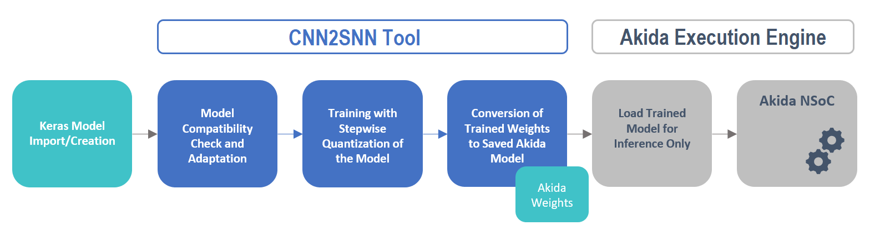

<!DOCTYPE html>
<!--[if IE 8]><html class="no-js lt-ie9" lang="en" > <![endif]-->
<!--[if gt IE 8]><!--> <html class="no-js" lang="en" > <!--<![endif]-->
<head>
  <meta charset="utf-8">
  
  <meta name="viewport" content="width=device-width, initial-scale=1.0">
  
  <title>CNN conversion flow tutorial for MNIST &mdash; Akida Examples  documentation</title>
  

  
  
    <link rel="shortcut icon" href="../../_static/favicon.ico"/>
  
  
  

  
  <script type="text/javascript" src="../../_static/js/modernizr.min.js"></script>
  
    
      <script type="text/javascript" id="documentation_options" data-url_root="../../" src="../../_static/documentation_options.js"></script>
        <script type="text/javascript" src="../../_static/jquery.js"></script>
        <script type="text/javascript" src="../../_static/underscore.js"></script>
        <script type="text/javascript" src="../../_static/doctools.js"></script>
        <script type="text/javascript" src="../../_static/language_data.js"></script>
    
    <script type="text/javascript" src="../../_static/js/theme.js"></script>

    

  
  <link rel="stylesheet" href="../../_static/css/theme.css" type="text/css" />
  <link rel="stylesheet" href="../../_static/pygments.css" type="text/css" />
  <link rel="stylesheet" href="../../_static/gallery.css" type="text/css" />
    <link rel="index" title="Index" href="../../genindex.html" />
    <link rel="search" title="Search" href="../../search.html" />
    <link rel="next" title="Learning and inference on MNIST" href="../semisupervised/plot_mnist_main.html" />
    <link rel="prev" title="Inference on ImageNet with MobileNet" href="plot_mobilenet_imagenet.html" /> 
</head>

<body class="wy-body-for-nav">

   
  <div class="wy-grid-for-nav">
    
    <nav data-toggle="wy-nav-shift" class="wy-nav-side">
      <div class="wy-side-scroll">
        <div class="wy-side-nav-search"  style="background: #3f51b5" >
          

          
            <a href="../../index.html">
          

          
            
            
          
          </a>

          
            
            
              <div class="version">
                1.7.4
              </div>
            
          

          
<div role="search">
  <form id="rtd-search-form" class="wy-form" action="../../search.html" method="get">
    <input type="text" name="q" placeholder="Search docs" />
    <input type="hidden" name="check_keywords" value="yes" />
    <input type="hidden" name="area" value="default" />
  </form>
</div>

          
        </div>

        <div class="wy-menu wy-menu-vertical" data-spy="affix" role="navigation" aria-label="main navigation">
          
            
            
              
            
            
              <ul class="current">
<li class="toctree-l1"><a class="reference internal" href="../../index.html">Overview</a></li>
<li class="toctree-l1"><a class="reference internal" href="../../installation.html">Installation</a><ul>
<li class="toctree-l2"><a class="reference internal" href="../../installation.html#requirements">Requirements</a></li>
<li class="toctree-l2"><a class="reference internal" href="../../installation.html#quick-installation">Quick installation</a></li>
<li class="toctree-l2"><a class="reference internal" href="../../installation.html#running-examples">Running examples</a></li>
</ul>
</li>
<li class="toctree-l1"><a class="reference internal" href="../../user_guide/user_guide.html">User guide</a><ul>
<li class="toctree-l2"><a class="reference internal" href="../../user_guide/getting_started.html">Getting started</a><ul>
<li class="toctree-l3"><a class="reference internal" href="../../user_guide/getting_started.html#for-beginners">For beginners</a></li>
<li class="toctree-l3"><a class="reference internal" href="../../user_guide/getting_started.html#for-users-familiar-with-deep-learning">For users familiar with deep-learning</a></li>
</ul>
</li>
<li class="toctree-l2"><a class="reference internal" href="../../user_guide/aee.html">Akida user guide</a><ul>
<li class="toctree-l3"><a class="reference internal" href="../../user_guide/aee.html#the-akida-execution-engine">The Akida Execution Engine</a><ul>
<li class="toctree-l4"><a class="reference internal" href="../../user_guide/aee.html#id1">1. The Spiking Neural Network model</a></li>
<li class="toctree-l4"><a class="reference internal" href="../../user_guide/aee.html#id2">2. Input data format</a></li>
<li class="toctree-l4"><a class="reference internal" href="../../user_guide/aee.html#id3">3. Determine training mode</a></li>
<li class="toctree-l4"><a class="reference internal" href="../../user_guide/aee.html#id4">4. Interpreting outputs</a></li>
</ul>
</li>
<li class="toctree-l3"><a class="reference internal" href="../../user_guide/aee.html#neural-network-model">Neural Network model</a><ul>
<li class="toctree-l4"><a class="reference internal" href="../../user_guide/aee.html#specifying-the-neural-network-model">Specifying the Neural Network model</a></li>
<li class="toctree-l4"><a class="reference internal" href="../../user_guide/aee.html#saving-and-loading">Saving and loading</a></li>
<li class="toctree-l4"><a class="reference internal" href="../../user_guide/aee.html#input-layer-types">Input layer types</a></li>
<li class="toctree-l4"><a class="reference internal" href="../../user_guide/aee.html#data-processing-layer-types">Data-Processing layer types</a></li>
</ul>
</li>
<li class="toctree-l3"><a class="reference internal" href="../../user_guide/aee.html#id5">Using Akida Unsupervised Learning</a><ul>
<li class="toctree-l4"><a class="reference internal" href="../../user_guide/aee.html#learning-constraints">Learning constraints</a></li>
<li class="toctree-l4"><a class="reference internal" href="../../user_guide/aee.html#compiling-a-layer">Compiling a layer</a></li>
<li class="toctree-l4"><a class="reference internal" href="../../user_guide/aee.html#id7">Learning parameters</a></li>
</ul>
</li>
</ul>
</li>
<li class="toctree-l2"><a class="reference internal" href="../../user_guide/cnn2snn.html">CNN2SNN toolkit</a><ul>
<li class="toctree-l3"><a class="reference internal" href="../../user_guide/cnn2snn.html#overview">Overview</a><ul>
<li class="toctree-l4"><a class="reference internal" href="../../user_guide/cnn2snn.html#conversion-workflow">Conversion Workflow</a></li>
<li class="toctree-l4"><a class="reference internal" href="../../user_guide/cnn2snn.html#compatibility-constraints">Compatibility Constraints</a></li>
<li class="toctree-l4"><a class="reference internal" href="../../user_guide/cnn2snn.html#typical-training-scenario">Typical training scenario</a></li>
</ul>
</li>
<li class="toctree-l3"><a class="reference internal" href="../../user_guide/cnn2snn.html#layers-considerations">Layers Considerations</a><ul>
<li class="toctree-l4"><a class="reference internal" href="../../user_guide/cnn2snn.html#supported-layer-types">Supported layer types</a></li>
<li class="toctree-l4"><a class="reference internal" href="../../user_guide/cnn2snn.html#quantization-aware-layers">Quantization-aware layers</a></li>
<li class="toctree-l4"><a class="reference internal" href="../../user_guide/cnn2snn.html#training-only-layers">Training-Only Layers</a></li>
<li class="toctree-l4"><a class="reference internal" href="../../user_guide/cnn2snn.html#first-layers">First Layers</a></li>
<li class="toctree-l4"><a class="reference internal" href="../../user_guide/cnn2snn.html#id6">Final Layers</a></li>
</ul>
</li>
<li class="toctree-l3"><a class="reference internal" href="../../user_guide/cnn2snn.html#layer-blocks">Layer Blocks</a><ul>
<li class="toctree-l4"><a class="reference internal" href="../../user_guide/cnn2snn.html#id7">Overview</a></li>
<li class="toctree-l4"><a class="reference internal" href="../../user_guide/cnn2snn.html#conv-block"><code class="docutils literal notranslate"><span class="pre">conv_block</span></code></a></li>
<li class="toctree-l4"><a class="reference internal" href="../../user_guide/cnn2snn.html#dense-block"><code class="docutils literal notranslate"><span class="pre">dense_block</span></code></a></li>
<li class="toctree-l4"><a class="reference internal" href="../../user_guide/cnn2snn.html#separable-conv-block"><code class="docutils literal notranslate"><span class="pre">separable_conv_block</span></code></a></li>
</ul>
</li>
<li class="toctree-l3"><a class="reference internal" href="../../user_guide/cnn2snn.html#tips-and-tricks">Tips and Tricks</a></li>
</ul>
</li>
<li class="toctree-l2"><a class="reference internal" href="../../user_guide/hw_constraints.html">Hardware constraints</a><ul>
<li class="toctree-l3"><a class="reference internal" href="../../user_guide/hw_constraints.html#input-layer">Input layer</a></li>
<li class="toctree-l3"><a class="reference internal" href="../../user_guide/hw_constraints.html#data-processing-layers">Data-Processing layers</a><ul>
<li class="toctree-l4"><a class="reference internal" href="../../user_guide/hw_constraints.html#convolutional-layer">Convolutional layer</a></li>
<li class="toctree-l4"><a class="reference internal" href="../../user_guide/hw_constraints.html#fully-connected-layer">Fully connected layer</a></li>
</ul>
</li>
</ul>
</li>
</ul>
</li>
<li class="toctree-l1"><a class="reference internal" href="../../api_reference/api_reference.html">API reference</a><ul>
<li class="toctree-l2"><a class="reference internal" href="../../api_reference/aee_apis.html">Akida Execution Engine</a><ul>
<li class="toctree-l3"><a class="reference internal" href="../../api_reference/aee_apis.html#model">Model</a></li>
<li class="toctree-l3"><a class="reference internal" href="../../api_reference/aee_apis.html#layer">Layer</a></li>
<li class="toctree-l3"><a class="reference internal" href="../../api_reference/aee_apis.html#layerstatistics">LayerStatistics</a></li>
<li class="toctree-l3"><a class="reference internal" href="../../api_reference/aee_apis.html#observer">Observer</a></li>
<li class="toctree-l3"><a class="reference internal" href="../../api_reference/aee_apis.html#inputdata">InputData</a></li>
<li class="toctree-l3"><a class="reference internal" href="../../api_reference/aee_apis.html#inputconvolutional">InputConvolutional</a></li>
<li class="toctree-l3"><a class="reference internal" href="../../api_reference/aee_apis.html#inputbcspike">InputBCSpike</a></li>
<li class="toctree-l3"><a class="reference internal" href="../../api_reference/aee_apis.html#fullyconnected">FullyConnected</a></li>
<li class="toctree-l3"><a class="reference internal" href="../../api_reference/aee_apis.html#convolutional">Convolutional</a></li>
<li class="toctree-l3"><a class="reference internal" href="../../api_reference/aee_apis.html#separableconvolutional">SeparableConvolutional</a></li>
<li class="toctree-l3"><a class="reference internal" href="../../api_reference/aee_apis.html#tensor">Tensor</a></li>
<li class="toctree-l3"><a class="reference internal" href="../../api_reference/aee_apis.html#sparse">Sparse</a></li>
<li class="toctree-l3"><a class="reference internal" href="../../api_reference/aee_apis.html#coords-to-sparse">coords_to_sparse</a></li>
<li class="toctree-l3"><a class="reference internal" href="../../api_reference/aee_apis.html#dense-to-sparse">dense_to_sparse</a></li>
<li class="toctree-l3"><a class="reference internal" href="../../api_reference/aee_apis.html#backendtype">BackendType</a></li>
<li class="toctree-l3"><a class="reference internal" href="../../api_reference/aee_apis.html#convolutionmode">ConvolutionMode</a></li>
<li class="toctree-l3"><a class="reference internal" href="../../api_reference/aee_apis.html#poolingtype">PoolingType</a></li>
<li class="toctree-l3"><a class="reference internal" href="../../api_reference/aee_apis.html#learningtype">LearningType</a></li>
</ul>
</li>
<li class="toctree-l2"><a class="reference internal" href="../../api_reference/cnn2snn_apis.html">CNN2SNN</a><ul>
<li class="toctree-l3"><a class="reference internal" href="../../api_reference/cnn2snn_apis.html#convert">convert</a></li>
<li class="toctree-l3"><a class="reference internal" href="../../api_reference/cnn2snn_apis.html#check-model-compatibility">check_model_compatibility</a></li>
<li class="toctree-l3"><a class="reference internal" href="../../api_reference/cnn2snn_apis.html#weightquantizer">WeightQuantizer</a></li>
<li class="toctree-l3"><a class="reference internal" href="../../api_reference/cnn2snn_apis.html#weightfloat">WeightFloat</a></li>
<li class="toctree-l3"><a class="reference internal" href="../../api_reference/cnn2snn_apis.html#quantizedconv2d">QuantizedConv2D</a></li>
<li class="toctree-l3"><a class="reference internal" href="../../api_reference/cnn2snn_apis.html#quantizeddepthwiseconv2d">QuantizedDepthwiseConv2D</a></li>
<li class="toctree-l3"><a class="reference internal" href="../../api_reference/cnn2snn_apis.html#quantizeddense">QuantizedDense</a></li>
<li class="toctree-l3"><a class="reference internal" href="../../api_reference/cnn2snn_apis.html#quantizedseparableconv2d">QuantizedSeparableConv2D</a></li>
<li class="toctree-l3"><a class="reference internal" href="../../api_reference/cnn2snn_apis.html#activationdiscreterelu">ActivationDiscreteRelu</a></li>
</ul>
</li>
</ul>
</li>
<li class="toctree-l1 current"><a class="reference internal" href="../index.html">Examples</a><ul class="current">
<li class="toctree-l2 current"><a class="reference internal" href="../index.html#cnn2snn">CNN2SNN</a><ul class="current">
<li class="toctree-l3"><a class="reference internal" href="plot_mnist_cnn2akida_main.html">Inference on MNIST</a><ul>
<li class="toctree-l4"><a class="reference internal" href="plot_mnist_cnn2akida_main.html#loading-the-mnist-dataset">1. Loading the MNIST dataset</a></li>
<li class="toctree-l4"><a class="reference internal" href="plot_mnist_cnn2akida_main.html#look-at-some-images-from-the-test-dataset">2. Look at some images from the test dataset</a></li>
<li class="toctree-l4"><a class="reference internal" href="plot_mnist_cnn2akida_main.html#load-the-pre-trained-akida-model">3. Load the pre-trained Akida model</a></li>
<li class="toctree-l4"><a class="reference internal" href="plot_mnist_cnn2akida_main.html#classify-a-single-image">4. Classify a single image</a></li>
<li class="toctree-l4"><a class="reference internal" href="plot_mnist_cnn2akida_main.html#check-performance-across-a-number-of-samples">5. Check performance across a number of samples</a></li>
</ul>
</li>
<li class="toctree-l3"><a class="reference internal" href="plot_mobilenet_kws.html">Inference on KWS with MobileNet</a><ul>
<li class="toctree-l4"><a class="reference internal" href="plot_mobilenet_kws.html#load-cnn2snn-tool-dependencies">1. Load CNN2SNN tool dependencies</a></li>
<li class="toctree-l4"><a class="reference internal" href="plot_mobilenet_kws.html#load-the-preprocessed-dataset">2. Load the preprocessed dataset</a></li>
<li class="toctree-l4"><a class="reference internal" href="plot_mobilenet_kws.html#create-a-keras-model-satisfying-akida-nsoc-requirements">3. Create a Keras model satisfying Akida NSoC requirements</a></li>
<li class="toctree-l4"><a class="reference internal" href="plot_mobilenet_kws.html#check-performance">4. Check performance</a></li>
<li class="toctree-l4"><a class="reference internal" href="plot_mobilenet_kws.html#conversion-to-akida">5. Conversion to Akida</a></li>
</ul>
</li>
<li class="toctree-l3"><a class="reference internal" href="plot_cifar10_cnn2akida_demo.html">Inference on CIFAR10 with VGG and MobileNet</a><ul>
<li class="toctree-l4"><a class="reference internal" href="plot_cifar10_cnn2akida_demo.html#load-cnn2snn-tool-dependencies">1. Load CNN2SNN tool dependencies</a></li>
<li class="toctree-l4"><a class="reference internal" href="plot_cifar10_cnn2akida_demo.html#load-and-reshape-cifar10-dataset">2. Load and reshape CIFAR10 dataset</a></li>
<li class="toctree-l4"><a class="reference internal" href="plot_cifar10_cnn2akida_demo.html#create-a-quantized-keras-vgg-model">3. Create a quantized Keras VGG model</a></li>
<li class="toctree-l4"><a class="reference internal" href="plot_cifar10_cnn2akida_demo.html#conversion-to-akida">4. Conversion to Akida</a></li>
<li class="toctree-l4"><a class="reference internal" href="plot_cifar10_cnn2akida_demo.html#create-a-quantized-keras-mobilenet-model">5. Create a quantized Keras MobileNet model</a></li>
<li class="toctree-l4"><a class="reference internal" href="plot_cifar10_cnn2akida_demo.html#id2">6. Conversion to Akida</a></li>
</ul>
</li>
<li class="toctree-l3"><a class="reference internal" href="plot_cats_vs_dogs_cnn2akida_demo.html">Transfer learning with MobileNet for cats vs. dogs</a><ul>
<li class="toctree-l4"><a class="reference internal" href="plot_cats_vs_dogs_cnn2akida_demo.html#transfer-learning-process">1. Transfer learning process</a></li>
<li class="toctree-l4"><a class="reference internal" href="plot_cats_vs_dogs_cnn2akida_demo.html#load-and-preprocess-data">2. Load and preprocess data</a></li>
<li class="toctree-l4"><a class="reference internal" href="plot_cats_vs_dogs_cnn2akida_demo.html#convert-a-quantized-keras-model-to-akida">3. Convert a quantized Keras model to Akida</a></li>
<li class="toctree-l4"><a class="reference internal" href="plot_cats_vs_dogs_cnn2akida_demo.html#classify-test-images">4. Classify test images</a></li>
</ul>
</li>
<li class="toctree-l3"><a class="reference internal" href="plot_mobilenet_imagenet.html">Inference on ImageNet with MobileNet</a><ul>
<li class="toctree-l4"><a class="reference internal" href="plot_mobilenet_imagenet.html#load-cnn2snn-tool-dependencies">1. Load CNN2SNN tool dependencies</a></li>
<li class="toctree-l4"><a class="reference internal" href="plot_mobilenet_imagenet.html#load-test-images-from-imagenet">2. Load test images from ImageNet</a></li>
<li class="toctree-l4"><a class="reference internal" href="plot_mobilenet_imagenet.html#create-a-quantized-keras-model">3. Create a quantized Keras model</a></li>
<li class="toctree-l4"><a class="reference internal" href="plot_mobilenet_imagenet.html#convert-keras-model-for-akida-nsoc">4. Convert Keras model for Akida NSoC</a></li>
</ul>
</li>
<li class="toctree-l3 current"><a class="current reference internal" href="#">CNN conversion flow tutorial for MNIST</a><ul>
<li class="toctree-l4"><a class="reference internal" href="#system-configuration">1. System configuration</a></li>
<li class="toctree-l4"><a class="reference internal" href="#model-creation-and-performance-check">2. Model creation and performance check</a></li>
<li class="toctree-l4"><a class="reference internal" href="#model-akida-compatibility-check-and-changes">3. Model Akida-compatibility check and changes</a></li>
<li class="toctree-l4"><a class="reference internal" href="#model-quantization-and-training">4. Model quantization and training</a></li>
<li class="toctree-l4"><a class="reference internal" href="#convert-trained-model-for-akida-and-test">5. Convert trained model for Akida and test</a></li>
</ul>
</li>
</ul>
</li>
<li class="toctree-l2"><a class="reference internal" href="../index.html#semisupervised">Semisupervised</a><ul>
<li class="toctree-l3"><a class="reference internal" href="../semisupervised/plot_mnist_main.html">Learning and inference on MNIST</a><ul>
<li class="toctree-l4"><a class="reference internal" href="../semisupervised/plot_mnist_main.html#loading-the-mnist-dataset">1. Loading the MNIST dataset</a></li>
<li class="toctree-l4"><a class="reference internal" href="../semisupervised/plot_mnist_main.html#look-at-some-images-from-the-dataset">2. Look at some images from the dataset</a></li>
<li class="toctree-l4"><a class="reference internal" href="../semisupervised/plot_mnist_main.html#configuring-akida-model">3. Configuring Akida model</a></li>
<li class="toctree-l4"><a class="reference internal" href="../semisupervised/plot_mnist_main.html#testing-performance">4. Testing performance</a></li>
<li class="toctree-l4"><a class="reference internal" href="../semisupervised/plot_mnist_main.html#learning-and-inference">5. Learning and inference</a></li>
</ul>
</li>
<li class="toctree-l3"><a class="reference internal" href="../semisupervised/plot_dvs_main.html">Learning and inference on Characters DVS</a><ul>
<li class="toctree-l4"><a class="reference internal" href="../semisupervised/plot_dvs_main.html#loading-the-characters-dvs-dataset">1. Loading the Characters DVS dataset</a></li>
<li class="toctree-l4"><a class="reference internal" href="../semisupervised/plot_dvs_main.html#look-at-some-events-from-the-dataset">2. Look at some events from the dataset</a></li>
<li class="toctree-l4"><a class="reference internal" href="../semisupervised/plot_dvs_main.html#configuring-akida-model">3. Configuring Akida model</a></li>
<li class="toctree-l4"><a class="reference internal" href="../semisupervised/plot_dvs_main.html#learning-and-inference">4. Learning and inference</a></li>
<li class="toctree-l4"><a class="reference internal" href="../semisupervised/plot_dvs_main.html#unsupervised-learning-with-supervised-classification">5. Unsupervised learning with supervised classification</a></li>
</ul>
</li>
<li class="toctree-l3"><a class="reference internal" href="../semisupervised/plot_nslkdd_main.html">Learning and inference on NSL-KDD</a><ul>
<li class="toctree-l4"><a class="reference internal" href="../semisupervised/plot_nslkdd_main.html#download-and-prepare-the-nsl-kdd-dataset">1. Download and prepare the NSL-KDD dataset</a></li>
<li class="toctree-l4"><a class="reference internal" href="../semisupervised/plot_nslkdd_main.html#sneak-peek-of-the-input-tabular-data">2. Sneak peek of the input tabular data</a></li>
<li class="toctree-l4"><a class="reference internal" href="../semisupervised/plot_nslkdd_main.html#convert-from-tabular-to-binary-data">3. Convert from tabular to binary data</a></li>
<li class="toctree-l4"><a class="reference internal" href="../semisupervised/plot_nslkdd_main.html#oversampling-the-training-data-to-cope-with-imbalanced-dataset">4. Oversampling the training data to cope with imbalanced dataset</a></li>
<li class="toctree-l4"><a class="reference internal" href="../semisupervised/plot_nslkdd_main.html#configuring-akida-model">5. Configuring Akida model</a></li>
<li class="toctree-l4"><a class="reference internal" href="../semisupervised/plot_nslkdd_main.html#learning-and-inference">6. Learning and inference</a></li>
<li class="toctree-l4"><a class="reference internal" href="../semisupervised/plot_nslkdd_main.html#display-results">7. Display results</a></li>
</ul>
</li>
</ul>
</li>
<li class="toctree-l2"><a class="reference internal" href="../index.html#unsupervised">Unsupervised</a><ul>
<li class="toctree-l3"><a class="reference internal" href="../unsupervised/plot_unsupervised_main.html">Native learning for pattern detection</a><ul>
<li class="toctree-l4"><a class="reference internal" href="../unsupervised/plot_unsupervised_main.html#creating-the-dataset">1. Creating the dataset</a></li>
<li class="toctree-l4"><a class="reference internal" href="../unsupervised/plot_unsupervised_main.html#creating-random-dot-images">2. Creating random dot images</a></li>
<li class="toctree-l4"><a class="reference internal" href="../unsupervised/plot_unsupervised_main.html#take-a-look-at-some-of-the-random-dots-images">3. Take a look at some of the random dots images</a></li>
<li class="toctree-l4"><a class="reference internal" href="../unsupervised/plot_unsupervised_main.html#configuring-the-akida-model">4. Configuring the Akida model</a></li>
<li class="toctree-l4"><a class="reference internal" href="../unsupervised/plot_unsupervised_main.html#do-the-learning">5. Do the learning</a></li>
<li class="toctree-l4"><a class="reference internal" href="../unsupervised/plot_unsupervised_main.html#test-the-performance">6. Test the performance</a></li>
</ul>
</li>
</ul>
</li>
</ul>
</li>
<li class="toctree-l1"><a class="reference external" href="https://support.brainchip.com/portal/home">Support</a></li>
<li class="toctree-l1"><a class="reference internal" href="../../license.html">License</a></li>
</ul>

            
          
        </div>
      </div>
    </nav>

    <section data-toggle="wy-nav-shift" class="wy-nav-content-wrap">

      
      <nav class="wy-nav-top" aria-label="top navigation">
        
          <i data-toggle="wy-nav-top" class="fa fa-bars"></i>
          <a href="../../index.html">Akida Examples</a>
        
      </nav>


      <div class="wy-nav-content">
        
        <div class="rst-content">
        
          


<div role="navigation" aria-label="breadcrumbs navigation">

  <ul class="wy-breadcrumbs">
    
      <li><a href="../../index.html">Docs</a> &raquo;</li>
        
          <li><a href="../index.html">Akida examples</a> &raquo;</li>
        
      <li>CNN conversion flow tutorial for MNIST</li>
    
    
      <li class="wy-breadcrumbs-aside">
        
            
        
      </li>
    
  </ul>

  
  <hr/>
</div>
          <div role="main" class="document" itemscope="itemscope" itemtype="http://schema.org/Article">
           <div itemprop="articleBody">
            
  <div class="sphx-glr-download-link-note admonition note">
<p class="admonition-title">Note</p>
<p>Click <a class="reference internal" href="#sphx-glr-download-examples-cnn2snn-plot-mnist-cnn2akida-demo-py"><span class="std std-ref">here</span></a> to download the full example code</p>
</div>
<div class="sphx-glr-example-title section" id="cnn-conversion-flow-tutorial-for-mnist">
<span id="sphx-glr-examples-cnn2snn-plot-mnist-cnn2akida-demo-py"></span><h1>CNN conversion flow tutorial for MNIST<a class="headerlink" href="#cnn-conversion-flow-tutorial-for-mnist" title="Permalink to this headline">¶</a></h1>
<p>The CNN2SNN tool is based on Keras, TensorFlow high-level API for building and
training deep learning models.</p>
<div class="admonition note">
<p class="admonition-title">Note</p>
<p>Please refer to TensorFlow  <a class="reference external" href="https://www.tensorflow.org/api_docs/python/tf/keras/models">tf.keras.models</a>
module for model creation/import details and <a class="reference external" href="https://www.tensorflow.org/guide">TensorFlow
Guide</a> for details of how
TensorFlow works.</p>
</div>
<p><strong>CNN2SNN tool</strong> allows you to <strong>convert CNN networks to SNN networks</strong>
compatible with the <strong>Akida NSoC</strong> in a few steps.</p>
<div class="admonition note">
<p class="admonition-title">Note</p>
<p>MNIST example below is light enough so you do not need a <a class="reference external" href="https://www.tensorflow.org/install/gpu">GPU</a> to run the CNN2SNN
tool.</p>
</div>

<p><strong>In this tutorial you will:</strong></p>
<blockquote>
<div><ul class="simple">
<li><p>load and reshape MNIST dataset,</p></li>
<li><p>create a CNN model,</p></li>
<li><p>configure it for Akida NSoC,</p></li>
<li><p>quantize it,</p></li>
<li><p>train it,</p></li>
<li><p>convert to an Akida model,</p></li>
<li><p>check its performance using the Akida Execution Engine.</p></li>
</ul>
</div></blockquote>
<div class="section" id="system-configuration">
<h2>1. System configuration<a class="headerlink" href="#system-configuration" title="Permalink to this headline">¶</a></h2>
<div class="section" id="load-cnn2snn-tool-dependencies">
<h3>1.1 Load CNN2SNN tool dependencies<a class="headerlink" href="#load-cnn2snn-tool-dependencies" title="Permalink to this headline">¶</a></h3>
<div class="highlight-default notranslate"><div class="highlight"><pre><span></span><span class="c1"># System imports</span>
<span class="kn">import</span> <span class="nn">os</span>
<span class="kn">import</span> <span class="nn">sys</span>
<span class="kn">import</span> <span class="nn">numpy</span> <span class="k">as</span> <span class="nn">np</span>
<span class="kn">from</span> <span class="nn">sklearn.metrics</span> <span class="kn">import</span> <span class="n">accuracy_score</span>
<span class="kn">from</span> <span class="nn">tempfile</span> <span class="kn">import</span> <span class="n">TemporaryDirectory</span>

<span class="c1"># TensorFlow imports</span>
<span class="kn">import</span> <span class="nn">tensorflow.keras.backend</span> <span class="k">as</span> <span class="nn">K</span>
<span class="kn">from</span> <span class="nn">tensorflow.keras.callbacks</span> <span class="kn">import</span> <span class="n">LearningRateScheduler</span>
<span class="kn">from</span> <span class="nn">tensorflow.keras.datasets</span> <span class="kn">import</span> <span class="n">mnist</span>
<span class="kn">from</span> <span class="nn">tensorflow.keras.layers</span> <span class="kn">import</span> <span class="n">Conv2D</span><span class="p">,</span> <span class="n">Dense</span><span class="p">,</span> <span class="n">BatchNormalization</span><span class="p">,</span> <span class="n">MaxPooling2D</span><span class="p">,</span> <span class="n">Activation</span><span class="p">,</span> <span class="n">ReLU</span><span class="p">,</span> <span class="n">Flatten</span><span class="p">,</span> <span class="n">Input</span>
<span class="kn">from</span> <span class="nn">tensorflow.keras.models</span> <span class="kn">import</span> <span class="n">Sequential</span><span class="p">,</span> <span class="n">Model</span>
<span class="kn">from</span> <span class="nn">tensorflow.keras.optimizers</span> <span class="kn">import</span> <span class="n">Adam</span>
<span class="kn">from</span> <span class="nn">tensorflow.keras.utils</span> <span class="kn">import</span> <span class="n">to_categorical</span>
</pre></div>
</div>
</div>
<div class="section" id="load-and-reshape-mnist-dataset">
<h3>1.2 Load and reshape MNIST dataset<a class="headerlink" href="#load-and-reshape-mnist-dataset" title="Permalink to this headline">¶</a></h3>
<p>After loading, we make 3 transformations on the dataset:</p>
<ol class="arabic simple">
<li><p>Reshape the sample content data (x values) into a num_samples x width x
height x channels matrix.</p></li>
</ol>
<div class="admonition note">
<p class="admonition-title">Note</p>
<p>At this point, we’ll set aside the raw data for testing our
converted model in the Akida Execution Engine later</p>
</div>
<ol class="arabic simple" start="2">
<li><p>Rescale the 8-bit loaded data to the range 0-to-1 for training.</p></li>
</ol>
<div class="admonition note">
<p class="admonition-title">Note</p>
<p>This shift makes almost no difference in the current example, but
for some datasets rescaling the absolute values (and also shifting
to zero-mean) can make a really major difference.</p>
<p>Also note that we store the scaling values <code class="docutils literal notranslate"><span class="pre">input_scaling</span></code> for
use when preparing the model for the Akida Execution Engine. The
implementation of the Akida neural network allows us to completely
skip the rescaling step (i.e. the Akida model should be fed with
the raw 8-bit values) but that does require information about what
scaling was applied prior to training -see below for more details-.</p>
</div>
<p>3. Transform the loaded labels from a scalar representation (single integer
value per sample) to a one-hot vector representation, appropriate for use
with the squared hinge loss function used in the current model.</p>
<div class="admonition note">
<p class="admonition-title">Note</p>
<p>Input data normalization is a common step dealing with CNN
(rationale is to keep data in a range that works with selected
optimizers, some interesting reading can be found
<a class="reference external" href="https://www.jeremyjordan.me/batch-normalization/">here</a>.</p>
</div>
<div class="highlight-default notranslate"><div class="highlight"><pre><span></span><span class="c1"># Load MNIST dataset</span>
<span class="p">(</span><span class="n">x_train</span><span class="p">,</span> <span class="n">y_train</span><span class="p">),</span> <span class="p">(</span><span class="n">x_test</span><span class="p">,</span> <span class="n">y_test</span><span class="p">)</span> <span class="o">=</span> <span class="n">mnist</span><span class="o">.</span><span class="n">load_data</span><span class="p">()</span>

<span class="c1"># Reshape x-data</span>
<span class="n">x_train</span> <span class="o">=</span> <span class="n">x_train</span><span class="o">.</span><span class="n">reshape</span><span class="p">(</span><span class="mi">60000</span><span class="p">,</span> <span class="mi">28</span><span class="p">,</span> <span class="mi">28</span><span class="p">,</span> <span class="mi">1</span><span class="p">)</span>
<span class="n">x_test</span> <span class="o">=</span> <span class="n">x_test</span><span class="o">.</span><span class="n">reshape</span><span class="p">(</span><span class="mi">10000</span><span class="p">,</span> <span class="mi">28</span><span class="p">,</span> <span class="mi">28</span><span class="p">,</span> <span class="mi">1</span><span class="p">)</span>

<span class="c1"># Set aside raw test data for use with Akida Execution Engine later</span>
<span class="n">raw_x_test</span> <span class="o">=</span> <span class="n">x_test</span><span class="o">.</span><span class="n">astype</span><span class="p">(</span><span class="s1">&#39;uint8&#39;</span><span class="p">)</span>
<span class="n">raw_y_test</span> <span class="o">=</span> <span class="n">y_test</span>

<span class="c1"># Rescale x-data</span>
<span class="n">a</span> <span class="o">=</span> <span class="mi">255</span>
<span class="n">b</span> <span class="o">=</span> <span class="mi">0</span>
<span class="n">input_scaling</span> <span class="o">=</span> <span class="p">(</span><span class="n">a</span><span class="p">,</span> <span class="n">b</span><span class="p">)</span>
<span class="n">x_train</span> <span class="o">=</span> <span class="n">x_train</span><span class="o">.</span><span class="n">astype</span><span class="p">(</span><span class="s1">&#39;float32&#39;</span><span class="p">)</span>
<span class="n">x_test</span> <span class="o">=</span> <span class="n">x_test</span><span class="o">.</span><span class="n">astype</span><span class="p">(</span><span class="s1">&#39;float32&#39;</span><span class="p">)</span>
<span class="n">x_train</span> <span class="o">=</span> <span class="p">(</span><span class="n">x_train</span> <span class="o">-</span> <span class="n">b</span><span class="p">)</span><span class="o">/</span><span class="n">a</span>
<span class="n">x_test</span> <span class="o">=</span> <span class="p">(</span><span class="n">x_test</span> <span class="o">-</span> <span class="n">b</span><span class="p">)</span><span class="o">/</span><span class="n">a</span>

<span class="c1"># Transform scalar labels to one-hot representation, scaled to +/- 1 appropriate for squared hinge loss function</span>
<span class="n">y_train</span> <span class="o">=</span> <span class="n">to_categorical</span><span class="p">(</span><span class="n">y_train</span><span class="p">,</span> <span class="mi">10</span><span class="p">)</span> <span class="o">*</span> <span class="mi">2</span> <span class="o">-</span> <span class="mi">1</span>
<span class="n">y_test</span> <span class="o">=</span> <span class="n">to_categorical</span><span class="p">(</span><span class="n">y_test</span><span class="p">,</span> <span class="mi">10</span><span class="p">)</span> <span class="o">*</span> <span class="mi">2</span> <span class="o">-</span> <span class="mi">1</span>
</pre></div>
</div>
</div>
<div class="section" id="set-training-parameters">
<h3>1.3 Set training parameters<a class="headerlink" href="#set-training-parameters" title="Permalink to this headline">¶</a></h3>
<p>Set some training parameters used across the different training sessions:</p>
<div class="highlight-default notranslate"><div class="highlight"><pre><span></span><span class="c1"># Set dataset relative training parameters</span>
<span class="n">epochs</span> <span class="o">=</span> <span class="mi">5</span>
<span class="n">batch_size</span> <span class="o">=</span> <span class="mi">128</span>

<span class="c1"># Set the learning rate parameters</span>
<span class="n">lr_start</span> <span class="o">=</span> <span class="mf">1e-3</span>
<span class="n">lr_end</span> <span class="o">=</span> <span class="mf">1e-4</span>
<span class="n">lr_decay</span> <span class="o">=</span> <span class="p">(</span><span class="n">lr_end</span> <span class="o">/</span> <span class="n">lr_start</span><span class="p">)</span> <span class="o">**</span> <span class="p">(</span><span class="mf">1.</span> <span class="o">/</span> <span class="n">epochs</span><span class="p">)</span>
</pre></div>
</div>
</div>
</div>
<div class="section" id="model-creation-and-performance-check">
<h2>2. Model creation and performance check<a class="headerlink" href="#model-creation-and-performance-check" title="Permalink to this headline">¶</a></h2>
<div class="section" id="model-creation">
<h3>2.1 Model creation<a class="headerlink" href="#model-creation" title="Permalink to this headline">¶</a></h3>
<p>Note that at this stage, there is nothing specific to the Akida NSoC.
This start point is very much a completely standard CNN as defined
within <a class="reference external" href="https://www.tensorflow.org/api_docs/python/tf/keras">Keras</a>.</p>
<p>An appropriate model for MNIST (inspired by <a class="reference external" href="https://arxiv.org/pdf/1705.09283.pdf">this
paper</a>) might look something
like the following:</p>
<div class="highlight-default notranslate"><div class="highlight"><pre><span></span><span class="n">img_input</span> <span class="o">=</span> <span class="n">Input</span><span class="p">(</span><span class="n">shape</span><span class="o">=</span><span class="p">(</span><span class="mi">28</span><span class="p">,</span> <span class="mi">28</span><span class="p">,</span> <span class="mi">1</span><span class="p">))</span>
<span class="n">x</span> <span class="o">=</span> <span class="n">Conv2D</span><span class="p">(</span><span class="n">filters</span><span class="o">=</span><span class="mi">32</span><span class="p">,</span>
           <span class="n">kernel_size</span><span class="o">=</span><span class="p">(</span><span class="mi">5</span><span class="p">,</span> <span class="mi">5</span><span class="p">),</span>
           <span class="n">padding</span><span class="o">=</span><span class="s1">&#39;same&#39;</span><span class="p">,</span>
           <span class="n">use_bias</span><span class="o">=</span><span class="kc">False</span><span class="p">,</span>
           <span class="n">data_format</span><span class="o">=</span><span class="s1">&#39;channels_last&#39;</span><span class="p">)(</span><span class="n">img_input</span><span class="p">)</span>
<span class="n">x</span> <span class="o">=</span> <span class="n">MaxPooling2D</span><span class="p">(</span><span class="n">pool_size</span><span class="o">=</span><span class="p">(</span><span class="mi">2</span><span class="p">,</span> <span class="mi">2</span><span class="p">),</span> <span class="n">strides</span><span class="o">=</span><span class="p">(</span><span class="mi">2</span><span class="p">,</span> <span class="mi">2</span><span class="p">),</span> <span class="n">padding</span><span class="o">=</span><span class="s1">&#39;same&#39;</span><span class="p">)(</span><span class="n">x</span><span class="p">)</span>
<span class="n">x</span> <span class="o">=</span> <span class="n">BatchNormalization</span><span class="p">()(</span><span class="n">x</span><span class="p">)</span>
<span class="n">x</span> <span class="o">=</span> <span class="n">ReLU</span><span class="p">(</span><span class="mf">6.</span><span class="p">)(</span><span class="n">x</span><span class="p">)</span>

<span class="n">x</span> <span class="o">=</span> <span class="n">Conv2D</span><span class="p">(</span><span class="n">filters</span><span class="o">=</span><span class="mi">64</span><span class="p">,</span>
           <span class="n">kernel_size</span><span class="o">=</span><span class="p">(</span><span class="mi">5</span><span class="p">,</span> <span class="mi">5</span><span class="p">),</span>
           <span class="n">padding</span><span class="o">=</span><span class="s1">&#39;same&#39;</span><span class="p">,</span>
           <span class="n">use_bias</span><span class="o">=</span><span class="kc">False</span><span class="p">)(</span><span class="n">x</span><span class="p">)</span>
<span class="n">x</span> <span class="o">=</span> <span class="n">MaxPooling2D</span><span class="p">(</span><span class="n">pool_size</span><span class="o">=</span><span class="p">(</span><span class="mi">2</span><span class="p">,</span> <span class="mi">2</span><span class="p">),</span> <span class="n">strides</span><span class="o">=</span><span class="p">(</span><span class="mi">2</span><span class="p">,</span> <span class="mi">2</span><span class="p">),</span> <span class="n">padding</span><span class="o">=</span><span class="s1">&#39;same&#39;</span><span class="p">)(</span><span class="n">x</span><span class="p">)</span>
<span class="n">x</span> <span class="o">=</span> <span class="n">BatchNormalization</span><span class="p">()(</span><span class="n">x</span><span class="p">)</span>
<span class="n">x</span> <span class="o">=</span> <span class="n">ReLU</span><span class="p">(</span><span class="mf">6.</span><span class="p">)(</span><span class="n">x</span><span class="p">)</span>

<span class="n">x</span> <span class="o">=</span> <span class="n">Flatten</span><span class="p">()(</span><span class="n">x</span><span class="p">)</span>
<span class="n">x</span> <span class="o">=</span> <span class="n">Dense</span><span class="p">(</span><span class="mi">512</span><span class="p">,</span>
          <span class="n">use_bias</span><span class="o">=</span><span class="kc">False</span><span class="p">)(</span><span class="n">x</span><span class="p">)</span>
<span class="n">x</span> <span class="o">=</span> <span class="n">BatchNormalization</span><span class="p">()(</span><span class="n">x</span><span class="p">)</span>
<span class="n">x</span> <span class="o">=</span> <span class="n">ReLU</span><span class="p">(</span><span class="mf">6.</span><span class="p">)(</span><span class="n">x</span><span class="p">)</span>
<span class="n">x</span> <span class="o">=</span> <span class="n">Dense</span><span class="p">(</span><span class="mi">10</span><span class="p">,</span>
          <span class="n">use_bias</span><span class="o">=</span><span class="kc">False</span><span class="p">)(</span><span class="n">x</span><span class="p">)</span>

<span class="n">model_keras</span> <span class="o">=</span> <span class="n">Model</span><span class="p">(</span><span class="n">img_input</span><span class="p">,</span> <span class="n">x</span><span class="p">,</span> <span class="n">name</span><span class="o">=</span><span class="s1">&#39;mnistnet&#39;</span><span class="p">)</span>

<span class="n">opt</span> <span class="o">=</span> <span class="n">Adam</span><span class="p">(</span><span class="n">lr</span><span class="o">=</span><span class="n">lr_start</span><span class="p">)</span>
<span class="n">model_keras</span><span class="o">.</span><span class="n">compile</span><span class="p">(</span><span class="n">loss</span><span class="o">=</span><span class="s1">&#39;squared_hinge&#39;</span><span class="p">,</span> <span class="n">optimizer</span><span class="o">=</span><span class="n">opt</span><span class="p">,</span> <span class="n">metrics</span><span class="o">=</span><span class="p">[</span><span class="s1">&#39;accuracy&#39;</span><span class="p">])</span>
<span class="n">model_keras</span><span class="o">.</span><span class="n">summary</span><span class="p">()</span>
</pre></div>
</div>
<p class="sphx-glr-script-out">Out:</p>
<div class="sphx-glr-script-out highlight-none notranslate"><div class="highlight"><pre><span></span>Model: &quot;mnistnet&quot;
_________________________________________________________________
Layer (type)                 Output Shape              Param #
=================================================================
input_6 (InputLayer)         [(None, 28, 28, 1)]       0
_________________________________________________________________
conv2d (Conv2D)              (None, 28, 28, 32)        800
_________________________________________________________________
max_pooling2d (MaxPooling2D) (None, 14, 14, 32)        0
_________________________________________________________________
batch_normalization (BatchNo (None, 14, 14, 32)        128
_________________________________________________________________
re_lu (ReLU)                 (None, 14, 14, 32)        0
_________________________________________________________________
conv2d_1 (Conv2D)            (None, 14, 14, 64)        51200
_________________________________________________________________
max_pooling2d_1 (MaxPooling2 (None, 7, 7, 64)          0
_________________________________________________________________
batch_normalization_1 (Batch (None, 7, 7, 64)          256
_________________________________________________________________
re_lu_1 (ReLU)               (None, 7, 7, 64)          0
_________________________________________________________________
flatten_1 (Flatten)          (None, 3136)              0
_________________________________________________________________
dense (Dense)                (None, 512)               1605632
_________________________________________________________________
batch_normalization_2 (Batch (None, 512)               2048
_________________________________________________________________
re_lu_2 (ReLU)               (None, 512)               0
_________________________________________________________________
dense_1 (Dense)              (None, 10)                5120
=================================================================
Total params: 1,665,184
Trainable params: 1,663,968
Non-trainable params: 1,216
_________________________________________________________________
</pre></div>
</div>
<div class="admonition note">
<p class="admonition-title">Note</p>
<p>Adam optimizer is commonly used, more details can be found
<a class="reference external" href="https://arxiv.org/abs/1609.04747">here</a>.</p>
</div>
</div>
<div class="section" id="performance-check">
<h3>2.2 Performance check<a class="headerlink" href="#performance-check" title="Permalink to this headline">¶</a></h3>
<p>Before going any further, check the current model performance as a
benchmark for CNN2SNN conversion.
The created model should achieve a test accuracy a little over 99% after
5 epochs:</p>
<div class="highlight-default notranslate"><div class="highlight"><pre><span></span><span class="n">callbacks</span> <span class="o">=</span> <span class="p">[]</span>
<span class="n">lr_scheduler</span> <span class="o">=</span> <span class="n">LearningRateScheduler</span><span class="p">(</span><span class="k">lambda</span> <span class="n">e</span><span class="p">:</span> <span class="n">lr_start</span> <span class="o">*</span> <span class="n">lr_decay</span> <span class="o">**</span> <span class="n">e</span><span class="p">)</span>
<span class="n">callbacks</span><span class="o">.</span><span class="n">append</span><span class="p">(</span><span class="n">lr_scheduler</span><span class="p">)</span>
<span class="n">history</span> <span class="o">=</span> <span class="n">model_keras</span><span class="o">.</span><span class="n">fit</span><span class="p">(</span><span class="n">x_train</span><span class="p">,</span> <span class="n">y_train</span><span class="p">,</span>
                    <span class="n">batch_size</span><span class="o">=</span><span class="n">batch_size</span><span class="p">,</span> <span class="n">epochs</span><span class="o">=</span><span class="n">epochs</span><span class="p">,</span>
                    <span class="n">verbose</span><span class="o">=</span><span class="mi">1</span><span class="p">,</span> <span class="n">validation_data</span><span class="o">=</span><span class="p">(</span><span class="n">x_test</span><span class="p">,</span> <span class="n">y_test</span><span class="p">),</span>
                    <span class="n">callbacks</span><span class="o">=</span><span class="n">callbacks</span><span class="p">)</span>
<span class="n">score</span> <span class="o">=</span> <span class="n">model_keras</span><span class="o">.</span><span class="n">evaluate</span><span class="p">(</span><span class="n">x_test</span><span class="p">,</span> <span class="n">y_test</span><span class="p">,</span> <span class="n">verbose</span><span class="o">=</span><span class="mi">0</span><span class="p">)</span>
<span class="nb">print</span><span class="p">(</span><span class="s1">&#39;Test score:&#39;</span><span class="p">,</span> <span class="n">score</span><span class="p">[</span><span class="mi">0</span><span class="p">])</span>
<span class="nb">print</span><span class="p">(</span><span class="s1">&#39;Test accuracy:&#39;</span><span class="p">,</span> <span class="n">score</span><span class="p">[</span><span class="mi">1</span><span class="p">])</span>
</pre></div>
</div>
<p class="sphx-glr-script-out">Out:</p>
<div class="sphx-glr-script-out highlight-none notranslate"><div class="highlight"><pre><span></span>Train on 60000 samples, validate on 10000 samples
Epoch 1/5

  128/60000 [..............................] - ETA: 5:00 - loss: 1.7487 - accuracy: 0.1250
  384/60000 [..............................] - ETA: 1:49 - loss: 1.2906 - accuracy: 0.5000
  640/60000 [..............................] - ETA: 1:10 - loss: 0.9713 - accuracy: 0.5953
  896/60000 [..............................] - ETA: 54s - loss: 0.7601 - accuracy: 0.6618 
 1152/60000 [..............................] - ETA: 45s - loss: 0.6268 - accuracy: 0.7040
 1408/60000 [..............................] - ETA: 39s - loss: 0.5305 - accuracy: 0.7415
 1664/60000 [..............................] - ETA: 35s - loss: 0.4614 - accuracy: 0.7704
 1920/60000 [..............................] - ETA: 32s - loss: 0.4109 - accuracy: 0.7885
 2176/60000 [&gt;.............................] - ETA: 29s - loss: 0.3713 - accuracy: 0.8024
 2432/60000 [&gt;.............................] - ETA: 28s - loss: 0.3365 - accuracy: 0.8174
 2688/60000 [&gt;.............................] - ETA: 26s - loss: 0.3090 - accuracy: 0.8300
 2944/60000 [&gt;.............................] - ETA: 25s - loss: 0.2884 - accuracy: 0.8373
 3200/60000 [&gt;.............................] - ETA: 24s - loss: 0.2701 - accuracy: 0.8447
 3456/60000 [&gt;.............................] - ETA: 23s - loss: 0.2531 - accuracy: 0.8536
 3712/60000 [&gt;.............................] - ETA: 22s - loss: 0.2384 - accuracy: 0.8607
 3968/60000 [&gt;.............................] - ETA: 21s - loss: 0.2262 - accuracy: 0.8667
 4224/60000 [=&gt;............................] - ETA: 21s - loss: 0.2149 - accuracy: 0.8712
 4480/60000 [=&gt;............................] - ETA: 20s - loss: 0.2047 - accuracy: 0.8761
 4736/60000 [=&gt;............................] - ETA: 20s - loss: 0.1953 - accuracy: 0.8809
 4992/60000 [=&gt;............................] - ETA: 19s - loss: 0.1874 - accuracy: 0.8846
 5248/60000 [=&gt;............................] - ETA: 19s - loss: 0.1802 - accuracy: 0.8881
 5504/60000 [=&gt;............................] - ETA: 19s - loss: 0.1741 - accuracy: 0.8908
 5760/60000 [=&gt;............................] - ETA: 18s - loss: 0.1672 - accuracy: 0.8950
 6016/60000 [==&gt;...........................] - ETA: 18s - loss: 0.1613 - accuracy: 0.8983
 6272/60000 [==&gt;...........................] - ETA: 18s - loss: 0.1557 - accuracy: 0.9010
 6528/60000 [==&gt;...........................] - ETA: 17s - loss: 0.1508 - accuracy: 0.9040
 6784/60000 [==&gt;...........................] - ETA: 17s - loss: 0.1464 - accuracy: 0.9064
 7040/60000 [==&gt;...........................] - ETA: 17s - loss: 0.1419 - accuracy: 0.9088
 7296/60000 [==&gt;...........................] - ETA: 16s - loss: 0.1381 - accuracy: 0.9106
 7552/60000 [==&gt;...........................] - ETA: 16s - loss: 0.1341 - accuracy: 0.9129
 7808/60000 [==&gt;...........................] - ETA: 16s - loss: 0.1315 - accuracy: 0.9138
 8064/60000 [===&gt;..........................] - ETA: 16s - loss: 0.1281 - accuracy: 0.9158
 8320/60000 [===&gt;..........................] - ETA: 16s - loss: 0.1255 - accuracy: 0.9171
 8576/60000 [===&gt;..........................] - ETA: 15s - loss: 0.1225 - accuracy: 0.9187
 8832/60000 [===&gt;..........................] - ETA: 15s - loss: 0.1201 - accuracy: 0.9198
 9088/60000 [===&gt;..........................] - ETA: 15s - loss: 0.1175 - accuracy: 0.9214
 9344/60000 [===&gt;..........................] - ETA: 15s - loss: 0.1147 - accuracy: 0.9232
 9600/60000 [===&gt;..........................] - ETA: 15s - loss: 0.1122 - accuracy: 0.9246
 9856/60000 [===&gt;..........................] - ETA: 15s - loss: 0.1099 - accuracy: 0.9258
10112/60000 [====&gt;.........................] - ETA: 14s - loss: 0.1076 - accuracy: 0.9273
10368/60000 [====&gt;.........................] - ETA: 14s - loss: 0.1055 - accuracy: 0.9283
10624/60000 [====&gt;.........................] - ETA: 14s - loss: 0.1036 - accuracy: 0.9296
10880/60000 [====&gt;.........................] - ETA: 14s - loss: 0.1016 - accuracy: 0.9308
11136/60000 [====&gt;.........................] - ETA: 14s - loss: 0.0997 - accuracy: 0.9316
11392/60000 [====&gt;.........................] - ETA: 14s - loss: 0.0984 - accuracy: 0.9323
11648/60000 [====&gt;.........................] - ETA: 14s - loss: 0.0965 - accuracy: 0.9337
11904/60000 [====&gt;.........................] - ETA: 13s - loss: 0.0947 - accuracy: 0.9351
12160/60000 [=====&gt;........................] - ETA: 13s - loss: 0.0931 - accuracy: 0.9359
12416/60000 [=====&gt;........................] - ETA: 13s - loss: 0.0914 - accuracy: 0.9370
12672/60000 [=====&gt;........................] - ETA: 13s - loss: 0.0899 - accuracy: 0.9381
12928/60000 [=====&gt;........................] - ETA: 13s - loss: 0.0888 - accuracy: 0.9387
13184/60000 [=====&gt;........................] - ETA: 13s - loss: 0.0875 - accuracy: 0.9393
13440/60000 [=====&gt;........................] - ETA: 13s - loss: 0.0863 - accuracy: 0.9397
13696/60000 [=====&gt;........................] - ETA: 13s - loss: 0.0852 - accuracy: 0.9403
13952/60000 [=====&gt;........................] - ETA: 13s - loss: 0.0839 - accuracy: 0.9414
14208/60000 [======&gt;.......................] - ETA: 12s - loss: 0.0827 - accuracy: 0.9420
14464/60000 [======&gt;.......................] - ETA: 12s - loss: 0.0817 - accuracy: 0.9425
14720/60000 [======&gt;.......................] - ETA: 12s - loss: 0.0806 - accuracy: 0.9433
14976/60000 [======&gt;.......................] - ETA: 12s - loss: 0.0793 - accuracy: 0.9442
15232/60000 [======&gt;.......................] - ETA: 12s - loss: 0.0783 - accuracy: 0.9448
15488/60000 [======&gt;.......................] - ETA: 12s - loss: 0.0775 - accuracy: 0.9452
15744/60000 [======&gt;.......................] - ETA: 12s - loss: 0.0764 - accuracy: 0.9457
16000/60000 [=======&gt;......................] - ETA: 12s - loss: 0.0755 - accuracy: 0.9463
16256/60000 [=======&gt;......................] - ETA: 12s - loss: 0.0746 - accuracy: 0.9469
16512/60000 [=======&gt;......................] - ETA: 11s - loss: 0.0739 - accuracy: 0.9470
16768/60000 [=======&gt;......................] - ETA: 11s - loss: 0.0732 - accuracy: 0.9473
17024/60000 [=======&gt;......................] - ETA: 11s - loss: 0.0723 - accuracy: 0.9481
17280/60000 [=======&gt;......................] - ETA: 11s - loss: 0.0715 - accuracy: 0.9486
17536/60000 [=======&gt;......................] - ETA: 11s - loss: 0.0707 - accuracy: 0.9490
17792/60000 [=======&gt;......................] - ETA: 11s - loss: 0.0700 - accuracy: 0.9495
18048/60000 [========&gt;.....................] - ETA: 11s - loss: 0.0695 - accuracy: 0.9498
18304/60000 [========&gt;.....................] - ETA: 11s - loss: 0.0687 - accuracy: 0.9502
18560/60000 [========&gt;.....................] - ETA: 11s - loss: 0.0680 - accuracy: 0.9506
18816/60000 [========&gt;.....................] - ETA: 11s - loss: 0.0673 - accuracy: 0.9511
19072/60000 [========&gt;.....................] - ETA: 11s - loss: 0.0667 - accuracy: 0.9513
19328/60000 [========&gt;.....................] - ETA: 11s - loss: 0.0660 - accuracy: 0.9518
19584/60000 [========&gt;.....................] - ETA: 10s - loss: 0.0655 - accuracy: 0.9523
19840/60000 [========&gt;.....................] - ETA: 10s - loss: 0.0649 - accuracy: 0.9526
20096/60000 [=========&gt;....................] - ETA: 10s - loss: 0.0644 - accuracy: 0.9529
20352/60000 [=========&gt;....................] - ETA: 10s - loss: 0.0638 - accuracy: 0.9533
20608/60000 [=========&gt;....................] - ETA: 10s - loss: 0.0634 - accuracy: 0.9536
20864/60000 [=========&gt;....................] - ETA: 10s - loss: 0.0628 - accuracy: 0.9541
21120/60000 [=========&gt;....................] - ETA: 10s - loss: 0.0622 - accuracy: 0.9546
21376/60000 [=========&gt;....................] - ETA: 10s - loss: 0.0616 - accuracy: 0.9550
21632/60000 [=========&gt;....................] - ETA: 10s - loss: 0.0610 - accuracy: 0.9553
21888/60000 [=========&gt;....................] - ETA: 10s - loss: 0.0605 - accuracy: 0.9557
22144/60000 [==========&gt;...................] - ETA: 10s - loss: 0.0599 - accuracy: 0.9561
22400/60000 [==========&gt;...................] - ETA: 10s - loss: 0.0595 - accuracy: 0.9562
22656/60000 [==========&gt;...................] - ETA: 9s - loss: 0.0590 - accuracy: 0.9565 
22912/60000 [==========&gt;...................] - ETA: 9s - loss: 0.0586 - accuracy: 0.9567
23168/60000 [==========&gt;...................] - ETA: 9s - loss: 0.0581 - accuracy: 0.9571
23424/60000 [==========&gt;...................] - ETA: 9s - loss: 0.0576 - accuracy: 0.9574
23680/60000 [==========&gt;...................] - ETA: 9s - loss: 0.0571 - accuracy: 0.9576
23936/60000 [==========&gt;...................] - ETA: 9s - loss: 0.0568 - accuracy: 0.9579
24192/60000 [===========&gt;..................] - ETA: 9s - loss: 0.0565 - accuracy: 0.9580
24448/60000 [===========&gt;..................] - ETA: 9s - loss: 0.0561 - accuracy: 0.9581
24704/60000 [===========&gt;..................] - ETA: 9s - loss: 0.0557 - accuracy: 0.9583
24960/60000 [===========&gt;..................] - ETA: 9s - loss: 0.0553 - accuracy: 0.9585
25216/60000 [===========&gt;..................] - ETA: 9s - loss: 0.0551 - accuracy: 0.9586
25472/60000 [===========&gt;..................] - ETA: 9s - loss: 0.0547 - accuracy: 0.9589
25728/60000 [===========&gt;..................] - ETA: 9s - loss: 0.0543 - accuracy: 0.9592
25984/60000 [===========&gt;..................] - ETA: 8s - loss: 0.0540 - accuracy: 0.9595
26240/60000 [============&gt;.................] - ETA: 8s - loss: 0.0536 - accuracy: 0.9598
26496/60000 [============&gt;.................] - ETA: 8s - loss: 0.0532 - accuracy: 0.9600
26752/60000 [============&gt;.................] - ETA: 8s - loss: 0.0529 - accuracy: 0.9603
27008/60000 [============&gt;.................] - ETA: 8s - loss: 0.0525 - accuracy: 0.9605
27264/60000 [============&gt;.................] - ETA: 8s - loss: 0.0522 - accuracy: 0.9607
27520/60000 [============&gt;.................] - ETA: 8s - loss: 0.0518 - accuracy: 0.9610
27776/60000 [============&gt;.................] - ETA: 8s - loss: 0.0515 - accuracy: 0.9610
28032/60000 [=============&gt;................] - ETA: 8s - loss: 0.0512 - accuracy: 0.9613
28288/60000 [=============&gt;................] - ETA: 8s - loss: 0.0509 - accuracy: 0.9615
28544/60000 [=============&gt;................] - ETA: 8s - loss: 0.0506 - accuracy: 0.9617
28800/60000 [=============&gt;................] - ETA: 8s - loss: 0.0503 - accuracy: 0.9619
29056/60000 [=============&gt;................] - ETA: 8s - loss: 0.0500 - accuracy: 0.9621
29312/60000 [=============&gt;................] - ETA: 7s - loss: 0.0497 - accuracy: 0.9623
29568/60000 [=============&gt;................] - ETA: 7s - loss: 0.0494 - accuracy: 0.9624
29824/60000 [=============&gt;................] - ETA: 7s - loss: 0.0491 - accuracy: 0.9626
30080/60000 [==============&gt;...............] - ETA: 7s - loss: 0.0488 - accuracy: 0.9628
30336/60000 [==============&gt;...............] - ETA: 7s - loss: 0.0486 - accuracy: 0.9628
30592/60000 [==============&gt;...............] - ETA: 7s - loss: 0.0483 - accuracy: 0.9631
30848/60000 [==============&gt;...............] - ETA: 7s - loss: 0.0481 - accuracy: 0.9632
31104/60000 [==============&gt;...............] - ETA: 7s - loss: 0.0478 - accuracy: 0.9634
31360/60000 [==============&gt;...............] - ETA: 7s - loss: 0.0475 - accuracy: 0.9636
31616/60000 [==============&gt;...............] - ETA: 7s - loss: 0.0474 - accuracy: 0.9636
31872/60000 [==============&gt;...............] - ETA: 7s - loss: 0.0472 - accuracy: 0.9637
32128/60000 [===============&gt;..............] - ETA: 7s - loss: 0.0470 - accuracy: 0.9639
32384/60000 [===============&gt;..............] - ETA: 7s - loss: 0.0467 - accuracy: 0.9640
32640/60000 [===============&gt;..............] - ETA: 7s - loss: 0.0465 - accuracy: 0.9641
32896/60000 [===============&gt;..............] - ETA: 6s - loss: 0.0463 - accuracy: 0.9641
33152/60000 [===============&gt;..............] - ETA: 6s - loss: 0.0460 - accuracy: 0.9643
33408/60000 [===============&gt;..............] - ETA: 6s - loss: 0.0458 - accuracy: 0.9645
33664/60000 [===============&gt;..............] - ETA: 6s - loss: 0.0456 - accuracy: 0.9647
33920/60000 [===============&gt;..............] - ETA: 6s - loss: 0.0453 - accuracy: 0.9649
34176/60000 [================&gt;.............] - ETA: 6s - loss: 0.0451 - accuracy: 0.9651
34432/60000 [================&gt;.............] - ETA: 6s - loss: 0.0449 - accuracy: 0.9652
34688/60000 [================&gt;.............] - ETA: 6s - loss: 0.0447 - accuracy: 0.9653
34944/60000 [================&gt;.............] - ETA: 6s - loss: 0.0444 - accuracy: 0.9656
35200/60000 [================&gt;.............] - ETA: 6s - loss: 0.0442 - accuracy: 0.9657
35456/60000 [================&gt;.............] - ETA: 6s - loss: 0.0439 - accuracy: 0.9658
35712/60000 [================&gt;.............] - ETA: 6s - loss: 0.0437 - accuracy: 0.9660
35968/60000 [================&gt;.............] - ETA: 6s - loss: 0.0435 - accuracy: 0.9661
36224/60000 [=================&gt;............] - ETA: 6s - loss: 0.0432 - accuracy: 0.9663
36480/60000 [=================&gt;............] - ETA: 6s - loss: 0.0430 - accuracy: 0.9664
36736/60000 [=================&gt;............] - ETA: 5s - loss: 0.0428 - accuracy: 0.9666
36992/60000 [=================&gt;............] - ETA: 5s - loss: 0.0426 - accuracy: 0.9667
37248/60000 [=================&gt;............] - ETA: 5s - loss: 0.0424 - accuracy: 0.9668
37504/60000 [=================&gt;............] - ETA: 5s - loss: 0.0422 - accuracy: 0.9669
37760/60000 [=================&gt;............] - ETA: 5s - loss: 0.0420 - accuracy: 0.9671
38016/60000 [==================&gt;...........] - ETA: 5s - loss: 0.0418 - accuracy: 0.9673
38272/60000 [==================&gt;...........] - ETA: 5s - loss: 0.0417 - accuracy: 0.9673
38528/60000 [==================&gt;...........] - ETA: 5s - loss: 0.0415 - accuracy: 0.9674
38784/60000 [==================&gt;...........] - ETA: 5s - loss: 0.0413 - accuracy: 0.9675
39040/60000 [==================&gt;...........] - ETA: 5s - loss: 0.0413 - accuracy: 0.9675
39296/60000 [==================&gt;...........] - ETA: 5s - loss: 0.0411 - accuracy: 0.9676
39552/60000 [==================&gt;...........] - ETA: 5s - loss: 0.0410 - accuracy: 0.9677
39808/60000 [==================&gt;...........] - ETA: 5s - loss: 0.0408 - accuracy: 0.9678
40064/60000 [===================&gt;..........] - ETA: 5s - loss: 0.0406 - accuracy: 0.9680
40320/60000 [===================&gt;..........] - ETA: 5s - loss: 0.0404 - accuracy: 0.9681
40576/60000 [===================&gt;..........] - ETA: 4s - loss: 0.0402 - accuracy: 0.9683
40832/60000 [===================&gt;..........] - ETA: 4s - loss: 0.0401 - accuracy: 0.9683
41088/60000 [===================&gt;..........] - ETA: 4s - loss: 0.0400 - accuracy: 0.9683
41344/60000 [===================&gt;..........] - ETA: 4s - loss: 0.0398 - accuracy: 0.9685
41600/60000 [===================&gt;..........] - ETA: 4s - loss: 0.0397 - accuracy: 0.9686
41856/60000 [===================&gt;..........] - ETA: 4s - loss: 0.0395 - accuracy: 0.9687
42112/60000 [====================&gt;.........] - ETA: 4s - loss: 0.0393 - accuracy: 0.9688
42368/60000 [====================&gt;.........] - ETA: 4s - loss: 0.0392 - accuracy: 0.9689
42624/60000 [====================&gt;.........] - ETA: 4s - loss: 0.0391 - accuracy: 0.9690
42880/60000 [====================&gt;.........] - ETA: 4s - loss: 0.0389 - accuracy: 0.9691
43136/60000 [====================&gt;.........] - ETA: 4s - loss: 0.0388 - accuracy: 0.9692
43392/60000 [====================&gt;.........] - ETA: 4s - loss: 0.0386 - accuracy: 0.9693
43648/60000 [====================&gt;.........] - ETA: 4s - loss: 0.0385 - accuracy: 0.9694
43904/60000 [====================&gt;.........] - ETA: 4s - loss: 0.0383 - accuracy: 0.9695
44160/60000 [=====================&gt;........] - ETA: 4s - loss: 0.0381 - accuracy: 0.9697
44416/60000 [=====================&gt;........] - ETA: 3s - loss: 0.0379 - accuracy: 0.9698
44672/60000 [=====================&gt;........] - ETA: 3s - loss: 0.0378 - accuracy: 0.9699
44928/60000 [=====================&gt;........] - ETA: 3s - loss: 0.0377 - accuracy: 0.9699
45184/60000 [=====================&gt;........] - ETA: 3s - loss: 0.0376 - accuracy: 0.9700
45440/60000 [=====================&gt;........] - ETA: 3s - loss: 0.0374 - accuracy: 0.9700
45696/60000 [=====================&gt;........] - ETA: 3s - loss: 0.0374 - accuracy: 0.9700
45952/60000 [=====================&gt;........] - ETA: 3s - loss: 0.0373 - accuracy: 0.9701
46208/60000 [======================&gt;.......] - ETA: 3s - loss: 0.0371 - accuracy: 0.9702
46464/60000 [======================&gt;.......] - ETA: 3s - loss: 0.0370 - accuracy: 0.9702
46720/60000 [======================&gt;.......] - ETA: 3s - loss: 0.0369 - accuracy: 0.9702
46976/60000 [======================&gt;.......] - ETA: 3s - loss: 0.0367 - accuracy: 0.9704
47232/60000 [======================&gt;.......] - ETA: 3s - loss: 0.0366 - accuracy: 0.9705
47488/60000 [======================&gt;.......] - ETA: 3s - loss: 0.0365 - accuracy: 0.9706
47744/60000 [======================&gt;.......] - ETA: 3s - loss: 0.0363 - accuracy: 0.9707
48000/60000 [=======================&gt;......] - ETA: 3s - loss: 0.0362 - accuracy: 0.9707
48256/60000 [=======================&gt;......] - ETA: 2s - loss: 0.0361 - accuracy: 0.9708
48512/60000 [=======================&gt;......] - ETA: 2s - loss: 0.0360 - accuracy: 0.9709
48768/60000 [=======================&gt;......] - ETA: 2s - loss: 0.0359 - accuracy: 0.9710
49024/60000 [=======================&gt;......] - ETA: 2s - loss: 0.0357 - accuracy: 0.9711
49280/60000 [=======================&gt;......] - ETA: 2s - loss: 0.0357 - accuracy: 0.9711
49536/60000 [=======================&gt;......] - ETA: 2s - loss: 0.0355 - accuracy: 0.9712
49792/60000 [=======================&gt;......] - ETA: 2s - loss: 0.0354 - accuracy: 0.9713
50048/60000 [========================&gt;.....] - ETA: 2s - loss: 0.0353 - accuracy: 0.9714
50304/60000 [========================&gt;.....] - ETA: 2s - loss: 0.0351 - accuracy: 0.9716
50560/60000 [========================&gt;.....] - ETA: 2s - loss: 0.0350 - accuracy: 0.9716
50816/60000 [========================&gt;.....] - ETA: 2s - loss: 0.0349 - accuracy: 0.9716
51072/60000 [========================&gt;.....] - ETA: 2s - loss: 0.0348 - accuracy: 0.9716
51328/60000 [========================&gt;.....] - ETA: 2s - loss: 0.0347 - accuracy: 0.9718
51584/60000 [========================&gt;.....] - ETA: 2s - loss: 0.0346 - accuracy: 0.9718
51840/60000 [========================&gt;.....] - ETA: 2s - loss: 0.0345 - accuracy: 0.9719
52096/60000 [=========================&gt;....] - ETA: 1s - loss: 0.0344 - accuracy: 0.9720
52352/60000 [=========================&gt;....] - ETA: 1s - loss: 0.0343 - accuracy: 0.9720
52608/60000 [=========================&gt;....] - ETA: 1s - loss: 0.0341 - accuracy: 0.9721
52864/60000 [=========================&gt;....] - ETA: 1s - loss: 0.0341 - accuracy: 0.9720
53120/60000 [=========================&gt;....] - ETA: 1s - loss: 0.0340 - accuracy: 0.9721
53376/60000 [=========================&gt;....] - ETA: 1s - loss: 0.0339 - accuracy: 0.9721
53632/60000 [=========================&gt;....] - ETA: 1s - loss: 0.0338 - accuracy: 0.9723
53888/60000 [=========================&gt;....] - ETA: 1s - loss: 0.0337 - accuracy: 0.9724
54144/60000 [==========================&gt;...] - ETA: 1s - loss: 0.0335 - accuracy: 0.9724
54400/60000 [==========================&gt;...] - ETA: 1s - loss: 0.0334 - accuracy: 0.9725
54656/60000 [==========================&gt;...] - ETA: 1s - loss: 0.0334 - accuracy: 0.9725
54912/60000 [==========================&gt;...] - ETA: 1s - loss: 0.0332 - accuracy: 0.9726
55168/60000 [==========================&gt;...] - ETA: 1s - loss: 0.0331 - accuracy: 0.9727
55424/60000 [==========================&gt;...] - ETA: 1s - loss: 0.0330 - accuracy: 0.9728
55680/60000 [==========================&gt;...] - ETA: 1s - loss: 0.0330 - accuracy: 0.9728
55936/60000 [==========================&gt;...] - ETA: 1s - loss: 0.0328 - accuracy: 0.9730
56192/60000 [===========================&gt;..] - ETA: 0s - loss: 0.0327 - accuracy: 0.9730
56448/60000 [===========================&gt;..] - ETA: 0s - loss: 0.0326 - accuracy: 0.9731
56704/60000 [===========================&gt;..] - ETA: 0s - loss: 0.0326 - accuracy: 0.9731
56960/60000 [===========================&gt;..] - ETA: 0s - loss: 0.0325 - accuracy: 0.9732
57216/60000 [===========================&gt;..] - ETA: 0s - loss: 0.0323 - accuracy: 0.9732
57472/60000 [===========================&gt;..] - ETA: 0s - loss: 0.0322 - accuracy: 0.9733
57728/60000 [===========================&gt;..] - ETA: 0s - loss: 0.0321 - accuracy: 0.9734
57984/60000 [===========================&gt;..] - ETA: 0s - loss: 0.0320 - accuracy: 0.9734
58240/60000 [============================&gt;.] - ETA: 0s - loss: 0.0319 - accuracy: 0.9735
58496/60000 [============================&gt;.] - ETA: 0s - loss: 0.0319 - accuracy: 0.9736
58752/60000 [============================&gt;.] - ETA: 0s - loss: 0.0318 - accuracy: 0.9736
59008/60000 [============================&gt;.] - ETA: 0s - loss: 0.0317 - accuracy: 0.9737
59264/60000 [============================&gt;.] - ETA: 0s - loss: 0.0316 - accuracy: 0.9737
59520/60000 [============================&gt;.] - ETA: 0s - loss: 0.0315 - accuracy: 0.9738
59776/60000 [============================&gt;.] - ETA: 0s - loss: 0.0314 - accuracy: 0.9739
60000/60000 [==============================] - 16s 262us/sample - loss: 0.0313 - accuracy: 0.9739 - val_loss: 0.0555 - val_accuracy: 0.9351
Epoch 2/5

  128/60000 [..............................] - ETA: 14s - loss: 0.0024 - accuracy: 0.9922
  384/60000 [..............................] - ETA: 14s - loss: 0.0030 - accuracy: 0.9974
  640/60000 [..............................] - ETA: 14s - loss: 0.0032 - accuracy: 0.9984
  896/60000 [..............................] - ETA: 14s - loss: 0.0048 - accuracy: 0.9955
 1152/60000 [..............................] - ETA: 14s - loss: 0.0047 - accuracy: 0.9965
 1408/60000 [..............................] - ETA: 14s - loss: 0.0049 - accuracy: 0.9957
 1664/60000 [..............................] - ETA: 13s - loss: 0.0048 - accuracy: 0.9952
 1920/60000 [..............................] - ETA: 13s - loss: 0.0053 - accuracy: 0.9943
 2176/60000 [&gt;.............................] - ETA: 13s - loss: 0.0052 - accuracy: 0.9949
 2432/60000 [&gt;.............................] - ETA: 13s - loss: 0.0051 - accuracy: 0.9951
 2688/60000 [&gt;.............................] - ETA: 13s - loss: 0.0051 - accuracy: 0.9948
 2944/60000 [&gt;.............................] - ETA: 13s - loss: 0.0052 - accuracy: 0.9949
 3200/60000 [&gt;.............................] - ETA: 13s - loss: 0.0053 - accuracy: 0.9944
 3456/60000 [&gt;.............................] - ETA: 13s - loss: 0.0051 - accuracy: 0.9945
 3712/60000 [&gt;.............................] - ETA: 13s - loss: 0.0051 - accuracy: 0.9949
 3968/60000 [&gt;.............................] - ETA: 13s - loss: 0.0054 - accuracy: 0.9950
 4224/60000 [=&gt;............................] - ETA: 13s - loss: 0.0053 - accuracy: 0.9950
 4480/60000 [=&gt;............................] - ETA: 13s - loss: 0.0051 - accuracy: 0.9953
 4736/60000 [=&gt;............................] - ETA: 13s - loss: 0.0054 - accuracy: 0.9947
 4992/60000 [=&gt;............................] - ETA: 13s - loss: 0.0053 - accuracy: 0.9948
 5248/60000 [=&gt;............................] - ETA: 13s - loss: 0.0053 - accuracy: 0.9947
 5504/60000 [=&gt;............................] - ETA: 13s - loss: 0.0054 - accuracy: 0.9945
 5760/60000 [=&gt;............................] - ETA: 12s - loss: 0.0053 - accuracy: 0.9948
 6016/60000 [==&gt;...........................] - ETA: 12s - loss: 0.0052 - accuracy: 0.9950
 6272/60000 [==&gt;...........................] - ETA: 12s - loss: 0.0055 - accuracy: 0.9947
 6528/60000 [==&gt;...........................] - ETA: 12s - loss: 0.0054 - accuracy: 0.9949
 6784/60000 [==&gt;...........................] - ETA: 12s - loss: 0.0054 - accuracy: 0.9951
 7040/60000 [==&gt;...........................] - ETA: 12s - loss: 0.0055 - accuracy: 0.9950
 7296/60000 [==&gt;...........................] - ETA: 12s - loss: 0.0055 - accuracy: 0.9952
 7552/60000 [==&gt;...........................] - ETA: 12s - loss: 0.0055 - accuracy: 0.9952
 7808/60000 [==&gt;...........................] - ETA: 12s - loss: 0.0055 - accuracy: 0.9953
 8064/60000 [===&gt;..........................] - ETA: 12s - loss: 0.0055 - accuracy: 0.9953
 8320/60000 [===&gt;..........................] - ETA: 12s - loss: 0.0055 - accuracy: 0.9952
 8576/60000 [===&gt;..........................] - ETA: 12s - loss: 0.0054 - accuracy: 0.9952
 8832/60000 [===&gt;..........................] - ETA: 12s - loss: 0.0057 - accuracy: 0.9952
 9088/60000 [===&gt;..........................] - ETA: 12s - loss: 0.0057 - accuracy: 0.9953
 9344/60000 [===&gt;..........................] - ETA: 12s - loss: 0.0057 - accuracy: 0.9953
 9600/60000 [===&gt;..........................] - ETA: 12s - loss: 0.0057 - accuracy: 0.9951
 9856/60000 [===&gt;..........................] - ETA: 12s - loss: 0.0056 - accuracy: 0.9951
10112/60000 [====&gt;.........................] - ETA: 11s - loss: 0.0056 - accuracy: 0.9951
10368/60000 [====&gt;.........................] - ETA: 11s - loss: 0.0056 - accuracy: 0.9952
10624/60000 [====&gt;.........................] - ETA: 11s - loss: 0.0056 - accuracy: 0.9951
10880/60000 [====&gt;.........................] - ETA: 11s - loss: 0.0055 - accuracy: 0.9952
11136/60000 [====&gt;.........................] - ETA: 11s - loss: 0.0055 - accuracy: 0.9953
11392/60000 [====&gt;.........................] - ETA: 11s - loss: 0.0055 - accuracy: 0.9953
11648/60000 [====&gt;.........................] - ETA: 11s - loss: 0.0056 - accuracy: 0.9952
11904/60000 [====&gt;.........................] - ETA: 11s - loss: 0.0055 - accuracy: 0.9952
12160/60000 [=====&gt;........................] - ETA: 11s - loss: 0.0055 - accuracy: 0.9951
12416/60000 [=====&gt;........................] - ETA: 11s - loss: 0.0055 - accuracy: 0.9952
12672/60000 [=====&gt;........................] - ETA: 11s - loss: 0.0055 - accuracy: 0.9951
12928/60000 [=====&gt;........................] - ETA: 11s - loss: 0.0054 - accuracy: 0.9952
13184/60000 [=====&gt;........................] - ETA: 11s - loss: 0.0054 - accuracy: 0.9951
13440/60000 [=====&gt;........................] - ETA: 11s - loss: 0.0055 - accuracy: 0.9951
13696/60000 [=====&gt;........................] - ETA: 11s - loss: 0.0055 - accuracy: 0.9950
13952/60000 [=====&gt;........................] - ETA: 11s - loss: 0.0055 - accuracy: 0.9951
14208/60000 [======&gt;.......................] - ETA: 10s - loss: 0.0055 - accuracy: 0.9951
14464/60000 [======&gt;.......................] - ETA: 10s - loss: 0.0054 - accuracy: 0.9952
14720/60000 [======&gt;.......................] - ETA: 10s - loss: 0.0054 - accuracy: 0.9952
14976/60000 [======&gt;.......................] - ETA: 10s - loss: 0.0054 - accuracy: 0.9952
15232/60000 [======&gt;.......................] - ETA: 10s - loss: 0.0053 - accuracy: 0.9953
15488/60000 [======&gt;.......................] - ETA: 10s - loss: 0.0053 - accuracy: 0.9954
15744/60000 [======&gt;.......................] - ETA: 10s - loss: 0.0053 - accuracy: 0.9953
16000/60000 [=======&gt;......................] - ETA: 10s - loss: 0.0054 - accuracy: 0.9951
16256/60000 [=======&gt;......................] - ETA: 10s - loss: 0.0054 - accuracy: 0.9950
16512/60000 [=======&gt;......................] - ETA: 10s - loss: 0.0054 - accuracy: 0.9950
16768/60000 [=======&gt;......................] - ETA: 10s - loss: 0.0056 - accuracy: 0.9949
17024/60000 [=======&gt;......................] - ETA: 10s - loss: 0.0056 - accuracy: 0.9949
17280/60000 [=======&gt;......................] - ETA: 10s - loss: 0.0055 - accuracy: 0.9949
17536/60000 [=======&gt;......................] - ETA: 10s - loss: 0.0056 - accuracy: 0.9948
17792/60000 [=======&gt;......................] - ETA: 10s - loss: 0.0057 - accuracy: 0.9948
18048/60000 [========&gt;.....................] - ETA: 10s - loss: 0.0056 - accuracy: 0.9948
18304/60000 [========&gt;.....................] - ETA: 9s - loss: 0.0056 - accuracy: 0.9948 
18560/60000 [========&gt;.....................] - ETA: 9s - loss: 0.0056 - accuracy: 0.9948
18816/60000 [========&gt;.....................] - ETA: 9s - loss: 0.0056 - accuracy: 0.9949
19072/60000 [========&gt;.....................] - ETA: 9s - loss: 0.0056 - accuracy: 0.9949
19328/60000 [========&gt;.....................] - ETA: 9s - loss: 0.0055 - accuracy: 0.9949
19584/60000 [========&gt;.....................] - ETA: 9s - loss: 0.0056 - accuracy: 0.9948
19840/60000 [========&gt;.....................] - ETA: 9s - loss: 0.0056 - accuracy: 0.9948
20096/60000 [=========&gt;....................] - ETA: 9s - loss: 0.0057 - accuracy: 0.9946
20352/60000 [=========&gt;....................] - ETA: 9s - loss: 0.0057 - accuracy: 0.9945
20608/60000 [=========&gt;....................] - ETA: 9s - loss: 0.0057 - accuracy: 0.9946
20864/60000 [=========&gt;....................] - ETA: 9s - loss: 0.0057 - accuracy: 0.9946
21120/60000 [=========&gt;....................] - ETA: 9s - loss: 0.0057 - accuracy: 0.9946
21376/60000 [=========&gt;....................] - ETA: 9s - loss: 0.0057 - accuracy: 0.9947
21632/60000 [=========&gt;....................] - ETA: 9s - loss: 0.0057 - accuracy: 0.9947
21888/60000 [=========&gt;....................] - ETA: 9s - loss: 0.0056 - accuracy: 0.9948
22144/60000 [==========&gt;...................] - ETA: 9s - loss: 0.0056 - accuracy: 0.9948
22400/60000 [==========&gt;...................] - ETA: 9s - loss: 0.0056 - accuracy: 0.9948
22656/60000 [==========&gt;...................] - ETA: 8s - loss: 0.0056 - accuracy: 0.9948
22912/60000 [==========&gt;...................] - ETA: 8s - loss: 0.0056 - accuracy: 0.9948
23168/60000 [==========&gt;...................] - ETA: 8s - loss: 0.0056 - accuracy: 0.9948
23424/60000 [==========&gt;...................] - ETA: 8s - loss: 0.0056 - accuracy: 0.9948
23680/60000 [==========&gt;...................] - ETA: 8s - loss: 0.0056 - accuracy: 0.9948
23936/60000 [==========&gt;...................] - ETA: 8s - loss: 0.0055 - accuracy: 0.9949
24192/60000 [===========&gt;..................] - ETA: 8s - loss: 0.0056 - accuracy: 0.9947
24448/60000 [===========&gt;..................] - ETA: 8s - loss: 0.0056 - accuracy: 0.9947
24704/60000 [===========&gt;..................] - ETA: 8s - loss: 0.0056 - accuracy: 0.9947
24960/60000 [===========&gt;..................] - ETA: 8s - loss: 0.0056 - accuracy: 0.9948
25216/60000 [===========&gt;..................] - ETA: 8s - loss: 0.0056 - accuracy: 0.9948
25472/60000 [===========&gt;..................] - ETA: 8s - loss: 0.0056 - accuracy: 0.9948
25728/60000 [===========&gt;..................] - ETA: 8s - loss: 0.0055 - accuracy: 0.9948
25984/60000 [===========&gt;..................] - ETA: 8s - loss: 0.0055 - accuracy: 0.9948
26240/60000 [============&gt;.................] - ETA: 8s - loss: 0.0055 - accuracy: 0.9949
26496/60000 [============&gt;.................] - ETA: 8s - loss: 0.0055 - accuracy: 0.9949
26752/60000 [============&gt;.................] - ETA: 7s - loss: 0.0055 - accuracy: 0.9950
27008/60000 [============&gt;.................] - ETA: 7s - loss: 0.0055 - accuracy: 0.9950
27264/60000 [============&gt;.................] - ETA: 7s - loss: 0.0054 - accuracy: 0.9950
27520/60000 [============&gt;.................] - ETA: 7s - loss: 0.0055 - accuracy: 0.9950
27776/60000 [============&gt;.................] - ETA: 7s - loss: 0.0054 - accuracy: 0.9950
28032/60000 [=============&gt;................] - ETA: 7s - loss: 0.0055 - accuracy: 0.9949
28288/60000 [=============&gt;................] - ETA: 7s - loss: 0.0055 - accuracy: 0.9949
28544/60000 [=============&gt;................] - ETA: 7s - loss: 0.0054 - accuracy: 0.9950
28800/60000 [=============&gt;................] - ETA: 7s - loss: 0.0054 - accuracy: 0.9949
29056/60000 [=============&gt;................] - ETA: 7s - loss: 0.0054 - accuracy: 0.9949
29312/60000 [=============&gt;................] - ETA: 7s - loss: 0.0054 - accuracy: 0.9950
29568/60000 [=============&gt;................] - ETA: 7s - loss: 0.0054 - accuracy: 0.9949
29824/60000 [=============&gt;................] - ETA: 7s - loss: 0.0054 - accuracy: 0.9949
30080/60000 [==============&gt;...............] - ETA: 7s - loss: 0.0054 - accuracy: 0.9949
30336/60000 [==============&gt;...............] - ETA: 7s - loss: 0.0054 - accuracy: 0.9949
30592/60000 [==============&gt;...............] - ETA: 7s - loss: 0.0054 - accuracy: 0.9948
30848/60000 [==============&gt;...............] - ETA: 6s - loss: 0.0054 - accuracy: 0.9948
31104/60000 [==============&gt;...............] - ETA: 6s - loss: 0.0054 - accuracy: 0.9949
31360/60000 [==============&gt;...............] - ETA: 6s - loss: 0.0054 - accuracy: 0.9947
31616/60000 [==============&gt;...............] - ETA: 6s - loss: 0.0054 - accuracy: 0.9947
31872/60000 [==============&gt;...............] - ETA: 6s - loss: 0.0054 - accuracy: 0.9948
32128/60000 [===============&gt;..............] - ETA: 6s - loss: 0.0054 - accuracy: 0.9946
32384/60000 [===============&gt;..............] - ETA: 6s - loss: 0.0054 - accuracy: 0.9946
32640/60000 [===============&gt;..............] - ETA: 6s - loss: 0.0054 - accuracy: 0.9946
32896/60000 [===============&gt;..............] - ETA: 6s - loss: 0.0054 - accuracy: 0.9946
33152/60000 [===============&gt;..............] - ETA: 6s - loss: 0.0054 - accuracy: 0.9946
33408/60000 [===============&gt;..............] - ETA: 6s - loss: 0.0054 - accuracy: 0.9946
33664/60000 [===============&gt;..............] - ETA: 6s - loss: 0.0054 - accuracy: 0.9946
33920/60000 [===============&gt;..............] - ETA: 6s - loss: 0.0054 - accuracy: 0.9946
34176/60000 [================&gt;.............] - ETA: 6s - loss: 0.0054 - accuracy: 0.9946
34432/60000 [================&gt;.............] - ETA: 6s - loss: 0.0054 - accuracy: 0.9946
34688/60000 [================&gt;.............] - ETA: 6s - loss: 0.0054 - accuracy: 0.9946
34944/60000 [================&gt;.............] - ETA: 6s - loss: 0.0054 - accuracy: 0.9946
35200/60000 [================&gt;.............] - ETA: 5s - loss: 0.0054 - accuracy: 0.9946
35456/60000 [================&gt;.............] - ETA: 5s - loss: 0.0053 - accuracy: 0.9947
35712/60000 [================&gt;.............] - ETA: 5s - loss: 0.0053 - accuracy: 0.9946
35968/60000 [================&gt;.............] - ETA: 5s - loss: 0.0053 - accuracy: 0.9946
36224/60000 [=================&gt;............] - ETA: 5s - loss: 0.0053 - accuracy: 0.9946
36480/60000 [=================&gt;............] - ETA: 5s - loss: 0.0053 - accuracy: 0.9946
36736/60000 [=================&gt;............] - ETA: 5s - loss: 0.0053 - accuracy: 0.9946
36992/60000 [=================&gt;............] - ETA: 5s - loss: 0.0053 - accuracy: 0.9946
37248/60000 [=================&gt;............] - ETA: 5s - loss: 0.0053 - accuracy: 0.9946
37504/60000 [=================&gt;............] - ETA: 5s - loss: 0.0053 - accuracy: 0.9946
37760/60000 [=================&gt;............] - ETA: 5s - loss: 0.0053 - accuracy: 0.9946
38016/60000 [==================&gt;...........] - ETA: 5s - loss: 0.0053 - accuracy: 0.9946
38272/60000 [==================&gt;...........] - ETA: 5s - loss: 0.0053 - accuracy: 0.9946
38528/60000 [==================&gt;...........] - ETA: 5s - loss: 0.0053 - accuracy: 0.9946
38784/60000 [==================&gt;...........] - ETA: 5s - loss: 0.0053 - accuracy: 0.9946
39040/60000 [==================&gt;...........] - ETA: 5s - loss: 0.0053 - accuracy: 0.9946
39296/60000 [==================&gt;...........] - ETA: 4s - loss: 0.0053 - accuracy: 0.9946
39552/60000 [==================&gt;...........] - ETA: 4s - loss: 0.0053 - accuracy: 0.9946
39808/60000 [==================&gt;...........] - ETA: 4s - loss: 0.0053 - accuracy: 0.9946
40064/60000 [===================&gt;..........] - ETA: 4s - loss: 0.0053 - accuracy: 0.9946
40320/60000 [===================&gt;..........] - ETA: 4s - loss: 0.0053 - accuracy: 0.9946
40576/60000 [===================&gt;..........] - ETA: 4s - loss: 0.0054 - accuracy: 0.9946
40832/60000 [===================&gt;..........] - ETA: 4s - loss: 0.0054 - accuracy: 0.9946
41088/60000 [===================&gt;..........] - ETA: 4s - loss: 0.0053 - accuracy: 0.9946
41344/60000 [===================&gt;..........] - ETA: 4s - loss: 0.0054 - accuracy: 0.9946
41600/60000 [===================&gt;..........] - ETA: 4s - loss: 0.0054 - accuracy: 0.9946
41856/60000 [===================&gt;..........] - ETA: 4s - loss: 0.0054 - accuracy: 0.9945
42112/60000 [====================&gt;.........] - ETA: 4s - loss: 0.0054 - accuracy: 0.9945
42368/60000 [====================&gt;.........] - ETA: 4s - loss: 0.0054 - accuracy: 0.9945
42624/60000 [====================&gt;.........] - ETA: 4s - loss: 0.0054 - accuracy: 0.9945
42880/60000 [====================&gt;.........] - ETA: 4s - loss: 0.0054 - accuracy: 0.9945
43136/60000 [====================&gt;.........] - ETA: 4s - loss: 0.0054 - accuracy: 0.9946
43392/60000 [====================&gt;.........] - ETA: 3s - loss: 0.0054 - accuracy: 0.9946
43648/60000 [====================&gt;.........] - ETA: 3s - loss: 0.0054 - accuracy: 0.9946
43904/60000 [====================&gt;.........] - ETA: 3s - loss: 0.0054 - accuracy: 0.9946
44160/60000 [=====================&gt;........] - ETA: 3s - loss: 0.0054 - accuracy: 0.9946
44416/60000 [=====================&gt;........] - ETA: 3s - loss: 0.0054 - accuracy: 0.9946
44672/60000 [=====================&gt;........] - ETA: 3s - loss: 0.0054 - accuracy: 0.9946
44928/60000 [=====================&gt;........] - ETA: 3s - loss: 0.0053 - accuracy: 0.9946
45184/60000 [=====================&gt;........] - ETA: 3s - loss: 0.0053 - accuracy: 0.9946
45440/60000 [=====================&gt;........] - ETA: 3s - loss: 0.0053 - accuracy: 0.9946
45696/60000 [=====================&gt;........] - ETA: 3s - loss: 0.0053 - accuracy: 0.9946
45952/60000 [=====================&gt;........] - ETA: 3s - loss: 0.0053 - accuracy: 0.9946
46208/60000 [======================&gt;.......] - ETA: 3s - loss: 0.0054 - accuracy: 0.9945
46464/60000 [======================&gt;.......] - ETA: 3s - loss: 0.0054 - accuracy: 0.9946
46720/60000 [======================&gt;.......] - ETA: 3s - loss: 0.0054 - accuracy: 0.9946
46976/60000 [======================&gt;.......] - ETA: 3s - loss: 0.0054 - accuracy: 0.9946
47232/60000 [======================&gt;.......] - ETA: 3s - loss: 0.0054 - accuracy: 0.9946
47488/60000 [======================&gt;.......] - ETA: 3s - loss: 0.0054 - accuracy: 0.9946
47744/60000 [======================&gt;.......] - ETA: 2s - loss: 0.0053 - accuracy: 0.9946
48000/60000 [=======================&gt;......] - ETA: 2s - loss: 0.0053 - accuracy: 0.9946
48256/60000 [=======================&gt;......] - ETA: 2s - loss: 0.0053 - accuracy: 0.9946
48512/60000 [=======================&gt;......] - ETA: 2s - loss: 0.0053 - accuracy: 0.9946
48768/60000 [=======================&gt;......] - ETA: 2s - loss: 0.0053 - accuracy: 0.9946
49024/60000 [=======================&gt;......] - ETA: 2s - loss: 0.0053 - accuracy: 0.9946
49280/60000 [=======================&gt;......] - ETA: 2s - loss: 0.0053 - accuracy: 0.9946
49536/60000 [=======================&gt;......] - ETA: 2s - loss: 0.0053 - accuracy: 0.9947
49792/60000 [=======================&gt;......] - ETA: 2s - loss: 0.0053 - accuracy: 0.9947
50048/60000 [========================&gt;.....] - ETA: 2s - loss: 0.0053 - accuracy: 0.9947
50304/60000 [========================&gt;.....] - ETA: 2s - loss: 0.0053 - accuracy: 0.9947
50560/60000 [========================&gt;.....] - ETA: 2s - loss: 0.0053 - accuracy: 0.9946
50816/60000 [========================&gt;.....] - ETA: 2s - loss: 0.0053 - accuracy: 0.9946
51072/60000 [========================&gt;.....] - ETA: 2s - loss: 0.0053 - accuracy: 0.9946
51328/60000 [========================&gt;.....] - ETA: 2s - loss: 0.0053 - accuracy: 0.9946
51584/60000 [========================&gt;.....] - ETA: 2s - loss: 0.0053 - accuracy: 0.9946
51840/60000 [========================&gt;.....] - ETA: 1s - loss: 0.0053 - accuracy: 0.9947
52096/60000 [=========================&gt;....] - ETA: 1s - loss: 0.0053 - accuracy: 0.9947
52352/60000 [=========================&gt;....] - ETA: 1s - loss: 0.0053 - accuracy: 0.9947
52608/60000 [=========================&gt;....] - ETA: 1s - loss: 0.0053 - accuracy: 0.9947
52864/60000 [=========================&gt;....] - ETA: 1s - loss: 0.0053 - accuracy: 0.9947
53120/60000 [=========================&gt;....] - ETA: 1s - loss: 0.0053 - accuracy: 0.9947
53376/60000 [=========================&gt;....] - ETA: 1s - loss: 0.0052 - accuracy: 0.9948
53632/60000 [=========================&gt;....] - ETA: 1s - loss: 0.0052 - accuracy: 0.9947
53888/60000 [=========================&gt;....] - ETA: 1s - loss: 0.0052 - accuracy: 0.9947
54144/60000 [==========================&gt;...] - ETA: 1s - loss: 0.0052 - accuracy: 0.9947
54400/60000 [==========================&gt;...] - ETA: 1s - loss: 0.0053 - accuracy: 0.9947
54656/60000 [==========================&gt;...] - ETA: 1s - loss: 0.0052 - accuracy: 0.9947
54912/60000 [==========================&gt;...] - ETA: 1s - loss: 0.0052 - accuracy: 0.9947
55168/60000 [==========================&gt;...] - ETA: 1s - loss: 0.0052 - accuracy: 0.9947
55424/60000 [==========================&gt;...] - ETA: 1s - loss: 0.0052 - accuracy: 0.9947
55680/60000 [==========================&gt;...] - ETA: 1s - loss: 0.0052 - accuracy: 0.9947
55936/60000 [==========================&gt;...] - ETA: 0s - loss: 0.0052 - accuracy: 0.9947
56192/60000 [===========================&gt;..] - ETA: 0s - loss: 0.0052 - accuracy: 0.9947
56448/60000 [===========================&gt;..] - ETA: 0s - loss: 0.0052 - accuracy: 0.9947
56704/60000 [===========================&gt;..] - ETA: 0s - loss: 0.0053 - accuracy: 0.9947
56960/60000 [===========================&gt;..] - ETA: 0s - loss: 0.0052 - accuracy: 0.9947
57216/60000 [===========================&gt;..] - ETA: 0s - loss: 0.0053 - accuracy: 0.9947
57472/60000 [===========================&gt;..] - ETA: 0s - loss: 0.0052 - accuracy: 0.9947
57728/60000 [===========================&gt;..] - ETA: 0s - loss: 0.0052 - accuracy: 0.9947
57984/60000 [===========================&gt;..] - ETA: 0s - loss: 0.0052 - accuracy: 0.9947
58240/60000 [============================&gt;.] - ETA: 0s - loss: 0.0053 - accuracy: 0.9946
58496/60000 [============================&gt;.] - ETA: 0s - loss: 0.0053 - accuracy: 0.9946
58752/60000 [============================&gt;.] - ETA: 0s - loss: 0.0053 - accuracy: 0.9946
59008/60000 [============================&gt;.] - ETA: 0s - loss: 0.0053 - accuracy: 0.9946
59264/60000 [============================&gt;.] - ETA: 0s - loss: 0.0053 - accuracy: 0.9946
59520/60000 [============================&gt;.] - ETA: 0s - loss: 0.0053 - accuracy: 0.9946
59776/60000 [============================&gt;.] - ETA: 0s - loss: 0.0053 - accuracy: 0.9946
60000/60000 [==============================] - 15s 251us/sample - loss: 0.0053 - accuracy: 0.9946 - val_loss: 0.0093 - val_accuracy: 0.9889
Epoch 3/5

  128/60000 [..............................] - ETA: 14s - loss: 0.0027 - accuracy: 1.0000
  384/60000 [..............................] - ETA: 14s - loss: 0.0018 - accuracy: 1.0000
  640/60000 [..............................] - ETA: 14s - loss: 0.0015 - accuracy: 1.0000
  896/60000 [..............................] - ETA: 14s - loss: 0.0015 - accuracy: 1.0000
 1152/60000 [..............................] - ETA: 14s - loss: 0.0013 - accuracy: 1.0000
 1408/60000 [..............................] - ETA: 14s - loss: 0.0017 - accuracy: 0.9993
 1664/60000 [..............................] - ETA: 13s - loss: 0.0017 - accuracy: 0.9994
 1920/60000 [..............................] - ETA: 13s - loss: 0.0019 - accuracy: 0.9990
 2176/60000 [&gt;.............................] - ETA: 13s - loss: 0.0020 - accuracy: 0.9991
 2432/60000 [&gt;.............................] - ETA: 13s - loss: 0.0022 - accuracy: 0.9988
 2688/60000 [&gt;.............................] - ETA: 13s - loss: 0.0023 - accuracy: 0.9989
 2944/60000 [&gt;.............................] - ETA: 13s - loss: 0.0025 - accuracy: 0.9983
 3200/60000 [&gt;.............................] - ETA: 13s - loss: 0.0024 - accuracy: 0.9984
 3456/60000 [&gt;.............................] - ETA: 13s - loss: 0.0026 - accuracy: 0.9977
 3712/60000 [&gt;.............................] - ETA: 13s - loss: 0.0027 - accuracy: 0.9978
 3968/60000 [&gt;.............................] - ETA: 13s - loss: 0.0026 - accuracy: 0.9980
 4224/60000 [=&gt;............................] - ETA: 13s - loss: 0.0024 - accuracy: 0.9981
 4480/60000 [=&gt;............................] - ETA: 13s - loss: 0.0024 - accuracy: 0.9982
 4736/60000 [=&gt;............................] - ETA: 13s - loss: 0.0023 - accuracy: 0.9983
 4992/60000 [=&gt;............................] - ETA: 13s - loss: 0.0023 - accuracy: 0.9984
 5248/60000 [=&gt;............................] - ETA: 13s - loss: 0.0022 - accuracy: 0.9985
 5504/60000 [=&gt;............................] - ETA: 13s - loss: 0.0022 - accuracy: 0.9985
 5760/60000 [=&gt;............................] - ETA: 12s - loss: 0.0022 - accuracy: 0.9984
 6016/60000 [==&gt;...........................] - ETA: 12s - loss: 0.0022 - accuracy: 0.9985
 6272/60000 [==&gt;...........................] - ETA: 12s - loss: 0.0022 - accuracy: 0.9984
 6528/60000 [==&gt;...........................] - ETA: 12s - loss: 0.0022 - accuracy: 0.9985
 6784/60000 [==&gt;...........................] - ETA: 12s - loss: 0.0022 - accuracy: 0.9985
 7040/60000 [==&gt;...........................] - ETA: 12s - loss: 0.0022 - accuracy: 0.9986
 7296/60000 [==&gt;...........................] - ETA: 12s - loss: 0.0023 - accuracy: 0.9985
 7552/60000 [==&gt;...........................] - ETA: 12s - loss: 0.0024 - accuracy: 0.9983
 7808/60000 [==&gt;...........................] - ETA: 12s - loss: 0.0024 - accuracy: 0.9982
 8064/60000 [===&gt;..........................] - ETA: 12s - loss: 0.0024 - accuracy: 0.9983
 8320/60000 [===&gt;..........................] - ETA: 12s - loss: 0.0023 - accuracy: 0.9983
 8576/60000 [===&gt;..........................] - ETA: 12s - loss: 0.0024 - accuracy: 0.9981
 8832/60000 [===&gt;..........................] - ETA: 12s - loss: 0.0024 - accuracy: 0.9981
 9088/60000 [===&gt;..........................] - ETA: 12s - loss: 0.0024 - accuracy: 0.9979
 9344/60000 [===&gt;..........................] - ETA: 12s - loss: 0.0024 - accuracy: 0.9980
 9600/60000 [===&gt;..........................] - ETA: 12s - loss: 0.0026 - accuracy: 0.9978
 9856/60000 [===&gt;..........................] - ETA: 12s - loss: 0.0026 - accuracy: 0.9979
10112/60000 [====&gt;.........................] - ETA: 11s - loss: 0.0026 - accuracy: 0.9979
10368/60000 [====&gt;.........................] - ETA: 11s - loss: 0.0026 - accuracy: 0.9980
10624/60000 [====&gt;.........................] - ETA: 11s - loss: 0.0026 - accuracy: 0.9979
10880/60000 [====&gt;.........................] - ETA: 11s - loss: 0.0025 - accuracy: 0.9980
11136/60000 [====&gt;.........................] - ETA: 11s - loss: 0.0026 - accuracy: 0.9978
11392/60000 [====&gt;.........................] - ETA: 11s - loss: 0.0026 - accuracy: 0.9979
11648/60000 [====&gt;.........................] - ETA: 11s - loss: 0.0026 - accuracy: 0.9979
11904/60000 [====&gt;.........................] - ETA: 11s - loss: 0.0026 - accuracy: 0.9979
12160/60000 [=====&gt;........................] - ETA: 11s - loss: 0.0026 - accuracy: 0.9979
12416/60000 [=====&gt;........................] - ETA: 11s - loss: 0.0026 - accuracy: 0.9978
12672/60000 [=====&gt;........................] - ETA: 11s - loss: 0.0026 - accuracy: 0.9979
12928/60000 [=====&gt;........................] - ETA: 11s - loss: 0.0026 - accuracy: 0.9978
13184/60000 [=====&gt;........................] - ETA: 11s - loss: 0.0026 - accuracy: 0.9978
13440/60000 [=====&gt;........................] - ETA: 11s - loss: 0.0026 - accuracy: 0.9978
13696/60000 [=====&gt;........................] - ETA: 11s - loss: 0.0027 - accuracy: 0.9977
13952/60000 [=====&gt;........................] - ETA: 11s - loss: 0.0027 - accuracy: 0.9976
14208/60000 [======&gt;.......................] - ETA: 10s - loss: 0.0027 - accuracy: 0.9976
14464/60000 [======&gt;.......................] - ETA: 10s - loss: 0.0027 - accuracy: 0.9976
14720/60000 [======&gt;.......................] - ETA: 10s - loss: 0.0027 - accuracy: 0.9976
14976/60000 [======&gt;.......................] - ETA: 10s - loss: 0.0027 - accuracy: 0.9976
15232/60000 [======&gt;.......................] - ETA: 10s - loss: 0.0027 - accuracy: 0.9976
15488/60000 [======&gt;.......................] - ETA: 10s - loss: 0.0027 - accuracy: 0.9975
15744/60000 [======&gt;.......................] - ETA: 10s - loss: 0.0026 - accuracy: 0.9976
16000/60000 [=======&gt;......................] - ETA: 10s - loss: 0.0026 - accuracy: 0.9976
16256/60000 [=======&gt;......................] - ETA: 10s - loss: 0.0027 - accuracy: 0.9975
16512/60000 [=======&gt;......................] - ETA: 10s - loss: 0.0027 - accuracy: 0.9975
16768/60000 [=======&gt;......................] - ETA: 10s - loss: 0.0027 - accuracy: 0.9975
17024/60000 [=======&gt;......................] - ETA: 10s - loss: 0.0027 - accuracy: 0.9975
17280/60000 [=======&gt;......................] - ETA: 10s - loss: 0.0027 - accuracy: 0.9975
17536/60000 [=======&gt;......................] - ETA: 10s - loss: 0.0027 - accuracy: 0.9974
17792/60000 [=======&gt;......................] - ETA: 10s - loss: 0.0027 - accuracy: 0.9975
18048/60000 [========&gt;.....................] - ETA: 10s - loss: 0.0027 - accuracy: 0.9975
18304/60000 [========&gt;.....................] - ETA: 9s - loss: 0.0027 - accuracy: 0.9975 
18560/60000 [========&gt;.....................] - ETA: 9s - loss: 0.0027 - accuracy: 0.9975
18816/60000 [========&gt;.....................] - ETA: 9s - loss: 0.0027 - accuracy: 0.9976
19072/60000 [========&gt;.....................] - ETA: 9s - loss: 0.0027 - accuracy: 0.9975
19328/60000 [========&gt;.....................] - ETA: 9s - loss: 0.0027 - accuracy: 0.9975
19584/60000 [========&gt;.....................] - ETA: 9s - loss: 0.0027 - accuracy: 0.9975
19840/60000 [========&gt;.....................] - ETA: 9s - loss: 0.0027 - accuracy: 0.9975
20096/60000 [=========&gt;....................] - ETA: 9s - loss: 0.0026 - accuracy: 0.9975
20352/60000 [=========&gt;....................] - ETA: 9s - loss: 0.0027 - accuracy: 0.9974
20608/60000 [=========&gt;....................] - ETA: 9s - loss: 0.0026 - accuracy: 0.9975
20864/60000 [=========&gt;....................] - ETA: 9s - loss: 0.0026 - accuracy: 0.9975
21120/60000 [=========&gt;....................] - ETA: 9s - loss: 0.0026 - accuracy: 0.9975
21376/60000 [=========&gt;....................] - ETA: 9s - loss: 0.0026 - accuracy: 0.9976
21632/60000 [=========&gt;....................] - ETA: 9s - loss: 0.0026 - accuracy: 0.9976
21888/60000 [=========&gt;....................] - ETA: 9s - loss: 0.0026 - accuracy: 0.9976
22144/60000 [==========&gt;...................] - ETA: 9s - loss: 0.0026 - accuracy: 0.9976
22400/60000 [==========&gt;...................] - ETA: 9s - loss: 0.0026 - accuracy: 0.9976
22656/60000 [==========&gt;...................] - ETA: 8s - loss: 0.0026 - accuracy: 0.9976
22912/60000 [==========&gt;...................] - ETA: 8s - loss: 0.0026 - accuracy: 0.9976
23168/60000 [==========&gt;...................] - ETA: 8s - loss: 0.0025 - accuracy: 0.9977
23424/60000 [==========&gt;...................] - ETA: 8s - loss: 0.0026 - accuracy: 0.9976
23680/60000 [==========&gt;...................] - ETA: 8s - loss: 0.0026 - accuracy: 0.9976
23936/60000 [==========&gt;...................] - ETA: 8s - loss: 0.0026 - accuracy: 0.9976
24192/60000 [===========&gt;..................] - ETA: 8s - loss: 0.0026 - accuracy: 0.9976
24448/60000 [===========&gt;..................] - ETA: 8s - loss: 0.0026 - accuracy: 0.9976
24704/60000 [===========&gt;..................] - ETA: 8s - loss: 0.0025 - accuracy: 0.9977
24960/60000 [===========&gt;..................] - ETA: 8s - loss: 0.0026 - accuracy: 0.9976
25216/60000 [===========&gt;..................] - ETA: 8s - loss: 0.0025 - accuracy: 0.9976
25472/60000 [===========&gt;..................] - ETA: 8s - loss: 0.0026 - accuracy: 0.9976
25728/60000 [===========&gt;..................] - ETA: 8s - loss: 0.0026 - accuracy: 0.9975
25984/60000 [===========&gt;..................] - ETA: 8s - loss: 0.0026 - accuracy: 0.9975
26240/60000 [============&gt;.................] - ETA: 8s - loss: 0.0026 - accuracy: 0.9975
26496/60000 [============&gt;.................] - ETA: 8s - loss: 0.0026 - accuracy: 0.9975
26752/60000 [============&gt;.................] - ETA: 7s - loss: 0.0026 - accuracy: 0.9975
27008/60000 [============&gt;.................] - ETA: 7s - loss: 0.0026 - accuracy: 0.9975
27264/60000 [============&gt;.................] - ETA: 7s - loss: 0.0026 - accuracy: 0.9975
27520/60000 [============&gt;.................] - ETA: 7s - loss: 0.0026 - accuracy: 0.9975
27776/60000 [============&gt;.................] - ETA: 7s - loss: 0.0026 - accuracy: 0.9975
28032/60000 [=============&gt;................] - ETA: 7s - loss: 0.0026 - accuracy: 0.9975
28288/60000 [=============&gt;................] - ETA: 7s - loss: 0.0026 - accuracy: 0.9975
28544/60000 [=============&gt;................] - ETA: 7s - loss: 0.0026 - accuracy: 0.9975
28800/60000 [=============&gt;................] - ETA: 7s - loss: 0.0026 - accuracy: 0.9975
29056/60000 [=============&gt;................] - ETA: 7s - loss: 0.0027 - accuracy: 0.9975
29312/60000 [=============&gt;................] - ETA: 7s - loss: 0.0026 - accuracy: 0.9975
29568/60000 [=============&gt;................] - ETA: 7s - loss: 0.0027 - accuracy: 0.9975
29824/60000 [=============&gt;................] - ETA: 7s - loss: 0.0027 - accuracy: 0.9975
30080/60000 [==============&gt;...............] - ETA: 7s - loss: 0.0027 - accuracy: 0.9974
30336/60000 [==============&gt;...............] - ETA: 7s - loss: 0.0027 - accuracy: 0.9975
30592/60000 [==============&gt;...............] - ETA: 7s - loss: 0.0027 - accuracy: 0.9974
30848/60000 [==============&gt;...............] - ETA: 6s - loss: 0.0027 - accuracy: 0.9974
31104/60000 [==============&gt;...............] - ETA: 6s - loss: 0.0027 - accuracy: 0.9974
31360/60000 [==============&gt;...............] - ETA: 6s - loss: 0.0027 - accuracy: 0.9974
31616/60000 [==============&gt;...............] - ETA: 6s - loss: 0.0027 - accuracy: 0.9974
31872/60000 [==============&gt;...............] - ETA: 6s - loss: 0.0027 - accuracy: 0.9974
32128/60000 [===============&gt;..............] - ETA: 6s - loss: 0.0027 - accuracy: 0.9974
32384/60000 [===============&gt;..............] - ETA: 6s - loss: 0.0027 - accuracy: 0.9974
32640/60000 [===============&gt;..............] - ETA: 6s - loss: 0.0027 - accuracy: 0.9975
32896/60000 [===============&gt;..............] - ETA: 6s - loss: 0.0027 - accuracy: 0.9974
33152/60000 [===============&gt;..............] - ETA: 6s - loss: 0.0027 - accuracy: 0.9974
33408/60000 [===============&gt;..............] - ETA: 6s - loss: 0.0027 - accuracy: 0.9974
33664/60000 [===============&gt;..............] - ETA: 6s - loss: 0.0027 - accuracy: 0.9974
33920/60000 [===============&gt;..............] - ETA: 6s - loss: 0.0027 - accuracy: 0.9974
34176/60000 [================&gt;.............] - ETA: 6s - loss: 0.0027 - accuracy: 0.9974
34432/60000 [================&gt;.............] - ETA: 6s - loss: 0.0027 - accuracy: 0.9973
34688/60000 [================&gt;.............] - ETA: 6s - loss: 0.0027 - accuracy: 0.9973
34944/60000 [================&gt;.............] - ETA: 5s - loss: 0.0027 - accuracy: 0.9974
35200/60000 [================&gt;.............] - ETA: 5s - loss: 0.0027 - accuracy: 0.9974
35456/60000 [================&gt;.............] - ETA: 5s - loss: 0.0027 - accuracy: 0.9974
35712/60000 [================&gt;.............] - ETA: 5s - loss: 0.0027 - accuracy: 0.9974
35968/60000 [================&gt;.............] - ETA: 5s - loss: 0.0027 - accuracy: 0.9974
36224/60000 [=================&gt;............] - ETA: 5s - loss: 0.0027 - accuracy: 0.9975
36480/60000 [=================&gt;............] - ETA: 5s - loss: 0.0027 - accuracy: 0.9975
36736/60000 [=================&gt;............] - ETA: 5s - loss: 0.0027 - accuracy: 0.9975
36992/60000 [=================&gt;............] - ETA: 5s - loss: 0.0027 - accuracy: 0.9975
37248/60000 [=================&gt;............] - ETA: 5s - loss: 0.0027 - accuracy: 0.9975
37504/60000 [=================&gt;............] - ETA: 5s - loss: 0.0026 - accuracy: 0.9975
37760/60000 [=================&gt;............] - ETA: 5s - loss: 0.0026 - accuracy: 0.9975
38016/60000 [==================&gt;...........] - ETA: 5s - loss: 0.0027 - accuracy: 0.9975
38272/60000 [==================&gt;...........] - ETA: 5s - loss: 0.0027 - accuracy: 0.9975
38528/60000 [==================&gt;...........] - ETA: 5s - loss: 0.0027 - accuracy: 0.9975
38784/60000 [==================&gt;...........] - ETA: 5s - loss: 0.0027 - accuracy: 0.9975
39040/60000 [==================&gt;...........] - ETA: 5s - loss: 0.0027 - accuracy: 0.9975
39296/60000 [==================&gt;...........] - ETA: 4s - loss: 0.0027 - accuracy: 0.9975
39552/60000 [==================&gt;...........] - ETA: 4s - loss: 0.0026 - accuracy: 0.9975
39808/60000 [==================&gt;...........] - ETA: 4s - loss: 0.0026 - accuracy: 0.9975
40064/60000 [===================&gt;..........] - ETA: 4s - loss: 0.0026 - accuracy: 0.9976
40320/60000 [===================&gt;..........] - ETA: 4s - loss: 0.0026 - accuracy: 0.9975
40576/60000 [===================&gt;..........] - ETA: 4s - loss: 0.0026 - accuracy: 0.9975
40832/60000 [===================&gt;..........] - ETA: 4s - loss: 0.0027 - accuracy: 0.9975
41088/60000 [===================&gt;..........] - ETA: 4s - loss: 0.0027 - accuracy: 0.9975
41344/60000 [===================&gt;..........] - ETA: 4s - loss: 0.0027 - accuracy: 0.9975
41600/60000 [===================&gt;..........] - ETA: 4s - loss: 0.0027 - accuracy: 0.9975
41856/60000 [===================&gt;..........] - ETA: 4s - loss: 0.0027 - accuracy: 0.9975
42112/60000 [====================&gt;.........] - ETA: 4s - loss: 0.0026 - accuracy: 0.9976
42368/60000 [====================&gt;.........] - ETA: 4s - loss: 0.0026 - accuracy: 0.9976
42624/60000 [====================&gt;.........] - ETA: 4s - loss: 0.0026 - accuracy: 0.9976
42880/60000 [====================&gt;.........] - ETA: 4s - loss: 0.0026 - accuracy: 0.9976
43136/60000 [====================&gt;.........] - ETA: 4s - loss: 0.0026 - accuracy: 0.9976
43392/60000 [====================&gt;.........] - ETA: 3s - loss: 0.0026 - accuracy: 0.9976
43648/60000 [====================&gt;.........] - ETA: 3s - loss: 0.0026 - accuracy: 0.9976
43904/60000 [====================&gt;.........] - ETA: 3s - loss: 0.0026 - accuracy: 0.9976
44160/60000 [=====================&gt;........] - ETA: 3s - loss: 0.0026 - accuracy: 0.9976
44416/60000 [=====================&gt;........] - ETA: 3s - loss: 0.0026 - accuracy: 0.9976
44672/60000 [=====================&gt;........] - ETA: 3s - loss: 0.0026 - accuracy: 0.9976
44928/60000 [=====================&gt;........] - ETA: 3s - loss: 0.0026 - accuracy: 0.9976
45184/60000 [=====================&gt;........] - ETA: 3s - loss: 0.0026 - accuracy: 0.9977
45440/60000 [=====================&gt;........] - ETA: 3s - loss: 0.0026 - accuracy: 0.9976
45696/60000 [=====================&gt;........] - ETA: 3s - loss: 0.0026 - accuracy: 0.9976
45952/60000 [=====================&gt;........] - ETA: 3s - loss: 0.0026 - accuracy: 0.9976
46208/60000 [======================&gt;.......] - ETA: 3s - loss: 0.0026 - accuracy: 0.9976
46464/60000 [======================&gt;.......] - ETA: 3s - loss: 0.0026 - accuracy: 0.9976
46720/60000 [======================&gt;.......] - ETA: 3s - loss: 0.0026 - accuracy: 0.9976
46976/60000 [======================&gt;.......] - ETA: 3s - loss: 0.0026 - accuracy: 0.9977
47232/60000 [======================&gt;.......] - ETA: 3s - loss: 0.0026 - accuracy: 0.9977
47488/60000 [======================&gt;.......] - ETA: 2s - loss: 0.0026 - accuracy: 0.9977
47744/60000 [======================&gt;.......] - ETA: 2s - loss: 0.0026 - accuracy: 0.9977
48000/60000 [=======================&gt;......] - ETA: 2s - loss: 0.0025 - accuracy: 0.9977
48256/60000 [=======================&gt;......] - ETA: 2s - loss: 0.0025 - accuracy: 0.9977
48512/60000 [=======================&gt;......] - ETA: 2s - loss: 0.0025 - accuracy: 0.9977
48768/60000 [=======================&gt;......] - ETA: 2s - loss: 0.0025 - accuracy: 0.9977
49024/60000 [=======================&gt;......] - ETA: 2s - loss: 0.0025 - accuracy: 0.9977
49280/60000 [=======================&gt;......] - ETA: 2s - loss: 0.0025 - accuracy: 0.9977
49536/60000 [=======================&gt;......] - ETA: 2s - loss: 0.0025 - accuracy: 0.9977
49792/60000 [=======================&gt;......] - ETA: 2s - loss: 0.0025 - accuracy: 0.9978
50048/60000 [========================&gt;.....] - ETA: 2s - loss: 0.0025 - accuracy: 0.9978
50304/60000 [========================&gt;.....] - ETA: 2s - loss: 0.0025 - accuracy: 0.9978
50560/60000 [========================&gt;.....] - ETA: 2s - loss: 0.0025 - accuracy: 0.9978
50816/60000 [========================&gt;.....] - ETA: 2s - loss: 0.0025 - accuracy: 0.9978
51072/60000 [========================&gt;.....] - ETA: 2s - loss: 0.0025 - accuracy: 0.9978
51328/60000 [========================&gt;.....] - ETA: 2s - loss: 0.0025 - accuracy: 0.9978
51584/60000 [========================&gt;.....] - ETA: 2s - loss: 0.0025 - accuracy: 0.9978
51840/60000 [========================&gt;.....] - ETA: 1s - loss: 0.0025 - accuracy: 0.9978
52096/60000 [=========================&gt;....] - ETA: 1s - loss: 0.0025 - accuracy: 0.9978
52352/60000 [=========================&gt;....] - ETA: 1s - loss: 0.0025 - accuracy: 0.9978
52608/60000 [=========================&gt;....] - ETA: 1s - loss: 0.0025 - accuracy: 0.9978
52864/60000 [=========================&gt;....] - ETA: 1s - loss: 0.0025 - accuracy: 0.9978
53120/60000 [=========================&gt;....] - ETA: 1s - loss: 0.0025 - accuracy: 0.9978
53376/60000 [=========================&gt;....] - ETA: 1s - loss: 0.0025 - accuracy: 0.9978
53632/60000 [=========================&gt;....] - ETA: 1s - loss: 0.0025 - accuracy: 0.9978
53888/60000 [=========================&gt;....] - ETA: 1s - loss: 0.0025 - accuracy: 0.9978
54144/60000 [==========================&gt;...] - ETA: 1s - loss: 0.0025 - accuracy: 0.9978
54400/60000 [==========================&gt;...] - ETA: 1s - loss: 0.0025 - accuracy: 0.9978
54656/60000 [==========================&gt;...] - ETA: 1s - loss: 0.0025 - accuracy: 0.9978
54912/60000 [==========================&gt;...] - ETA: 1s - loss: 0.0025 - accuracy: 0.9978
55168/60000 [==========================&gt;...] - ETA: 1s - loss: 0.0024 - accuracy: 0.9978
55424/60000 [==========================&gt;...] - ETA: 1s - loss: 0.0024 - accuracy: 0.9979
55680/60000 [==========================&gt;...] - ETA: 1s - loss: 0.0024 - accuracy: 0.9979
55936/60000 [==========================&gt;...] - ETA: 0s - loss: 0.0024 - accuracy: 0.9979
56192/60000 [===========================&gt;..] - ETA: 0s - loss: 0.0024 - accuracy: 0.9978
56448/60000 [===========================&gt;..] - ETA: 0s - loss: 0.0024 - accuracy: 0.9979
56704/60000 [===========================&gt;..] - ETA: 0s - loss: 0.0024 - accuracy: 0.9978
56960/60000 [===========================&gt;..] - ETA: 0s - loss: 0.0024 - accuracy: 0.9979
57216/60000 [===========================&gt;..] - ETA: 0s - loss: 0.0024 - accuracy: 0.9979
57472/60000 [===========================&gt;..] - ETA: 0s - loss: 0.0024 - accuracy: 0.9979
57728/60000 [===========================&gt;..] - ETA: 0s - loss: 0.0024 - accuracy: 0.9979
57984/60000 [===========================&gt;..] - ETA: 0s - loss: 0.0024 - accuracy: 0.9979
58240/60000 [============================&gt;.] - ETA: 0s - loss: 0.0024 - accuracy: 0.9979
58496/60000 [============================&gt;.] - ETA: 0s - loss: 0.0024 - accuracy: 0.9979
58752/60000 [============================&gt;.] - ETA: 0s - loss: 0.0024 - accuracy: 0.9979
59008/60000 [============================&gt;.] - ETA: 0s - loss: 0.0024 - accuracy: 0.9978
59264/60000 [============================&gt;.] - ETA: 0s - loss: 0.0024 - accuracy: 0.9979
59520/60000 [============================&gt;.] - ETA: 0s - loss: 0.0024 - accuracy: 0.9978
59776/60000 [============================&gt;.] - ETA: 0s - loss: 0.0024 - accuracy: 0.9978
60000/60000 [==============================] - 15s 250us/sample - loss: 0.0024 - accuracy: 0.9979 - val_loss: 0.0067 - val_accuracy: 0.9931
Epoch 4/5

  128/60000 [..............................] - ETA: 14s - loss: 2.6043e-04 - accuracy: 1.0000
  384/60000 [..............................] - ETA: 14s - loss: 0.0019 - accuracy: 0.9974    
  640/60000 [..............................] - ETA: 14s - loss: 0.0017 - accuracy: 0.9984
  896/60000 [..............................] - ETA: 14s - loss: 0.0013 - accuracy: 0.9989
 1152/60000 [..............................] - ETA: 14s - loss: 0.0013 - accuracy: 0.9991
 1408/60000 [..............................] - ETA: 14s - loss: 0.0014 - accuracy: 0.9993
 1664/60000 [..............................] - ETA: 13s - loss: 0.0017 - accuracy: 0.9994
 1920/60000 [..............................] - ETA: 13s - loss: 0.0016 - accuracy: 0.9995
 2176/60000 [&gt;.............................] - ETA: 13s - loss: 0.0015 - accuracy: 0.9995
 2432/60000 [&gt;.............................] - ETA: 13s - loss: 0.0014 - accuracy: 0.9996
 2688/60000 [&gt;.............................] - ETA: 13s - loss: 0.0013 - accuracy: 0.9996
 2944/60000 [&gt;.............................] - ETA: 13s - loss: 0.0012 - accuracy: 0.9997
 3200/60000 [&gt;.............................] - ETA: 13s - loss: 0.0012 - accuracy: 0.9997
 3456/60000 [&gt;.............................] - ETA: 13s - loss: 0.0011 - accuracy: 0.9997
 3712/60000 [&gt;.............................] - ETA: 13s - loss: 0.0013 - accuracy: 0.9995
 3968/60000 [&gt;.............................] - ETA: 13s - loss: 0.0012 - accuracy: 0.9995
 4224/60000 [=&gt;............................] - ETA: 13s - loss: 0.0012 - accuracy: 0.9995
 4480/60000 [=&gt;............................] - ETA: 13s - loss: 0.0013 - accuracy: 0.9993
 4736/60000 [=&gt;............................] - ETA: 13s - loss: 0.0012 - accuracy: 0.9994
 4992/60000 [=&gt;............................] - ETA: 13s - loss: 0.0012 - accuracy: 0.9994
 5248/60000 [=&gt;............................] - ETA: 13s - loss: 0.0012 - accuracy: 0.9994
 5504/60000 [=&gt;............................] - ETA: 13s - loss: 0.0012 - accuracy: 0.9995
 5760/60000 [=&gt;............................] - ETA: 12s - loss: 0.0012 - accuracy: 0.9995
 6016/60000 [==&gt;...........................] - ETA: 12s - loss: 0.0012 - accuracy: 0.9995
 6272/60000 [==&gt;...........................] - ETA: 12s - loss: 0.0011 - accuracy: 0.9995
 6528/60000 [==&gt;...........................] - ETA: 12s - loss: 0.0011 - accuracy: 0.9995
 6784/60000 [==&gt;...........................] - ETA: 12s - loss: 0.0011 - accuracy: 0.9996
 7040/60000 [==&gt;...........................] - ETA: 12s - loss: 0.0011 - accuracy: 0.9996
 7296/60000 [==&gt;...........................] - ETA: 12s - loss: 0.0011 - accuracy: 0.9996
 7552/60000 [==&gt;...........................] - ETA: 12s - loss: 0.0010 - accuracy: 0.9996
 7808/60000 [==&gt;...........................] - ETA: 12s - loss: 0.0010 - accuracy: 0.9996
 8064/60000 [===&gt;..........................] - ETA: 12s - loss: 0.0010 - accuracy: 0.9996
 8320/60000 [===&gt;..........................] - ETA: 12s - loss: 0.0010 - accuracy: 0.9996
 8576/60000 [===&gt;..........................] - ETA: 12s - loss: 9.9986e-04 - accuracy: 0.9997
 8832/60000 [===&gt;..........................] - ETA: 12s - loss: 9.8409e-04 - accuracy: 0.9997
 9088/60000 [===&gt;..........................] - ETA: 12s - loss: 9.9496e-04 - accuracy: 0.9997
 9344/60000 [===&gt;..........................] - ETA: 12s - loss: 9.8901e-04 - accuracy: 0.9997
 9600/60000 [===&gt;..........................] - ETA: 12s - loss: 9.8760e-04 - accuracy: 0.9997
 9856/60000 [===&gt;..........................] - ETA: 12s - loss: 9.6699e-04 - accuracy: 0.9997
10112/60000 [====&gt;.........................] - ETA: 11s - loss: 0.0010 - accuracy: 0.9996    
10368/60000 [====&gt;.........................] - ETA: 11s - loss: 0.0010 - accuracy: 0.9996
10624/60000 [====&gt;.........................] - ETA: 11s - loss: 9.9765e-04 - accuracy: 0.9996
10880/60000 [====&gt;.........................] - ETA: 11s - loss: 0.0010 - accuracy: 0.9996    
11136/60000 [====&gt;.........................] - ETA: 11s - loss: 0.0010 - accuracy: 0.9996
11392/60000 [====&gt;.........................] - ETA: 11s - loss: 9.9992e-04 - accuracy: 0.9996
11648/60000 [====&gt;.........................] - ETA: 11s - loss: 9.8122e-04 - accuracy: 0.9997
11904/60000 [====&gt;.........................] - ETA: 11s - loss: 9.8723e-04 - accuracy: 0.9997
12160/60000 [=====&gt;........................] - ETA: 11s - loss: 9.7894e-04 - accuracy: 0.9997
12416/60000 [=====&gt;........................] - ETA: 11s - loss: 9.6024e-04 - accuracy: 0.9997
12672/60000 [=====&gt;........................] - ETA: 11s - loss: 9.5994e-04 - accuracy: 0.9997
12928/60000 [=====&gt;........................] - ETA: 11s - loss: 9.5097e-04 - accuracy: 0.9997
13184/60000 [=====&gt;........................] - ETA: 11s - loss: 9.5873e-04 - accuracy: 0.9997
13440/60000 [=====&gt;........................] - ETA: 11s - loss: 9.6511e-04 - accuracy: 0.9997
13696/60000 [=====&gt;........................] - ETA: 11s - loss: 9.6003e-04 - accuracy: 0.9997
13952/60000 [=====&gt;........................] - ETA: 11s - loss: 9.5880e-04 - accuracy: 0.9997
14208/60000 [======&gt;.......................] - ETA: 10s - loss: 9.5196e-04 - accuracy: 0.9997
14464/60000 [======&gt;.......................] - ETA: 10s - loss: 9.3899e-04 - accuracy: 0.9997
14720/60000 [======&gt;.......................] - ETA: 10s - loss: 9.2626e-04 - accuracy: 0.9997
14976/60000 [======&gt;.......................] - ETA: 10s - loss: 9.1543e-04 - accuracy: 0.9997
15232/60000 [======&gt;.......................] - ETA: 10s - loss: 9.0023e-04 - accuracy: 0.9997
15488/60000 [======&gt;.......................] - ETA: 10s - loss: 9.2508e-04 - accuracy: 0.9997
15744/60000 [======&gt;.......................] - ETA: 10s - loss: 9.1744e-04 - accuracy: 0.9997
16000/60000 [=======&gt;......................] - ETA: 10s - loss: 9.8411e-04 - accuracy: 0.9997
16256/60000 [=======&gt;......................] - ETA: 10s - loss: 9.8892e-04 - accuracy: 0.9997
16512/60000 [=======&gt;......................] - ETA: 10s - loss: 9.8638e-04 - accuracy: 0.9997
16768/60000 [=======&gt;......................] - ETA: 10s - loss: 9.9482e-04 - accuracy: 0.9997
17024/60000 [=======&gt;......................] - ETA: 10s - loss: 9.9095e-04 - accuracy: 0.9997
17280/60000 [=======&gt;......................] - ETA: 10s - loss: 9.8806e-04 - accuracy: 0.9997
17536/60000 [=======&gt;......................] - ETA: 10s - loss: 9.9871e-04 - accuracy: 0.9997
17792/60000 [=======&gt;......................] - ETA: 10s - loss: 0.0010 - accuracy: 0.9997    
18048/60000 [========&gt;.....................] - ETA: 10s - loss: 0.0010 - accuracy: 0.9997
18304/60000 [========&gt;.....................] - ETA: 9s - loss: 0.0010 - accuracy: 0.9997 
18560/60000 [========&gt;.....................] - ETA: 9s - loss: 0.0010 - accuracy: 0.9997
18816/60000 [========&gt;.....................] - ETA: 9s - loss: 0.0010 - accuracy: 0.9997
19072/60000 [========&gt;.....................] - ETA: 9s - loss: 0.0010 - accuracy: 0.9997
19328/60000 [========&gt;.....................] - ETA: 9s - loss: 0.0010 - accuracy: 0.9997
19584/60000 [========&gt;.....................] - ETA: 9s - loss: 0.0010 - accuracy: 0.9997
19840/60000 [========&gt;.....................] - ETA: 9s - loss: 0.0010 - accuracy: 0.9996
20096/60000 [=========&gt;....................] - ETA: 9s - loss: 0.0010 - accuracy: 0.9997
20352/60000 [=========&gt;....................] - ETA: 9s - loss: 0.0010 - accuracy: 0.9997
20608/60000 [=========&gt;....................] - ETA: 9s - loss: 0.0010 - accuracy: 0.9997
20864/60000 [=========&gt;....................] - ETA: 9s - loss: 0.0010 - accuracy: 0.9997
21120/60000 [=========&gt;....................] - ETA: 9s - loss: 0.0010 - accuracy: 0.9997
21376/60000 [=========&gt;....................] - ETA: 9s - loss: 0.0010 - accuracy: 0.9997
21632/60000 [=========&gt;....................] - ETA: 9s - loss: 0.0010 - accuracy: 0.9997
21888/60000 [=========&gt;....................] - ETA: 9s - loss: 9.9608e-04 - accuracy: 0.9997
22144/60000 [==========&gt;...................] - ETA: 9s - loss: 9.8693e-04 - accuracy: 0.9997
22400/60000 [==========&gt;...................] - ETA: 9s - loss: 9.7957e-04 - accuracy: 0.9997
22656/60000 [==========&gt;...................] - ETA: 8s - loss: 9.6898e-04 - accuracy: 0.9997
22912/60000 [==========&gt;...................] - ETA: 8s - loss: 9.8239e-04 - accuracy: 0.9997
23168/60000 [==========&gt;...................] - ETA: 8s - loss: 9.8538e-04 - accuracy: 0.9997
23424/60000 [==========&gt;...................] - ETA: 8s - loss: 9.9644e-04 - accuracy: 0.9997
23680/60000 [==========&gt;...................] - ETA: 8s - loss: 9.9992e-04 - accuracy: 0.9997
23936/60000 [==========&gt;...................] - ETA: 8s - loss: 9.9882e-04 - accuracy: 0.9997
24192/60000 [===========&gt;..................] - ETA: 8s - loss: 0.0010 - accuracy: 0.9996    
24448/60000 [===========&gt;..................] - ETA: 8s - loss: 0.0010 - accuracy: 0.9996
24704/60000 [===========&gt;..................] - ETA: 8s - loss: 9.9799e-04 - accuracy: 0.9996
24960/60000 [===========&gt;..................] - ETA: 8s - loss: 9.9042e-04 - accuracy: 0.9996
25216/60000 [===========&gt;..................] - ETA: 8s - loss: 9.8799e-04 - accuracy: 0.9996
25472/60000 [===========&gt;..................] - ETA: 8s - loss: 9.8320e-04 - accuracy: 0.9996
25728/60000 [===========&gt;..................] - ETA: 8s - loss: 9.9100e-04 - accuracy: 0.9997
25984/60000 [===========&gt;..................] - ETA: 8s - loss: 0.0010 - accuracy: 0.9996    
26240/60000 [============&gt;.................] - ETA: 8s - loss: 9.9708e-04 - accuracy: 0.9996
26496/60000 [============&gt;.................] - ETA: 8s - loss: 9.8986e-04 - accuracy: 0.9996
26752/60000 [============&gt;.................] - ETA: 7s - loss: 9.9303e-04 - accuracy: 0.9996
27008/60000 [============&gt;.................] - ETA: 7s - loss: 9.8569e-04 - accuracy: 0.9996
27264/60000 [============&gt;.................] - ETA: 7s - loss: 9.7909e-04 - accuracy: 0.9996
27520/60000 [============&gt;.................] - ETA: 7s - loss: 9.8393e-04 - accuracy: 0.9996
27776/60000 [============&gt;.................] - ETA: 7s - loss: 9.8139e-04 - accuracy: 0.9996
28032/60000 [=============&gt;................] - ETA: 7s - loss: 9.7618e-04 - accuracy: 0.9996
28288/60000 [=============&gt;................] - ETA: 7s - loss: 9.7121e-04 - accuracy: 0.9996
28544/60000 [=============&gt;................] - ETA: 7s - loss: 9.6952e-04 - accuracy: 0.9996
28800/60000 [=============&gt;................] - ETA: 7s - loss: 9.7956e-04 - accuracy: 0.9997
29056/60000 [=============&gt;................] - ETA: 7s - loss: 9.7325e-04 - accuracy: 0.9997
29312/60000 [=============&gt;................] - ETA: 7s - loss: 9.7854e-04 - accuracy: 0.9997
29568/60000 [=============&gt;................] - ETA: 7s - loss: 9.7683e-04 - accuracy: 0.9997
29824/60000 [=============&gt;................] - ETA: 7s - loss: 9.8468e-04 - accuracy: 0.9996
30080/60000 [==============&gt;...............] - ETA: 7s - loss: 9.8494e-04 - accuracy: 0.9996
30336/60000 [==============&gt;...............] - ETA: 7s - loss: 9.9734e-04 - accuracy: 0.9996
30592/60000 [==============&gt;...............] - ETA: 7s - loss: 0.0010 - accuracy: 0.9996    
30848/60000 [==============&gt;...............] - ETA: 6s - loss: 0.0010 - accuracy: 0.9996
31104/60000 [==============&gt;...............] - ETA: 6s - loss: 0.0010 - accuracy: 0.9996
31360/60000 [==============&gt;...............] - ETA: 6s - loss: 0.0010 - accuracy: 0.9996
31616/60000 [==============&gt;...............] - ETA: 6s - loss: 0.0010 - accuracy: 0.9996
31872/60000 [==============&gt;...............] - ETA: 6s - loss: 0.0010 - accuracy: 0.9996
32128/60000 [===============&gt;..............] - ETA: 6s - loss: 0.0010 - accuracy: 0.9996
32384/60000 [===============&gt;..............] - ETA: 6s - loss: 0.0010 - accuracy: 0.9996
32640/60000 [===============&gt;..............] - ETA: 6s - loss: 0.0010 - accuracy: 0.9996
32896/60000 [===============&gt;..............] - ETA: 6s - loss: 0.0010 - accuracy: 0.9996
33152/60000 [===============&gt;..............] - ETA: 6s - loss: 0.0010 - accuracy: 0.9996
33408/60000 [===============&gt;..............] - ETA: 6s - loss: 0.0010 - accuracy: 0.9996
33664/60000 [===============&gt;..............] - ETA: 6s - loss: 0.0010 - accuracy: 0.9995
33920/60000 [===============&gt;..............] - ETA: 6s - loss: 0.0010 - accuracy: 0.9995
34176/60000 [================&gt;.............] - ETA: 6s - loss: 0.0010 - accuracy: 0.9995
34432/60000 [================&gt;.............] - ETA: 6s - loss: 0.0010 - accuracy: 0.9995
34688/60000 [================&gt;.............] - ETA: 6s - loss: 0.0010 - accuracy: 0.9995
34944/60000 [================&gt;.............] - ETA: 6s - loss: 0.0011 - accuracy: 0.9995
35200/60000 [================&gt;.............] - ETA: 5s - loss: 0.0011 - accuracy: 0.9995
35456/60000 [================&gt;.............] - ETA: 5s - loss: 0.0011 - accuracy: 0.9995
35712/60000 [================&gt;.............] - ETA: 5s - loss: 0.0011 - accuracy: 0.9994
35968/60000 [================&gt;.............] - ETA: 5s - loss: 0.0011 - accuracy: 0.9994
36224/60000 [=================&gt;............] - ETA: 5s - loss: 0.0011 - accuracy: 0.9994
36480/60000 [=================&gt;............] - ETA: 5s - loss: 0.0011 - accuracy: 0.9994
36736/60000 [=================&gt;............] - ETA: 5s - loss: 0.0011 - accuracy: 0.9994
36992/60000 [=================&gt;............] - ETA: 5s - loss: 0.0011 - accuracy: 0.9994
37248/60000 [=================&gt;............] - ETA: 5s - loss: 0.0011 - accuracy: 0.9994
37504/60000 [=================&gt;............] - ETA: 5s - loss: 0.0011 - accuracy: 0.9994
37760/60000 [=================&gt;............] - ETA: 5s - loss: 0.0011 - accuracy: 0.9994
38016/60000 [==================&gt;...........] - ETA: 5s - loss: 0.0011 - accuracy: 0.9994
38272/60000 [==================&gt;...........] - ETA: 5s - loss: 0.0011 - accuracy: 0.9994
38528/60000 [==================&gt;...........] - ETA: 5s - loss: 0.0011 - accuracy: 0.9994
38784/60000 [==================&gt;...........] - ETA: 5s - loss: 0.0011 - accuracy: 0.9994
39040/60000 [==================&gt;...........] - ETA: 5s - loss: 0.0011 - accuracy: 0.9994
39296/60000 [==================&gt;...........] - ETA: 4s - loss: 0.0011 - accuracy: 0.9994
39552/60000 [==================&gt;...........] - ETA: 4s - loss: 0.0011 - accuracy: 0.9994
39808/60000 [==================&gt;...........] - ETA: 4s - loss: 0.0011 - accuracy: 0.9994
40064/60000 [===================&gt;..........] - ETA: 4s - loss: 0.0011 - accuracy: 0.9995
40320/60000 [===================&gt;..........] - ETA: 4s - loss: 0.0011 - accuracy: 0.9995
40576/60000 [===================&gt;..........] - ETA: 4s - loss: 0.0011 - accuracy: 0.9995
40832/60000 [===================&gt;..........] - ETA: 4s - loss: 0.0011 - accuracy: 0.9995
41088/60000 [===================&gt;..........] - ETA: 4s - loss: 0.0011 - accuracy: 0.9995
41344/60000 [===================&gt;..........] - ETA: 4s - loss: 0.0011 - accuracy: 0.9995
41600/60000 [===================&gt;..........] - ETA: 4s - loss: 0.0011 - accuracy: 0.9995
41856/60000 [===================&gt;..........] - ETA: 4s - loss: 0.0011 - accuracy: 0.9995
42112/60000 [====================&gt;.........] - ETA: 4s - loss: 0.0011 - accuracy: 0.9995
42368/60000 [====================&gt;.........] - ETA: 4s - loss: 0.0011 - accuracy: 0.9995
42624/60000 [====================&gt;.........] - ETA: 4s - loss: 0.0011 - accuracy: 0.9995
42880/60000 [====================&gt;.........] - ETA: 4s - loss: 0.0011 - accuracy: 0.9995
43136/60000 [====================&gt;.........] - ETA: 4s - loss: 0.0010 - accuracy: 0.9995
43392/60000 [====================&gt;.........] - ETA: 3s - loss: 0.0010 - accuracy: 0.9995
43648/60000 [====================&gt;.........] - ETA: 3s - loss: 0.0010 - accuracy: 0.9995
43904/60000 [====================&gt;.........] - ETA: 3s - loss: 0.0010 - accuracy: 0.9995
44160/60000 [=====================&gt;........] - ETA: 3s - loss: 0.0010 - accuracy: 0.9995
44416/60000 [=====================&gt;........] - ETA: 3s - loss: 0.0010 - accuracy: 0.9995
44672/60000 [=====================&gt;........] - ETA: 3s - loss: 0.0010 - accuracy: 0.9995
44928/60000 [=====================&gt;........] - ETA: 3s - loss: 0.0010 - accuracy: 0.9995
45184/60000 [=====================&gt;........] - ETA: 3s - loss: 0.0010 - accuracy: 0.9995
45440/60000 [=====================&gt;........] - ETA: 3s - loss: 0.0010 - accuracy: 0.9995
45696/60000 [=====================&gt;........] - ETA: 3s - loss: 0.0010 - accuracy: 0.9995
45952/60000 [=====================&gt;........] - ETA: 3s - loss: 0.0010 - accuracy: 0.9995
46208/60000 [======================&gt;.......] - ETA: 3s - loss: 0.0010 - accuracy: 0.9995
46464/60000 [======================&gt;.......] - ETA: 3s - loss: 0.0010 - accuracy: 0.9995
46720/60000 [======================&gt;.......] - ETA: 3s - loss: 0.0010 - accuracy: 0.9995
46976/60000 [======================&gt;.......] - ETA: 3s - loss: 0.0010 - accuracy: 0.9995
47232/60000 [======================&gt;.......] - ETA: 3s - loss: 0.0010 - accuracy: 0.9995
47488/60000 [======================&gt;.......] - ETA: 2s - loss: 0.0010 - accuracy: 0.9995
47744/60000 [======================&gt;.......] - ETA: 2s - loss: 0.0010 - accuracy: 0.9995
48000/60000 [=======================&gt;......] - ETA: 2s - loss: 0.0010 - accuracy: 0.9995
48256/60000 [=======================&gt;......] - ETA: 2s - loss: 0.0010 - accuracy: 0.9995
48512/60000 [=======================&gt;......] - ETA: 2s - loss: 0.0010 - accuracy: 0.9995
48768/60000 [=======================&gt;......] - ETA: 2s - loss: 0.0010 - accuracy: 0.9995
49024/60000 [=======================&gt;......] - ETA: 2s - loss: 0.0010 - accuracy: 0.9995
49280/60000 [=======================&gt;......] - ETA: 2s - loss: 0.0010 - accuracy: 0.9995
49536/60000 [=======================&gt;......] - ETA: 2s - loss: 0.0010 - accuracy: 0.9995
49792/60000 [=======================&gt;......] - ETA: 2s - loss: 0.0010 - accuracy: 0.9995
50048/60000 [========================&gt;.....] - ETA: 2s - loss: 0.0010 - accuracy: 0.9995
50304/60000 [========================&gt;.....] - ETA: 2s - loss: 0.0010 - accuracy: 0.9995
50560/60000 [========================&gt;.....] - ETA: 2s - loss: 0.0010 - accuracy: 0.9995
50816/60000 [========================&gt;.....] - ETA: 2s - loss: 0.0010 - accuracy: 0.9995
51072/60000 [========================&gt;.....] - ETA: 2s - loss: 0.0010 - accuracy: 0.9995
51328/60000 [========================&gt;.....] - ETA: 2s - loss: 0.0010 - accuracy: 0.9995
51584/60000 [========================&gt;.....] - ETA: 2s - loss: 0.0010 - accuracy: 0.9995
51840/60000 [========================&gt;.....] - ETA: 1s - loss: 0.0010 - accuracy: 0.9995
52096/60000 [=========================&gt;....] - ETA: 1s - loss: 0.0010 - accuracy: 0.9995
52352/60000 [=========================&gt;....] - ETA: 1s - loss: 0.0010 - accuracy: 0.9995
52608/60000 [=========================&gt;....] - ETA: 1s - loss: 0.0010 - accuracy: 0.9995
52864/60000 [=========================&gt;....] - ETA: 1s - loss: 0.0010 - accuracy: 0.9995
53120/60000 [=========================&gt;....] - ETA: 1s - loss: 0.0010 - accuracy: 0.9995
53376/60000 [=========================&gt;....] - ETA: 1s - loss: 0.0010 - accuracy: 0.9995
53632/60000 [=========================&gt;....] - ETA: 1s - loss: 0.0010 - accuracy: 0.9995
53888/60000 [=========================&gt;....] - ETA: 1s - loss: 0.0010 - accuracy: 0.9995
54144/60000 [==========================&gt;...] - ETA: 1s - loss: 0.0010 - accuracy: 0.9995
54400/60000 [==========================&gt;...] - ETA: 1s - loss: 0.0010 - accuracy: 0.9995
54656/60000 [==========================&gt;...] - ETA: 1s - loss: 0.0010 - accuracy: 0.9995
54912/60000 [==========================&gt;...] - ETA: 1s - loss: 0.0010 - accuracy: 0.9995
55168/60000 [==========================&gt;...] - ETA: 1s - loss: 0.0010 - accuracy: 0.9995
55424/60000 [==========================&gt;...] - ETA: 1s - loss: 0.0010 - accuracy: 0.9995
55680/60000 [==========================&gt;...] - ETA: 1s - loss: 0.0010 - accuracy: 0.9995
55936/60000 [==========================&gt;...] - ETA: 0s - loss: 0.0010 - accuracy: 0.9995
56192/60000 [===========================&gt;..] - ETA: 0s - loss: 0.0010 - accuracy: 0.9995
56448/60000 [===========================&gt;..] - ETA: 0s - loss: 0.0010 - accuracy: 0.9995
56704/60000 [===========================&gt;..] - ETA: 0s - loss: 0.0010 - accuracy: 0.9995
56960/60000 [===========================&gt;..] - ETA: 0s - loss: 0.0010 - accuracy: 0.9995
57216/60000 [===========================&gt;..] - ETA: 0s - loss: 0.0010 - accuracy: 0.9995
57472/60000 [===========================&gt;..] - ETA: 0s - loss: 0.0010 - accuracy: 0.9995
57728/60000 [===========================&gt;..] - ETA: 0s - loss: 0.0010 - accuracy: 0.9995
57984/60000 [===========================&gt;..] - ETA: 0s - loss: 0.0010 - accuracy: 0.9995
58240/60000 [============================&gt;.] - ETA: 0s - loss: 0.0010 - accuracy: 0.9995
58496/60000 [============================&gt;.] - ETA: 0s - loss: 0.0010 - accuracy: 0.9995
58752/60000 [============================&gt;.] - ETA: 0s - loss: 0.0010 - accuracy: 0.9995
59008/60000 [============================&gt;.] - ETA: 0s - loss: 0.0010 - accuracy: 0.9995
59264/60000 [============================&gt;.] - ETA: 0s - loss: 0.0010 - accuracy: 0.9995
59520/60000 [============================&gt;.] - ETA: 0s - loss: 0.0010 - accuracy: 0.9995
59776/60000 [============================&gt;.] - ETA: 0s - loss: 0.0010 - accuracy: 0.9995
60000/60000 [==============================] - 15s 250us/sample - loss: 0.0010 - accuracy: 0.9995 - val_loss: 0.0053 - val_accuracy: 0.9941
Epoch 5/5

  128/60000 [..............................] - ETA: 14s - loss: 7.7339e-04 - accuracy: 1.0000
  384/60000 [..............................] - ETA: 14s - loss: 4.0009e-04 - accuracy: 1.0000
  640/60000 [..............................] - ETA: 14s - loss: 2.8260e-04 - accuracy: 1.0000
  896/60000 [..............................] - ETA: 14s - loss: 2.2436e-04 - accuracy: 1.0000
 1152/60000 [..............................] - ETA: 13s - loss: 2.8540e-04 - accuracy: 1.0000
 1408/60000 [..............................] - ETA: 13s - loss: 2.6062e-04 - accuracy: 1.0000
 1664/60000 [..............................] - ETA: 13s - loss: 4.2824e-04 - accuracy: 1.0000
 1920/60000 [..............................] - ETA: 13s - loss: 4.1343e-04 - accuracy: 1.0000
 2176/60000 [&gt;.............................] - ETA: 13s - loss: 3.7353e-04 - accuracy: 1.0000
 2432/60000 [&gt;.............................] - ETA: 13s - loss: 4.0040e-04 - accuracy: 1.0000
 2688/60000 [&gt;.............................] - ETA: 13s - loss: 3.8023e-04 - accuracy: 1.0000
 2944/60000 [&gt;.............................] - ETA: 13s - loss: 3.6406e-04 - accuracy: 1.0000
 3200/60000 [&gt;.............................] - ETA: 13s - loss: 3.5198e-04 - accuracy: 1.0000
 3456/60000 [&gt;.............................] - ETA: 13s - loss: 3.6159e-04 - accuracy: 1.0000
 3712/60000 [&gt;.............................] - ETA: 13s - loss: 4.3140e-04 - accuracy: 1.0000
 3968/60000 [&gt;.............................] - ETA: 13s - loss: 4.0910e-04 - accuracy: 1.0000
 4224/60000 [=&gt;............................] - ETA: 13s - loss: 3.8988e-04 - accuracy: 1.0000
 4480/60000 [=&gt;............................] - ETA: 13s - loss: 3.8085e-04 - accuracy: 1.0000
 4736/60000 [=&gt;............................] - ETA: 13s - loss: 4.5029e-04 - accuracy: 1.0000
 4992/60000 [=&gt;............................] - ETA: 13s - loss: 4.3293e-04 - accuracy: 1.0000
 5248/60000 [=&gt;............................] - ETA: 13s - loss: 4.2280e-04 - accuracy: 1.0000
 5504/60000 [=&gt;............................] - ETA: 13s - loss: 4.3082e-04 - accuracy: 1.0000
 5760/60000 [=&gt;............................] - ETA: 12s - loss: 4.8963e-04 - accuracy: 0.9998
 6016/60000 [==&gt;...........................] - ETA: 12s - loss: 5.1585e-04 - accuracy: 0.9998
 6272/60000 [==&gt;...........................] - ETA: 12s - loss: 5.2569e-04 - accuracy: 0.9998
 6528/60000 [==&gt;...........................] - ETA: 12s - loss: 5.1730e-04 - accuracy: 0.9998
 6784/60000 [==&gt;...........................] - ETA: 12s - loss: 5.0022e-04 - accuracy: 0.9999
 7040/60000 [==&gt;...........................] - ETA: 12s - loss: 5.1472e-04 - accuracy: 0.9999
 7296/60000 [==&gt;...........................] - ETA: 12s - loss: 5.0241e-04 - accuracy: 0.9999
 7552/60000 [==&gt;...........................] - ETA: 12s - loss: 5.0000e-04 - accuracy: 0.9999
 7808/60000 [==&gt;...........................] - ETA: 12s - loss: 4.9206e-04 - accuracy: 0.9999
 8064/60000 [===&gt;..........................] - ETA: 12s - loss: 5.3465e-04 - accuracy: 0.9998
 8320/60000 [===&gt;..........................] - ETA: 12s - loss: 5.2679e-04 - accuracy: 0.9998
 8576/60000 [===&gt;..........................] - ETA: 12s - loss: 5.3693e-04 - accuracy: 0.9998
 8832/60000 [===&gt;..........................] - ETA: 12s - loss: 5.3746e-04 - accuracy: 0.9998
 9088/60000 [===&gt;..........................] - ETA: 12s - loss: 5.2348e-04 - accuracy: 0.9998
 9344/60000 [===&gt;..........................] - ETA: 12s - loss: 5.1253e-04 - accuracy: 0.9998
 9600/60000 [===&gt;..........................] - ETA: 12s - loss: 5.1311e-04 - accuracy: 0.9998
 9856/60000 [===&gt;..........................] - ETA: 12s - loss: 5.3530e-04 - accuracy: 0.9998
10112/60000 [====&gt;.........................] - ETA: 11s - loss: 5.6076e-04 - accuracy: 0.9998
10368/60000 [====&gt;.........................] - ETA: 11s - loss: 5.4973e-04 - accuracy: 0.9998
10624/60000 [====&gt;.........................] - ETA: 11s - loss: 5.4150e-04 - accuracy: 0.9998
10880/60000 [====&gt;.........................] - ETA: 11s - loss: 5.3508e-04 - accuracy: 0.9998
11136/60000 [====&gt;.........................] - ETA: 11s - loss: 5.2805e-04 - accuracy: 0.9998
11392/60000 [====&gt;.........................] - ETA: 11s - loss: 5.3770e-04 - accuracy: 0.9998
11648/60000 [====&gt;.........................] - ETA: 11s - loss: 5.3742e-04 - accuracy: 0.9998
11904/60000 [====&gt;.........................] - ETA: 11s - loss: 5.2643e-04 - accuracy: 0.9998
12160/60000 [=====&gt;........................] - ETA: 11s - loss: 5.4813e-04 - accuracy: 0.9998
12416/60000 [=====&gt;........................] - ETA: 11s - loss: 5.4419e-04 - accuracy: 0.9998
12672/60000 [=====&gt;........................] - ETA: 11s - loss: 5.6350e-04 - accuracy: 0.9998
12928/60000 [=====&gt;........................] - ETA: 11s - loss: 5.5574e-04 - accuracy: 0.9998
13184/60000 [=====&gt;........................] - ETA: 11s - loss: 5.5035e-04 - accuracy: 0.9998
13440/60000 [=====&gt;........................] - ETA: 11s - loss: 5.5494e-04 - accuracy: 0.9998
13696/60000 [=====&gt;........................] - ETA: 11s - loss: 5.6073e-04 - accuracy: 0.9998
13952/60000 [=====&gt;........................] - ETA: 11s - loss: 5.5363e-04 - accuracy: 0.9998
14208/60000 [======&gt;.......................] - ETA: 10s - loss: 5.4942e-04 - accuracy: 0.9998
14464/60000 [======&gt;.......................] - ETA: 10s - loss: 5.4447e-04 - accuracy: 0.9998
14720/60000 [======&gt;.......................] - ETA: 10s - loss: 5.4036e-04 - accuracy: 0.9998
14976/60000 [======&gt;.......................] - ETA: 10s - loss: 5.3903e-04 - accuracy: 0.9998
15232/60000 [======&gt;.......................] - ETA: 10s - loss: 5.3568e-04 - accuracy: 0.9998
15488/60000 [======&gt;.......................] - ETA: 10s - loss: 5.3255e-04 - accuracy: 0.9998
15744/60000 [======&gt;.......................] - ETA: 10s - loss: 5.2566e-04 - accuracy: 0.9998
16000/60000 [=======&gt;......................] - ETA: 10s - loss: 5.1987e-04 - accuracy: 0.9998
16256/60000 [=======&gt;......................] - ETA: 10s - loss: 5.2378e-04 - accuracy: 0.9998
16512/60000 [=======&gt;......................] - ETA: 10s - loss: 5.2691e-04 - accuracy: 0.9998
16768/60000 [=======&gt;......................] - ETA: 10s - loss: 5.3169e-04 - accuracy: 0.9998
17024/60000 [=======&gt;......................] - ETA: 10s - loss: 5.2646e-04 - accuracy: 0.9998
17280/60000 [=======&gt;......................] - ETA: 10s - loss: 5.2982e-04 - accuracy: 0.9998
17536/60000 [=======&gt;......................] - ETA: 10s - loss: 5.2934e-04 - accuracy: 0.9998
17792/60000 [=======&gt;......................] - ETA: 10s - loss: 5.2638e-04 - accuracy: 0.9998
18048/60000 [========&gt;.....................] - ETA: 10s - loss: 5.2472e-04 - accuracy: 0.9998
18304/60000 [========&gt;.....................] - ETA: 10s - loss: 5.5120e-04 - accuracy: 0.9998
18560/60000 [========&gt;.....................] - ETA: 9s - loss: 5.5196e-04 - accuracy: 0.9998 
18816/60000 [========&gt;.....................] - ETA: 9s - loss: 5.5279e-04 - accuracy: 0.9998
19072/60000 [========&gt;.....................] - ETA: 9s - loss: 5.4983e-04 - accuracy: 0.9998
19328/60000 [========&gt;.....................] - ETA: 9s - loss: 5.5024e-04 - accuracy: 0.9998
19584/60000 [========&gt;.....................] - ETA: 9s - loss: 5.4527e-04 - accuracy: 0.9998
19840/60000 [========&gt;.....................] - ETA: 9s - loss: 5.4246e-04 - accuracy: 0.9998
20096/60000 [=========&gt;....................] - ETA: 9s - loss: 5.4383e-04 - accuracy: 0.9998
20352/60000 [=========&gt;....................] - ETA: 9s - loss: 5.4249e-04 - accuracy: 0.9998
20608/60000 [=========&gt;....................] - ETA: 9s - loss: 5.3625e-04 - accuracy: 0.9998
20864/60000 [=========&gt;....................] - ETA: 9s - loss: 5.3847e-04 - accuracy: 0.9998
21120/60000 [=========&gt;....................] - ETA: 9s - loss: 5.3444e-04 - accuracy: 0.9998
21376/60000 [=========&gt;....................] - ETA: 9s - loss: 5.3339e-04 - accuracy: 0.9998
21632/60000 [=========&gt;....................] - ETA: 9s - loss: 5.3144e-04 - accuracy: 0.9998
21888/60000 [=========&gt;....................] - ETA: 9s - loss: 5.2840e-04 - accuracy: 0.9998
22144/60000 [==========&gt;...................] - ETA: 9s - loss: 5.2534e-04 - accuracy: 0.9998
22400/60000 [==========&gt;...................] - ETA: 9s - loss: 5.2630e-04 - accuracy: 0.9998
22656/60000 [==========&gt;...................] - ETA: 8s - loss: 5.2623e-04 - accuracy: 0.9998
22912/60000 [==========&gt;...................] - ETA: 8s - loss: 5.2970e-04 - accuracy: 0.9998
23168/60000 [==========&gt;...................] - ETA: 8s - loss: 5.3910e-04 - accuracy: 0.9998
23424/60000 [==========&gt;...................] - ETA: 8s - loss: 5.4760e-04 - accuracy: 0.9998
23680/60000 [==========&gt;...................] - ETA: 8s - loss: 5.4469e-04 - accuracy: 0.9998
23936/60000 [==========&gt;...................] - ETA: 8s - loss: 5.3983e-04 - accuracy: 0.9998
24192/60000 [===========&gt;..................] - ETA: 8s - loss: 5.3926e-04 - accuracy: 0.9998
24448/60000 [===========&gt;..................] - ETA: 8s - loss: 5.3961e-04 - accuracy: 0.9998
24704/60000 [===========&gt;..................] - ETA: 8s - loss: 5.3905e-04 - accuracy: 0.9998
24960/60000 [===========&gt;..................] - ETA: 8s - loss: 5.4631e-04 - accuracy: 0.9998
25216/60000 [===========&gt;..................] - ETA: 8s - loss: 5.4967e-04 - accuracy: 0.9998
25472/60000 [===========&gt;..................] - ETA: 8s - loss: 5.5865e-04 - accuracy: 0.9998
25728/60000 [===========&gt;..................] - ETA: 8s - loss: 5.5521e-04 - accuracy: 0.9998
25984/60000 [===========&gt;..................] - ETA: 8s - loss: 5.6239e-04 - accuracy: 0.9998
26240/60000 [============&gt;.................] - ETA: 8s - loss: 5.6553e-04 - accuracy: 0.9998
26496/60000 [============&gt;.................] - ETA: 8s - loss: 5.6121e-04 - accuracy: 0.9998
26752/60000 [============&gt;.................] - ETA: 7s - loss: 5.5691e-04 - accuracy: 0.9998
27008/60000 [============&gt;.................] - ETA: 7s - loss: 5.5784e-04 - accuracy: 0.9998
27264/60000 [============&gt;.................] - ETA: 7s - loss: 5.6570e-04 - accuracy: 0.9998
27520/60000 [============&gt;.................] - ETA: 7s - loss: 5.6077e-04 - accuracy: 0.9998
27776/60000 [============&gt;.................] - ETA: 7s - loss: 5.5916e-04 - accuracy: 0.9998
28032/60000 [=============&gt;................] - ETA: 7s - loss: 5.6179e-04 - accuracy: 0.9998
28288/60000 [=============&gt;................] - ETA: 7s - loss: 5.6053e-04 - accuracy: 0.9998
28544/60000 [=============&gt;................] - ETA: 7s - loss: 5.5890e-04 - accuracy: 0.9998
28800/60000 [=============&gt;................] - ETA: 7s - loss: 5.5545e-04 - accuracy: 0.9998
29056/60000 [=============&gt;................] - ETA: 7s - loss: 5.6194e-04 - accuracy: 0.9998
29312/60000 [=============&gt;................] - ETA: 7s - loss: 5.6153e-04 - accuracy: 0.9998
29568/60000 [=============&gt;................] - ETA: 7s - loss: 5.5995e-04 - accuracy: 0.9998
29824/60000 [=============&gt;................] - ETA: 7s - loss: 5.5934e-04 - accuracy: 0.9998
30080/60000 [==============&gt;...............] - ETA: 7s - loss: 5.5761e-04 - accuracy: 0.9998
30336/60000 [==============&gt;...............] - ETA: 7s - loss: 5.6059e-04 - accuracy: 0.9998
30592/60000 [==============&gt;...............] - ETA: 7s - loss: 5.6195e-04 - accuracy: 0.9998
30848/60000 [==============&gt;...............] - ETA: 6s - loss: 5.5961e-04 - accuracy: 0.9998
31104/60000 [==============&gt;...............] - ETA: 6s - loss: 5.5674e-04 - accuracy: 0.9998
31360/60000 [==============&gt;...............] - ETA: 6s - loss: 5.5902e-04 - accuracy: 0.9998
31616/60000 [==============&gt;...............] - ETA: 6s - loss: 5.5684e-04 - accuracy: 0.9998
31872/60000 [==============&gt;...............] - ETA: 6s - loss: 5.5649e-04 - accuracy: 0.9998
32128/60000 [===============&gt;..............] - ETA: 6s - loss: 5.5275e-04 - accuracy: 0.9998
32384/60000 [===============&gt;..............] - ETA: 6s - loss: 5.5293e-04 - accuracy: 0.9998
32640/60000 [===============&gt;..............] - ETA: 6s - loss: 5.6369e-04 - accuracy: 0.9998
32896/60000 [===============&gt;..............] - ETA: 6s - loss: 5.8138e-04 - accuracy: 0.9998
33152/60000 [===============&gt;..............] - ETA: 6s - loss: 5.7748e-04 - accuracy: 0.9998
33408/60000 [===============&gt;..............] - ETA: 6s - loss: 5.7721e-04 - accuracy: 0.9998
33664/60000 [===============&gt;..............] - ETA: 6s - loss: 5.8490e-04 - accuracy: 0.9998
33920/60000 [===============&gt;..............] - ETA: 6s - loss: 5.8451e-04 - accuracy: 0.9998
34176/60000 [================&gt;.............] - ETA: 6s - loss: 5.8174e-04 - accuracy: 0.9998
34432/60000 [================&gt;.............] - ETA: 6s - loss: 5.8354e-04 - accuracy: 0.9998
34688/60000 [================&gt;.............] - ETA: 6s - loss: 5.8114e-04 - accuracy: 0.9998
34944/60000 [================&gt;.............] - ETA: 6s - loss: 5.7947e-04 - accuracy: 0.9998
35200/60000 [================&gt;.............] - ETA: 5s - loss: 5.8276e-04 - accuracy: 0.9998
35456/60000 [================&gt;.............] - ETA: 5s - loss: 5.7966e-04 - accuracy: 0.9998
35712/60000 [================&gt;.............] - ETA: 5s - loss: 5.8062e-04 - accuracy: 0.9998
35968/60000 [================&gt;.............] - ETA: 5s - loss: 5.7842e-04 - accuracy: 0.9998
36224/60000 [=================&gt;............] - ETA: 5s - loss: 5.7546e-04 - accuracy: 0.9998
36480/60000 [=================&gt;............] - ETA: 5s - loss: 5.7216e-04 - accuracy: 0.9998
36736/60000 [=================&gt;............] - ETA: 5s - loss: 5.6949e-04 - accuracy: 0.9998
36992/60000 [=================&gt;............] - ETA: 5s - loss: 5.7701e-04 - accuracy: 0.9998
37248/60000 [=================&gt;............] - ETA: 5s - loss: 5.7476e-04 - accuracy: 0.9998
37504/60000 [=================&gt;............] - ETA: 5s - loss: 5.7320e-04 - accuracy: 0.9998
37760/60000 [=================&gt;............] - ETA: 5s - loss: 5.7273e-04 - accuracy: 0.9998
38016/60000 [==================&gt;...........] - ETA: 5s - loss: 5.6915e-04 - accuracy: 0.9998
38272/60000 [==================&gt;...........] - ETA: 5s - loss: 5.7031e-04 - accuracy: 0.9998
38528/60000 [==================&gt;...........] - ETA: 5s - loss: 5.6819e-04 - accuracy: 0.9998
38784/60000 [==================&gt;...........] - ETA: 5s - loss: 5.6473e-04 - accuracy: 0.9998
39040/60000 [==================&gt;...........] - ETA: 5s - loss: 5.6115e-04 - accuracy: 0.9998
39296/60000 [==================&gt;...........] - ETA: 4s - loss: 5.6339e-04 - accuracy: 0.9998
39552/60000 [==================&gt;...........] - ETA: 4s - loss: 5.6085e-04 - accuracy: 0.9998
39808/60000 [==================&gt;...........] - ETA: 4s - loss: 5.6049e-04 - accuracy: 0.9998
40064/60000 [===================&gt;..........] - ETA: 4s - loss: 5.5877e-04 - accuracy: 0.9998
40320/60000 [===================&gt;..........] - ETA: 4s - loss: 5.5746e-04 - accuracy: 0.9998
40576/60000 [===================&gt;..........] - ETA: 4s - loss: 5.5717e-04 - accuracy: 0.9998
40832/60000 [===================&gt;..........] - ETA: 4s - loss: 5.6140e-04 - accuracy: 0.9998
41088/60000 [===================&gt;..........] - ETA: 4s - loss: 5.6024e-04 - accuracy: 0.9998
41344/60000 [===================&gt;..........] - ETA: 4s - loss: 5.6009e-04 - accuracy: 0.9998
41600/60000 [===================&gt;..........] - ETA: 4s - loss: 5.5993e-04 - accuracy: 0.9998
41856/60000 [===================&gt;..........] - ETA: 4s - loss: 5.5981e-04 - accuracy: 0.9998
42112/60000 [====================&gt;.........] - ETA: 4s - loss: 5.5779e-04 - accuracy: 0.9998
42368/60000 [====================&gt;.........] - ETA: 4s - loss: 5.5654e-04 - accuracy: 0.9998
42624/60000 [====================&gt;.........] - ETA: 4s - loss: 5.5612e-04 - accuracy: 0.9998
42880/60000 [====================&gt;.........] - ETA: 4s - loss: 5.5294e-04 - accuracy: 0.9998
43136/60000 [====================&gt;.........] - ETA: 4s - loss: 5.4969e-04 - accuracy: 0.9998
43392/60000 [====================&gt;.........] - ETA: 3s - loss: 5.4682e-04 - accuracy: 0.9998
43648/60000 [====================&gt;.........] - ETA: 3s - loss: 5.4546e-04 - accuracy: 0.9998
43904/60000 [====================&gt;.........] - ETA: 3s - loss: 5.4589e-04 - accuracy: 0.9998
44160/60000 [=====================&gt;........] - ETA: 3s - loss: 5.4607e-04 - accuracy: 0.9998
44416/60000 [=====================&gt;........] - ETA: 3s - loss: 5.4626e-04 - accuracy: 0.9998
44672/60000 [=====================&gt;........] - ETA: 3s - loss: 5.4494e-04 - accuracy: 0.9998
44928/60000 [=====================&gt;........] - ETA: 3s - loss: 5.4494e-04 - accuracy: 0.9998
45184/60000 [=====================&gt;........] - ETA: 3s - loss: 5.5661e-04 - accuracy: 0.9998
45440/60000 [=====================&gt;........] - ETA: 3s - loss: 5.5492e-04 - accuracy: 0.9998
45696/60000 [=====================&gt;........] - ETA: 3s - loss: 5.5447e-04 - accuracy: 0.9998
45952/60000 [=====================&gt;........] - ETA: 3s - loss: 5.5530e-04 - accuracy: 0.9998
46208/60000 [======================&gt;.......] - ETA: 3s - loss: 5.5569e-04 - accuracy: 0.9998
46464/60000 [======================&gt;.......] - ETA: 3s - loss: 5.5614e-04 - accuracy: 0.9998
46720/60000 [======================&gt;.......] - ETA: 3s - loss: 5.5743e-04 - accuracy: 0.9998
46976/60000 [======================&gt;.......] - ETA: 3s - loss: 5.5623e-04 - accuracy: 0.9998
47232/60000 [======================&gt;.......] - ETA: 3s - loss: 5.5471e-04 - accuracy: 0.9998
47488/60000 [======================&gt;.......] - ETA: 2s - loss: 5.5248e-04 - accuracy: 0.9998
47744/60000 [======================&gt;.......] - ETA: 2s - loss: 5.4995e-04 - accuracy: 0.9998
48000/60000 [=======================&gt;......] - ETA: 2s - loss: 5.4896e-04 - accuracy: 0.9998
48256/60000 [=======================&gt;......] - ETA: 2s - loss: 5.5182e-04 - accuracy: 0.9998
48512/60000 [=======================&gt;......] - ETA: 2s - loss: 5.5054e-04 - accuracy: 0.9998
48768/60000 [=======================&gt;......] - ETA: 2s - loss: 5.5216e-04 - accuracy: 0.9998
49024/60000 [=======================&gt;......] - ETA: 2s - loss: 5.5018e-04 - accuracy: 0.9998
49280/60000 [=======================&gt;......] - ETA: 2s - loss: 5.4741e-04 - accuracy: 0.9998
49536/60000 [=======================&gt;......] - ETA: 2s - loss: 5.4551e-04 - accuracy: 0.9998
49792/60000 [=======================&gt;......] - ETA: 2s - loss: 5.4563e-04 - accuracy: 0.9998
50048/60000 [========================&gt;.....] - ETA: 2s - loss: 5.4446e-04 - accuracy: 0.9998
50304/60000 [========================&gt;.....] - ETA: 2s - loss: 5.4237e-04 - accuracy: 0.9998
50560/60000 [========================&gt;.....] - ETA: 2s - loss: 5.4322e-04 - accuracy: 0.9998
50816/60000 [========================&gt;.....] - ETA: 2s - loss: 5.4085e-04 - accuracy: 0.9998
51072/60000 [========================&gt;.....] - ETA: 2s - loss: 5.3897e-04 - accuracy: 0.9998
51328/60000 [========================&gt;.....] - ETA: 2s - loss: 5.3656e-04 - accuracy: 0.9998
51584/60000 [========================&gt;.....] - ETA: 2s - loss: 5.3693e-04 - accuracy: 0.9998
51840/60000 [========================&gt;.....] - ETA: 1s - loss: 5.3645e-04 - accuracy: 0.9998
52096/60000 [=========================&gt;....] - ETA: 1s - loss: 5.3665e-04 - accuracy: 0.9998
52352/60000 [=========================&gt;....] - ETA: 1s - loss: 5.4996e-04 - accuracy: 0.9998
52608/60000 [=========================&gt;....] - ETA: 1s - loss: 5.4823e-04 - accuracy: 0.9998
52864/60000 [=========================&gt;....] - ETA: 1s - loss: 5.4736e-04 - accuracy: 0.9998
53120/60000 [=========================&gt;....] - ETA: 1s - loss: 5.4789e-04 - accuracy: 0.9998
53376/60000 [=========================&gt;....] - ETA: 1s - loss: 5.4526e-04 - accuracy: 0.9998
53632/60000 [=========================&gt;....] - ETA: 1s - loss: 5.4480e-04 - accuracy: 0.9998
53888/60000 [=========================&gt;....] - ETA: 1s - loss: 5.4541e-04 - accuracy: 0.9998
54144/60000 [==========================&gt;...] - ETA: 1s - loss: 5.4461e-04 - accuracy: 0.9998
54400/60000 [==========================&gt;...] - ETA: 1s - loss: 5.4596e-04 - accuracy: 0.9998
54656/60000 [==========================&gt;...] - ETA: 1s - loss: 5.4653e-04 - accuracy: 0.9998
54912/60000 [==========================&gt;...] - ETA: 1s - loss: 5.4625e-04 - accuracy: 0.9998
55168/60000 [==========================&gt;...] - ETA: 1s - loss: 5.4518e-04 - accuracy: 0.9998
55424/60000 [==========================&gt;...] - ETA: 1s - loss: 5.4358e-04 - accuracy: 0.9998
55680/60000 [==========================&gt;...] - ETA: 1s - loss: 5.4186e-04 - accuracy: 0.9998
55936/60000 [==========================&gt;...] - ETA: 0s - loss: 5.4099e-04 - accuracy: 0.9998
56192/60000 [===========================&gt;..] - ETA: 0s - loss: 5.4017e-04 - accuracy: 0.9998
56448/60000 [===========================&gt;..] - ETA: 0s - loss: 5.3930e-04 - accuracy: 0.9998
56704/60000 [===========================&gt;..] - ETA: 0s - loss: 5.3724e-04 - accuracy: 0.9998
56960/60000 [===========================&gt;..] - ETA: 0s - loss: 5.3545e-04 - accuracy: 0.9998
57216/60000 [===========================&gt;..] - ETA: 0s - loss: 5.3419e-04 - accuracy: 0.9998
57472/60000 [===========================&gt;..] - ETA: 0s - loss: 5.3454e-04 - accuracy: 0.9998
57728/60000 [===========================&gt;..] - ETA: 0s - loss: 5.3331e-04 - accuracy: 0.9998
57984/60000 [===========================&gt;..] - ETA: 0s - loss: 5.3270e-04 - accuracy: 0.9998
58240/60000 [============================&gt;.] - ETA: 0s - loss: 5.3081e-04 - accuracy: 0.9998
58496/60000 [============================&gt;.] - ETA: 0s - loss: 5.3113e-04 - accuracy: 0.9998
58752/60000 [============================&gt;.] - ETA: 0s - loss: 5.4191e-04 - accuracy: 0.9998
59008/60000 [============================&gt;.] - ETA: 0s - loss: 5.4276e-04 - accuracy: 0.9998
59264/60000 [============================&gt;.] - ETA: 0s - loss: 5.4485e-04 - accuracy: 0.9998
59520/60000 [============================&gt;.] - ETA: 0s - loss: 5.4438e-04 - accuracy: 0.9998
59776/60000 [============================&gt;.] - ETA: 0s - loss: 5.4295e-04 - accuracy: 0.9998
60000/60000 [==============================] - 15s 251us/sample - loss: 5.4249e-04 - accuracy: 0.9998 - val_loss: 0.0053 - val_accuracy: 0.9937
Test score: 0.005346757433832681
Test accuracy: 0.9937
</pre></div>
</div>
</div>
</div>
<div class="section" id="model-akida-compatibility-check-and-changes">
<h2>3. Model Akida-compatibility check and changes<a class="headerlink" href="#model-akida-compatibility-check-and-changes" title="Permalink to this headline">¶</a></h2>
<div class="section" id="compatibility-check">
<h3>3.1 Compatibility check<a class="headerlink" href="#compatibility-check" title="Permalink to this headline">¶</a></h3>
<p>The first step is to ensure that the model as defined doesn’t include
any layers or operations that aren’t Akida-compatible (please refer to
the <a class="reference external" href="../../user_guide/cnn2snn.html">CNN2SNN toolkit</a> documentation for full
details):</p>
<ul class="simple">
<li><p>Standard Conv2D and Dense layers are supported (Note that
there is currently no support for skip, recursive and parallel layers).</p></li>
<li><p>Each of these trainable core layers except for the last one must be followed
by an Activation layer.</p></li>
<li><p>All blocks can optionally include a BatchNormalization layer.</p></li>
<li><p>Convolutional blocks can optionally include a MaxPooling type layer.</p></li>
</ul>
<div class="admonition note">
<p class="admonition-title">Note</p>
<p>This configuration of layers (Conv/Dense + BatchNormalization +
Activation) constitutes the basic building block of
Akida-compatible models and is widely used in deep learning.</p>
</div>
<p>If the model defined is not fully compatible with the Akida NSoC,
substitutes will be needed for the relevant layers/operations
(guidelines included in the documentation).</p>
</div>
<div class="section" id="model-adaptation">
<h3>3.2 Model adaptation<a class="headerlink" href="#model-adaptation" title="Permalink to this headline">¶</a></h3>
<p>As noted above, the basic building blocks of Akida compatible models
actually comprise a trio of layers: Conv/Dense + BatchNormalization +
Activation (with, optionally, pooling). The CNN2SNN tool provides a set
of functions that simplify using these building blocks, and subsequently
enable easy application of Brainchip’s custom quantization functions.</p>
<div class="highlight-default notranslate"><div class="highlight"><pre><span></span><span class="kn">from</span> <span class="nn">akida_models.quantization_blocks</span> <span class="kn">import</span> <span class="n">conv_block</span><span class="p">,</span> <span class="n">dense_block</span>
</pre></div>
</div>
<p>The following code illustrates how to express the MNIST model defined
above using the functions provided by Brainchip. A couple of points to
avoid confusion when you look through it:</p>
<ul class="simple">
<li><p>The <code class="docutils literal notranslate"><span class="pre">weight_quantization</span></code> in each block isn’t used here, but will be used
later to apply a quantization method to the model weights.</p></li>
<li><p>The <code class="docutils literal notranslate"><span class="pre">block_id</span></code> is just used for naming the layers, and will be good
practice in enabling reloading of partially trained models in more advanced
training cases.</p></li>
<li><p>Note that in the final block, we set the nonlinearity
<code class="docutils literal notranslate"><span class="pre">activ_quantization</span></code> to <code class="docutils literal notranslate"><span class="pre">None</span></code>. In that case, the block has no
Activation layer, and the output is simply the output from the
BatchNormalization layer.</p></li>
</ul>
<div class="highlight-default notranslate"><div class="highlight"><pre><span></span><span class="c1"># Removes all the nodes left over from the previous model and free memory</span>
<span class="n">K</span><span class="o">.</span><span class="n">clear_session</span><span class="p">()</span>

<span class="c1"># Define the model.</span>
<span class="c1"># The commented code shows the sets of layers in the original definition</span>
<span class="c1"># that are being replaced by the provided conv_block and dense_blocks here</span>

<span class="n">img_input</span> <span class="o">=</span> <span class="n">Input</span><span class="p">(</span><span class="n">shape</span><span class="o">=</span><span class="p">(</span><span class="mi">28</span><span class="p">,</span> <span class="mi">28</span><span class="p">,</span> <span class="mi">1</span><span class="p">))</span>

<span class="c1"># x = Conv2D(filters=32,</span>
<span class="c1">#            kernel_size=(5, 5),</span>
<span class="c1">#            padding=&#39;same&#39;,</span>
<span class="c1">#            use_bias=False,</span>
<span class="c1">#            data_format=&#39;channels_last&#39;)(img_input)</span>
<span class="c1"># x = MaxPooling2D(pool_size=(2, 2), strides=(2, 2), padding=&#39;same&#39;)(x)</span>
<span class="c1"># x = BatchNormalization()(x)</span>
<span class="c1"># x = ReLU(6.)(x)</span>
<span class="n">x</span> <span class="o">=</span> <span class="n">conv_block</span><span class="p">(</span><span class="n">img_input</span><span class="p">,</span> <span class="n">filters</span><span class="o">=</span><span class="mi">32</span><span class="p">,</span>
               <span class="n">kernel_size</span><span class="o">=</span><span class="p">(</span><span class="mi">5</span><span class="p">,</span> <span class="mi">5</span><span class="p">),</span>
               <span class="n">padding</span><span class="o">=</span><span class="s1">&#39;same&#39;</span><span class="p">,</span>
               <span class="n">use_bias</span><span class="o">=</span><span class="kc">False</span><span class="p">,</span>
               <span class="n">name</span><span class="o">=</span><span class="s1">&#39;conv_0&#39;</span><span class="p">,</span>
               <span class="n">pooling</span><span class="o">=</span><span class="s1">&#39;max&#39;</span><span class="p">,</span>
               <span class="n">add_batchnorm</span><span class="o">=</span><span class="kc">True</span><span class="p">)</span>

<span class="c1"># x = Conv2D(filters=64,</span>
<span class="c1">#            kernel_size=(5, 5),</span>
<span class="c1">#            padding=&#39;same&#39;,</span>
<span class="c1">#            use_bias=False)(x)</span>
<span class="c1"># x = MaxPooling2D(pool_size=(2, 2), strides=(2, 2), padding=&#39;same&#39;)(x)</span>
<span class="c1"># x = BatchNormalization()(x)</span>
<span class="c1"># x = ReLU(6.)(x)</span>
<span class="n">x</span> <span class="o">=</span> <span class="n">conv_block</span><span class="p">(</span><span class="n">x</span><span class="p">,</span> <span class="n">filters</span><span class="o">=</span><span class="mi">64</span><span class="p">,</span>
               <span class="n">kernel_size</span><span class="o">=</span><span class="p">(</span><span class="mi">5</span><span class="p">,</span> <span class="mi">5</span><span class="p">),</span>
               <span class="n">padding</span><span class="o">=</span><span class="s1">&#39;same&#39;</span><span class="p">,</span>
               <span class="n">use_bias</span><span class="o">=</span><span class="kc">False</span><span class="p">,</span>
               <span class="n">name</span><span class="o">=</span><span class="s1">&#39;conv_1&#39;</span><span class="p">,</span>
               <span class="n">pooling</span><span class="o">=</span><span class="s1">&#39;max&#39;</span><span class="p">,</span>
               <span class="n">add_batchnorm</span><span class="o">=</span><span class="kc">True</span><span class="p">)</span>

<span class="n">x</span> <span class="o">=</span> <span class="n">Flatten</span><span class="p">()(</span><span class="n">x</span><span class="p">)</span>

<span class="c1"># x = Dense(512,</span>
<span class="c1">#           use_bias=False)(x)</span>
<span class="c1"># x = BatchNormalization()(x)</span>
<span class="c1"># x = ReLU(6.)(x)</span>
<span class="n">x</span> <span class="o">=</span> <span class="n">dense_block</span><span class="p">(</span><span class="n">x</span><span class="p">,</span> <span class="n">units</span><span class="o">=</span><span class="mi">512</span><span class="p">,</span>
                <span class="n">use_bias</span><span class="o">=</span><span class="kc">False</span><span class="p">,</span>
                <span class="n">name</span><span class="o">=</span><span class="s1">&#39;dense_2&#39;</span><span class="p">,</span>
                <span class="n">add_batchnorm</span><span class="o">=</span><span class="kc">True</span><span class="p">)</span>

<span class="c1"># x = Dense(10,</span>
<span class="c1">#           use_bias=False)(x)</span>
<span class="c1"># x = BatchNormalization()(x)</span>
<span class="n">x</span> <span class="o">=</span> <span class="n">dense_block</span><span class="p">(</span><span class="n">x</span><span class="p">,</span> <span class="n">units</span><span class="o">=</span><span class="mi">10</span><span class="p">,</span>
                <span class="n">use_bias</span><span class="o">=</span><span class="kc">False</span><span class="p">,</span>
                <span class="n">name</span><span class="o">=</span><span class="s1">&#39;dense_3&#39;</span><span class="p">,</span>
                <span class="n">activ_quantization</span><span class="o">=</span><span class="kc">None</span><span class="p">)</span>

<span class="n">model_keras</span> <span class="o">=</span> <span class="n">Model</span><span class="p">(</span><span class="n">img_input</span><span class="p">,</span> <span class="n">x</span><span class="p">,</span> <span class="n">name</span><span class="o">=</span><span class="s1">&#39;mnistnet&#39;</span><span class="p">)</span>

<span class="n">opt</span> <span class="o">=</span> <span class="n">Adam</span><span class="p">(</span><span class="n">lr</span><span class="o">=</span><span class="n">lr_start</span><span class="p">)</span>
<span class="n">model_keras</span><span class="o">.</span><span class="n">compile</span><span class="p">(</span><span class="n">loss</span><span class="o">=</span><span class="s1">&#39;squared_hinge&#39;</span><span class="p">,</span> <span class="n">optimizer</span><span class="o">=</span><span class="n">opt</span><span class="p">,</span> <span class="n">metrics</span><span class="o">=</span><span class="p">[</span><span class="s1">&#39;accuracy&#39;</span><span class="p">])</span>
<span class="n">model_keras</span><span class="o">.</span><span class="n">summary</span><span class="p">()</span>
</pre></div>
</div>
<p class="sphx-glr-script-out">Out:</p>
<div class="sphx-glr-script-out highlight-none notranslate"><div class="highlight"><pre><span></span>Model: &quot;mnistnet&quot;
_________________________________________________________________
Layer (type)                 Output Shape              Param #
=================================================================
input_1 (InputLayer)         [(None, 28, 28, 1)]       0
_________________________________________________________________
conv_0 (QuantizedConv2D)     (None, 28, 28, 32)        800
_________________________________________________________________
conv_0_maxpool (MaxPooling2D (None, 14, 14, 32)        0
_________________________________________________________________
conv_0_BN (BatchNormalizatio (None, 14, 14, 32)        128
_________________________________________________________________
conv_0_relu (ReLU)           (None, 14, 14, 32)        0
_________________________________________________________________
conv_1 (QuantizedConv2D)     (None, 14, 14, 64)        51200
_________________________________________________________________
conv_1_maxpool (MaxPooling2D (None, 7, 7, 64)          0
_________________________________________________________________
conv_1_BN (BatchNormalizatio (None, 7, 7, 64)          256
_________________________________________________________________
conv_1_relu (ReLU)           (None, 7, 7, 64)          0
_________________________________________________________________
flatten (Flatten)            (None, 3136)              0
_________________________________________________________________
dense_2 (QuantizedDense)     (None, 512)               1605632
_________________________________________________________________
dense_2_BN (BatchNormalizati (None, 512)               2048
_________________________________________________________________
dense_2_relu (ReLU)          (None, 512)               0
_________________________________________________________________
dense_3 (QuantizedDense)     (None, 10)                5120
=================================================================
Total params: 1,665,184
Trainable params: 1,663,968
Non-trainable params: 1,216
_________________________________________________________________
</pre></div>
</div>
</div>
<div class="section" id="id1">
<h3>3.3 Performance check<a class="headerlink" href="#id1" title="Permalink to this headline">¶</a></h3>
<p>Check modifed model performance:</p>
<div class="highlight-default notranslate"><div class="highlight"><pre><span></span><span class="n">callbacks</span> <span class="o">=</span> <span class="p">[]</span>
<span class="n">lr_scheduler</span> <span class="o">=</span> <span class="n">LearningRateScheduler</span><span class="p">(</span><span class="k">lambda</span> <span class="n">e</span><span class="p">:</span> <span class="n">lr_start</span> <span class="o">*</span> <span class="n">lr_decay</span> <span class="o">**</span> <span class="n">e</span><span class="p">)</span>
<span class="n">callbacks</span><span class="o">.</span><span class="n">append</span><span class="p">(</span><span class="n">lr_scheduler</span><span class="p">)</span>
<span class="n">history</span> <span class="o">=</span> <span class="n">model_keras</span><span class="o">.</span><span class="n">fit</span><span class="p">(</span><span class="n">x_train</span><span class="p">,</span> <span class="n">y_train</span><span class="p">,</span>
                    <span class="n">batch_size</span><span class="o">=</span><span class="n">batch_size</span><span class="p">,</span> <span class="n">epochs</span><span class="o">=</span><span class="n">epochs</span><span class="p">,</span>
                    <span class="n">verbose</span><span class="o">=</span><span class="mi">1</span><span class="p">,</span> <span class="n">validation_data</span><span class="o">=</span><span class="p">(</span><span class="n">x_test</span><span class="p">,</span> <span class="n">y_test</span><span class="p">),</span>
                    <span class="n">callbacks</span><span class="o">=</span><span class="n">callbacks</span><span class="p">)</span>
<span class="n">score</span> <span class="o">=</span> <span class="n">model_keras</span><span class="o">.</span><span class="n">evaluate</span><span class="p">(</span><span class="n">x_test</span><span class="p">,</span> <span class="n">y_test</span><span class="p">,</span> <span class="n">verbose</span><span class="o">=</span><span class="mi">0</span><span class="p">)</span>
<span class="nb">print</span><span class="p">(</span><span class="s1">&#39;Test score:&#39;</span><span class="p">,</span> <span class="n">score</span><span class="p">[</span><span class="mi">0</span><span class="p">])</span>
<span class="nb">print</span><span class="p">(</span><span class="s1">&#39;Test accuracy:&#39;</span><span class="p">,</span> <span class="n">score</span><span class="p">[</span><span class="mi">1</span><span class="p">])</span>
</pre></div>
</div>
<p class="sphx-glr-script-out">Out:</p>
<div class="sphx-glr-script-out highlight-none notranslate"><div class="highlight"><pre><span></span>Train on 60000 samples, validate on 10000 samples
Epoch 1/5

  128/60000 [..............................] - ETA: 4:01 - loss: 1.6560 - accuracy: 0.0234
  384/60000 [..............................] - ETA: 1:29 - loss: 1.2171 - accuracy: 0.4505
  640/60000 [..............................] - ETA: 59s - loss: 0.8819 - accuracy: 0.5953 
  896/60000 [..............................] - ETA: 46s - loss: 0.6887 - accuracy: 0.6719
 1152/60000 [..............................] - ETA: 38s - loss: 0.5645 - accuracy: 0.7153
 1408/60000 [..............................] - ETA: 34s - loss: 0.4788 - accuracy: 0.7500
 1664/60000 [..............................] - ETA: 31s - loss: 0.4240 - accuracy: 0.7656
 1920/60000 [..............................] - ETA: 28s - loss: 0.3763 - accuracy: 0.7865
 2176/60000 [&gt;.............................] - ETA: 26s - loss: 0.3389 - accuracy: 0.8056
 2432/60000 [&gt;.............................] - ETA: 25s - loss: 0.3098 - accuracy: 0.8207
 2688/60000 [&gt;.............................] - ETA: 24s - loss: 0.2863 - accuracy: 0.8315
 2944/60000 [&gt;.............................] - ETA: 23s - loss: 0.2655 - accuracy: 0.8424
 3200/60000 [&gt;.............................] - ETA: 22s - loss: 0.2475 - accuracy: 0.8516
 3456/60000 [&gt;.............................] - ETA: 21s - loss: 0.2325 - accuracy: 0.8588
 3712/60000 [&gt;.............................] - ETA: 20s - loss: 0.2191 - accuracy: 0.8653
 3968/60000 [&gt;.............................] - ETA: 20s - loss: 0.2074 - accuracy: 0.8707
 4224/60000 [=&gt;............................] - ETA: 19s - loss: 0.1966 - accuracy: 0.8767
 4480/60000 [=&gt;............................] - ETA: 19s - loss: 0.1871 - accuracy: 0.8824
 4736/60000 [=&gt;............................] - ETA: 18s - loss: 0.1792 - accuracy: 0.8862
 4992/60000 [=&gt;............................] - ETA: 18s - loss: 0.1734 - accuracy: 0.8878
 5248/60000 [=&gt;............................] - ETA: 18s - loss: 0.1663 - accuracy: 0.8921
 5504/60000 [=&gt;............................] - ETA: 17s - loss: 0.1612 - accuracy: 0.8952
 5760/60000 [=&gt;............................] - ETA: 17s - loss: 0.1558 - accuracy: 0.8977
 6016/60000 [==&gt;...........................] - ETA: 17s - loss: 0.1505 - accuracy: 0.9009
 6272/60000 [==&gt;...........................] - ETA: 16s - loss: 0.1462 - accuracy: 0.9034
 6528/60000 [==&gt;...........................] - ETA: 16s - loss: 0.1413 - accuracy: 0.9067
 6784/60000 [==&gt;...........................] - ETA: 16s - loss: 0.1371 - accuracy: 0.9093
 7040/60000 [==&gt;...........................] - ETA: 16s - loss: 0.1335 - accuracy: 0.9111
 7296/60000 [==&gt;...........................] - ETA: 16s - loss: 0.1298 - accuracy: 0.9132
 7552/60000 [==&gt;...........................] - ETA: 15s - loss: 0.1263 - accuracy: 0.9151
 7808/60000 [==&gt;...........................] - ETA: 15s - loss: 0.1232 - accuracy: 0.9171
 8064/60000 [===&gt;..........................] - ETA: 15s - loss: 0.1199 - accuracy: 0.9190
 8320/60000 [===&gt;..........................] - ETA: 15s - loss: 0.1167 - accuracy: 0.9210
 8576/60000 [===&gt;..........................] - ETA: 15s - loss: 0.1145 - accuracy: 0.9221
 8832/60000 [===&gt;..........................] - ETA: 15s - loss: 0.1120 - accuracy: 0.9232
 9088/60000 [===&gt;..........................] - ETA: 14s - loss: 0.1095 - accuracy: 0.9247
 9344/60000 [===&gt;..........................] - ETA: 14s - loss: 0.1073 - accuracy: 0.9259
 9600/60000 [===&gt;..........................] - ETA: 14s - loss: 0.1051 - accuracy: 0.9270
 9856/60000 [===&gt;..........................] - ETA: 14s - loss: 0.1031 - accuracy: 0.9284
10112/60000 [====&gt;.........................] - ETA: 14s - loss: 0.1010 - accuracy: 0.9298
10368/60000 [====&gt;.........................] - ETA: 14s - loss: 0.0992 - accuracy: 0.9311
10624/60000 [====&gt;.........................] - ETA: 14s - loss: 0.0974 - accuracy: 0.9323
10880/60000 [====&gt;.........................] - ETA: 13s - loss: 0.0956 - accuracy: 0.9332
11136/60000 [====&gt;.........................] - ETA: 13s - loss: 0.0940 - accuracy: 0.9340
11392/60000 [====&gt;.........................] - ETA: 13s - loss: 0.0923 - accuracy: 0.9350
11648/60000 [====&gt;.........................] - ETA: 13s - loss: 0.0906 - accuracy: 0.9361
11904/60000 [====&gt;.........................] - ETA: 13s - loss: 0.0892 - accuracy: 0.9368
12160/60000 [=====&gt;........................] - ETA: 13s - loss: 0.0878 - accuracy: 0.9375
12416/60000 [=====&gt;........................] - ETA: 13s - loss: 0.0864 - accuracy: 0.9385
12672/60000 [=====&gt;........................] - ETA: 13s - loss: 0.0850 - accuracy: 0.9393
12928/60000 [=====&gt;........................] - ETA: 13s - loss: 0.0837 - accuracy: 0.9401
13184/60000 [=====&gt;........................] - ETA: 12s - loss: 0.0825 - accuracy: 0.9409
13440/60000 [=====&gt;........................] - ETA: 12s - loss: 0.0813 - accuracy: 0.9417
13696/60000 [=====&gt;........................] - ETA: 12s - loss: 0.0801 - accuracy: 0.9425
13952/60000 [=====&gt;........................] - ETA: 12s - loss: 0.0790 - accuracy: 0.9432
14208/60000 [======&gt;.......................] - ETA: 12s - loss: 0.0778 - accuracy: 0.9440
14464/60000 [======&gt;.......................] - ETA: 12s - loss: 0.0768 - accuracy: 0.9446
14720/60000 [======&gt;.......................] - ETA: 12s - loss: 0.0757 - accuracy: 0.9454
14976/60000 [======&gt;.......................] - ETA: 12s - loss: 0.0746 - accuracy: 0.9461
15232/60000 [======&gt;.......................] - ETA: 12s - loss: 0.0736 - accuracy: 0.9468
15488/60000 [======&gt;.......................] - ETA: 12s - loss: 0.0728 - accuracy: 0.9471
15744/60000 [======&gt;.......................] - ETA: 11s - loss: 0.0718 - accuracy: 0.9477
16000/60000 [=======&gt;......................] - ETA: 11s - loss: 0.0710 - accuracy: 0.9482
16256/60000 [=======&gt;......................] - ETA: 11s - loss: 0.0700 - accuracy: 0.9489
16512/60000 [=======&gt;......................] - ETA: 11s - loss: 0.0693 - accuracy: 0.9494
16768/60000 [=======&gt;......................] - ETA: 11s - loss: 0.0686 - accuracy: 0.9498
17024/60000 [=======&gt;......................] - ETA: 11s - loss: 0.0678 - accuracy: 0.9501
17280/60000 [=======&gt;......................] - ETA: 11s - loss: 0.0671 - accuracy: 0.9506
17536/60000 [=======&gt;......................] - ETA: 11s - loss: 0.0665 - accuracy: 0.9510
17792/60000 [=======&gt;......................] - ETA: 11s - loss: 0.0658 - accuracy: 0.9515
18048/60000 [========&gt;.....................] - ETA: 11s - loss: 0.0651 - accuracy: 0.9521
18304/60000 [========&gt;.....................] - ETA: 11s - loss: 0.0644 - accuracy: 0.9525
18560/60000 [========&gt;.....................] - ETA: 10s - loss: 0.0638 - accuracy: 0.9529
18816/60000 [========&gt;.....................] - ETA: 10s - loss: 0.0631 - accuracy: 0.9533
19072/60000 [========&gt;.....................] - ETA: 10s - loss: 0.0626 - accuracy: 0.9536
19328/60000 [========&gt;.....................] - ETA: 10s - loss: 0.0620 - accuracy: 0.9538
19584/60000 [========&gt;.....................] - ETA: 10s - loss: 0.0616 - accuracy: 0.9539
19840/60000 [========&gt;.....................] - ETA: 10s - loss: 0.0611 - accuracy: 0.9542
20096/60000 [=========&gt;....................] - ETA: 10s - loss: 0.0606 - accuracy: 0.9544
20352/60000 [=========&gt;....................] - ETA: 10s - loss: 0.0601 - accuracy: 0.9547
20608/60000 [=========&gt;....................] - ETA: 10s - loss: 0.0596 - accuracy: 0.9551
20864/60000 [=========&gt;....................] - ETA: 10s - loss: 0.0591 - accuracy: 0.9553
21120/60000 [=========&gt;....................] - ETA: 10s - loss: 0.0586 - accuracy: 0.9558
21376/60000 [=========&gt;....................] - ETA: 10s - loss: 0.0581 - accuracy: 0.9562
21632/60000 [=========&gt;....................] - ETA: 10s - loss: 0.0577 - accuracy: 0.9564
21888/60000 [=========&gt;....................] - ETA: 9s - loss: 0.0571 - accuracy: 0.9566 
22144/60000 [==========&gt;...................] - ETA: 9s - loss: 0.0567 - accuracy: 0.9570
22400/60000 [==========&gt;...................] - ETA: 9s - loss: 0.0562 - accuracy: 0.9573
22656/60000 [==========&gt;...................] - ETA: 9s - loss: 0.0557 - accuracy: 0.9576
22912/60000 [==========&gt;...................] - ETA: 9s - loss: 0.0551 - accuracy: 0.9581
23168/60000 [==========&gt;...................] - ETA: 9s - loss: 0.0548 - accuracy: 0.9583
23424/60000 [==========&gt;...................] - ETA: 9s - loss: 0.0544 - accuracy: 0.9586
23680/60000 [==========&gt;...................] - ETA: 9s - loss: 0.0540 - accuracy: 0.9588
23936/60000 [==========&gt;...................] - ETA: 9s - loss: 0.0536 - accuracy: 0.9589
24192/60000 [===========&gt;..................] - ETA: 9s - loss: 0.0533 - accuracy: 0.9592
24448/60000 [===========&gt;..................] - ETA: 9s - loss: 0.0529 - accuracy: 0.9595
24704/60000 [===========&gt;..................] - ETA: 9s - loss: 0.0524 - accuracy: 0.9598
24960/60000 [===========&gt;..................] - ETA: 9s - loss: 0.0521 - accuracy: 0.9599
25216/60000 [===========&gt;..................] - ETA: 8s - loss: 0.0517 - accuracy: 0.9601
25472/60000 [===========&gt;..................] - ETA: 8s - loss: 0.0513 - accuracy: 0.9604
25728/60000 [===========&gt;..................] - ETA: 8s - loss: 0.0510 - accuracy: 0.9606
25984/60000 [===========&gt;..................] - ETA: 8s - loss: 0.0507 - accuracy: 0.9608
26240/60000 [============&gt;.................] - ETA: 8s - loss: 0.0503 - accuracy: 0.9611
26496/60000 [============&gt;.................] - ETA: 8s - loss: 0.0501 - accuracy: 0.9612
26752/60000 [============&gt;.................] - ETA: 8s - loss: 0.0497 - accuracy: 0.9615
27008/60000 [============&gt;.................] - ETA: 8s - loss: 0.0493 - accuracy: 0.9617
27264/60000 [============&gt;.................] - ETA: 8s - loss: 0.0491 - accuracy: 0.9617
27520/60000 [============&gt;.................] - ETA: 8s - loss: 0.0488 - accuracy: 0.9619
27776/60000 [============&gt;.................] - ETA: 8s - loss: 0.0484 - accuracy: 0.9621
28032/60000 [=============&gt;................] - ETA: 8s - loss: 0.0481 - accuracy: 0.9624
28288/60000 [=============&gt;................] - ETA: 8s - loss: 0.0478 - accuracy: 0.9626
28544/60000 [=============&gt;................] - ETA: 8s - loss: 0.0475 - accuracy: 0.9629
28800/60000 [=============&gt;................] - ETA: 7s - loss: 0.0471 - accuracy: 0.9631
29056/60000 [=============&gt;................] - ETA: 7s - loss: 0.0469 - accuracy: 0.9632
29312/60000 [=============&gt;................] - ETA: 7s - loss: 0.0466 - accuracy: 0.9633
29568/60000 [=============&gt;................] - ETA: 7s - loss: 0.0463 - accuracy: 0.9636
29824/60000 [=============&gt;................] - ETA: 7s - loss: 0.0460 - accuracy: 0.9638
30080/60000 [==============&gt;...............] - ETA: 7s - loss: 0.0456 - accuracy: 0.9640
30336/60000 [==============&gt;...............] - ETA: 7s - loss: 0.0453 - accuracy: 0.9643
30592/60000 [==============&gt;...............] - ETA: 7s - loss: 0.0451 - accuracy: 0.9644
30848/60000 [==============&gt;...............] - ETA: 7s - loss: 0.0449 - accuracy: 0.9646
31104/60000 [==============&gt;...............] - ETA: 7s - loss: 0.0446 - accuracy: 0.9647
31360/60000 [==============&gt;...............] - ETA: 7s - loss: 0.0444 - accuracy: 0.9648
31616/60000 [==============&gt;...............] - ETA: 7s - loss: 0.0442 - accuracy: 0.9649
31872/60000 [==============&gt;...............] - ETA: 7s - loss: 0.0439 - accuracy: 0.9651
32128/60000 [===============&gt;..............] - ETA: 7s - loss: 0.0437 - accuracy: 0.9652
32384/60000 [===============&gt;..............] - ETA: 7s - loss: 0.0436 - accuracy: 0.9653
32640/60000 [===============&gt;..............] - ETA: 6s - loss: 0.0434 - accuracy: 0.9654
32896/60000 [===============&gt;..............] - ETA: 6s - loss: 0.0432 - accuracy: 0.9656
33152/60000 [===============&gt;..............] - ETA: 6s - loss: 0.0430 - accuracy: 0.9656
33408/60000 [===============&gt;..............] - ETA: 6s - loss: 0.0428 - accuracy: 0.9657
33664/60000 [===============&gt;..............] - ETA: 6s - loss: 0.0426 - accuracy: 0.9658
33920/60000 [===============&gt;..............] - ETA: 6s - loss: 0.0424 - accuracy: 0.9660
34176/60000 [================&gt;.............] - ETA: 6s - loss: 0.0422 - accuracy: 0.9660
34432/60000 [================&gt;.............] - ETA: 6s - loss: 0.0420 - accuracy: 0.9662
34688/60000 [================&gt;.............] - ETA: 6s - loss: 0.0418 - accuracy: 0.9663
34944/60000 [================&gt;.............] - ETA: 6s - loss: 0.0416 - accuracy: 0.9664
35200/60000 [================&gt;.............] - ETA: 6s - loss: 0.0413 - accuracy: 0.9666
35456/60000 [================&gt;.............] - ETA: 6s - loss: 0.0411 - accuracy: 0.9667
35712/60000 [================&gt;.............] - ETA: 6s - loss: 0.0409 - accuracy: 0.9669
35968/60000 [================&gt;.............] - ETA: 6s - loss: 0.0407 - accuracy: 0.9671
36224/60000 [=================&gt;............] - ETA: 6s - loss: 0.0406 - accuracy: 0.9671
36480/60000 [=================&gt;............] - ETA: 5s - loss: 0.0404 - accuracy: 0.9673
36736/60000 [=================&gt;............] - ETA: 5s - loss: 0.0404 - accuracy: 0.9673
36992/60000 [=================&gt;............] - ETA: 5s - loss: 0.0402 - accuracy: 0.9673
37248/60000 [=================&gt;............] - ETA: 5s - loss: 0.0401 - accuracy: 0.9675
37504/60000 [=================&gt;............] - ETA: 5s - loss: 0.0398 - accuracy: 0.9677
37760/60000 [=================&gt;............] - ETA: 5s - loss: 0.0397 - accuracy: 0.9677
38016/60000 [==================&gt;...........] - ETA: 5s - loss: 0.0395 - accuracy: 0.9679
38272/60000 [==================&gt;...........] - ETA: 5s - loss: 0.0393 - accuracy: 0.9681
38528/60000 [==================&gt;...........] - ETA: 5s - loss: 0.0392 - accuracy: 0.9682
38784/60000 [==================&gt;...........] - ETA: 5s - loss: 0.0390 - accuracy: 0.9683
39040/60000 [==================&gt;...........] - ETA: 5s - loss: 0.0388 - accuracy: 0.9685
39296/60000 [==================&gt;...........] - ETA: 5s - loss: 0.0386 - accuracy: 0.9686
39552/60000 [==================&gt;...........] - ETA: 5s - loss: 0.0385 - accuracy: 0.9687
39808/60000 [==================&gt;...........] - ETA: 5s - loss: 0.0383 - accuracy: 0.9689
40064/60000 [===================&gt;..........] - ETA: 5s - loss: 0.0381 - accuracy: 0.9690
40320/60000 [===================&gt;..........] - ETA: 4s - loss: 0.0379 - accuracy: 0.9692
40576/60000 [===================&gt;..........] - ETA: 4s - loss: 0.0378 - accuracy: 0.9693
40832/60000 [===================&gt;..........] - ETA: 4s - loss: 0.0376 - accuracy: 0.9694
41088/60000 [===================&gt;..........] - ETA: 4s - loss: 0.0374 - accuracy: 0.9695
41344/60000 [===================&gt;..........] - ETA: 4s - loss: 0.0373 - accuracy: 0.9696
41600/60000 [===================&gt;..........] - ETA: 4s - loss: 0.0371 - accuracy: 0.9698
41856/60000 [===================&gt;..........] - ETA: 4s - loss: 0.0369 - accuracy: 0.9699
42112/60000 [====================&gt;.........] - ETA: 4s - loss: 0.0368 - accuracy: 0.9700
42368/60000 [====================&gt;.........] - ETA: 4s - loss: 0.0366 - accuracy: 0.9701
42624/60000 [====================&gt;.........] - ETA: 4s - loss: 0.0365 - accuracy: 0.9703
42880/60000 [====================&gt;.........] - ETA: 4s - loss: 0.0363 - accuracy: 0.9704
43136/60000 [====================&gt;.........] - ETA: 4s - loss: 0.0362 - accuracy: 0.9704
43392/60000 [====================&gt;.........] - ETA: 4s - loss: 0.0360 - accuracy: 0.9705
43648/60000 [====================&gt;.........] - ETA: 4s - loss: 0.0359 - accuracy: 0.9707
43904/60000 [====================&gt;.........] - ETA: 4s - loss: 0.0357 - accuracy: 0.9707
44160/60000 [=====================&gt;........] - ETA: 3s - loss: 0.0357 - accuracy: 0.9708
44416/60000 [=====================&gt;........] - ETA: 3s - loss: 0.0355 - accuracy: 0.9709
44672/60000 [=====================&gt;........] - ETA: 3s - loss: 0.0354 - accuracy: 0.9710
44928/60000 [=====================&gt;........] - ETA: 3s - loss: 0.0352 - accuracy: 0.9710
45184/60000 [=====================&gt;........] - ETA: 3s - loss: 0.0351 - accuracy: 0.9711
45440/60000 [=====================&gt;........] - ETA: 3s - loss: 0.0350 - accuracy: 0.9712
45696/60000 [=====================&gt;........] - ETA: 3s - loss: 0.0349 - accuracy: 0.9712
45952/60000 [=====================&gt;........] - ETA: 3s - loss: 0.0347 - accuracy: 0.9713
46208/60000 [======================&gt;.......] - ETA: 3s - loss: 0.0346 - accuracy: 0.9713
46464/60000 [======================&gt;.......] - ETA: 3s - loss: 0.0345 - accuracy: 0.9714
46720/60000 [======================&gt;.......] - ETA: 3s - loss: 0.0344 - accuracy: 0.9715
46976/60000 [======================&gt;.......] - ETA: 3s - loss: 0.0343 - accuracy: 0.9715
47232/60000 [======================&gt;.......] - ETA: 3s - loss: 0.0342 - accuracy: 0.9716
47488/60000 [======================&gt;.......] - ETA: 3s - loss: 0.0341 - accuracy: 0.9717
47744/60000 [======================&gt;.......] - ETA: 3s - loss: 0.0340 - accuracy: 0.9718
48000/60000 [=======================&gt;......] - ETA: 2s - loss: 0.0339 - accuracy: 0.9719
48256/60000 [=======================&gt;......] - ETA: 2s - loss: 0.0338 - accuracy: 0.9719
48512/60000 [=======================&gt;......] - ETA: 2s - loss: 0.0337 - accuracy: 0.9719
48768/60000 [=======================&gt;......] - ETA: 2s - loss: 0.0336 - accuracy: 0.9720
49024/60000 [=======================&gt;......] - ETA: 2s - loss: 0.0334 - accuracy: 0.9721
49280/60000 [=======================&gt;......] - ETA: 2s - loss: 0.0334 - accuracy: 0.9721
49536/60000 [=======================&gt;......] - ETA: 2s - loss: 0.0332 - accuracy: 0.9722
49792/60000 [=======================&gt;......] - ETA: 2s - loss: 0.0331 - accuracy: 0.9723
50048/60000 [========================&gt;.....] - ETA: 2s - loss: 0.0330 - accuracy: 0.9723
50304/60000 [========================&gt;.....] - ETA: 2s - loss: 0.0329 - accuracy: 0.9723
50560/60000 [========================&gt;.....] - ETA: 2s - loss: 0.0328 - accuracy: 0.9725
50816/60000 [========================&gt;.....] - ETA: 2s - loss: 0.0326 - accuracy: 0.9726
51072/60000 [========================&gt;.....] - ETA: 2s - loss: 0.0325 - accuracy: 0.9726
51328/60000 [========================&gt;.....] - ETA: 2s - loss: 0.0324 - accuracy: 0.9727
51584/60000 [========================&gt;.....] - ETA: 2s - loss: 0.0323 - accuracy: 0.9728
51840/60000 [========================&gt;.....] - ETA: 2s - loss: 0.0322 - accuracy: 0.9729
52096/60000 [=========================&gt;....] - ETA: 1s - loss: 0.0321 - accuracy: 0.9730
52352/60000 [=========================&gt;....] - ETA: 1s - loss: 0.0320 - accuracy: 0.9730
52608/60000 [=========================&gt;....] - ETA: 1s - loss: 0.0319 - accuracy: 0.9731
52864/60000 [=========================&gt;....] - ETA: 1s - loss: 0.0318 - accuracy: 0.9732
53120/60000 [=========================&gt;....] - ETA: 1s - loss: 0.0317 - accuracy: 0.9733
53376/60000 [=========================&gt;....] - ETA: 1s - loss: 0.0316 - accuracy: 0.9733
53632/60000 [=========================&gt;....] - ETA: 1s - loss: 0.0315 - accuracy: 0.9734
53888/60000 [=========================&gt;....] - ETA: 1s - loss: 0.0315 - accuracy: 0.9735
54144/60000 [==========================&gt;...] - ETA: 1s - loss: 0.0314 - accuracy: 0.9735
54400/60000 [==========================&gt;...] - ETA: 1s - loss: 0.0313 - accuracy: 0.9736
54656/60000 [==========================&gt;...] - ETA: 1s - loss: 0.0312 - accuracy: 0.9736
54912/60000 [==========================&gt;...] - ETA: 1s - loss: 0.0311 - accuracy: 0.9737
55168/60000 [==========================&gt;...] - ETA: 1s - loss: 0.0310 - accuracy: 0.9738
55424/60000 [==========================&gt;...] - ETA: 1s - loss: 0.0309 - accuracy: 0.9739
55680/60000 [==========================&gt;...] - ETA: 1s - loss: 0.0308 - accuracy: 0.9739
55936/60000 [==========================&gt;...] - ETA: 1s - loss: 0.0307 - accuracy: 0.9740
56192/60000 [===========================&gt;..] - ETA: 0s - loss: 0.0306 - accuracy: 0.9741
56448/60000 [===========================&gt;..] - ETA: 0s - loss: 0.0305 - accuracy: 0.9742
56704/60000 [===========================&gt;..] - ETA: 0s - loss: 0.0305 - accuracy: 0.9742
56960/60000 [===========================&gt;..] - ETA: 0s - loss: 0.0304 - accuracy: 0.9742
57216/60000 [===========================&gt;..] - ETA: 0s - loss: 0.0303 - accuracy: 0.9743
57472/60000 [===========================&gt;..] - ETA: 0s - loss: 0.0302 - accuracy: 0.9744
57728/60000 [===========================&gt;..] - ETA: 0s - loss: 0.0301 - accuracy: 0.9745
57984/60000 [===========================&gt;..] - ETA: 0s - loss: 0.0300 - accuracy: 0.9746
58240/60000 [============================&gt;.] - ETA: 0s - loss: 0.0299 - accuracy: 0.9747
58496/60000 [============================&gt;.] - ETA: 0s - loss: 0.0299 - accuracy: 0.9748
58752/60000 [============================&gt;.] - ETA: 0s - loss: 0.0298 - accuracy: 0.9749
59008/60000 [============================&gt;.] - ETA: 0s - loss: 0.0297 - accuracy: 0.9749
59264/60000 [============================&gt;.] - ETA: 0s - loss: 0.0296 - accuracy: 0.9750
59520/60000 [============================&gt;.] - ETA: 0s - loss: 0.0295 - accuracy: 0.9750
59776/60000 [============================&gt;.] - ETA: 0s - loss: 0.0295 - accuracy: 0.9750
60000/60000 [==============================] - 16s 259us/sample - loss: 0.0294 - accuracy: 0.9750 - val_loss: 0.0772 - val_accuracy: 0.9077
Epoch 2/5

  128/60000 [..............................] - ETA: 14s - loss: 0.0040 - accuracy: 0.9922
  384/60000 [..............................] - ETA: 14s - loss: 0.0114 - accuracy: 0.9844
  640/60000 [..............................] - ETA: 14s - loss: 0.0102 - accuracy: 0.9875
  896/60000 [..............................] - ETA: 14s - loss: 0.0093 - accuracy: 0.9900
 1152/60000 [..............................] - ETA: 13s - loss: 0.0087 - accuracy: 0.9905
 1408/60000 [..............................] - ETA: 13s - loss: 0.0082 - accuracy: 0.9908
 1664/60000 [..............................] - ETA: 13s - loss: 0.0090 - accuracy: 0.9898
 1920/60000 [..............................] - ETA: 13s - loss: 0.0095 - accuracy: 0.9906
 2176/60000 [&gt;.............................] - ETA: 13s - loss: 0.0089 - accuracy: 0.9913
 2432/60000 [&gt;.............................] - ETA: 13s - loss: 0.0087 - accuracy: 0.9914
 2688/60000 [&gt;.............................] - ETA: 13s - loss: 0.0084 - accuracy: 0.9918
 2944/60000 [&gt;.............................] - ETA: 13s - loss: 0.0081 - accuracy: 0.9922
 3200/60000 [&gt;.............................] - ETA: 13s - loss: 0.0081 - accuracy: 0.9919
 3456/60000 [&gt;.............................] - ETA: 13s - loss: 0.0077 - accuracy: 0.9922
 3712/60000 [&gt;.............................] - ETA: 13s - loss: 0.0073 - accuracy: 0.9927
 3968/60000 [&gt;.............................] - ETA: 13s - loss: 0.0071 - accuracy: 0.9927
 4224/60000 [=&gt;............................] - ETA: 13s - loss: 0.0072 - accuracy: 0.9924
 4480/60000 [=&gt;............................] - ETA: 13s - loss: 0.0069 - accuracy: 0.9926
 4736/60000 [=&gt;............................] - ETA: 13s - loss: 0.0068 - accuracy: 0.9928
 4992/60000 [=&gt;............................] - ETA: 13s - loss: 0.0066 - accuracy: 0.9932
 5248/60000 [=&gt;............................] - ETA: 13s - loss: 0.0066 - accuracy: 0.9931
 5504/60000 [=&gt;............................] - ETA: 12s - loss: 0.0065 - accuracy: 0.9931
 5760/60000 [=&gt;............................] - ETA: 12s - loss: 0.0065 - accuracy: 0.9931
 6016/60000 [==&gt;...........................] - ETA: 12s - loss: 0.0064 - accuracy: 0.9934
 6272/60000 [==&gt;...........................] - ETA: 12s - loss: 0.0063 - accuracy: 0.9936
 6528/60000 [==&gt;...........................] - ETA: 12s - loss: 0.0063 - accuracy: 0.9937
 6784/60000 [==&gt;...........................] - ETA: 12s - loss: 0.0062 - accuracy: 0.9940
 7040/60000 [==&gt;...........................] - ETA: 12s - loss: 0.0061 - accuracy: 0.9940
 7296/60000 [==&gt;...........................] - ETA: 12s - loss: 0.0063 - accuracy: 0.9938
 7552/60000 [==&gt;...........................] - ETA: 12s - loss: 0.0062 - accuracy: 0.9939
 7808/60000 [==&gt;...........................] - ETA: 12s - loss: 0.0061 - accuracy: 0.9941
 8064/60000 [===&gt;..........................] - ETA: 12s - loss: 0.0060 - accuracy: 0.9943
 8320/60000 [===&gt;..........................] - ETA: 12s - loss: 0.0059 - accuracy: 0.9945
 8576/60000 [===&gt;..........................] - ETA: 12s - loss: 0.0058 - accuracy: 0.9945
 8832/60000 [===&gt;..........................] - ETA: 12s - loss: 0.0057 - accuracy: 0.9946
 9088/60000 [===&gt;..........................] - ETA: 12s - loss: 0.0057 - accuracy: 0.9947
 9344/60000 [===&gt;..........................] - ETA: 12s - loss: 0.0055 - accuracy: 0.9949
 9600/60000 [===&gt;..........................] - ETA: 12s - loss: 0.0055 - accuracy: 0.9950
 9856/60000 [===&gt;..........................] - ETA: 11s - loss: 0.0053 - accuracy: 0.9951
10112/60000 [====&gt;.........................] - ETA: 11s - loss: 0.0053 - accuracy: 0.9952
10368/60000 [====&gt;.........................] - ETA: 11s - loss: 0.0053 - accuracy: 0.9953
10624/60000 [====&gt;.........................] - ETA: 11s - loss: 0.0053 - accuracy: 0.9950
10880/60000 [====&gt;.........................] - ETA: 11s - loss: 0.0053 - accuracy: 0.9950
11136/60000 [====&gt;.........................] - ETA: 11s - loss: 0.0052 - accuracy: 0.9951
11392/60000 [====&gt;.........................] - ETA: 11s - loss: 0.0052 - accuracy: 0.9950
11648/60000 [====&gt;.........................] - ETA: 11s - loss: 0.0052 - accuracy: 0.9950
11904/60000 [====&gt;.........................] - ETA: 11s - loss: 0.0052 - accuracy: 0.9950
12160/60000 [=====&gt;........................] - ETA: 11s - loss: 0.0052 - accuracy: 0.9950
12416/60000 [=====&gt;........................] - ETA: 11s - loss: 0.0052 - accuracy: 0.9948
12672/60000 [=====&gt;........................] - ETA: 11s - loss: 0.0053 - accuracy: 0.9947
12928/60000 [=====&gt;........................] - ETA: 11s - loss: 0.0053 - accuracy: 0.9947
13184/60000 [=====&gt;........................] - ETA: 11s - loss: 0.0052 - accuracy: 0.9947
13440/60000 [=====&gt;........................] - ETA: 11s - loss: 0.0051 - accuracy: 0.9948
13696/60000 [=====&gt;........................] - ETA: 11s - loss: 0.0053 - accuracy: 0.9947
13952/60000 [=====&gt;........................] - ETA: 10s - loss: 0.0053 - accuracy: 0.9946
14208/60000 [======&gt;.......................] - ETA: 10s - loss: 0.0053 - accuracy: 0.9947
14464/60000 [======&gt;.......................] - ETA: 10s - loss: 0.0052 - accuracy: 0.9947
14720/60000 [======&gt;.......................] - ETA: 10s - loss: 0.0052 - accuracy: 0.9948
14976/60000 [======&gt;.......................] - ETA: 10s - loss: 0.0052 - accuracy: 0.9947
15232/60000 [======&gt;.......................] - ETA: 10s - loss: 0.0052 - accuracy: 0.9947
15488/60000 [======&gt;.......................] - ETA: 10s - loss: 0.0052 - accuracy: 0.9947
15744/60000 [======&gt;.......................] - ETA: 10s - loss: 0.0052 - accuracy: 0.9947
16000/60000 [=======&gt;......................] - ETA: 10s - loss: 0.0051 - accuracy: 0.9948
16256/60000 [=======&gt;......................] - ETA: 10s - loss: 0.0051 - accuracy: 0.9948
16512/60000 [=======&gt;......................] - ETA: 10s - loss: 0.0051 - accuracy: 0.9949
16768/60000 [=======&gt;......................] - ETA: 10s - loss: 0.0051 - accuracy: 0.9949
17024/60000 [=======&gt;......................] - ETA: 10s - loss: 0.0052 - accuracy: 0.9948
17280/60000 [=======&gt;......................] - ETA: 10s - loss: 0.0052 - accuracy: 0.9948
17536/60000 [=======&gt;......................] - ETA: 10s - loss: 0.0052 - accuracy: 0.9949
17792/60000 [=======&gt;......................] - ETA: 10s - loss: 0.0052 - accuracy: 0.9948
18048/60000 [========&gt;.....................] - ETA: 10s - loss: 0.0052 - accuracy: 0.9948
18304/60000 [========&gt;.....................] - ETA: 9s - loss: 0.0052 - accuracy: 0.9948 
18560/60000 [========&gt;.....................] - ETA: 9s - loss: 0.0053 - accuracy: 0.9948
18816/60000 [========&gt;.....................] - ETA: 9s - loss: 0.0053 - accuracy: 0.9948
19072/60000 [========&gt;.....................] - ETA: 9s - loss: 0.0052 - accuracy: 0.9948
19328/60000 [========&gt;.....................] - ETA: 9s - loss: 0.0052 - accuracy: 0.9948
19584/60000 [========&gt;.....................] - ETA: 9s - loss: 0.0052 - accuracy: 0.9948
19840/60000 [========&gt;.....................] - ETA: 9s - loss: 0.0052 - accuracy: 0.9949
20096/60000 [=========&gt;....................] - ETA: 9s - loss: 0.0052 - accuracy: 0.9949
20352/60000 [=========&gt;....................] - ETA: 9s - loss: 0.0052 - accuracy: 0.9949
20608/60000 [=========&gt;....................] - ETA: 9s - loss: 0.0051 - accuracy: 0.9949
20864/60000 [=========&gt;....................] - ETA: 9s - loss: 0.0051 - accuracy: 0.9948
21120/60000 [=========&gt;....................] - ETA: 9s - loss: 0.0051 - accuracy: 0.9949
21376/60000 [=========&gt;....................] - ETA: 9s - loss: 0.0051 - accuracy: 0.9949
21632/60000 [=========&gt;....................] - ETA: 9s - loss: 0.0050 - accuracy: 0.9949
21888/60000 [=========&gt;....................] - ETA: 9s - loss: 0.0051 - accuracy: 0.9947
22144/60000 [==========&gt;...................] - ETA: 9s - loss: 0.0051 - accuracy: 0.9947
22400/60000 [==========&gt;...................] - ETA: 8s - loss: 0.0051 - accuracy: 0.9947
22656/60000 [==========&gt;...................] - ETA: 8s - loss: 0.0050 - accuracy: 0.9947
22912/60000 [==========&gt;...................] - ETA: 8s - loss: 0.0051 - accuracy: 0.9947
23168/60000 [==========&gt;...................] - ETA: 8s - loss: 0.0051 - accuracy: 0.9947
23424/60000 [==========&gt;...................] - ETA: 8s - loss: 0.0051 - accuracy: 0.9947
23680/60000 [==========&gt;...................] - ETA: 8s - loss: 0.0051 - accuracy: 0.9946
23936/60000 [==========&gt;...................] - ETA: 8s - loss: 0.0051 - accuracy: 0.9947
24192/60000 [===========&gt;..................] - ETA: 8s - loss: 0.0051 - accuracy: 0.9947
24448/60000 [===========&gt;..................] - ETA: 8s - loss: 0.0051 - accuracy: 0.9947
24704/60000 [===========&gt;..................] - ETA: 8s - loss: 0.0051 - accuracy: 0.9947
24960/60000 [===========&gt;..................] - ETA: 8s - loss: 0.0051 - accuracy: 0.9947
25216/60000 [===========&gt;..................] - ETA: 8s - loss: 0.0051 - accuracy: 0.9947
25472/60000 [===========&gt;..................] - ETA: 8s - loss: 0.0051 - accuracy: 0.9947
25728/60000 [===========&gt;..................] - ETA: 8s - loss: 0.0051 - accuracy: 0.9948
25984/60000 [===========&gt;..................] - ETA: 8s - loss: 0.0051 - accuracy: 0.9947
26240/60000 [============&gt;.................] - ETA: 8s - loss: 0.0051 - accuracy: 0.9947
26496/60000 [============&gt;.................] - ETA: 8s - loss: 0.0051 - accuracy: 0.9948
26752/60000 [============&gt;.................] - ETA: 7s - loss: 0.0051 - accuracy: 0.9948
27008/60000 [============&gt;.................] - ETA: 7s - loss: 0.0051 - accuracy: 0.9947
27264/60000 [============&gt;.................] - ETA: 7s - loss: 0.0051 - accuracy: 0.9947
27520/60000 [============&gt;.................] - ETA: 7s - loss: 0.0051 - accuracy: 0.9947
27776/60000 [============&gt;.................] - ETA: 7s - loss: 0.0051 - accuracy: 0.9947
28032/60000 [=============&gt;................] - ETA: 7s - loss: 0.0051 - accuracy: 0.9947
28288/60000 [=============&gt;................] - ETA: 7s - loss: 0.0051 - accuracy: 0.9947
28544/60000 [=============&gt;................] - ETA: 7s - loss: 0.0051 - accuracy: 0.9947
28800/60000 [=============&gt;................] - ETA: 7s - loss: 0.0052 - accuracy: 0.9947
29056/60000 [=============&gt;................] - ETA: 7s - loss: 0.0052 - accuracy: 0.9946
29312/60000 [=============&gt;................] - ETA: 7s - loss: 0.0051 - accuracy: 0.9947
29568/60000 [=============&gt;................] - ETA: 7s - loss: 0.0051 - accuracy: 0.9946
29824/60000 [=============&gt;................] - ETA: 7s - loss: 0.0051 - accuracy: 0.9947
30080/60000 [==============&gt;...............] - ETA: 7s - loss: 0.0051 - accuracy: 0.9947
30336/60000 [==============&gt;...............] - ETA: 7s - loss: 0.0051 - accuracy: 0.9947
30592/60000 [==============&gt;...............] - ETA: 7s - loss: 0.0051 - accuracy: 0.9947
30848/60000 [==============&gt;...............] - ETA: 6s - loss: 0.0050 - accuracy: 0.9947
31104/60000 [==============&gt;...............] - ETA: 6s - loss: 0.0050 - accuracy: 0.9948
31360/60000 [==============&gt;...............] - ETA: 6s - loss: 0.0050 - accuracy: 0.9948
31616/60000 [==============&gt;...............] - ETA: 6s - loss: 0.0050 - accuracy: 0.9947
31872/60000 [==============&gt;...............] - ETA: 6s - loss: 0.0051 - accuracy: 0.9947
32128/60000 [===============&gt;..............] - ETA: 6s - loss: 0.0051 - accuracy: 0.9946
32384/60000 [===============&gt;..............] - ETA: 6s - loss: 0.0051 - accuracy: 0.9947
32640/60000 [===============&gt;..............] - ETA: 6s - loss: 0.0051 - accuracy: 0.9947
32896/60000 [===============&gt;..............] - ETA: 6s - loss: 0.0050 - accuracy: 0.9947
33152/60000 [===============&gt;..............] - ETA: 6s - loss: 0.0050 - accuracy: 0.9948
33408/60000 [===============&gt;..............] - ETA: 6s - loss: 0.0051 - accuracy: 0.9948
33664/60000 [===============&gt;..............] - ETA: 6s - loss: 0.0050 - accuracy: 0.9948
33920/60000 [===============&gt;..............] - ETA: 6s - loss: 0.0050 - accuracy: 0.9948
34176/60000 [================&gt;.............] - ETA: 6s - loss: 0.0050 - accuracy: 0.9948
34432/60000 [================&gt;.............] - ETA: 6s - loss: 0.0050 - accuracy: 0.9949
34688/60000 [================&gt;.............] - ETA: 6s - loss: 0.0050 - accuracy: 0.9949
34944/60000 [================&gt;.............] - ETA: 5s - loss: 0.0050 - accuracy: 0.9949
35200/60000 [================&gt;.............] - ETA: 5s - loss: 0.0050 - accuracy: 0.9949
35456/60000 [================&gt;.............] - ETA: 5s - loss: 0.0050 - accuracy: 0.9950
35712/60000 [================&gt;.............] - ETA: 5s - loss: 0.0049 - accuracy: 0.9950
35968/60000 [================&gt;.............] - ETA: 5s - loss: 0.0049 - accuracy: 0.9950
36224/60000 [=================&gt;............] - ETA: 5s - loss: 0.0049 - accuracy: 0.9949
36480/60000 [=================&gt;............] - ETA: 5s - loss: 0.0049 - accuracy: 0.9950
36736/60000 [=================&gt;............] - ETA: 5s - loss: 0.0050 - accuracy: 0.9949
36992/60000 [=================&gt;............] - ETA: 5s - loss: 0.0049 - accuracy: 0.9949
37248/60000 [=================&gt;............] - ETA: 5s - loss: 0.0049 - accuracy: 0.9949
37504/60000 [=================&gt;............] - ETA: 5s - loss: 0.0049 - accuracy: 0.9950
37760/60000 [=================&gt;............] - ETA: 5s - loss: 0.0049 - accuracy: 0.9950
38016/60000 [==================&gt;...........] - ETA: 5s - loss: 0.0049 - accuracy: 0.9949
38272/60000 [==================&gt;...........] - ETA: 5s - loss: 0.0049 - accuracy: 0.9949
38528/60000 [==================&gt;...........] - ETA: 5s - loss: 0.0049 - accuracy: 0.9950
38784/60000 [==================&gt;...........] - ETA: 5s - loss: 0.0049 - accuracy: 0.9950
39040/60000 [==================&gt;...........] - ETA: 5s - loss: 0.0049 - accuracy: 0.9950
39296/60000 [==================&gt;...........] - ETA: 4s - loss: 0.0049 - accuracy: 0.9950
39552/60000 [==================&gt;...........] - ETA: 4s - loss: 0.0049 - accuracy: 0.9951
39808/60000 [==================&gt;...........] - ETA: 4s - loss: 0.0049 - accuracy: 0.9951
40064/60000 [===================&gt;..........] - ETA: 4s - loss: 0.0049 - accuracy: 0.9951
40320/60000 [===================&gt;..........] - ETA: 4s - loss: 0.0049 - accuracy: 0.9951
40576/60000 [===================&gt;..........] - ETA: 4s - loss: 0.0049 - accuracy: 0.9951
40832/60000 [===================&gt;..........] - ETA: 4s - loss: 0.0049 - accuracy: 0.9951
41088/60000 [===================&gt;..........] - ETA: 4s - loss: 0.0049 - accuracy: 0.9951
41344/60000 [===================&gt;..........] - ETA: 4s - loss: 0.0049 - accuracy: 0.9951
41600/60000 [===================&gt;..........] - ETA: 4s - loss: 0.0049 - accuracy: 0.9951
41856/60000 [===================&gt;..........] - ETA: 4s - loss: 0.0049 - accuracy: 0.9951
42112/60000 [====================&gt;.........] - ETA: 4s - loss: 0.0049 - accuracy: 0.9951
42368/60000 [====================&gt;.........] - ETA: 4s - loss: 0.0050 - accuracy: 0.9951
42624/60000 [====================&gt;.........] - ETA: 4s - loss: 0.0050 - accuracy: 0.9950
42880/60000 [====================&gt;.........] - ETA: 4s - loss: 0.0050 - accuracy: 0.9950
43136/60000 [====================&gt;.........] - ETA: 4s - loss: 0.0051 - accuracy: 0.9950
43392/60000 [====================&gt;.........] - ETA: 3s - loss: 0.0051 - accuracy: 0.9950
43648/60000 [====================&gt;.........] - ETA: 3s - loss: 0.0051 - accuracy: 0.9950
43904/60000 [====================&gt;.........] - ETA: 3s - loss: 0.0050 - accuracy: 0.9950
44160/60000 [=====================&gt;........] - ETA: 3s - loss: 0.0050 - accuracy: 0.9950
44416/60000 [=====================&gt;........] - ETA: 3s - loss: 0.0050 - accuracy: 0.9950
44672/60000 [=====================&gt;........] - ETA: 3s - loss: 0.0050 - accuracy: 0.9951
44928/60000 [=====================&gt;........] - ETA: 3s - loss: 0.0050 - accuracy: 0.9950
45184/60000 [=====================&gt;........] - ETA: 3s - loss: 0.0050 - accuracy: 0.9950
45440/60000 [=====================&gt;........] - ETA: 3s - loss: 0.0050 - accuracy: 0.9950
45696/60000 [=====================&gt;........] - ETA: 3s - loss: 0.0051 - accuracy: 0.9950
45952/60000 [=====================&gt;........] - ETA: 3s - loss: 0.0050 - accuracy: 0.9950
46208/60000 [======================&gt;.......] - ETA: 3s - loss: 0.0050 - accuracy: 0.9950
46464/60000 [======================&gt;.......] - ETA: 3s - loss: 0.0050 - accuracy: 0.9950
46720/60000 [======================&gt;.......] - ETA: 3s - loss: 0.0050 - accuracy: 0.9950
46976/60000 [======================&gt;.......] - ETA: 3s - loss: 0.0050 - accuracy: 0.9950
47232/60000 [======================&gt;.......] - ETA: 3s - loss: 0.0050 - accuracy: 0.9950
47488/60000 [======================&gt;.......] - ETA: 2s - loss: 0.0050 - accuracy: 0.9950
47744/60000 [======================&gt;.......] - ETA: 2s - loss: 0.0050 - accuracy: 0.9950
48000/60000 [=======================&gt;......] - ETA: 2s - loss: 0.0051 - accuracy: 0.9950
48256/60000 [=======================&gt;......] - ETA: 2s - loss: 0.0051 - accuracy: 0.9950
48512/60000 [=======================&gt;......] - ETA: 2s - loss: 0.0051 - accuracy: 0.9950
48768/60000 [=======================&gt;......] - ETA: 2s - loss: 0.0051 - accuracy: 0.9950
49024/60000 [=======================&gt;......] - ETA: 2s - loss: 0.0051 - accuracy: 0.9950
49280/60000 [=======================&gt;......] - ETA: 2s - loss: 0.0051 - accuracy: 0.9950
49536/60000 [=======================&gt;......] - ETA: 2s - loss: 0.0051 - accuracy: 0.9950
49792/60000 [=======================&gt;......] - ETA: 2s - loss: 0.0051 - accuracy: 0.9950
50048/60000 [========================&gt;.....] - ETA: 2s - loss: 0.0051 - accuracy: 0.9950
50304/60000 [========================&gt;.....] - ETA: 2s - loss: 0.0051 - accuracy: 0.9950
50560/60000 [========================&gt;.....] - ETA: 2s - loss: 0.0051 - accuracy: 0.9950
50816/60000 [========================&gt;.....] - ETA: 2s - loss: 0.0051 - accuracy: 0.9949
51072/60000 [========================&gt;.....] - ETA: 2s - loss: 0.0051 - accuracy: 0.9949
51328/60000 [========================&gt;.....] - ETA: 2s - loss: 0.0051 - accuracy: 0.9949
51584/60000 [========================&gt;.....] - ETA: 2s - loss: 0.0051 - accuracy: 0.9949
51840/60000 [========================&gt;.....] - ETA: 1s - loss: 0.0051 - accuracy: 0.9949
52096/60000 [=========================&gt;....] - ETA: 1s - loss: 0.0051 - accuracy: 0.9949
52352/60000 [=========================&gt;....] - ETA: 1s - loss: 0.0051 - accuracy: 0.9949
52608/60000 [=========================&gt;....] - ETA: 1s - loss: 0.0051 - accuracy: 0.9949
52864/60000 [=========================&gt;....] - ETA: 1s - loss: 0.0051 - accuracy: 0.9949
53120/60000 [=========================&gt;....] - ETA: 1s - loss: 0.0051 - accuracy: 0.9949
53376/60000 [=========================&gt;....] - ETA: 1s - loss: 0.0051 - accuracy: 0.9949
53632/60000 [=========================&gt;....] - ETA: 1s - loss: 0.0051 - accuracy: 0.9949
53888/60000 [=========================&gt;....] - ETA: 1s - loss: 0.0051 - accuracy: 0.9950
54144/60000 [==========================&gt;...] - ETA: 1s - loss: 0.0051 - accuracy: 0.9949
54400/60000 [==========================&gt;...] - ETA: 1s - loss: 0.0051 - accuracy: 0.9949
54656/60000 [==========================&gt;...] - ETA: 1s - loss: 0.0051 - accuracy: 0.9950
54912/60000 [==========================&gt;...] - ETA: 1s - loss: 0.0051 - accuracy: 0.9950
55168/60000 [==========================&gt;...] - ETA: 1s - loss: 0.0051 - accuracy: 0.9950
55424/60000 [==========================&gt;...] - ETA: 1s - loss: 0.0051 - accuracy: 0.9950
55680/60000 [==========================&gt;...] - ETA: 1s - loss: 0.0051 - accuracy: 0.9950
55936/60000 [==========================&gt;...] - ETA: 0s - loss: 0.0051 - accuracy: 0.9950
56192/60000 [===========================&gt;..] - ETA: 0s - loss: 0.0051 - accuracy: 0.9949
56448/60000 [===========================&gt;..] - ETA: 0s - loss: 0.0051 - accuracy: 0.9949
56704/60000 [===========================&gt;..] - ETA: 0s - loss: 0.0051 - accuracy: 0.9949
56960/60000 [===========================&gt;..] - ETA: 0s - loss: 0.0051 - accuracy: 0.9949
57216/60000 [===========================&gt;..] - ETA: 0s - loss: 0.0051 - accuracy: 0.9949
57472/60000 [===========================&gt;..] - ETA: 0s - loss: 0.0051 - accuracy: 0.9949
57728/60000 [===========================&gt;..] - ETA: 0s - loss: 0.0051 - accuracy: 0.9949
57984/60000 [===========================&gt;..] - ETA: 0s - loss: 0.0051 - accuracy: 0.9949
58240/60000 [============================&gt;.] - ETA: 0s - loss: 0.0051 - accuracy: 0.9949
58496/60000 [============================&gt;.] - ETA: 0s - loss: 0.0052 - accuracy: 0.9949
58752/60000 [============================&gt;.] - ETA: 0s - loss: 0.0052 - accuracy: 0.9949
59008/60000 [============================&gt;.] - ETA: 0s - loss: 0.0051 - accuracy: 0.9949
59264/60000 [============================&gt;.] - ETA: 0s - loss: 0.0051 - accuracy: 0.9949
59520/60000 [============================&gt;.] - ETA: 0s - loss: 0.0051 - accuracy: 0.9949
59776/60000 [============================&gt;.] - ETA: 0s - loss: 0.0051 - accuracy: 0.9949
60000/60000 [==============================] - 15s 250us/sample - loss: 0.0051 - accuracy: 0.9949 - val_loss: 0.0090 - val_accuracy: 0.9907
Epoch 3/5

  128/60000 [..............................] - ETA: 14s - loss: 0.0051 - accuracy: 0.9922
  384/60000 [..............................] - ETA: 14s - loss: 0.0045 - accuracy: 0.9922
  640/60000 [..............................] - ETA: 14s - loss: 0.0030 - accuracy: 0.9953
  896/60000 [..............................] - ETA: 14s - loss: 0.0031 - accuracy: 0.9967
 1152/60000 [..............................] - ETA: 14s - loss: 0.0037 - accuracy: 0.9965
 1408/60000 [..............................] - ETA: 14s - loss: 0.0033 - accuracy: 0.9972
 1664/60000 [..............................] - ETA: 14s - loss: 0.0030 - accuracy: 0.9976
 1920/60000 [..............................] - ETA: 13s - loss: 0.0027 - accuracy: 0.9979
 2176/60000 [&gt;.............................] - ETA: 13s - loss: 0.0026 - accuracy: 0.9982
 2432/60000 [&gt;.............................] - ETA: 13s - loss: 0.0030 - accuracy: 0.9975
 2688/60000 [&gt;.............................] - ETA: 13s - loss: 0.0029 - accuracy: 0.9978
 2944/60000 [&gt;.............................] - ETA: 13s - loss: 0.0028 - accuracy: 0.9980
 3200/60000 [&gt;.............................] - ETA: 13s - loss: 0.0030 - accuracy: 0.9975
 3456/60000 [&gt;.............................] - ETA: 13s - loss: 0.0029 - accuracy: 0.9977
 3712/60000 [&gt;.............................] - ETA: 13s - loss: 0.0029 - accuracy: 0.9978
 3968/60000 [&gt;.............................] - ETA: 13s - loss: 0.0029 - accuracy: 0.9980
 4224/60000 [=&gt;............................] - ETA: 13s - loss: 0.0028 - accuracy: 0.9981
 4480/60000 [=&gt;............................] - ETA: 13s - loss: 0.0029 - accuracy: 0.9980
 4736/60000 [=&gt;............................] - ETA: 13s - loss: 0.0028 - accuracy: 0.9981
 4992/60000 [=&gt;............................] - ETA: 13s - loss: 0.0027 - accuracy: 0.9980
 5248/60000 [=&gt;............................] - ETA: 13s - loss: 0.0026 - accuracy: 0.9981
 5504/60000 [=&gt;............................] - ETA: 13s - loss: 0.0026 - accuracy: 0.9982
 5760/60000 [=&gt;............................] - ETA: 13s - loss: 0.0026 - accuracy: 0.9981
 6016/60000 [==&gt;...........................] - ETA: 12s - loss: 0.0028 - accuracy: 0.9978
 6272/60000 [==&gt;...........................] - ETA: 12s - loss: 0.0027 - accuracy: 0.9979
 6528/60000 [==&gt;...........................] - ETA: 12s - loss: 0.0026 - accuracy: 0.9980
 6784/60000 [==&gt;...........................] - ETA: 12s - loss: 0.0026 - accuracy: 0.9981
 7040/60000 [==&gt;...........................] - ETA: 12s - loss: 0.0026 - accuracy: 0.9980
 7296/60000 [==&gt;...........................] - ETA: 12s - loss: 0.0027 - accuracy: 0.9977
 7552/60000 [==&gt;...........................] - ETA: 12s - loss: 0.0026 - accuracy: 0.9977
 7808/60000 [==&gt;...........................] - ETA: 12s - loss: 0.0026 - accuracy: 0.9978
 8064/60000 [===&gt;..........................] - ETA: 12s - loss: 0.0027 - accuracy: 0.9976
 8320/60000 [===&gt;..........................] - ETA: 12s - loss: 0.0027 - accuracy: 0.9977
 8576/60000 [===&gt;..........................] - ETA: 12s - loss: 0.0026 - accuracy: 0.9978
 8832/60000 [===&gt;..........................] - ETA: 12s - loss: 0.0026 - accuracy: 0.9977
 9088/60000 [===&gt;..........................] - ETA: 12s - loss: 0.0026 - accuracy: 0.9978
 9344/60000 [===&gt;..........................] - ETA: 12s - loss: 0.0025 - accuracy: 0.9979
 9600/60000 [===&gt;..........................] - ETA: 12s - loss: 0.0025 - accuracy: 0.9979
 9856/60000 [===&gt;..........................] - ETA: 12s - loss: 0.0025 - accuracy: 0.9979
10112/60000 [====&gt;.........................] - ETA: 11s - loss: 0.0025 - accuracy: 0.9979
10368/60000 [====&gt;.........................] - ETA: 11s - loss: 0.0024 - accuracy: 0.9980
10624/60000 [====&gt;.........................] - ETA: 11s - loss: 0.0025 - accuracy: 0.9978
10880/60000 [====&gt;.........................] - ETA: 11s - loss: 0.0024 - accuracy: 0.9979
11136/60000 [====&gt;.........................] - ETA: 11s - loss: 0.0024 - accuracy: 0.9979
11392/60000 [====&gt;.........................] - ETA: 11s - loss: 0.0025 - accuracy: 0.9978
11648/60000 [====&gt;.........................] - ETA: 11s - loss: 0.0025 - accuracy: 0.9978
11904/60000 [====&gt;.........................] - ETA: 11s - loss: 0.0025 - accuracy: 0.9978
12160/60000 [=====&gt;........................] - ETA: 11s - loss: 0.0025 - accuracy: 0.9978
12416/60000 [=====&gt;........................] - ETA: 11s - loss: 0.0024 - accuracy: 0.9978
12672/60000 [=====&gt;........................] - ETA: 11s - loss: 0.0025 - accuracy: 0.9978
12928/60000 [=====&gt;........................] - ETA: 11s - loss: 0.0025 - accuracy: 0.9977
13184/60000 [=====&gt;........................] - ETA: 11s - loss: 0.0025 - accuracy: 0.9976
13440/60000 [=====&gt;........................] - ETA: 11s - loss: 0.0025 - accuracy: 0.9977
13696/60000 [=====&gt;........................] - ETA: 11s - loss: 0.0025 - accuracy: 0.9977
13952/60000 [=====&gt;........................] - ETA: 11s - loss: 0.0025 - accuracy: 0.9977
14208/60000 [======&gt;.......................] - ETA: 10s - loss: 0.0025 - accuracy: 0.9977
14464/60000 [======&gt;.......................] - ETA: 10s - loss: 0.0025 - accuracy: 0.9978
14720/60000 [======&gt;.......................] - ETA: 10s - loss: 0.0025 - accuracy: 0.9978
14976/60000 [======&gt;.......................] - ETA: 10s - loss: 0.0025 - accuracy: 0.9977
15232/60000 [======&gt;.......................] - ETA: 10s - loss: 0.0025 - accuracy: 0.9978
15488/60000 [======&gt;.......................] - ETA: 10s - loss: 0.0025 - accuracy: 0.9977
15744/60000 [======&gt;.......................] - ETA: 10s - loss: 0.0024 - accuracy: 0.9978
16000/60000 [=======&gt;......................] - ETA: 10s - loss: 0.0024 - accuracy: 0.9977
16256/60000 [=======&gt;......................] - ETA: 10s - loss: 0.0024 - accuracy: 0.9978
16512/60000 [=======&gt;......................] - ETA: 10s - loss: 0.0024 - accuracy: 0.9978
16768/60000 [=======&gt;......................] - ETA: 10s - loss: 0.0024 - accuracy: 0.9977
17024/60000 [=======&gt;......................] - ETA: 10s - loss: 0.0024 - accuracy: 0.9977
17280/60000 [=======&gt;......................] - ETA: 10s - loss: 0.0024 - accuracy: 0.9977
17536/60000 [=======&gt;......................] - ETA: 10s - loss: 0.0024 - accuracy: 0.9978
17792/60000 [=======&gt;......................] - ETA: 10s - loss: 0.0024 - accuracy: 0.9978
18048/60000 [========&gt;.....................] - ETA: 10s - loss: 0.0024 - accuracy: 0.9978
18304/60000 [========&gt;.....................] - ETA: 9s - loss: 0.0024 - accuracy: 0.9978 
18560/60000 [========&gt;.....................] - ETA: 9s - loss: 0.0023 - accuracy: 0.9978
18816/60000 [========&gt;.....................] - ETA: 9s - loss: 0.0024 - accuracy: 0.9978
19072/60000 [========&gt;.....................] - ETA: 9s - loss: 0.0024 - accuracy: 0.9977
19328/60000 [========&gt;.....................] - ETA: 9s - loss: 0.0024 - accuracy: 0.9977
19584/60000 [========&gt;.....................] - ETA: 9s - loss: 0.0024 - accuracy: 0.9978
19840/60000 [========&gt;.....................] - ETA: 9s - loss: 0.0024 - accuracy: 0.9978
20096/60000 [=========&gt;....................] - ETA: 9s - loss: 0.0023 - accuracy: 0.9978
20352/60000 [=========&gt;....................] - ETA: 9s - loss: 0.0023 - accuracy: 0.9978
20608/60000 [=========&gt;....................] - ETA: 9s - loss: 0.0023 - accuracy: 0.9978
20864/60000 [=========&gt;....................] - ETA: 9s - loss: 0.0023 - accuracy: 0.9978
21120/60000 [=========&gt;....................] - ETA: 9s - loss: 0.0023 - accuracy: 0.9978
21376/60000 [=========&gt;....................] - ETA: 9s - loss: 0.0023 - accuracy: 0.9978
21632/60000 [=========&gt;....................] - ETA: 9s - loss: 0.0023 - accuracy: 0.9978
21888/60000 [=========&gt;....................] - ETA: 9s - loss: 0.0023 - accuracy: 0.9979
22144/60000 [==========&gt;...................] - ETA: 9s - loss: 0.0023 - accuracy: 0.9979
22400/60000 [==========&gt;...................] - ETA: 9s - loss: 0.0023 - accuracy: 0.9979
22656/60000 [==========&gt;...................] - ETA: 8s - loss: 0.0023 - accuracy: 0.9978
22912/60000 [==========&gt;...................] - ETA: 8s - loss: 0.0023 - accuracy: 0.9978
23168/60000 [==========&gt;...................] - ETA: 8s - loss: 0.0023 - accuracy: 0.9978
23424/60000 [==========&gt;...................] - ETA: 8s - loss: 0.0023 - accuracy: 0.9977
23680/60000 [==========&gt;...................] - ETA: 8s - loss: 0.0023 - accuracy: 0.9977
23936/60000 [==========&gt;...................] - ETA: 8s - loss: 0.0023 - accuracy: 0.9976
24192/60000 [===========&gt;..................] - ETA: 8s - loss: 0.0023 - accuracy: 0.9976
24448/60000 [===========&gt;..................] - ETA: 8s - loss: 0.0023 - accuracy: 0.9977
24704/60000 [===========&gt;..................] - ETA: 8s - loss: 0.0023 - accuracy: 0.9977
24960/60000 [===========&gt;..................] - ETA: 8s - loss: 0.0023 - accuracy: 0.9976
25216/60000 [===========&gt;..................] - ETA: 8s - loss: 0.0023 - accuracy: 0.9977
25472/60000 [===========&gt;..................] - ETA: 8s - loss: 0.0023 - accuracy: 0.9977
25728/60000 [===========&gt;..................] - ETA: 8s - loss: 0.0023 - accuracy: 0.9977
25984/60000 [===========&gt;..................] - ETA: 8s - loss: 0.0023 - accuracy: 0.9977
26240/60000 [============&gt;.................] - ETA: 8s - loss: 0.0023 - accuracy: 0.9978
26496/60000 [============&gt;.................] - ETA: 8s - loss: 0.0023 - accuracy: 0.9977
26752/60000 [============&gt;.................] - ETA: 7s - loss: 0.0023 - accuracy: 0.9978
27008/60000 [============&gt;.................] - ETA: 7s - loss: 0.0022 - accuracy: 0.9978
27264/60000 [============&gt;.................] - ETA: 7s - loss: 0.0022 - accuracy: 0.9978
27520/60000 [============&gt;.................] - ETA: 7s - loss: 0.0023 - accuracy: 0.9978
27776/60000 [============&gt;.................] - ETA: 7s - loss: 0.0022 - accuracy: 0.9978
28032/60000 [=============&gt;................] - ETA: 7s - loss: 0.0022 - accuracy: 0.9978
28288/60000 [=============&gt;................] - ETA: 7s - loss: 0.0022 - accuracy: 0.9978
28544/60000 [=============&gt;................] - ETA: 7s - loss: 0.0022 - accuracy: 0.9979
28800/60000 [=============&gt;................] - ETA: 7s - loss: 0.0022 - accuracy: 0.9979
29056/60000 [=============&gt;................] - ETA: 7s - loss: 0.0022 - accuracy: 0.9979
29312/60000 [=============&gt;................] - ETA: 7s - loss: 0.0022 - accuracy: 0.9979
29568/60000 [=============&gt;................] - ETA: 7s - loss: 0.0022 - accuracy: 0.9979
29824/60000 [=============&gt;................] - ETA: 7s - loss: 0.0022 - accuracy: 0.9979
30080/60000 [==============&gt;...............] - ETA: 7s - loss: 0.0022 - accuracy: 0.9979
30336/60000 [==============&gt;...............] - ETA: 7s - loss: 0.0022 - accuracy: 0.9979
30592/60000 [==============&gt;...............] - ETA: 7s - loss: 0.0022 - accuracy: 0.9979
30848/60000 [==============&gt;...............] - ETA: 6s - loss: 0.0021 - accuracy: 0.9979
31104/60000 [==============&gt;...............] - ETA: 6s - loss: 0.0021 - accuracy: 0.9979
31360/60000 [==============&gt;...............] - ETA: 6s - loss: 0.0021 - accuracy: 0.9980
31616/60000 [==============&gt;...............] - ETA: 6s - loss: 0.0021 - accuracy: 0.9980
31872/60000 [==============&gt;...............] - ETA: 6s - loss: 0.0021 - accuracy: 0.9980
32128/60000 [===============&gt;..............] - ETA: 6s - loss: 0.0021 - accuracy: 0.9980
32384/60000 [===============&gt;..............] - ETA: 6s - loss: 0.0021 - accuracy: 0.9980
32640/60000 [===============&gt;..............] - ETA: 6s - loss: 0.0021 - accuracy: 0.9980
32896/60000 [===============&gt;..............] - ETA: 6s - loss: 0.0021 - accuracy: 0.9981
33152/60000 [===============&gt;..............] - ETA: 6s - loss: 0.0021 - accuracy: 0.9981
33408/60000 [===============&gt;..............] - ETA: 6s - loss: 0.0021 - accuracy: 0.9981
33664/60000 [===============&gt;..............] - ETA: 6s - loss: 0.0021 - accuracy: 0.9981
33920/60000 [===============&gt;..............] - ETA: 6s - loss: 0.0021 - accuracy: 0.9980
34176/60000 [================&gt;.............] - ETA: 6s - loss: 0.0021 - accuracy: 0.9980
34432/60000 [================&gt;.............] - ETA: 6s - loss: 0.0021 - accuracy: 0.9981
34688/60000 [================&gt;.............] - ETA: 6s - loss: 0.0021 - accuracy: 0.9981
34944/60000 [================&gt;.............] - ETA: 6s - loss: 0.0021 - accuracy: 0.9981
35200/60000 [================&gt;.............] - ETA: 5s - loss: 0.0021 - accuracy: 0.9981
35456/60000 [================&gt;.............] - ETA: 5s - loss: 0.0021 - accuracy: 0.9981
35712/60000 [================&gt;.............] - ETA: 5s - loss: 0.0021 - accuracy: 0.9981
35968/60000 [================&gt;.............] - ETA: 5s - loss: 0.0021 - accuracy: 0.9981
36224/60000 [=================&gt;............] - ETA: 5s - loss: 0.0021 - accuracy: 0.9981
36480/60000 [=================&gt;............] - ETA: 5s - loss: 0.0021 - accuracy: 0.9981
36736/60000 [=================&gt;............] - ETA: 5s - loss: 0.0021 - accuracy: 0.9981
36992/60000 [=================&gt;............] - ETA: 5s - loss: 0.0021 - accuracy: 0.9981
37248/60000 [=================&gt;............] - ETA: 5s - loss: 0.0021 - accuracy: 0.9981
37504/60000 [=================&gt;............] - ETA: 5s - loss: 0.0021 - accuracy: 0.9981
37760/60000 [=================&gt;............] - ETA: 5s - loss: 0.0021 - accuracy: 0.9980
38016/60000 [==================&gt;...........] - ETA: 5s - loss: 0.0021 - accuracy: 0.9980
38272/60000 [==================&gt;...........] - ETA: 5s - loss: 0.0021 - accuracy: 0.9980
38528/60000 [==================&gt;...........] - ETA: 5s - loss: 0.0021 - accuracy: 0.9980
38784/60000 [==================&gt;...........] - ETA: 5s - loss: 0.0021 - accuracy: 0.9980
39040/60000 [==================&gt;...........] - ETA: 5s - loss: 0.0021 - accuracy: 0.9980
39296/60000 [==================&gt;...........] - ETA: 4s - loss: 0.0021 - accuracy: 0.9980
39552/60000 [==================&gt;...........] - ETA: 4s - loss: 0.0021 - accuracy: 0.9980
39808/60000 [==================&gt;...........] - ETA: 4s - loss: 0.0021 - accuracy: 0.9980
40064/60000 [===================&gt;..........] - ETA: 4s - loss: 0.0021 - accuracy: 0.9980
40320/60000 [===================&gt;..........] - ETA: 4s - loss: 0.0021 - accuracy: 0.9980
40576/60000 [===================&gt;..........] - ETA: 4s - loss: 0.0021 - accuracy: 0.9980
40832/60000 [===================&gt;..........] - ETA: 4s - loss: 0.0021 - accuracy: 0.9980
41088/60000 [===================&gt;..........] - ETA: 4s - loss: 0.0021 - accuracy: 0.9981
41344/60000 [===================&gt;..........] - ETA: 4s - loss: 0.0021 - accuracy: 0.9981
41600/60000 [===================&gt;..........] - ETA: 4s - loss: 0.0021 - accuracy: 0.9981
41856/60000 [===================&gt;..........] - ETA: 4s - loss: 0.0021 - accuracy: 0.9980
42112/60000 [====================&gt;.........] - ETA: 4s - loss: 0.0021 - accuracy: 0.9980
42368/60000 [====================&gt;.........] - ETA: 4s - loss: 0.0021 - accuracy: 0.9980
42624/60000 [====================&gt;.........] - ETA: 4s - loss: 0.0021 - accuracy: 0.9980
42880/60000 [====================&gt;.........] - ETA: 4s - loss: 0.0021 - accuracy: 0.9980
43136/60000 [====================&gt;.........] - ETA: 4s - loss: 0.0021 - accuracy: 0.9980
43392/60000 [====================&gt;.........] - ETA: 3s - loss: 0.0020 - accuracy: 0.9980
43648/60000 [====================&gt;.........] - ETA: 3s - loss: 0.0020 - accuracy: 0.9981
43904/60000 [====================&gt;.........] - ETA: 3s - loss: 0.0020 - accuracy: 0.9981
44160/60000 [=====================&gt;........] - ETA: 3s - loss: 0.0020 - accuracy: 0.9981
44416/60000 [=====================&gt;........] - ETA: 3s - loss: 0.0020 - accuracy: 0.9981
44672/60000 [=====================&gt;........] - ETA: 3s - loss: 0.0020 - accuracy: 0.9981
44928/60000 [=====================&gt;........] - ETA: 3s - loss: 0.0020 - accuracy: 0.9981
45184/60000 [=====================&gt;........] - ETA: 3s - loss: 0.0020 - accuracy: 0.9981
45440/60000 [=====================&gt;........] - ETA: 3s - loss: 0.0020 - accuracy: 0.9981
45696/60000 [=====================&gt;........] - ETA: 3s - loss: 0.0020 - accuracy: 0.9981
45952/60000 [=====================&gt;........] - ETA: 3s - loss: 0.0020 - accuracy: 0.9981
46208/60000 [======================&gt;.......] - ETA: 3s - loss: 0.0020 - accuracy: 0.9981
46464/60000 [======================&gt;.......] - ETA: 3s - loss: 0.0020 - accuracy: 0.9981
46720/60000 [======================&gt;.......] - ETA: 3s - loss: 0.0020 - accuracy: 0.9981
46976/60000 [======================&gt;.......] - ETA: 3s - loss: 0.0020 - accuracy: 0.9981
47232/60000 [======================&gt;.......] - ETA: 3s - loss: 0.0020 - accuracy: 0.9981
47488/60000 [======================&gt;.......] - ETA: 2s - loss: 0.0020 - accuracy: 0.9981
47744/60000 [======================&gt;.......] - ETA: 2s - loss: 0.0020 - accuracy: 0.9982
48000/60000 [=======================&gt;......] - ETA: 2s - loss: 0.0020 - accuracy: 0.9982
48256/60000 [=======================&gt;......] - ETA: 2s - loss: 0.0020 - accuracy: 0.9982
48512/60000 [=======================&gt;......] - ETA: 2s - loss: 0.0020 - accuracy: 0.9982
48768/60000 [=======================&gt;......] - ETA: 2s - loss: 0.0020 - accuracy: 0.9982
49024/60000 [=======================&gt;......] - ETA: 2s - loss: 0.0020 - accuracy: 0.9982
49280/60000 [=======================&gt;......] - ETA: 2s - loss: 0.0020 - accuracy: 0.9982
49536/60000 [=======================&gt;......] - ETA: 2s - loss: 0.0020 - accuracy: 0.9982
49792/60000 [=======================&gt;......] - ETA: 2s - loss: 0.0020 - accuracy: 0.9982
50048/60000 [========================&gt;.....] - ETA: 2s - loss: 0.0020 - accuracy: 0.9981
50304/60000 [========================&gt;.....] - ETA: 2s - loss: 0.0020 - accuracy: 0.9981
50560/60000 [========================&gt;.....] - ETA: 2s - loss: 0.0020 - accuracy: 0.9981
50816/60000 [========================&gt;.....] - ETA: 2s - loss: 0.0020 - accuracy: 0.9981
51072/60000 [========================&gt;.....] - ETA: 2s - loss: 0.0020 - accuracy: 0.9981
51328/60000 [========================&gt;.....] - ETA: 2s - loss: 0.0020 - accuracy: 0.9981
51584/60000 [========================&gt;.....] - ETA: 2s - loss: 0.0020 - accuracy: 0.9981
51840/60000 [========================&gt;.....] - ETA: 1s - loss: 0.0020 - accuracy: 0.9981
52096/60000 [=========================&gt;....] - ETA: 1s - loss: 0.0020 - accuracy: 0.9981
52352/60000 [=========================&gt;....] - ETA: 1s - loss: 0.0020 - accuracy: 0.9981
52608/60000 [=========================&gt;....] - ETA: 1s - loss: 0.0020 - accuracy: 0.9981
52864/60000 [=========================&gt;....] - ETA: 1s - loss: 0.0020 - accuracy: 0.9981
53120/60000 [=========================&gt;....] - ETA: 1s - loss: 0.0020 - accuracy: 0.9981
53376/60000 [=========================&gt;....] - ETA: 1s - loss: 0.0020 - accuracy: 0.9981
53632/60000 [=========================&gt;....] - ETA: 1s - loss: 0.0020 - accuracy: 0.9981
53888/60000 [=========================&gt;....] - ETA: 1s - loss: 0.0020 - accuracy: 0.9981
54144/60000 [==========================&gt;...] - ETA: 1s - loss: 0.0020 - accuracy: 0.9981
54400/60000 [==========================&gt;...] - ETA: 1s - loss: 0.0020 - accuracy: 0.9981
54656/60000 [==========================&gt;...] - ETA: 1s - loss: 0.0020 - accuracy: 0.9981
54912/60000 [==========================&gt;...] - ETA: 1s - loss: 0.0020 - accuracy: 0.9981
55168/60000 [==========================&gt;...] - ETA: 1s - loss: 0.0020 - accuracy: 0.9982
55424/60000 [==========================&gt;...] - ETA: 1s - loss: 0.0020 - accuracy: 0.9982
55680/60000 [==========================&gt;...] - ETA: 1s - loss: 0.0020 - accuracy: 0.9982
55936/60000 [==========================&gt;...] - ETA: 0s - loss: 0.0020 - accuracy: 0.9982
56192/60000 [===========================&gt;..] - ETA: 0s - loss: 0.0020 - accuracy: 0.9982
56448/60000 [===========================&gt;..] - ETA: 0s - loss: 0.0020 - accuracy: 0.9982
56704/60000 [===========================&gt;..] - ETA: 0s - loss: 0.0020 - accuracy: 0.9982
56960/60000 [===========================&gt;..] - ETA: 0s - loss: 0.0020 - accuracy: 0.9982
57216/60000 [===========================&gt;..] - ETA: 0s - loss: 0.0020 - accuracy: 0.9982
57472/60000 [===========================&gt;..] - ETA: 0s - loss: 0.0020 - accuracy: 0.9982
57728/60000 [===========================&gt;..] - ETA: 0s - loss: 0.0020 - accuracy: 0.9982
57984/60000 [===========================&gt;..] - ETA: 0s - loss: 0.0020 - accuracy: 0.9982
58240/60000 [============================&gt;.] - ETA: 0s - loss: 0.0020 - accuracy: 0.9982
58496/60000 [============================&gt;.] - ETA: 0s - loss: 0.0020 - accuracy: 0.9982
58752/60000 [============================&gt;.] - ETA: 0s - loss: 0.0020 - accuracy: 0.9982
59008/60000 [============================&gt;.] - ETA: 0s - loss: 0.0020 - accuracy: 0.9982
59264/60000 [============================&gt;.] - ETA: 0s - loss: 0.0020 - accuracy: 0.9982
59520/60000 [============================&gt;.] - ETA: 0s - loss: 0.0020 - accuracy: 0.9982
59776/60000 [============================&gt;.] - ETA: 0s - loss: 0.0020 - accuracy: 0.9982
60000/60000 [==============================] - 15s 250us/sample - loss: 0.0020 - accuracy: 0.9982 - val_loss: 0.0062 - val_accuracy: 0.9929
Epoch 4/5

  128/60000 [..............................] - ETA: 14s - loss: 0.0015 - accuracy: 1.0000
  384/60000 [..............................] - ETA: 14s - loss: 6.4186e-04 - accuracy: 1.0000
  640/60000 [..............................] - ETA: 14s - loss: 0.0013 - accuracy: 0.9984    
  896/60000 [..............................] - ETA: 14s - loss: 9.7734e-04 - accuracy: 0.9989
 1152/60000 [..............................] - ETA: 14s - loss: 0.0010 - accuracy: 0.9991    
 1408/60000 [..............................] - ETA: 14s - loss: 0.0011 - accuracy: 0.9993
 1664/60000 [..............................] - ETA: 13s - loss: 0.0011 - accuracy: 0.9994
 1920/60000 [..............................] - ETA: 13s - loss: 0.0012 - accuracy: 0.9990
 2176/60000 [&gt;.............................] - ETA: 13s - loss: 0.0012 - accuracy: 0.9991
 2432/60000 [&gt;.............................] - ETA: 13s - loss: 0.0011 - accuracy: 0.9992
 2688/60000 [&gt;.............................] - ETA: 13s - loss: 0.0013 - accuracy: 0.9989
 2944/60000 [&gt;.............................] - ETA: 13s - loss: 0.0012 - accuracy: 0.9990
 3200/60000 [&gt;.............................] - ETA: 13s - loss: 0.0013 - accuracy: 0.9987
 3456/60000 [&gt;.............................] - ETA: 13s - loss: 0.0012 - accuracy: 0.9988
 3712/60000 [&gt;.............................] - ETA: 13s - loss: 0.0012 - accuracy: 0.9989
 3968/60000 [&gt;.............................] - ETA: 13s - loss: 0.0012 - accuracy: 0.9990
 4224/60000 [=&gt;............................] - ETA: 13s - loss: 0.0012 - accuracy: 0.9991
 4480/60000 [=&gt;............................] - ETA: 13s - loss: 0.0012 - accuracy: 0.9989
 4736/60000 [=&gt;............................] - ETA: 13s - loss: 0.0013 - accuracy: 0.9989
 4992/60000 [=&gt;............................] - ETA: 13s - loss: 0.0013 - accuracy: 0.9990
 5248/60000 [=&gt;............................] - ETA: 13s - loss: 0.0013 - accuracy: 0.9990
 5504/60000 [=&gt;............................] - ETA: 13s - loss: 0.0012 - accuracy: 0.9991
 5760/60000 [=&gt;............................] - ETA: 12s - loss: 0.0012 - accuracy: 0.9991
 6016/60000 [==&gt;...........................] - ETA: 12s - loss: 0.0012 - accuracy: 0.9992
 6272/60000 [==&gt;...........................] - ETA: 12s - loss: 0.0012 - accuracy: 0.9990
 6528/60000 [==&gt;...........................] - ETA: 12s - loss: 0.0012 - accuracy: 0.9991
 6784/60000 [==&gt;...........................] - ETA: 12s - loss: 0.0013 - accuracy: 0.9990
 7040/60000 [==&gt;...........................] - ETA: 12s - loss: 0.0013 - accuracy: 0.9990
 7296/60000 [==&gt;...........................] - ETA: 12s - loss: 0.0012 - accuracy: 0.9990
 7552/60000 [==&gt;...........................] - ETA: 12s - loss: 0.0012 - accuracy: 0.9991
 7808/60000 [==&gt;...........................] - ETA: 12s - loss: 0.0012 - accuracy: 0.9991
 8064/60000 [===&gt;..........................] - ETA: 12s - loss: 0.0012 - accuracy: 0.9990
 8320/60000 [===&gt;..........................] - ETA: 12s - loss: 0.0012 - accuracy: 0.9990
 8576/60000 [===&gt;..........................] - ETA: 12s - loss: 0.0012 - accuracy: 0.9991
 8832/60000 [===&gt;..........................] - ETA: 12s - loss: 0.0012 - accuracy: 0.9991
 9088/60000 [===&gt;..........................] - ETA: 12s - loss: 0.0011 - accuracy: 0.9991
 9344/60000 [===&gt;..........................] - ETA: 12s - loss: 0.0011 - accuracy: 0.9991
 9600/60000 [===&gt;..........................] - ETA: 12s - loss: 0.0011 - accuracy: 0.9992
 9856/60000 [===&gt;..........................] - ETA: 11s - loss: 0.0011 - accuracy: 0.9992
10112/60000 [====&gt;.........................] - ETA: 11s - loss: 0.0011 - accuracy: 0.9992
10368/60000 [====&gt;.........................] - ETA: 11s - loss: 0.0011 - accuracy: 0.9992
10624/60000 [====&gt;.........................] - ETA: 11s - loss: 0.0011 - accuracy: 0.9992
10880/60000 [====&gt;.........................] - ETA: 11s - loss: 0.0011 - accuracy: 0.9993
11136/60000 [====&gt;.........................] - ETA: 11s - loss: 0.0011 - accuracy: 0.9993
11392/60000 [====&gt;.........................] - ETA: 11s - loss: 0.0011 - accuracy: 0.9993
11648/60000 [====&gt;.........................] - ETA: 11s - loss: 0.0010 - accuracy: 0.9993
11904/60000 [====&gt;.........................] - ETA: 11s - loss: 0.0010 - accuracy: 0.9993
12160/60000 [=====&gt;........................] - ETA: 11s - loss: 0.0010 - accuracy: 0.9993
12416/60000 [=====&gt;........................] - ETA: 11s - loss: 0.0010 - accuracy: 0.9994
12672/60000 [=====&gt;........................] - ETA: 11s - loss: 0.0010 - accuracy: 0.9994
12928/60000 [=====&gt;........................] - ETA: 11s - loss: 0.0010 - accuracy: 0.9994
13184/60000 [=====&gt;........................] - ETA: 11s - loss: 0.0010 - accuracy: 0.9994
13440/60000 [=====&gt;........................] - ETA: 11s - loss: 0.0010 - accuracy: 0.9993
13696/60000 [=====&gt;........................] - ETA: 11s - loss: 0.0010 - accuracy: 0.9993
13952/60000 [=====&gt;........................] - ETA: 10s - loss: 0.0010 - accuracy: 0.9994
14208/60000 [======&gt;.......................] - ETA: 10s - loss: 0.0010 - accuracy: 0.9992
14464/60000 [======&gt;.......................] - ETA: 10s - loss: 0.0010 - accuracy: 0.9992
14720/60000 [======&gt;.......................] - ETA: 10s - loss: 0.0010 - accuracy: 0.9992
14976/60000 [======&gt;.......................] - ETA: 10s - loss: 0.0011 - accuracy: 0.9991
15232/60000 [======&gt;.......................] - ETA: 10s - loss: 0.0011 - accuracy: 0.9991
15488/60000 [======&gt;.......................] - ETA: 10s - loss: 0.0011 - accuracy: 0.9992
15744/60000 [======&gt;.......................] - ETA: 10s - loss: 0.0011 - accuracy: 0.9992
16000/60000 [=======&gt;......................] - ETA: 10s - loss: 0.0011 - accuracy: 0.9992
16256/60000 [=======&gt;......................] - ETA: 10s - loss: 0.0011 - accuracy: 0.9992
16512/60000 [=======&gt;......................] - ETA: 10s - loss: 0.0011 - accuracy: 0.9992
16768/60000 [=======&gt;......................] - ETA: 10s - loss: 0.0011 - accuracy: 0.9992
17024/60000 [=======&gt;......................] - ETA: 10s - loss: 0.0011 - accuracy: 0.9992
17280/60000 [=======&gt;......................] - ETA: 10s - loss: 0.0010 - accuracy: 0.9992
17536/60000 [=======&gt;......................] - ETA: 10s - loss: 0.0010 - accuracy: 0.9993
17792/60000 [=======&gt;......................] - ETA: 10s - loss: 0.0010 - accuracy: 0.9992
18048/60000 [========&gt;.....................] - ETA: 10s - loss: 0.0010 - accuracy: 0.9992
18304/60000 [========&gt;.....................] - ETA: 9s - loss: 0.0010 - accuracy: 0.9992 
18560/60000 [========&gt;.....................] - ETA: 9s - loss: 0.0010 - accuracy: 0.9992
18816/60000 [========&gt;.....................] - ETA: 9s - loss: 0.0010 - accuracy: 0.9993
19072/60000 [========&gt;.....................] - ETA: 9s - loss: 0.0010 - accuracy: 0.9993
19328/60000 [========&gt;.....................] - ETA: 9s - loss: 0.0010 - accuracy: 0.9993
19584/60000 [========&gt;.....................] - ETA: 9s - loss: 0.0010 - accuracy: 0.9993
19840/60000 [========&gt;.....................] - ETA: 9s - loss: 0.0010 - accuracy: 0.9993
20096/60000 [=========&gt;....................] - ETA: 9s - loss: 0.0010 - accuracy: 0.9993
20352/60000 [=========&gt;....................] - ETA: 9s - loss: 0.0010 - accuracy: 0.9993
20608/60000 [=========&gt;....................] - ETA: 9s - loss: 0.0010 - accuracy: 0.9993
20864/60000 [=========&gt;....................] - ETA: 9s - loss: 0.0010 - accuracy: 0.9993
21120/60000 [=========&gt;....................] - ETA: 9s - loss: 0.0010 - accuracy: 0.9993
21376/60000 [=========&gt;....................] - ETA: 9s - loss: 0.0010 - accuracy: 0.9993
21632/60000 [=========&gt;....................] - ETA: 9s - loss: 9.9601e-04 - accuracy: 0.9993
21888/60000 [=========&gt;....................] - ETA: 9s - loss: 9.9214e-04 - accuracy: 0.9993
22144/60000 [==========&gt;...................] - ETA: 9s - loss: 9.8855e-04 - accuracy: 0.9993
22400/60000 [==========&gt;...................] - ETA: 9s - loss: 9.8457e-04 - accuracy: 0.9993
22656/60000 [==========&gt;...................] - ETA: 8s - loss: 9.8386e-04 - accuracy: 0.9993
22912/60000 [==========&gt;...................] - ETA: 8s - loss: 9.8921e-04 - accuracy: 0.9993
23168/60000 [==========&gt;...................] - ETA: 8s - loss: 9.8370e-04 - accuracy: 0.9994
23424/60000 [==========&gt;...................] - ETA: 8s - loss: 9.7961e-04 - accuracy: 0.9994
23680/60000 [==========&gt;...................] - ETA: 8s - loss: 9.7848e-04 - accuracy: 0.9994
23936/60000 [==========&gt;...................] - ETA: 8s - loss: 9.7442e-04 - accuracy: 0.9994
24192/60000 [===========&gt;..................] - ETA: 8s - loss: 9.7193e-04 - accuracy: 0.9994
24448/60000 [===========&gt;..................] - ETA: 8s - loss: 9.6739e-04 - accuracy: 0.9994
24704/60000 [===========&gt;..................] - ETA: 8s - loss: 9.5995e-04 - accuracy: 0.9994
24960/60000 [===========&gt;..................] - ETA: 8s - loss: 9.5134e-04 - accuracy: 0.9994
25216/60000 [===========&gt;..................] - ETA: 8s - loss: 9.5279e-04 - accuracy: 0.9994
25472/60000 [===========&gt;..................] - ETA: 8s - loss: 9.4589e-04 - accuracy: 0.9994
25728/60000 [===========&gt;..................] - ETA: 8s - loss: 9.4099e-04 - accuracy: 0.9994
25984/60000 [===========&gt;..................] - ETA: 8s - loss: 9.3993e-04 - accuracy: 0.9994
26240/60000 [============&gt;.................] - ETA: 8s - loss: 9.4439e-04 - accuracy: 0.9994
26496/60000 [============&gt;.................] - ETA: 8s - loss: 9.5055e-04 - accuracy: 0.9994
26752/60000 [============&gt;.................] - ETA: 7s - loss: 9.4831e-04 - accuracy: 0.9994
27008/60000 [============&gt;.................] - ETA: 7s - loss: 9.4119e-04 - accuracy: 0.9994
27264/60000 [============&gt;.................] - ETA: 7s - loss: 9.3749e-04 - accuracy: 0.9994
27520/60000 [============&gt;.................] - ETA: 7s - loss: 9.3694e-04 - accuracy: 0.9994
27776/60000 [============&gt;.................] - ETA: 7s - loss: 9.3999e-04 - accuracy: 0.9994
28032/60000 [=============&gt;................] - ETA: 7s - loss: 9.7355e-04 - accuracy: 0.9993
28288/60000 [=============&gt;................] - ETA: 7s - loss: 9.7717e-04 - accuracy: 0.9993
28544/60000 [=============&gt;................] - ETA: 7s - loss: 9.6887e-04 - accuracy: 0.9993
28800/60000 [=============&gt;................] - ETA: 7s - loss: 9.7693e-04 - accuracy: 0.9993
29056/60000 [=============&gt;................] - ETA: 7s - loss: 9.7641e-04 - accuracy: 0.9993
29312/60000 [=============&gt;................] - ETA: 7s - loss: 9.8188e-04 - accuracy: 0.9994
29568/60000 [=============&gt;................] - ETA: 7s - loss: 9.9222e-04 - accuracy: 0.9993
29824/60000 [=============&gt;................] - ETA: 7s - loss: 9.9535e-04 - accuracy: 0.9993
30080/60000 [==============&gt;...............] - ETA: 7s - loss: 9.9607e-04 - accuracy: 0.9993
30336/60000 [==============&gt;...............] - ETA: 7s - loss: 9.9261e-04 - accuracy: 0.9993
30592/60000 [==============&gt;...............] - ETA: 7s - loss: 9.8874e-04 - accuracy: 0.9993
30848/60000 [==============&gt;...............] - ETA: 6s - loss: 9.9286e-04 - accuracy: 0.9994
31104/60000 [==============&gt;...............] - ETA: 6s - loss: 9.9287e-04 - accuracy: 0.9994
31360/60000 [==============&gt;...............] - ETA: 6s - loss: 9.9418e-04 - accuracy: 0.9994
31616/60000 [==============&gt;...............] - ETA: 6s - loss: 9.9119e-04 - accuracy: 0.9994
31872/60000 [==============&gt;...............] - ETA: 6s - loss: 9.8873e-04 - accuracy: 0.9994
32128/60000 [===============&gt;..............] - ETA: 6s - loss: 9.8366e-04 - accuracy: 0.9994
32384/60000 [===============&gt;..............] - ETA: 6s - loss: 9.8038e-04 - accuracy: 0.9994
32640/60000 [===============&gt;..............] - ETA: 6s - loss: 9.7812e-04 - accuracy: 0.9994
32896/60000 [===============&gt;..............] - ETA: 6s - loss: 9.8595e-04 - accuracy: 0.9994
33152/60000 [===============&gt;..............] - ETA: 6s - loss: 9.8449e-04 - accuracy: 0.9994
33408/60000 [===============&gt;..............] - ETA: 6s - loss: 9.7841e-04 - accuracy: 0.9994
33664/60000 [===============&gt;..............] - ETA: 6s - loss: 9.7182e-04 - accuracy: 0.9994
33920/60000 [===============&gt;..............] - ETA: 6s - loss: 9.6659e-04 - accuracy: 0.9994
34176/60000 [================&gt;.............] - ETA: 6s - loss: 9.6414e-04 - accuracy: 0.9994
34432/60000 [================&gt;.............] - ETA: 6s - loss: 9.5893e-04 - accuracy: 0.9994
34688/60000 [================&gt;.............] - ETA: 6s - loss: 9.5423e-04 - accuracy: 0.9994
34944/60000 [================&gt;.............] - ETA: 6s - loss: 9.7065e-04 - accuracy: 0.9994
35200/60000 [================&gt;.............] - ETA: 5s - loss: 9.6638e-04 - accuracy: 0.9994
35456/60000 [================&gt;.............] - ETA: 5s - loss: 9.6140e-04 - accuracy: 0.9994
35712/60000 [================&gt;.............] - ETA: 5s - loss: 9.5753e-04 - accuracy: 0.9994
35968/60000 [================&gt;.............] - ETA: 5s - loss: 9.6006e-04 - accuracy: 0.9994
36224/60000 [=================&gt;............] - ETA: 5s - loss: 9.5366e-04 - accuracy: 0.9994
36480/60000 [=================&gt;............] - ETA: 5s - loss: 9.4915e-04 - accuracy: 0.9994
36736/60000 [=================&gt;............] - ETA: 5s - loss: 9.4939e-04 - accuracy: 0.9994
36992/60000 [=================&gt;............] - ETA: 5s - loss: 9.4470e-04 - accuracy: 0.9994
37248/60000 [=================&gt;............] - ETA: 5s - loss: 9.4047e-04 - accuracy: 0.9994
37504/60000 [=================&gt;............] - ETA: 5s - loss: 9.3931e-04 - accuracy: 0.9994
37760/60000 [=================&gt;............] - ETA: 5s - loss: 9.3625e-04 - accuracy: 0.9994
38016/60000 [==================&gt;...........] - ETA: 5s - loss: 9.3678e-04 - accuracy: 0.9994
38272/60000 [==================&gt;...........] - ETA: 5s - loss: 9.3380e-04 - accuracy: 0.9994
38528/60000 [==================&gt;...........] - ETA: 5s - loss: 9.2980e-04 - accuracy: 0.9994
38784/60000 [==================&gt;...........] - ETA: 5s - loss: 9.2531e-04 - accuracy: 0.9994
39040/60000 [==================&gt;...........] - ETA: 5s - loss: 9.2187e-04 - accuracy: 0.9994
39296/60000 [==================&gt;...........] - ETA: 4s - loss: 9.2234e-04 - accuracy: 0.9994
39552/60000 [==================&gt;...........] - ETA: 4s - loss: 9.1931e-04 - accuracy: 0.9994
39808/60000 [==================&gt;...........] - ETA: 4s - loss: 9.1532e-04 - accuracy: 0.9994
40064/60000 [===================&gt;..........] - ETA: 4s - loss: 9.1116e-04 - accuracy: 0.9995
40320/60000 [===================&gt;..........] - ETA: 4s - loss: 9.1023e-04 - accuracy: 0.9995
40576/60000 [===================&gt;..........] - ETA: 4s - loss: 9.0833e-04 - accuracy: 0.9995
40832/60000 [===================&gt;..........] - ETA: 4s - loss: 9.0422e-04 - accuracy: 0.9995
41088/60000 [===================&gt;..........] - ETA: 4s - loss: 8.9992e-04 - accuracy: 0.9995
41344/60000 [===================&gt;..........] - ETA: 4s - loss: 9.0168e-04 - accuracy: 0.9995
41600/60000 [===================&gt;..........] - ETA: 4s - loss: 8.9635e-04 - accuracy: 0.9995
41856/60000 [===================&gt;..........] - ETA: 4s - loss: 8.9726e-04 - accuracy: 0.9995
42112/60000 [====================&gt;.........] - ETA: 4s - loss: 8.9248e-04 - accuracy: 0.9995
42368/60000 [====================&gt;.........] - ETA: 4s - loss: 8.9489e-04 - accuracy: 0.9995
42624/60000 [====================&gt;.........] - ETA: 4s - loss: 8.9314e-04 - accuracy: 0.9995
42880/60000 [====================&gt;.........] - ETA: 4s - loss: 8.9045e-04 - accuracy: 0.9995
43136/60000 [====================&gt;.........] - ETA: 4s - loss: 8.9378e-04 - accuracy: 0.9995
43392/60000 [====================&gt;.........] - ETA: 3s - loss: 8.9564e-04 - accuracy: 0.9994
43648/60000 [====================&gt;.........] - ETA: 3s - loss: 8.9675e-04 - accuracy: 0.9995
43904/60000 [====================&gt;.........] - ETA: 3s - loss: 8.9403e-04 - accuracy: 0.9995
44160/60000 [=====================&gt;........] - ETA: 3s - loss: 8.8978e-04 - accuracy: 0.9995
44416/60000 [=====================&gt;........] - ETA: 3s - loss: 8.8798e-04 - accuracy: 0.9995
44672/60000 [=====================&gt;........] - ETA: 3s - loss: 8.9487e-04 - accuracy: 0.9994
44928/60000 [=====================&gt;........] - ETA: 3s - loss: 8.9686e-04 - accuracy: 0.9994
45184/60000 [=====================&gt;........] - ETA: 3s - loss: 8.9752e-04 - accuracy: 0.9994
45440/60000 [=====================&gt;........] - ETA: 3s - loss: 8.9592e-04 - accuracy: 0.9994
45696/60000 [=====================&gt;........] - ETA: 3s - loss: 8.9124e-04 - accuracy: 0.9994
45952/60000 [=====================&gt;........] - ETA: 3s - loss: 8.8965e-04 - accuracy: 0.9994
46208/60000 [======================&gt;.......] - ETA: 3s - loss: 8.8686e-04 - accuracy: 0.9994
46464/60000 [======================&gt;.......] - ETA: 3s - loss: 8.8399e-04 - accuracy: 0.9994
46720/60000 [======================&gt;.......] - ETA: 3s - loss: 8.8203e-04 - accuracy: 0.9994
46976/60000 [======================&gt;.......] - ETA: 3s - loss: 8.8010e-04 - accuracy: 0.9994
47232/60000 [======================&gt;.......] - ETA: 3s - loss: 8.8220e-04 - accuracy: 0.9994
47488/60000 [======================&gt;.......] - ETA: 2s - loss: 8.8546e-04 - accuracy: 0.9995
47744/60000 [======================&gt;.......] - ETA: 2s - loss: 8.8318e-04 - accuracy: 0.9995
48000/60000 [=======================&gt;......] - ETA: 2s - loss: 8.8529e-04 - accuracy: 0.9995
48256/60000 [=======================&gt;......] - ETA: 2s - loss: 8.9931e-04 - accuracy: 0.9994
48512/60000 [=======================&gt;......] - ETA: 2s - loss: 8.9727e-04 - accuracy: 0.9994
48768/60000 [=======================&gt;......] - ETA: 2s - loss: 8.9684e-04 - accuracy: 0.9994
49024/60000 [=======================&gt;......] - ETA: 2s - loss: 9.0306e-04 - accuracy: 0.9994
49280/60000 [=======================&gt;......] - ETA: 2s - loss: 9.0351e-04 - accuracy: 0.9994
49536/60000 [=======================&gt;......] - ETA: 2s - loss: 9.0393e-04 - accuracy: 0.9994
49792/60000 [=======================&gt;......] - ETA: 2s - loss: 9.0356e-04 - accuracy: 0.9994
50048/60000 [========================&gt;.....] - ETA: 2s - loss: 9.0490e-04 - accuracy: 0.9994
50304/60000 [========================&gt;.....] - ETA: 2s - loss: 9.0163e-04 - accuracy: 0.9994
50560/60000 [========================&gt;.....] - ETA: 2s - loss: 9.0354e-04 - accuracy: 0.9994
50816/60000 [========================&gt;.....] - ETA: 2s - loss: 9.0864e-04 - accuracy: 0.9994
51072/60000 [========================&gt;.....] - ETA: 2s - loss: 9.0804e-04 - accuracy: 0.9994
51328/60000 [========================&gt;.....] - ETA: 2s - loss: 9.0740e-04 - accuracy: 0.9994
51584/60000 [========================&gt;.....] - ETA: 2s - loss: 9.0882e-04 - accuracy: 0.9994
51840/60000 [========================&gt;.....] - ETA: 1s - loss: 9.0716e-04 - accuracy: 0.9994
52096/60000 [=========================&gt;....] - ETA: 1s - loss: 9.0551e-04 - accuracy: 0.9994
52352/60000 [=========================&gt;....] - ETA: 1s - loss: 9.0494e-04 - accuracy: 0.9994
52608/60000 [=========================&gt;....] - ETA: 1s - loss: 9.0426e-04 - accuracy: 0.9994
52864/60000 [=========================&gt;....] - ETA: 1s - loss: 9.0706e-04 - accuracy: 0.9995
53120/60000 [=========================&gt;....] - ETA: 1s - loss: 9.0829e-04 - accuracy: 0.9995
53376/60000 [=========================&gt;....] - ETA: 1s - loss: 9.0493e-04 - accuracy: 0.9995
53632/60000 [=========================&gt;....] - ETA: 1s - loss: 9.0240e-04 - accuracy: 0.9995
53888/60000 [=========================&gt;....] - ETA: 1s - loss: 8.9851e-04 - accuracy: 0.9995
54144/60000 [==========================&gt;...] - ETA: 1s - loss: 8.9554e-04 - accuracy: 0.9995
54400/60000 [==========================&gt;...] - ETA: 1s - loss: 9.0048e-04 - accuracy: 0.9994
54656/60000 [==========================&gt;...] - ETA: 1s - loss: 9.0468e-04 - accuracy: 0.9994
54912/60000 [==========================&gt;...] - ETA: 1s - loss: 9.0151e-04 - accuracy: 0.9994
55168/60000 [==========================&gt;...] - ETA: 1s - loss: 9.0213e-04 - accuracy: 0.9994
55424/60000 [==========================&gt;...] - ETA: 1s - loss: 9.0113e-04 - accuracy: 0.9994
55680/60000 [==========================&gt;...] - ETA: 1s - loss: 9.0059e-04 - accuracy: 0.9994
55936/60000 [==========================&gt;...] - ETA: 0s - loss: 9.0010e-04 - accuracy: 0.9994
56192/60000 [===========================&gt;..] - ETA: 0s - loss: 8.9817e-04 - accuracy: 0.9994
56448/60000 [===========================&gt;..] - ETA: 0s - loss: 8.9519e-04 - accuracy: 0.9995
56704/60000 [===========================&gt;..] - ETA: 0s - loss: 8.9335e-04 - accuracy: 0.9995
56960/60000 [===========================&gt;..] - ETA: 0s - loss: 8.9419e-04 - accuracy: 0.9995
57216/60000 [===========================&gt;..] - ETA: 0s - loss: 9.0074e-04 - accuracy: 0.9994
57472/60000 [===========================&gt;..] - ETA: 0s - loss: 8.9843e-04 - accuracy: 0.9994
57728/60000 [===========================&gt;..] - ETA: 0s - loss: 8.9758e-04 - accuracy: 0.9994
57984/60000 [===========================&gt;..] - ETA: 0s - loss: 9.0043e-04 - accuracy: 0.9994
58240/60000 [============================&gt;.] - ETA: 0s - loss: 8.9840e-04 - accuracy: 0.9995
58496/60000 [============================&gt;.] - ETA: 0s - loss: 8.9688e-04 - accuracy: 0.9995
58752/60000 [============================&gt;.] - ETA: 0s - loss: 9.0406e-04 - accuracy: 0.9994
59008/60000 [============================&gt;.] - ETA: 0s - loss: 9.0581e-04 - accuracy: 0.9994
59264/60000 [============================&gt;.] - ETA: 0s - loss: 9.0366e-04 - accuracy: 0.9994
59520/60000 [============================&gt;.] - ETA: 0s - loss: 8.9981e-04 - accuracy: 0.9994
59776/60000 [============================&gt;.] - ETA: 0s - loss: 9.0081e-04 - accuracy: 0.9994
60000/60000 [==============================] - 15s 250us/sample - loss: 9.0092e-04 - accuracy: 0.9995 - val_loss: 0.0059 - val_accuracy: 0.9930
Epoch 5/5

  128/60000 [..............................] - ETA: 14s - loss: 4.9764e-05 - accuracy: 1.0000
  384/60000 [..............................] - ETA: 14s - loss: 0.0018 - accuracy: 0.9974    
  640/60000 [..............................] - ETA: 14s - loss: 0.0011 - accuracy: 0.9984
  896/60000 [..............................] - ETA: 14s - loss: 8.7414e-04 - accuracy: 0.9989
 1152/60000 [..............................] - ETA: 14s - loss: 7.9209e-04 - accuracy: 0.9991
 1408/60000 [..............................] - ETA: 14s - loss: 6.8273e-04 - accuracy: 0.9993
 1664/60000 [..............................] - ETA: 13s - loss: 6.4804e-04 - accuracy: 0.9994
 1920/60000 [..............................] - ETA: 13s - loss: 5.7555e-04 - accuracy: 0.9995
 2176/60000 [&gt;.............................] - ETA: 13s - loss: 5.2060e-04 - accuracy: 0.9995
 2432/60000 [&gt;.............................] - ETA: 13s - loss: 5.3597e-04 - accuracy: 0.9996
 2688/60000 [&gt;.............................] - ETA: 13s - loss: 5.0405e-04 - accuracy: 0.9996
 2944/60000 [&gt;.............................] - ETA: 13s - loss: 4.8043e-04 - accuracy: 0.9997
 3200/60000 [&gt;.............................] - ETA: 13s - loss: 4.9391e-04 - accuracy: 0.9997
 3456/60000 [&gt;.............................] - ETA: 13s - loss: 4.9139e-04 - accuracy: 0.9997
 3712/60000 [&gt;.............................] - ETA: 13s - loss: 4.7780e-04 - accuracy: 0.9997
 3968/60000 [&gt;.............................] - ETA: 13s - loss: 4.6188e-04 - accuracy: 0.9997
 4224/60000 [=&gt;............................] - ETA: 13s - loss: 4.5129e-04 - accuracy: 0.9998
 4480/60000 [=&gt;............................] - ETA: 13s - loss: 4.2963e-04 - accuracy: 0.9998
 4736/60000 [=&gt;............................] - ETA: 13s - loss: 4.3636e-04 - accuracy: 0.9998
 4992/60000 [=&gt;............................] - ETA: 13s - loss: 4.3206e-04 - accuracy: 0.9998
 5248/60000 [=&gt;............................] - ETA: 13s - loss: 4.4421e-04 - accuracy: 0.9998
 5504/60000 [=&gt;............................] - ETA: 13s - loss: 4.3706e-04 - accuracy: 0.9998
 5760/60000 [=&gt;............................] - ETA: 12s - loss: 4.2487e-04 - accuracy: 0.9998
 6016/60000 [==&gt;...........................] - ETA: 12s - loss: 4.8746e-04 - accuracy: 0.9997
 6272/60000 [==&gt;...........................] - ETA: 12s - loss: 4.7186e-04 - accuracy: 0.9997
 6528/60000 [==&gt;...........................] - ETA: 12s - loss: 4.6749e-04 - accuracy: 0.9997
 6784/60000 [==&gt;...........................] - ETA: 12s - loss: 4.7138e-04 - accuracy: 0.9997
 7040/60000 [==&gt;...........................] - ETA: 12s - loss: 4.6697e-04 - accuracy: 0.9997
 7296/60000 [==&gt;...........................] - ETA: 12s - loss: 4.5890e-04 - accuracy: 0.9997
 7552/60000 [==&gt;...........................] - ETA: 12s - loss: 4.4546e-04 - accuracy: 0.9997
 7808/60000 [==&gt;...........................] - ETA: 12s - loss: 4.3447e-04 - accuracy: 0.9997
 8064/60000 [===&gt;..........................] - ETA: 12s - loss: 4.2396e-04 - accuracy: 0.9998
 8320/60000 [===&gt;..........................] - ETA: 12s - loss: 4.1483e-04 - accuracy: 0.9998
 8576/60000 [===&gt;..........................] - ETA: 12s - loss: 4.0680e-04 - accuracy: 0.9998
 8832/60000 [===&gt;..........................] - ETA: 12s - loss: 3.9665e-04 - accuracy: 0.9998
 9088/60000 [===&gt;..........................] - ETA: 12s - loss: 3.9494e-04 - accuracy: 0.9998
 9344/60000 [===&gt;..........................] - ETA: 12s - loss: 3.9584e-04 - accuracy: 0.9998
 9600/60000 [===&gt;..........................] - ETA: 12s - loss: 3.9890e-04 - accuracy: 0.9998
 9856/60000 [===&gt;..........................] - ETA: 11s - loss: 3.9426e-04 - accuracy: 0.9998
10112/60000 [====&gt;.........................] - ETA: 11s - loss: 3.9827e-04 - accuracy: 0.9998
10368/60000 [====&gt;.........................] - ETA: 11s - loss: 3.8999e-04 - accuracy: 0.9998
10624/60000 [====&gt;.........................] - ETA: 11s - loss: 3.8591e-04 - accuracy: 0.9998
10880/60000 [====&gt;.........................] - ETA: 11s - loss: 3.8773e-04 - accuracy: 0.9998
11136/60000 [====&gt;.........................] - ETA: 11s - loss: 3.8464e-04 - accuracy: 0.9998
11392/60000 [====&gt;.........................] - ETA: 11s - loss: 4.1478e-04 - accuracy: 0.9998
11648/60000 [====&gt;.........................] - ETA: 11s - loss: 4.1751e-04 - accuracy: 0.9998
11904/60000 [====&gt;.........................] - ETA: 11s - loss: 4.1993e-04 - accuracy: 0.9998
12160/60000 [=====&gt;........................] - ETA: 11s - loss: 4.1840e-04 - accuracy: 0.9998
12416/60000 [=====&gt;........................] - ETA: 11s - loss: 4.1370e-04 - accuracy: 0.9998
12672/60000 [=====&gt;........................] - ETA: 11s - loss: 4.1364e-04 - accuracy: 0.9998
12928/60000 [=====&gt;........................] - ETA: 11s - loss: 4.1011e-04 - accuracy: 0.9998
13184/60000 [=====&gt;........................] - ETA: 11s - loss: 4.0494e-04 - accuracy: 0.9998
13440/60000 [=====&gt;........................] - ETA: 11s - loss: 4.1305e-04 - accuracy: 0.9999
13696/60000 [=====&gt;........................] - ETA: 11s - loss: 4.1975e-04 - accuracy: 0.9999
13952/60000 [=====&gt;........................] - ETA: 10s - loss: 4.1856e-04 - accuracy: 0.9999
14208/60000 [======&gt;.......................] - ETA: 10s - loss: 4.1634e-04 - accuracy: 0.9999
14464/60000 [======&gt;.......................] - ETA: 10s - loss: 4.1408e-04 - accuracy: 0.9999
14720/60000 [======&gt;.......................] - ETA: 10s - loss: 4.1200e-04 - accuracy: 0.9999
14976/60000 [======&gt;.......................] - ETA: 10s - loss: 4.0570e-04 - accuracy: 0.9999
15232/60000 [======&gt;.......................] - ETA: 10s - loss: 4.0149e-04 - accuracy: 0.9999
15488/60000 [======&gt;.......................] - ETA: 10s - loss: 3.9515e-04 - accuracy: 0.9999
15744/60000 [======&gt;.......................] - ETA: 10s - loss: 3.9899e-04 - accuracy: 0.9999
16000/60000 [=======&gt;......................] - ETA: 10s - loss: 3.9868e-04 - accuracy: 0.9999
16256/60000 [=======&gt;......................] - ETA: 10s - loss: 3.9758e-04 - accuracy: 0.9999
16512/60000 [=======&gt;......................] - ETA: 10s - loss: 3.9544e-04 - accuracy: 0.9999
16768/60000 [=======&gt;......................] - ETA: 10s - loss: 3.9616e-04 - accuracy: 0.9999
17024/60000 [=======&gt;......................] - ETA: 10s - loss: 3.9444e-04 - accuracy: 0.9999
17280/60000 [=======&gt;......................] - ETA: 10s - loss: 3.8869e-04 - accuracy: 0.9999
17536/60000 [=======&gt;......................] - ETA: 10s - loss: 3.8820e-04 - accuracy: 0.9999
17792/60000 [=======&gt;......................] - ETA: 10s - loss: 3.9606e-04 - accuracy: 0.9999
18048/60000 [========&gt;.....................] - ETA: 10s - loss: 3.9639e-04 - accuracy: 0.9999
18304/60000 [========&gt;.....................] - ETA: 9s - loss: 3.9138e-04 - accuracy: 0.9999 
18560/60000 [========&gt;.....................] - ETA: 9s - loss: 3.9412e-04 - accuracy: 0.9999
18816/60000 [========&gt;.....................] - ETA: 9s - loss: 3.9999e-04 - accuracy: 0.9999
19072/60000 [========&gt;.....................] - ETA: 9s - loss: 4.1174e-04 - accuracy: 0.9999
19328/60000 [========&gt;.....................] - ETA: 9s - loss: 4.0629e-04 - accuracy: 0.9999
19584/60000 [========&gt;.....................] - ETA: 9s - loss: 4.0204e-04 - accuracy: 0.9999
19840/60000 [========&gt;.....................] - ETA: 9s - loss: 4.0027e-04 - accuracy: 0.9999
20096/60000 [=========&gt;....................] - ETA: 9s - loss: 3.9755e-04 - accuracy: 0.9999
20352/60000 [=========&gt;....................] - ETA: 9s - loss: 3.9271e-04 - accuracy: 0.9999
20608/60000 [=========&gt;....................] - ETA: 9s - loss: 3.8869e-04 - accuracy: 0.9999
20864/60000 [=========&gt;....................] - ETA: 9s - loss: 3.8590e-04 - accuracy: 0.9999
21120/60000 [=========&gt;....................] - ETA: 9s - loss: 3.9979e-04 - accuracy: 0.9999
21376/60000 [=========&gt;....................] - ETA: 9s - loss: 3.9968e-04 - accuracy: 0.9999
21632/60000 [=========&gt;....................] - ETA: 9s - loss: 4.0144e-04 - accuracy: 0.9999
21888/60000 [=========&gt;....................] - ETA: 9s - loss: 4.0794e-04 - accuracy: 0.9999
22144/60000 [==========&gt;...................] - ETA: 9s - loss: 4.2015e-04 - accuracy: 0.9998
22400/60000 [==========&gt;...................] - ETA: 8s - loss: 4.1859e-04 - accuracy: 0.9998
22656/60000 [==========&gt;...................] - ETA: 8s - loss: 4.2661e-04 - accuracy: 0.9998
22912/60000 [==========&gt;...................] - ETA: 8s - loss: 4.2402e-04 - accuracy: 0.9998
23168/60000 [==========&gt;...................] - ETA: 8s - loss: 4.2547e-04 - accuracy: 0.9998
23424/60000 [==========&gt;...................] - ETA: 8s - loss: 4.2640e-04 - accuracy: 0.9998
23680/60000 [==========&gt;...................] - ETA: 8s - loss: 4.2728e-04 - accuracy: 0.9998
23936/60000 [==========&gt;...................] - ETA: 8s - loss: 4.2618e-04 - accuracy: 0.9998
24192/60000 [===========&gt;..................] - ETA: 8s - loss: 4.2623e-04 - accuracy: 0.9998
24448/60000 [===========&gt;..................] - ETA: 8s - loss: 4.2732e-04 - accuracy: 0.9998
24704/60000 [===========&gt;..................] - ETA: 8s - loss: 4.2555e-04 - accuracy: 0.9998
24960/60000 [===========&gt;..................] - ETA: 8s - loss: 4.2271e-04 - accuracy: 0.9998
25216/60000 [===========&gt;..................] - ETA: 8s - loss: 4.3249e-04 - accuracy: 0.9998
25472/60000 [===========&gt;..................] - ETA: 8s - loss: 4.3485e-04 - accuracy: 0.9998
25728/60000 [===========&gt;..................] - ETA: 8s - loss: 4.3331e-04 - accuracy: 0.9998
25984/60000 [===========&gt;..................] - ETA: 8s - loss: 4.3229e-04 - accuracy: 0.9998
26240/60000 [============&gt;.................] - ETA: 8s - loss: 4.2922e-04 - accuracy: 0.9998
26496/60000 [============&gt;.................] - ETA: 8s - loss: 4.3284e-04 - accuracy: 0.9998
26752/60000 [============&gt;.................] - ETA: 7s - loss: 4.3102e-04 - accuracy: 0.9998
27008/60000 [============&gt;.................] - ETA: 7s - loss: 4.2775e-04 - accuracy: 0.9998
27264/60000 [============&gt;.................] - ETA: 7s - loss: 4.3106e-04 - accuracy: 0.9998
27520/60000 [============&gt;.................] - ETA: 7s - loss: 4.2866e-04 - accuracy: 0.9998
27776/60000 [============&gt;.................] - ETA: 7s - loss: 4.2650e-04 - accuracy: 0.9998
28032/60000 [=============&gt;................] - ETA: 7s - loss: 4.2581e-04 - accuracy: 0.9998
28288/60000 [=============&gt;................] - ETA: 7s - loss: 4.2383e-04 - accuracy: 0.9998
28544/60000 [=============&gt;................] - ETA: 7s - loss: 4.2840e-04 - accuracy: 0.9998
28800/60000 [=============&gt;................] - ETA: 7s - loss: 4.2780e-04 - accuracy: 0.9998
29056/60000 [=============&gt;................] - ETA: 7s - loss: 4.2608e-04 - accuracy: 0.9998
29312/60000 [=============&gt;................] - ETA: 7s - loss: 4.2299e-04 - accuracy: 0.9998
29568/60000 [=============&gt;................] - ETA: 7s - loss: 4.2090e-04 - accuracy: 0.9998
29824/60000 [=============&gt;................] - ETA: 7s - loss: 4.2089e-04 - accuracy: 0.9998
30080/60000 [==============&gt;...............] - ETA: 7s - loss: 4.2032e-04 - accuracy: 0.9998
30336/60000 [==============&gt;...............] - ETA: 7s - loss: 4.2092e-04 - accuracy: 0.9998
30592/60000 [==============&gt;...............] - ETA: 7s - loss: 4.1971e-04 - accuracy: 0.9998
30848/60000 [==============&gt;...............] - ETA: 6s - loss: 4.2048e-04 - accuracy: 0.9998
31104/60000 [==============&gt;...............] - ETA: 6s - loss: 4.1735e-04 - accuracy: 0.9998
31360/60000 [==============&gt;...............] - ETA: 6s - loss: 4.1566e-04 - accuracy: 0.9998
31616/60000 [==============&gt;...............] - ETA: 6s - loss: 4.1279e-04 - accuracy: 0.9998
31872/60000 [==============&gt;...............] - ETA: 6s - loss: 4.1438e-04 - accuracy: 0.9998
32128/60000 [===============&gt;..............] - ETA: 6s - loss: 4.1227e-04 - accuracy: 0.9998
32384/60000 [===============&gt;..............] - ETA: 6s - loss: 4.0977e-04 - accuracy: 0.9998
32640/60000 [===============&gt;..............] - ETA: 6s - loss: 4.0874e-04 - accuracy: 0.9998
32896/60000 [===============&gt;..............] - ETA: 6s - loss: 4.0703e-04 - accuracy: 0.9998
33152/60000 [===============&gt;..............] - ETA: 6s - loss: 4.0687e-04 - accuracy: 0.9998
33408/60000 [===============&gt;..............] - ETA: 6s - loss: 4.0583e-04 - accuracy: 0.9999
33664/60000 [===============&gt;..............] - ETA: 6s - loss: 4.0383e-04 - accuracy: 0.9999
33920/60000 [===============&gt;..............] - ETA: 6s - loss: 4.0121e-04 - accuracy: 0.9999
34176/60000 [================&gt;.............] - ETA: 6s - loss: 4.0776e-04 - accuracy: 0.9998
34432/60000 [================&gt;.............] - ETA: 6s - loss: 4.0644e-04 - accuracy: 0.9998
34688/60000 [================&gt;.............] - ETA: 6s - loss: 4.0763e-04 - accuracy: 0.9998
34944/60000 [================&gt;.............] - ETA: 5s - loss: 4.0680e-04 - accuracy: 0.9998
35200/60000 [================&gt;.............] - ETA: 5s - loss: 4.0493e-04 - accuracy: 0.9998
35456/60000 [================&gt;.............] - ETA: 5s - loss: 4.0345e-04 - accuracy: 0.9998
35712/60000 [================&gt;.............] - ETA: 5s - loss: 4.0262e-04 - accuracy: 0.9998
35968/60000 [================&gt;.............] - ETA: 5s - loss: 4.0016e-04 - accuracy: 0.9998
36224/60000 [=================&gt;............] - ETA: 5s - loss: 4.0086e-04 - accuracy: 0.9998
36480/60000 [=================&gt;............] - ETA: 5s - loss: 3.9921e-04 - accuracy: 0.9998
36736/60000 [=================&gt;............] - ETA: 5s - loss: 3.9754e-04 - accuracy: 0.9998
36992/60000 [=================&gt;............] - ETA: 5s - loss: 3.9625e-04 - accuracy: 0.9998
37248/60000 [=================&gt;............] - ETA: 5s - loss: 3.9640e-04 - accuracy: 0.9998
37504/60000 [=================&gt;............] - ETA: 5s - loss: 4.0146e-04 - accuracy: 0.9998
37760/60000 [=================&gt;............] - ETA: 5s - loss: 4.0076e-04 - accuracy: 0.9998
38016/60000 [==================&gt;...........] - ETA: 5s - loss: 3.9902e-04 - accuracy: 0.9998
38272/60000 [==================&gt;...........] - ETA: 5s - loss: 3.9756e-04 - accuracy: 0.9998
38528/60000 [==================&gt;...........] - ETA: 5s - loss: 4.0128e-04 - accuracy: 0.9998
38784/60000 [==================&gt;...........] - ETA: 5s - loss: 4.0357e-04 - accuracy: 0.9998
39040/60000 [==================&gt;...........] - ETA: 5s - loss: 4.0185e-04 - accuracy: 0.9998
39296/60000 [==================&gt;...........] - ETA: 4s - loss: 4.0278e-04 - accuracy: 0.9998
39552/60000 [==================&gt;...........] - ETA: 4s - loss: 4.0097e-04 - accuracy: 0.9998
39808/60000 [==================&gt;...........] - ETA: 4s - loss: 4.0580e-04 - accuracy: 0.9998
40064/60000 [===================&gt;..........] - ETA: 4s - loss: 4.0340e-04 - accuracy: 0.9999
40320/60000 [===================&gt;..........] - ETA: 4s - loss: 4.0574e-04 - accuracy: 0.9999
40576/60000 [===================&gt;..........] - ETA: 4s - loss: 4.0864e-04 - accuracy: 0.9999
40832/60000 [===================&gt;..........] - ETA: 4s - loss: 4.1209e-04 - accuracy: 0.9999
41088/60000 [===================&gt;..........] - ETA: 4s - loss: 4.1061e-04 - accuracy: 0.9999
41344/60000 [===================&gt;..........] - ETA: 4s - loss: 4.0981e-04 - accuracy: 0.9999
41600/60000 [===================&gt;..........] - ETA: 4s - loss: 4.1322e-04 - accuracy: 0.9999
41856/60000 [===================&gt;..........] - ETA: 4s - loss: 4.1102e-04 - accuracy: 0.9999
42112/60000 [====================&gt;.........] - ETA: 4s - loss: 4.1178e-04 - accuracy: 0.9999
42368/60000 [====================&gt;.........] - ETA: 4s - loss: 4.1315e-04 - accuracy: 0.9999
42624/60000 [====================&gt;.........] - ETA: 4s - loss: 4.1175e-04 - accuracy: 0.9999
42880/60000 [====================&gt;.........] - ETA: 4s - loss: 4.1506e-04 - accuracy: 0.9999
43136/60000 [====================&gt;.........] - ETA: 4s - loss: 4.1338e-04 - accuracy: 0.9999
43392/60000 [====================&gt;.........] - ETA: 3s - loss: 4.1142e-04 - accuracy: 0.9999
43648/60000 [====================&gt;.........] - ETA: 3s - loss: 4.0917e-04 - accuracy: 0.9999
43904/60000 [====================&gt;.........] - ETA: 3s - loss: 4.0946e-04 - accuracy: 0.9999
44160/60000 [=====================&gt;........] - ETA: 3s - loss: 4.0929e-04 - accuracy: 0.9999
44416/60000 [=====================&gt;........] - ETA: 3s - loss: 4.0847e-04 - accuracy: 0.9999
44672/60000 [=====================&gt;........] - ETA: 3s - loss: 4.1545e-04 - accuracy: 0.9998
44928/60000 [=====================&gt;........] - ETA: 3s - loss: 4.1393e-04 - accuracy: 0.9998
45184/60000 [=====================&gt;........] - ETA: 3s - loss: 4.1579e-04 - accuracy: 0.9998
45440/60000 [=====================&gt;........] - ETA: 3s - loss: 4.1646e-04 - accuracy: 0.9998
45696/60000 [=====================&gt;........] - ETA: 3s - loss: 4.1662e-04 - accuracy: 0.9998
45952/60000 [=====================&gt;........] - ETA: 3s - loss: 4.1558e-04 - accuracy: 0.9998
46208/60000 [======================&gt;.......] - ETA: 3s - loss: 4.1414e-04 - accuracy: 0.9998
46464/60000 [======================&gt;.......] - ETA: 3s - loss: 4.1604e-04 - accuracy: 0.9998
46720/60000 [======================&gt;.......] - ETA: 3s - loss: 4.1419e-04 - accuracy: 0.9999
46976/60000 [======================&gt;.......] - ETA: 3s - loss: 4.1335e-04 - accuracy: 0.9999
47232/60000 [======================&gt;.......] - ETA: 3s - loss: 4.1188e-04 - accuracy: 0.9999
47488/60000 [======================&gt;.......] - ETA: 2s - loss: 4.1315e-04 - accuracy: 0.9999
47744/60000 [======================&gt;.......] - ETA: 2s - loss: 4.1142e-04 - accuracy: 0.9999
48000/60000 [=======================&gt;......] - ETA: 2s - loss: 4.1147e-04 - accuracy: 0.9999
48256/60000 [=======================&gt;......] - ETA: 2s - loss: 4.1124e-04 - accuracy: 0.9999
48512/60000 [=======================&gt;......] - ETA: 2s - loss: 4.1043e-04 - accuracy: 0.9999
48768/60000 [=======================&gt;......] - ETA: 2s - loss: 4.0944e-04 - accuracy: 0.9999
49024/60000 [=======================&gt;......] - ETA: 2s - loss: 4.0819e-04 - accuracy: 0.9999
49280/60000 [=======================&gt;......] - ETA: 2s - loss: 4.0781e-04 - accuracy: 0.9999
49536/60000 [=======================&gt;......] - ETA: 2s - loss: 4.0760e-04 - accuracy: 0.9999
49792/60000 [=======================&gt;......] - ETA: 2s - loss: 4.0886e-04 - accuracy: 0.9999
50048/60000 [========================&gt;.....] - ETA: 2s - loss: 4.0828e-04 - accuracy: 0.9999
50304/60000 [========================&gt;.....] - ETA: 2s - loss: 4.0753e-04 - accuracy: 0.9999
50560/60000 [========================&gt;.....] - ETA: 2s - loss: 4.0598e-04 - accuracy: 0.9999
50816/60000 [========================&gt;.....] - ETA: 2s - loss: 4.0734e-04 - accuracy: 0.9999
51072/60000 [========================&gt;.....] - ETA: 2s - loss: 4.0611e-04 - accuracy: 0.9999
51328/60000 [========================&gt;.....] - ETA: 2s - loss: 4.0550e-04 - accuracy: 0.9999
51584/60000 [========================&gt;.....] - ETA: 2s - loss: 4.0693e-04 - accuracy: 0.9999
51840/60000 [========================&gt;.....] - ETA: 1s - loss: 4.0604e-04 - accuracy: 0.9999
52096/60000 [=========================&gt;....] - ETA: 1s - loss: 4.1005e-04 - accuracy: 0.9998
52352/60000 [=========================&gt;....] - ETA: 1s - loss: 4.0858e-04 - accuracy: 0.9998
52608/60000 [=========================&gt;....] - ETA: 1s - loss: 4.0706e-04 - accuracy: 0.9998
52864/60000 [=========================&gt;....] - ETA: 1s - loss: 4.0779e-04 - accuracy: 0.9998
53120/60000 [=========================&gt;....] - ETA: 1s - loss: 4.0777e-04 - accuracy: 0.9998
53376/60000 [=========================&gt;....] - ETA: 1s - loss: 4.0619e-04 - accuracy: 0.9999
53632/60000 [=========================&gt;....] - ETA: 1s - loss: 4.0847e-04 - accuracy: 0.9999
53888/60000 [=========================&gt;....] - ETA: 1s - loss: 4.0695e-04 - accuracy: 0.9999
54144/60000 [==========================&gt;...] - ETA: 1s - loss: 4.0587e-04 - accuracy: 0.9999
54400/60000 [==========================&gt;...] - ETA: 1s - loss: 4.0584e-04 - accuracy: 0.9999
54656/60000 [==========================&gt;...] - ETA: 1s - loss: 4.0812e-04 - accuracy: 0.9999
54912/60000 [==========================&gt;...] - ETA: 1s - loss: 4.0625e-04 - accuracy: 0.9999
55168/60000 [==========================&gt;...] - ETA: 1s - loss: 4.0496e-04 - accuracy: 0.9999
55424/60000 [==========================&gt;...] - ETA: 1s - loss: 4.0371e-04 - accuracy: 0.9999
55680/60000 [==========================&gt;...] - ETA: 1s - loss: 4.0288e-04 - accuracy: 0.9999
55936/60000 [==========================&gt;...] - ETA: 0s - loss: 4.0196e-04 - accuracy: 0.9999
56192/60000 [===========================&gt;..] - ETA: 0s - loss: 4.0294e-04 - accuracy: 0.9999
56448/60000 [===========================&gt;..] - ETA: 0s - loss: 4.0200e-04 - accuracy: 0.9999
56704/60000 [===========================&gt;..] - ETA: 0s - loss: 4.0219e-04 - accuracy: 0.9999
56960/60000 [===========================&gt;..] - ETA: 0s - loss: 4.0182e-04 - accuracy: 0.9999
57216/60000 [===========================&gt;..] - ETA: 0s - loss: 4.0103e-04 - accuracy: 0.9999
57472/60000 [===========================&gt;..] - ETA: 0s - loss: 3.9968e-04 - accuracy: 0.9999
57728/60000 [===========================&gt;..] - ETA: 0s - loss: 3.9844e-04 - accuracy: 0.9999
57984/60000 [===========================&gt;..] - ETA: 0s - loss: 3.9846e-04 - accuracy: 0.9999
58240/60000 [============================&gt;.] - ETA: 0s - loss: 3.9769e-04 - accuracy: 0.9999
58496/60000 [============================&gt;.] - ETA: 0s - loss: 4.0279e-04 - accuracy: 0.9998
58752/60000 [============================&gt;.] - ETA: 0s - loss: 4.0138e-04 - accuracy: 0.9998
59008/60000 [============================&gt;.] - ETA: 0s - loss: 4.0085e-04 - accuracy: 0.9998
59264/60000 [============================&gt;.] - ETA: 0s - loss: 4.0062e-04 - accuracy: 0.9998
59520/60000 [============================&gt;.] - ETA: 0s - loss: 4.0375e-04 - accuracy: 0.9998
59776/60000 [============================&gt;.] - ETA: 0s - loss: 4.0947e-04 - accuracy: 0.9998
60000/60000 [==============================] - 15s 250us/sample - loss: 4.0873e-04 - accuracy: 0.9998 - val_loss: 0.0055 - val_accuracy: 0.9931
Test score: 0.005475784877364595
Test accuracy: 0.9931
</pre></div>
</div>
<p>Saving the model weights as <code class="docutils literal notranslate"><span class="pre">mnistnet_act_fp_wgt_fp.hdf5</span></code> to reload
them as init weights for the quantization step:</p>
<div class="admonition note">
<p class="admonition-title">Note</p>
<p>This is not mandatory but helps with training speed.</p>
</div>
<div class="highlight-default notranslate"><div class="highlight"><pre><span></span><span class="n">temp_dir</span> <span class="o">=</span> <span class="n">TemporaryDirectory</span><span class="p">()</span>
<span class="n">model_keras</span><span class="o">.</span><span class="n">save_weights</span><span class="p">(</span><span class="n">os</span><span class="o">.</span><span class="n">path</span><span class="o">.</span><span class="n">join</span><span class="p">(</span><span class="n">temp_dir</span><span class="o">.</span><span class="n">name</span><span class="p">,</span> <span class="s1">&#39;mnistnet_act_fp_wgt_fp.hdf5&#39;</span><span class="p">))</span>
</pre></div>
</div>
</div>
</div>
<div class="section" id="model-quantization-and-training">
<h2>4. Model quantization and training<a class="headerlink" href="#model-quantization-and-training" title="Permalink to this headline">¶</a></h2>
<div class="section" id="quantize-the-model">
<h3>4.1 Quantize the model<a class="headerlink" href="#quantize-the-model" title="Permalink to this headline">¶</a></h3>
<p>We can now turn to training a discretized version of the model, where
the weights and activations are quantized so as to be suitable for
implementation in the Akida NSoC.</p>
<p>For this, we just have to change very slightly the definition of the
model used above, changing just the values of <code class="docutils literal notranslate"><span class="pre">weight_quantization</span></code>
and <code class="docutils literal notranslate"><span class="pre">activ_quantization</span></code> used for the blocks (but still with no output
nonlinearity for the final block). Additionally, we’ll initialise the
model using the set of pre-trained weights that we just saved (not so
important here, but for more complex datasets can make a huge difference
both to the accuracy level ultimately achieved and to the speed of
convergence).</p>
<p>Note that, for more challenging datasets, it may also be useful to make
stepwise changes towards a fully quantized model - e.g. by first
training with only the activations quantized, re-saving, and then adding
the quantized weights. Additionally, the toolkit documentation describes
how one can go further, optimizing the degree of sparsity in the model
to reduce computational cost while maintaining accuracy. In this first
example however, we’ll stick to a one step conversion (mainly because
the MNIST dataset simply isn’t complex enough to see the benefit of the
advanced techniques).</p>
<div class="highlight-default notranslate"><div class="highlight"><pre><span></span><span class="c1"># Removes all the nodes left over from the previous model and free memory</span>
<span class="n">K</span><span class="o">.</span><span class="n">clear_session</span><span class="p">()</span>

<span class="n">img_input</span> <span class="o">=</span> <span class="n">Input</span><span class="p">(</span><span class="n">shape</span><span class="o">=</span><span class="p">(</span><span class="mi">28</span><span class="p">,</span> <span class="mi">28</span><span class="p">,</span> <span class="mi">1</span><span class="p">))</span>
<span class="n">x</span> <span class="o">=</span> <span class="n">conv_block</span><span class="p">(</span><span class="n">img_input</span><span class="p">,</span> <span class="n">filters</span><span class="o">=</span><span class="mi">32</span><span class="p">,</span>
               <span class="n">kernel_size</span><span class="o">=</span><span class="p">(</span><span class="mi">5</span><span class="p">,</span> <span class="mi">5</span><span class="p">),</span>
               <span class="n">padding</span><span class="o">=</span><span class="s1">&#39;same&#39;</span><span class="p">,</span>
               <span class="n">use_bias</span><span class="o">=</span><span class="kc">False</span><span class="p">,</span>
               <span class="n">name</span><span class="o">=</span><span class="s1">&#39;conv_0&#39;</span><span class="p">,</span>
               <span class="n">weight_quantization</span><span class="o">=</span><span class="mi">2</span><span class="p">,</span>
               <span class="n">activ_quantization</span><span class="o">=</span><span class="mi">1</span><span class="p">,</span>
               <span class="n">pooling</span><span class="o">=</span><span class="s1">&#39;max&#39;</span><span class="p">,</span>
               <span class="n">add_batchnorm</span><span class="o">=</span><span class="kc">True</span><span class="p">)</span>
<span class="n">x</span> <span class="o">=</span> <span class="n">conv_block</span><span class="p">(</span><span class="n">x</span><span class="p">,</span> <span class="n">filters</span><span class="o">=</span><span class="mi">64</span><span class="p">,</span>
               <span class="n">kernel_size</span><span class="o">=</span><span class="p">(</span><span class="mi">5</span><span class="p">,</span> <span class="mi">5</span><span class="p">),</span>
               <span class="n">padding</span><span class="o">=</span><span class="s1">&#39;same&#39;</span><span class="p">,</span>
               <span class="n">use_bias</span><span class="o">=</span><span class="kc">False</span><span class="p">,</span>
               <span class="n">name</span><span class="o">=</span><span class="s1">&#39;conv_1&#39;</span><span class="p">,</span>
               <span class="n">weight_quantization</span><span class="o">=</span><span class="mi">2</span><span class="p">,</span>
               <span class="n">activ_quantization</span><span class="o">=</span><span class="mi">1</span><span class="p">,</span>
               <span class="n">pooling</span><span class="o">=</span><span class="s1">&#39;max&#39;</span><span class="p">,</span>
               <span class="n">add_batchnorm</span><span class="o">=</span><span class="kc">True</span><span class="p">)</span>
<span class="n">x</span> <span class="o">=</span> <span class="n">Flatten</span><span class="p">()(</span><span class="n">x</span><span class="p">)</span>
<span class="n">x</span> <span class="o">=</span> <span class="n">dense_block</span><span class="p">(</span><span class="n">x</span><span class="p">,</span> <span class="n">units</span><span class="o">=</span><span class="mi">512</span><span class="p">,</span>
                <span class="n">use_bias</span><span class="o">=</span><span class="kc">False</span><span class="p">,</span>
                <span class="n">name</span><span class="o">=</span><span class="s1">&#39;dense_2&#39;</span><span class="p">,</span>
                <span class="n">weight_quantization</span><span class="o">=</span><span class="mi">2</span><span class="p">,</span>
                <span class="n">activ_quantization</span><span class="o">=</span><span class="mi">1</span><span class="p">,</span>
                <span class="n">add_batchnorm</span><span class="o">=</span><span class="kc">True</span><span class="p">)</span>
<span class="n">x</span> <span class="o">=</span> <span class="n">dense_block</span><span class="p">(</span><span class="n">x</span><span class="p">,</span> <span class="n">units</span><span class="o">=</span><span class="mi">10</span><span class="p">,</span>
                <span class="n">use_bias</span><span class="o">=</span><span class="kc">False</span><span class="p">,</span>
                <span class="n">name</span><span class="o">=</span><span class="s1">&#39;dense_3&#39;</span><span class="p">,</span>
                <span class="n">weight_quantization</span><span class="o">=</span><span class="mi">2</span><span class="p">,</span>
                <span class="n">activ_quantization</span><span class="o">=</span><span class="kc">None</span><span class="p">)</span>

<span class="n">model_keras</span> <span class="o">=</span> <span class="n">Model</span><span class="p">(</span><span class="n">img_input</span><span class="p">,</span> <span class="n">x</span><span class="p">,</span> <span class="n">name</span><span class="o">=</span><span class="s1">&#39;mnistnet_quantized&#39;</span><span class="p">)</span>
<span class="n">lr_start</span> <span class="o">=</span> <span class="mf">1e-3</span>
<span class="n">opt</span> <span class="o">=</span> <span class="n">Adam</span><span class="p">(</span><span class="n">lr</span><span class="o">=</span><span class="n">lr_start</span><span class="p">)</span>
<span class="n">model_keras</span><span class="o">.</span><span class="n">compile</span><span class="p">(</span><span class="n">loss</span><span class="o">=</span><span class="s1">&#39;squared_hinge&#39;</span><span class="p">,</span> <span class="n">optimizer</span><span class="o">=</span><span class="n">opt</span><span class="p">,</span> <span class="n">metrics</span><span class="o">=</span><span class="p">[</span><span class="s1">&#39;accuracy&#39;</span><span class="p">])</span>
<span class="n">model_keras</span><span class="o">.</span><span class="n">summary</span><span class="p">()</span>

<span class="c1"># Reload previously computed weights as init weights for the quantization step</span>
<span class="n">load_status</span> <span class="o">=</span> <span class="n">model_keras</span><span class="o">.</span><span class="n">load_weights</span><span class="p">(</span><span class="n">os</span><span class="o">.</span><span class="n">path</span><span class="o">.</span><span class="n">join</span><span class="p">(</span><span class="n">temp_dir</span><span class="o">.</span><span class="n">name</span><span class="p">,</span> <span class="s1">&#39;mnistnet_act_fp_wgt_fp.hdf5&#39;</span><span class="p">))</span>
</pre></div>
</div>
<p class="sphx-glr-script-out">Out:</p>
<div class="sphx-glr-script-out highlight-none notranslate"><div class="highlight"><pre><span></span>Model: &quot;mnistnet_quantized&quot;
_________________________________________________________________
Layer (type)                 Output Shape              Param #
=================================================================
input_1 (InputLayer)         [(None, 28, 28, 1)]       0
_________________________________________________________________
conv_0 (QuantizedConv2D)     (None, 28, 28, 32)        800
_________________________________________________________________
conv_0_maxpool (MaxPooling2D (None, 14, 14, 32)        0
_________________________________________________________________
conv_0_BN (BatchNormalizatio (None, 14, 14, 32)        128
_________________________________________________________________
conv_0_relu (ActivationDiscr (None, 14, 14, 32)        0
_________________________________________________________________
conv_1 (QuantizedConv2D)     (None, 14, 14, 64)        51200
_________________________________________________________________
conv_1_maxpool (MaxPooling2D (None, 7, 7, 64)          0
_________________________________________________________________
conv_1_BN (BatchNormalizatio (None, 7, 7, 64)          256
_________________________________________________________________
conv_1_relu (ActivationDiscr (None, 7, 7, 64)          0
_________________________________________________________________
flatten (Flatten)            (None, 3136)              0
_________________________________________________________________
dense_2 (QuantizedDense)     (None, 512)               1605632
_________________________________________________________________
dense_2_BN (BatchNormalizati (None, 512)               2048
_________________________________________________________________
dense_2_relu (ActivationDisc (None, 512)               0
_________________________________________________________________
dense_3 (QuantizedDense)     (None, 10)                5120
=================================================================
Total params: 1,665,184
Trainable params: 1,663,968
Non-trainable params: 1,216
_________________________________________________________________
</pre></div>
</div>
</div>
<div class="section" id="id2">
<h3>4.2 Performance check<a class="headerlink" href="#id2" title="Permalink to this headline">¶</a></h3>
<p>Re-train and save the quantized model:</p>
<div class="highlight-default notranslate"><div class="highlight"><pre><span></span><span class="n">callbacks</span> <span class="o">=</span> <span class="p">[]</span>
<span class="n">lr_scheduler</span> <span class="o">=</span> <span class="n">LearningRateScheduler</span><span class="p">(</span><span class="k">lambda</span> <span class="n">e</span><span class="p">:</span> <span class="n">lr_start</span> <span class="o">*</span> <span class="n">lr_decay</span> <span class="o">**</span> <span class="n">e</span><span class="p">)</span>
<span class="n">callbacks</span><span class="o">.</span><span class="n">append</span><span class="p">(</span><span class="n">lr_scheduler</span><span class="p">)</span>
<span class="n">history</span> <span class="o">=</span> <span class="n">model_keras</span><span class="o">.</span><span class="n">fit</span><span class="p">(</span><span class="n">x_train</span><span class="p">,</span> <span class="n">y_train</span><span class="p">,</span>
                    <span class="n">batch_size</span><span class="o">=</span><span class="n">batch_size</span><span class="p">,</span> <span class="n">epochs</span><span class="o">=</span><span class="n">epochs</span><span class="p">,</span>
                    <span class="n">verbose</span><span class="o">=</span><span class="mi">1</span><span class="p">,</span> <span class="n">validation_data</span><span class="o">=</span><span class="p">(</span><span class="n">x_test</span><span class="p">,</span> <span class="n">y_test</span><span class="p">),</span>
                    <span class="n">callbacks</span><span class="o">=</span><span class="n">callbacks</span><span class="p">)</span>
<span class="n">score</span> <span class="o">=</span> <span class="n">model_keras</span><span class="o">.</span><span class="n">evaluate</span><span class="p">(</span><span class="n">x_test</span><span class="p">,</span> <span class="n">y_test</span><span class="p">,</span> <span class="n">verbose</span><span class="o">=</span><span class="mi">0</span><span class="p">)</span>
<span class="nb">print</span><span class="p">(</span><span class="s1">&#39;Test score:&#39;</span><span class="p">,</span> <span class="n">score</span><span class="p">[</span><span class="mi">0</span><span class="p">])</span>
<span class="nb">print</span><span class="p">(</span><span class="s1">&#39;Test accuracy:&#39;</span><span class="p">,</span> <span class="n">score</span><span class="p">[</span><span class="mi">1</span><span class="p">])</span>
</pre></div>
</div>
<p class="sphx-glr-script-out">Out:</p>
<div class="sphx-glr-script-out highlight-none notranslate"><div class="highlight"><pre><span></span>Train on 60000 samples, validate on 10000 samples
Epoch 1/5

  128/60000 [..............................] - ETA: 8:32 - loss: 0.0832 - accuracy: 0.9375
  384/60000 [..............................] - ETA: 3:01 - loss: 0.0646 - accuracy: 0.9479
  640/60000 [..............................] - ETA: 1:55 - loss: 0.0512 - accuracy: 0.9594
  896/60000 [..............................] - ETA: 1:26 - loss: 0.0490 - accuracy: 0.9598
 1152/60000 [..............................] - ETA: 1:11 - loss: 0.0467 - accuracy: 0.9601
 1408/60000 [..............................] - ETA: 1:00 - loss: 0.0434 - accuracy: 0.9616
 1664/60000 [..............................] - ETA: 53s - loss: 0.0432 - accuracy: 0.9597 
 1920/60000 [..............................] - ETA: 48s - loss: 0.0402 - accuracy: 0.9635
 2176/60000 [&gt;.............................] - ETA: 44s - loss: 0.0393 - accuracy: 0.9637
 2432/60000 [&gt;.............................] - ETA: 41s - loss: 0.0391 - accuracy: 0.9618
 2688/60000 [&gt;.............................] - ETA: 39s - loss: 0.0383 - accuracy: 0.9617
 2944/60000 [&gt;.............................] - ETA: 36s - loss: 0.0378 - accuracy: 0.9613
 3200/60000 [&gt;.............................] - ETA: 35s - loss: 0.0366 - accuracy: 0.9625
 3456/60000 [&gt;.............................] - ETA: 33s - loss: 0.0358 - accuracy: 0.9624
 3712/60000 [&gt;.............................] - ETA: 32s - loss: 0.0344 - accuracy: 0.9639
 3968/60000 [&gt;.............................] - ETA: 31s - loss: 0.0338 - accuracy: 0.9642
 4224/60000 [=&gt;............................] - ETA: 30s - loss: 0.0329 - accuracy: 0.9650
 4480/60000 [=&gt;............................] - ETA: 29s - loss: 0.0322 - accuracy: 0.9661
 4736/60000 [=&gt;............................] - ETA: 28s - loss: 0.0319 - accuracy: 0.9662
 4992/60000 [=&gt;............................] - ETA: 27s - loss: 0.0312 - accuracy: 0.9671
 5248/60000 [=&gt;............................] - ETA: 26s - loss: 0.0309 - accuracy: 0.9676
 5504/60000 [=&gt;............................] - ETA: 26s - loss: 0.0302 - accuracy: 0.9680
 5760/60000 [=&gt;............................] - ETA: 25s - loss: 0.0299 - accuracy: 0.9686
 6016/60000 [==&gt;...........................] - ETA: 25s - loss: 0.0295 - accuracy: 0.9691
 6272/60000 [==&gt;...........................] - ETA: 24s - loss: 0.0287 - accuracy: 0.9700
 6528/60000 [==&gt;...........................] - ETA: 24s - loss: 0.0282 - accuracy: 0.9704
 6784/60000 [==&gt;...........................] - ETA: 23s - loss: 0.0278 - accuracy: 0.9711
 7040/60000 [==&gt;...........................] - ETA: 23s - loss: 0.0274 - accuracy: 0.9714
 7296/60000 [==&gt;...........................] - ETA: 22s - loss: 0.0269 - accuracy: 0.9720
 7552/60000 [==&gt;...........................] - ETA: 22s - loss: 0.0266 - accuracy: 0.9726
 7808/60000 [==&gt;...........................] - ETA: 22s - loss: 0.0260 - accuracy: 0.9732
 8064/60000 [===&gt;..........................] - ETA: 21s - loss: 0.0260 - accuracy: 0.9731
 8320/60000 [===&gt;..........................] - ETA: 21s - loss: 0.0255 - accuracy: 0.9737
 8576/60000 [===&gt;..........................] - ETA: 21s - loss: 0.0252 - accuracy: 0.9739
 8832/60000 [===&gt;..........................] - ETA: 20s - loss: 0.0248 - accuracy: 0.9743
 9088/60000 [===&gt;..........................] - ETA: 20s - loss: 0.0243 - accuracy: 0.9749
 9344/60000 [===&gt;..........................] - ETA: 20s - loss: 0.0241 - accuracy: 0.9751
 9600/60000 [===&gt;..........................] - ETA: 20s - loss: 0.0240 - accuracy: 0.9752
 9856/60000 [===&gt;..........................] - ETA: 19s - loss: 0.0237 - accuracy: 0.9755
10112/60000 [====&gt;.........................] - ETA: 19s - loss: 0.0235 - accuracy: 0.9759
10368/60000 [====&gt;.........................] - ETA: 19s - loss: 0.0231 - accuracy: 0.9763
10624/60000 [====&gt;.........................] - ETA: 19s - loss: 0.0229 - accuracy: 0.9765
10880/60000 [====&gt;.........................] - ETA: 18s - loss: 0.0227 - accuracy: 0.9767
11136/60000 [====&gt;.........................] - ETA: 18s - loss: 0.0226 - accuracy: 0.9766
11392/60000 [====&gt;.........................] - ETA: 18s - loss: 0.0227 - accuracy: 0.9764
11648/60000 [====&gt;.........................] - ETA: 18s - loss: 0.0226 - accuracy: 0.9763
11904/60000 [====&gt;.........................] - ETA: 18s - loss: 0.0226 - accuracy: 0.9766
12160/60000 [=====&gt;........................] - ETA: 17s - loss: 0.0224 - accuracy: 0.9767
12416/60000 [=====&gt;........................] - ETA: 17s - loss: 0.0222 - accuracy: 0.9771
12672/60000 [=====&gt;........................] - ETA: 17s - loss: 0.0220 - accuracy: 0.9774
12928/60000 [=====&gt;........................] - ETA: 17s - loss: 0.0218 - accuracy: 0.9776
13184/60000 [=====&gt;........................] - ETA: 17s - loss: 0.0218 - accuracy: 0.9775
13440/60000 [=====&gt;........................] - ETA: 17s - loss: 0.0218 - accuracy: 0.9777
13696/60000 [=====&gt;........................] - ETA: 16s - loss: 0.0216 - accuracy: 0.9777
13952/60000 [=====&gt;........................] - ETA: 16s - loss: 0.0215 - accuracy: 0.9778
14208/60000 [======&gt;.......................] - ETA: 16s - loss: 0.0215 - accuracy: 0.9775
14464/60000 [======&gt;.......................] - ETA: 16s - loss: 0.0215 - accuracy: 0.9776
14720/60000 [======&gt;.......................] - ETA: 16s - loss: 0.0214 - accuracy: 0.9776
14976/60000 [======&gt;.......................] - ETA: 16s - loss: 0.0213 - accuracy: 0.9776
15232/60000 [======&gt;.......................] - ETA: 16s - loss: 0.0213 - accuracy: 0.9776
15488/60000 [======&gt;.......................] - ETA: 15s - loss: 0.0212 - accuracy: 0.9777
15744/60000 [======&gt;.......................] - ETA: 15s - loss: 0.0211 - accuracy: 0.9778
16000/60000 [=======&gt;......................] - ETA: 15s - loss: 0.0211 - accuracy: 0.9778
16256/60000 [=======&gt;......................] - ETA: 15s - loss: 0.0210 - accuracy: 0.9779
16512/60000 [=======&gt;......................] - ETA: 15s - loss: 0.0209 - accuracy: 0.9780
16768/60000 [=======&gt;......................] - ETA: 15s - loss: 0.0209 - accuracy: 0.9778
17024/60000 [=======&gt;......................] - ETA: 15s - loss: 0.0208 - accuracy: 0.9779
17280/60000 [=======&gt;......................] - ETA: 14s - loss: 0.0207 - accuracy: 0.9778
17536/60000 [=======&gt;......................] - ETA: 14s - loss: 0.0207 - accuracy: 0.9778
17792/60000 [=======&gt;......................] - ETA: 14s - loss: 0.0206 - accuracy: 0.9779
18048/60000 [========&gt;.....................] - ETA: 14s - loss: 0.0205 - accuracy: 0.9779
18304/60000 [========&gt;.....................] - ETA: 14s - loss: 0.0206 - accuracy: 0.9779
18560/60000 [========&gt;.....................] - ETA: 14s - loss: 0.0205 - accuracy: 0.9780
18816/60000 [========&gt;.....................] - ETA: 14s - loss: 0.0204 - accuracy: 0.9782
19072/60000 [========&gt;.....................] - ETA: 14s - loss: 0.0202 - accuracy: 0.9784
19328/60000 [========&gt;.....................] - ETA: 13s - loss: 0.0202 - accuracy: 0.9786
19584/60000 [========&gt;.....................] - ETA: 13s - loss: 0.0201 - accuracy: 0.9787
19840/60000 [========&gt;.....................] - ETA: 13s - loss: 0.0200 - accuracy: 0.9789
20096/60000 [=========&gt;....................] - ETA: 13s - loss: 0.0200 - accuracy: 0.9789
20352/60000 [=========&gt;....................] - ETA: 13s - loss: 0.0200 - accuracy: 0.9789
20608/60000 [=========&gt;....................] - ETA: 13s - loss: 0.0199 - accuracy: 0.9788
20864/60000 [=========&gt;....................] - ETA: 13s - loss: 0.0199 - accuracy: 0.9788
21120/60000 [=========&gt;....................] - ETA: 13s - loss: 0.0198 - accuracy: 0.9788
21376/60000 [=========&gt;....................] - ETA: 13s - loss: 0.0197 - accuracy: 0.9789
21632/60000 [=========&gt;....................] - ETA: 12s - loss: 0.0196 - accuracy: 0.9790
21888/60000 [=========&gt;....................] - ETA: 12s - loss: 0.0196 - accuracy: 0.9789
22144/60000 [==========&gt;...................] - ETA: 12s - loss: 0.0196 - accuracy: 0.9790
22400/60000 [==========&gt;...................] - ETA: 12s - loss: 0.0195 - accuracy: 0.9790
22656/60000 [==========&gt;...................] - ETA: 12s - loss: 0.0194 - accuracy: 0.9791
22912/60000 [==========&gt;...................] - ETA: 12s - loss: 0.0195 - accuracy: 0.9790
23168/60000 [==========&gt;...................] - ETA: 12s - loss: 0.0194 - accuracy: 0.9790
23424/60000 [==========&gt;...................] - ETA: 12s - loss: 0.0194 - accuracy: 0.9791
23680/60000 [==========&gt;...................] - ETA: 12s - loss: 0.0194 - accuracy: 0.9791
23936/60000 [==========&gt;...................] - ETA: 11s - loss: 0.0193 - accuracy: 0.9792
24192/60000 [===========&gt;..................] - ETA: 11s - loss: 0.0192 - accuracy: 0.9792
24448/60000 [===========&gt;..................] - ETA: 11s - loss: 0.0191 - accuracy: 0.9793
24704/60000 [===========&gt;..................] - ETA: 11s - loss: 0.0191 - accuracy: 0.9794
24960/60000 [===========&gt;..................] - ETA: 11s - loss: 0.0190 - accuracy: 0.9796
25216/60000 [===========&gt;..................] - ETA: 11s - loss: 0.0189 - accuracy: 0.9797
25472/60000 [===========&gt;..................] - ETA: 11s - loss: 0.0188 - accuracy: 0.9797
25728/60000 [===========&gt;..................] - ETA: 11s - loss: 0.0188 - accuracy: 0.9797
25984/60000 [===========&gt;..................] - ETA: 11s - loss: 0.0188 - accuracy: 0.9798
26240/60000 [============&gt;.................] - ETA: 11s - loss: 0.0187 - accuracy: 0.9799
26496/60000 [============&gt;.................] - ETA: 10s - loss: 0.0186 - accuracy: 0.9801
26752/60000 [============&gt;.................] - ETA: 10s - loss: 0.0185 - accuracy: 0.9802
27008/60000 [============&gt;.................] - ETA: 10s - loss: 0.0185 - accuracy: 0.9802
27264/60000 [============&gt;.................] - ETA: 10s - loss: 0.0184 - accuracy: 0.9802
27520/60000 [============&gt;.................] - ETA: 10s - loss: 0.0183 - accuracy: 0.9804
27776/60000 [============&gt;.................] - ETA: 10s - loss: 0.0182 - accuracy: 0.9804
28032/60000 [=============&gt;................] - ETA: 10s - loss: 0.0182 - accuracy: 0.9805
28288/60000 [=============&gt;................] - ETA: 10s - loss: 0.0181 - accuracy: 0.9806
28544/60000 [=============&gt;................] - ETA: 10s - loss: 0.0181 - accuracy: 0.9806
28800/60000 [=============&gt;................] - ETA: 10s - loss: 0.0182 - accuracy: 0.9805
29056/60000 [=============&gt;................] - ETA: 10s - loss: 0.0181 - accuracy: 0.9806
29312/60000 [=============&gt;................] - ETA: 9s - loss: 0.0181 - accuracy: 0.9806 
29568/60000 [=============&gt;................] - ETA: 9s - loss: 0.0181 - accuracy: 0.9806
29824/60000 [=============&gt;................] - ETA: 9s - loss: 0.0181 - accuracy: 0.9806
30080/60000 [==============&gt;...............] - ETA: 9s - loss: 0.0180 - accuracy: 0.9807
30336/60000 [==============&gt;...............] - ETA: 9s - loss: 0.0180 - accuracy: 0.9806
30592/60000 [==============&gt;...............] - ETA: 9s - loss: 0.0179 - accuracy: 0.9806
30848/60000 [==============&gt;...............] - ETA: 9s - loss: 0.0179 - accuracy: 0.9807
31104/60000 [==============&gt;...............] - ETA: 9s - loss: 0.0179 - accuracy: 0.9808
31360/60000 [==============&gt;...............] - ETA: 9s - loss: 0.0179 - accuracy: 0.9807
31616/60000 [==============&gt;...............] - ETA: 9s - loss: 0.0178 - accuracy: 0.9808
31872/60000 [==============&gt;...............] - ETA: 9s - loss: 0.0178 - accuracy: 0.9809
32128/60000 [===============&gt;..............] - ETA: 8s - loss: 0.0177 - accuracy: 0.9809
32384/60000 [===============&gt;..............] - ETA: 8s - loss: 0.0177 - accuracy: 0.9809
32640/60000 [===============&gt;..............] - ETA: 8s - loss: 0.0177 - accuracy: 0.9808
32896/60000 [===============&gt;..............] - ETA: 8s - loss: 0.0177 - accuracy: 0.9809
33152/60000 [===============&gt;..............] - ETA: 8s - loss: 0.0176 - accuracy: 0.9809
33408/60000 [===============&gt;..............] - ETA: 8s - loss: 0.0175 - accuracy: 0.9810
33664/60000 [===============&gt;..............] - ETA: 8s - loss: 0.0175 - accuracy: 0.9811
33920/60000 [===============&gt;..............] - ETA: 8s - loss: 0.0175 - accuracy: 0.9810
34176/60000 [================&gt;.............] - ETA: 8s - loss: 0.0175 - accuracy: 0.9811
34432/60000 [================&gt;.............] - ETA: 8s - loss: 0.0175 - accuracy: 0.9812
34688/60000 [================&gt;.............] - ETA: 8s - loss: 0.0174 - accuracy: 0.9811
34944/60000 [================&gt;.............] - ETA: 7s - loss: 0.0174 - accuracy: 0.9812
35200/60000 [================&gt;.............] - ETA: 7s - loss: 0.0174 - accuracy: 0.9811
35456/60000 [================&gt;.............] - ETA: 7s - loss: 0.0174 - accuracy: 0.9811
35712/60000 [================&gt;.............] - ETA: 7s - loss: 0.0173 - accuracy: 0.9812
35968/60000 [================&gt;.............] - ETA: 7s - loss: 0.0173 - accuracy: 0.9811
36224/60000 [=================&gt;............] - ETA: 7s - loss: 0.0172 - accuracy: 0.9812
36480/60000 [=================&gt;............] - ETA: 7s - loss: 0.0172 - accuracy: 0.9813
36736/60000 [=================&gt;............] - ETA: 7s - loss: 0.0172 - accuracy: 0.9813
36992/60000 [=================&gt;............] - ETA: 7s - loss: 0.0172 - accuracy: 0.9812
37248/60000 [=================&gt;............] - ETA: 7s - loss: 0.0173 - accuracy: 0.9811
37504/60000 [=================&gt;............] - ETA: 7s - loss: 0.0172 - accuracy: 0.9812
37760/60000 [=================&gt;............] - ETA: 7s - loss: 0.0172 - accuracy: 0.9811
38016/60000 [==================&gt;...........] - ETA: 6s - loss: 0.0172 - accuracy: 0.9812
38272/60000 [==================&gt;...........] - ETA: 6s - loss: 0.0171 - accuracy: 0.9813
38528/60000 [==================&gt;...........] - ETA: 6s - loss: 0.0171 - accuracy: 0.9813
38784/60000 [==================&gt;...........] - ETA: 6s - loss: 0.0171 - accuracy: 0.9813
39040/60000 [==================&gt;...........] - ETA: 6s - loss: 0.0171 - accuracy: 0.9814
39296/60000 [==================&gt;...........] - ETA: 6s - loss: 0.0170 - accuracy: 0.9814
39552/60000 [==================&gt;...........] - ETA: 6s - loss: 0.0170 - accuracy: 0.9814
39808/60000 [==================&gt;...........] - ETA: 6s - loss: 0.0170 - accuracy: 0.9814
40064/60000 [===================&gt;..........] - ETA: 6s - loss: 0.0171 - accuracy: 0.9814
40320/60000 [===================&gt;..........] - ETA: 6s - loss: 0.0171 - accuracy: 0.9814
40576/60000 [===================&gt;..........] - ETA: 6s - loss: 0.0171 - accuracy: 0.9814
40832/60000 [===================&gt;..........] - ETA: 6s - loss: 0.0171 - accuracy: 0.9814
41088/60000 [===================&gt;..........] - ETA: 5s - loss: 0.0170 - accuracy: 0.9815
41344/60000 [===================&gt;..........] - ETA: 5s - loss: 0.0169 - accuracy: 0.9816
41600/60000 [===================&gt;..........] - ETA: 5s - loss: 0.0169 - accuracy: 0.9817
41856/60000 [===================&gt;..........] - ETA: 5s - loss: 0.0169 - accuracy: 0.9817
42112/60000 [====================&gt;.........] - ETA: 5s - loss: 0.0169 - accuracy: 0.9817
42368/60000 [====================&gt;.........] - ETA: 5s - loss: 0.0168 - accuracy: 0.9818
42624/60000 [====================&gt;.........] - ETA: 5s - loss: 0.0168 - accuracy: 0.9817
42880/60000 [====================&gt;.........] - ETA: 5s - loss: 0.0167 - accuracy: 0.9819
43136/60000 [====================&gt;.........] - ETA: 5s - loss: 0.0167 - accuracy: 0.9819
43392/60000 [====================&gt;.........] - ETA: 5s - loss: 0.0166 - accuracy: 0.9819
43648/60000 [====================&gt;.........] - ETA: 5s - loss: 0.0166 - accuracy: 0.9819
43904/60000 [====================&gt;.........] - ETA: 5s - loss: 0.0166 - accuracy: 0.9819
44160/60000 [=====================&gt;........] - ETA: 4s - loss: 0.0166 - accuracy: 0.9819
44416/60000 [=====================&gt;........] - ETA: 4s - loss: 0.0166 - accuracy: 0.9820
44672/60000 [=====================&gt;........] - ETA: 4s - loss: 0.0166 - accuracy: 0.9820
44928/60000 [=====================&gt;........] - ETA: 4s - loss: 0.0165 - accuracy: 0.9820
45184/60000 [=====================&gt;........] - ETA: 4s - loss: 0.0165 - accuracy: 0.9820
45440/60000 [=====================&gt;........] - ETA: 4s - loss: 0.0164 - accuracy: 0.9821
45696/60000 [=====================&gt;........] - ETA: 4s - loss: 0.0164 - accuracy: 0.9821
45952/60000 [=====================&gt;........] - ETA: 4s - loss: 0.0164 - accuracy: 0.9822
46208/60000 [======================&gt;.......] - ETA: 4s - loss: 0.0164 - accuracy: 0.9823
46464/60000 [======================&gt;.......] - ETA: 4s - loss: 0.0164 - accuracy: 0.9823
46720/60000 [======================&gt;.......] - ETA: 4s - loss: 0.0163 - accuracy: 0.9824
46976/60000 [======================&gt;.......] - ETA: 4s - loss: 0.0163 - accuracy: 0.9823
47232/60000 [======================&gt;.......] - ETA: 3s - loss: 0.0163 - accuracy: 0.9823
47488/60000 [======================&gt;.......] - ETA: 3s - loss: 0.0162 - accuracy: 0.9824
47744/60000 [======================&gt;.......] - ETA: 3s - loss: 0.0163 - accuracy: 0.9823
48000/60000 [=======================&gt;......] - ETA: 3s - loss: 0.0162 - accuracy: 0.9824
48256/60000 [=======================&gt;......] - ETA: 3s - loss: 0.0162 - accuracy: 0.9824
48512/60000 [=======================&gt;......] - ETA: 3s - loss: 0.0162 - accuracy: 0.9825
48768/60000 [=======================&gt;......] - ETA: 3s - loss: 0.0162 - accuracy: 0.9825
49024/60000 [=======================&gt;......] - ETA: 3s - loss: 0.0161 - accuracy: 0.9825
49280/60000 [=======================&gt;......] - ETA: 3s - loss: 0.0161 - accuracy: 0.9825
49536/60000 [=======================&gt;......] - ETA: 3s - loss: 0.0161 - accuracy: 0.9826
49792/60000 [=======================&gt;......] - ETA: 3s - loss: 0.0160 - accuracy: 0.9827
50048/60000 [========================&gt;.....] - ETA: 3s - loss: 0.0160 - accuracy: 0.9827
50304/60000 [========================&gt;.....] - ETA: 2s - loss: 0.0160 - accuracy: 0.9827
50560/60000 [========================&gt;.....] - ETA: 2s - loss: 0.0160 - accuracy: 0.9827
50816/60000 [========================&gt;.....] - ETA: 2s - loss: 0.0160 - accuracy: 0.9827
51072/60000 [========================&gt;.....] - ETA: 2s - loss: 0.0159 - accuracy: 0.9828
51328/60000 [========================&gt;.....] - ETA: 2s - loss: 0.0159 - accuracy: 0.9828
51584/60000 [========================&gt;.....] - ETA: 2s - loss: 0.0159 - accuracy: 0.9828
51840/60000 [========================&gt;.....] - ETA: 2s - loss: 0.0158 - accuracy: 0.9829
52096/60000 [=========================&gt;....] - ETA: 2s - loss: 0.0158 - accuracy: 0.9829
52352/60000 [=========================&gt;....] - ETA: 2s - loss: 0.0158 - accuracy: 0.9829
52608/60000 [=========================&gt;....] - ETA: 2s - loss: 0.0158 - accuracy: 0.9829
52864/60000 [=========================&gt;....] - ETA: 2s - loss: 0.0158 - accuracy: 0.9829
53120/60000 [=========================&gt;....] - ETA: 2s - loss: 0.0157 - accuracy: 0.9830
53376/60000 [=========================&gt;....] - ETA: 2s - loss: 0.0158 - accuracy: 0.9829
53632/60000 [=========================&gt;....] - ETA: 1s - loss: 0.0157 - accuracy: 0.9830
53888/60000 [=========================&gt;....] - ETA: 1s - loss: 0.0157 - accuracy: 0.9830
54144/60000 [==========================&gt;...] - ETA: 1s - loss: 0.0157 - accuracy: 0.9830
54400/60000 [==========================&gt;...] - ETA: 1s - loss: 0.0157 - accuracy: 0.9830
54656/60000 [==========================&gt;...] - ETA: 1s - loss: 0.0156 - accuracy: 0.9831
54912/60000 [==========================&gt;...] - ETA: 1s - loss: 0.0157 - accuracy: 0.9830
55168/60000 [==========================&gt;...] - ETA: 1s - loss: 0.0157 - accuracy: 0.9831
55424/60000 [==========================&gt;...] - ETA: 1s - loss: 0.0156 - accuracy: 0.9831
55680/60000 [==========================&gt;...] - ETA: 1s - loss: 0.0156 - accuracy: 0.9832
55936/60000 [==========================&gt;...] - ETA: 1s - loss: 0.0156 - accuracy: 0.9832
56192/60000 [===========================&gt;..] - ETA: 1s - loss: 0.0156 - accuracy: 0.9831
56448/60000 [===========================&gt;..] - ETA: 1s - loss: 0.0155 - accuracy: 0.9832
56704/60000 [===========================&gt;..] - ETA: 1s - loss: 0.0155 - accuracy: 0.9832
56960/60000 [===========================&gt;..] - ETA: 0s - loss: 0.0155 - accuracy: 0.9833
57216/60000 [===========================&gt;..] - ETA: 0s - loss: 0.0155 - accuracy: 0.9833
57472/60000 [===========================&gt;..] - ETA: 0s - loss: 0.0155 - accuracy: 0.9833
57728/60000 [===========================&gt;..] - ETA: 0s - loss: 0.0154 - accuracy: 0.9833
57984/60000 [===========================&gt;..] - ETA: 0s - loss: 0.0154 - accuracy: 0.9833
58240/60000 [============================&gt;.] - ETA: 0s - loss: 0.0154 - accuracy: 0.9833
58496/60000 [============================&gt;.] - ETA: 0s - loss: 0.0154 - accuracy: 0.9833
58752/60000 [============================&gt;.] - ETA: 0s - loss: 0.0153 - accuracy: 0.9834
59008/60000 [============================&gt;.] - ETA: 0s - loss: 0.0153 - accuracy: 0.9834
59264/60000 [============================&gt;.] - ETA: 0s - loss: 0.0153 - accuracy: 0.9835
59520/60000 [============================&gt;.] - ETA: 0s - loss: 0.0152 - accuracy: 0.9835
59776/60000 [============================&gt;.] - ETA: 0s - loss: 0.0152 - accuracy: 0.9836
60000/60000 [==============================] - 19s 321us/sample - loss: 0.0152 - accuracy: 0.9836 - val_loss: 0.0146 - val_accuracy: 0.9830
Epoch 2/5

  128/60000 [..............................] - ETA: 17s - loss: 0.0078 - accuracy: 0.9922
  384/60000 [..............................] - ETA: 17s - loss: 0.0061 - accuracy: 0.9948
  640/60000 [..............................] - ETA: 16s - loss: 0.0060 - accuracy: 0.9969
  896/60000 [..............................] - ETA: 16s - loss: 0.0060 - accuracy: 0.9967
 1152/60000 [..............................] - ETA: 16s - loss: 0.0055 - accuracy: 0.9974
 1408/60000 [..............................] - ETA: 16s - loss: 0.0055 - accuracy: 0.9972
 1664/60000 [..............................] - ETA: 16s - loss: 0.0058 - accuracy: 0.9964
 1920/60000 [..............................] - ETA: 16s - loss: 0.0056 - accuracy: 0.9964
 2176/60000 [&gt;.............................] - ETA: 16s - loss: 0.0061 - accuracy: 0.9954
 2432/60000 [&gt;.............................] - ETA: 16s - loss: 0.0067 - accuracy: 0.9942
 2688/60000 [&gt;.............................] - ETA: 16s - loss: 0.0064 - accuracy: 0.9948
 2944/60000 [&gt;.............................] - ETA: 16s - loss: 0.0063 - accuracy: 0.9952
 3200/60000 [&gt;.............................] - ETA: 16s - loss: 0.0060 - accuracy: 0.9956
 3456/60000 [&gt;.............................] - ETA: 16s - loss: 0.0061 - accuracy: 0.9951
 3712/60000 [&gt;.............................] - ETA: 16s - loss: 0.0060 - accuracy: 0.9949
 3968/60000 [&gt;.............................] - ETA: 16s - loss: 0.0059 - accuracy: 0.9950
 4224/60000 [=&gt;............................] - ETA: 16s - loss: 0.0060 - accuracy: 0.9948
 4480/60000 [=&gt;............................] - ETA: 15s - loss: 0.0060 - accuracy: 0.9946
 4736/60000 [=&gt;............................] - ETA: 15s - loss: 0.0060 - accuracy: 0.9949
 4992/60000 [=&gt;............................] - ETA: 15s - loss: 0.0059 - accuracy: 0.9948
 5248/60000 [=&gt;............................] - ETA: 15s - loss: 0.0060 - accuracy: 0.9947
 5504/60000 [=&gt;............................] - ETA: 15s - loss: 0.0060 - accuracy: 0.9947
 5760/60000 [=&gt;............................] - ETA: 15s - loss: 0.0059 - accuracy: 0.9948
 6016/60000 [==&gt;...........................] - ETA: 15s - loss: 0.0059 - accuracy: 0.9947
 6272/60000 [==&gt;...........................] - ETA: 15s - loss: 0.0058 - accuracy: 0.9949
 6528/60000 [==&gt;...........................] - ETA: 15s - loss: 0.0060 - accuracy: 0.9948
 6784/60000 [==&gt;...........................] - ETA: 15s - loss: 0.0059 - accuracy: 0.9950
 7040/60000 [==&gt;...........................] - ETA: 15s - loss: 0.0060 - accuracy: 0.9949
 7296/60000 [==&gt;...........................] - ETA: 15s - loss: 0.0059 - accuracy: 0.9949
 7552/60000 [==&gt;...........................] - ETA: 15s - loss: 0.0061 - accuracy: 0.9947
 7808/60000 [==&gt;...........................] - ETA: 15s - loss: 0.0059 - accuracy: 0.9949
 8064/60000 [===&gt;..........................] - ETA: 14s - loss: 0.0058 - accuracy: 0.9950
 8320/60000 [===&gt;..........................] - ETA: 14s - loss: 0.0058 - accuracy: 0.9951
 8576/60000 [===&gt;..........................] - ETA: 14s - loss: 0.0058 - accuracy: 0.9950
 8832/60000 [===&gt;..........................] - ETA: 14s - loss: 0.0058 - accuracy: 0.9949
 9088/60000 [===&gt;..........................] - ETA: 14s - loss: 0.0059 - accuracy: 0.9947
 9344/60000 [===&gt;..........................] - ETA: 14s - loss: 0.0059 - accuracy: 0.9944
 9600/60000 [===&gt;..........................] - ETA: 14s - loss: 0.0060 - accuracy: 0.9945
 9856/60000 [===&gt;..........................] - ETA: 14s - loss: 0.0060 - accuracy: 0.9945
10112/60000 [====&gt;.........................] - ETA: 14s - loss: 0.0059 - accuracy: 0.9946
10368/60000 [====&gt;.........................] - ETA: 14s - loss: 0.0059 - accuracy: 0.9946
10624/60000 [====&gt;.........................] - ETA: 14s - loss: 0.0059 - accuracy: 0.9946
10880/60000 [====&gt;.........................] - ETA: 14s - loss: 0.0059 - accuracy: 0.9946
11136/60000 [====&gt;.........................] - ETA: 14s - loss: 0.0060 - accuracy: 0.9944
11392/60000 [====&gt;.........................] - ETA: 14s - loss: 0.0059 - accuracy: 0.9946
11648/60000 [====&gt;.........................] - ETA: 13s - loss: 0.0059 - accuracy: 0.9946
11904/60000 [====&gt;.........................] - ETA: 13s - loss: 0.0058 - accuracy: 0.9947
12160/60000 [=====&gt;........................] - ETA: 13s - loss: 0.0058 - accuracy: 0.9948
12416/60000 [=====&gt;........................] - ETA: 13s - loss: 0.0058 - accuracy: 0.9948
12672/60000 [=====&gt;........................] - ETA: 13s - loss: 0.0058 - accuracy: 0.9948
12928/60000 [=====&gt;........................] - ETA: 13s - loss: 0.0058 - accuracy: 0.9948
13184/60000 [=====&gt;........................] - ETA: 13s - loss: 0.0060 - accuracy: 0.9944
13440/60000 [=====&gt;........................] - ETA: 13s - loss: 0.0060 - accuracy: 0.9943
13696/60000 [=====&gt;........................] - ETA: 13s - loss: 0.0060 - accuracy: 0.9944
13952/60000 [=====&gt;........................] - ETA: 13s - loss: 0.0059 - accuracy: 0.9944
14208/60000 [======&gt;.......................] - ETA: 13s - loss: 0.0059 - accuracy: 0.9944
14464/60000 [======&gt;.......................] - ETA: 13s - loss: 0.0059 - accuracy: 0.9945
14720/60000 [======&gt;.......................] - ETA: 13s - loss: 0.0059 - accuracy: 0.9944
14976/60000 [======&gt;.......................] - ETA: 12s - loss: 0.0060 - accuracy: 0.9943
15232/60000 [======&gt;.......................] - ETA: 12s - loss: 0.0060 - accuracy: 0.9942
15488/60000 [======&gt;.......................] - ETA: 12s - loss: 0.0062 - accuracy: 0.9939
15744/60000 [======&gt;.......................] - ETA: 12s - loss: 0.0062 - accuracy: 0.9937
16000/60000 [=======&gt;......................] - ETA: 12s - loss: 0.0063 - accuracy: 0.9937
16256/60000 [=======&gt;......................] - ETA: 12s - loss: 0.0062 - accuracy: 0.9938
16512/60000 [=======&gt;......................] - ETA: 12s - loss: 0.0063 - accuracy: 0.9937
16768/60000 [=======&gt;......................] - ETA: 12s - loss: 0.0063 - accuracy: 0.9937
17024/60000 [=======&gt;......................] - ETA: 12s - loss: 0.0062 - accuracy: 0.9938
17280/60000 [=======&gt;......................] - ETA: 12s - loss: 0.0064 - accuracy: 0.9935
17536/60000 [=======&gt;......................] - ETA: 12s - loss: 0.0064 - accuracy: 0.9934
17792/60000 [=======&gt;......................] - ETA: 12s - loss: 0.0065 - accuracy: 0.9933
18048/60000 [========&gt;.....................] - ETA: 12s - loss: 0.0065 - accuracy: 0.9931
18304/60000 [========&gt;.....................] - ETA: 12s - loss: 0.0065 - accuracy: 0.9932
18560/60000 [========&gt;.....................] - ETA: 11s - loss: 0.0065 - accuracy: 0.9932
18816/60000 [========&gt;.....................] - ETA: 11s - loss: 0.0066 - accuracy: 0.9931
19072/60000 [========&gt;.....................] - ETA: 11s - loss: 0.0066 - accuracy: 0.9930
19328/60000 [========&gt;.....................] - ETA: 11s - loss: 0.0066 - accuracy: 0.9930
19584/60000 [========&gt;.....................] - ETA: 11s - loss: 0.0066 - accuracy: 0.9930
19840/60000 [========&gt;.....................] - ETA: 11s - loss: 0.0066 - accuracy: 0.9930
20096/60000 [=========&gt;....................] - ETA: 11s - loss: 0.0066 - accuracy: 0.9930
20352/60000 [=========&gt;....................] - ETA: 11s - loss: 0.0066 - accuracy: 0.9930
20608/60000 [=========&gt;....................] - ETA: 11s - loss: 0.0067 - accuracy: 0.9930
20864/60000 [=========&gt;....................] - ETA: 11s - loss: 0.0067 - accuracy: 0.9930
21120/60000 [=========&gt;....................] - ETA: 11s - loss: 0.0066 - accuracy: 0.9931
21376/60000 [=========&gt;....................] - ETA: 11s - loss: 0.0067 - accuracy: 0.9930
21632/60000 [=========&gt;....................] - ETA: 11s - loss: 0.0067 - accuracy: 0.9930
21888/60000 [=========&gt;....................] - ETA: 10s - loss: 0.0067 - accuracy: 0.9930
22144/60000 [==========&gt;...................] - ETA: 10s - loss: 0.0067 - accuracy: 0.9930
22400/60000 [==========&gt;...................] - ETA: 10s - loss: 0.0067 - accuracy: 0.9929
22656/60000 [==========&gt;...................] - ETA: 10s - loss: 0.0068 - accuracy: 0.9929
22912/60000 [==========&gt;...................] - ETA: 10s - loss: 0.0068 - accuracy: 0.9928
23168/60000 [==========&gt;...................] - ETA: 10s - loss: 0.0067 - accuracy: 0.9928
23424/60000 [==========&gt;...................] - ETA: 10s - loss: 0.0067 - accuracy: 0.9929
23680/60000 [==========&gt;...................] - ETA: 10s - loss: 0.0067 - accuracy: 0.9929
23936/60000 [==========&gt;...................] - ETA: 10s - loss: 0.0067 - accuracy: 0.9928
24192/60000 [===========&gt;..................] - ETA: 10s - loss: 0.0067 - accuracy: 0.9927
24448/60000 [===========&gt;..................] - ETA: 10s - loss: 0.0067 - accuracy: 0.9927
24704/60000 [===========&gt;..................] - ETA: 10s - loss: 0.0068 - accuracy: 0.9926
24960/60000 [===========&gt;..................] - ETA: 10s - loss: 0.0068 - accuracy: 0.9925
25216/60000 [===========&gt;..................] - ETA: 10s - loss: 0.0068 - accuracy: 0.9926
25472/60000 [===========&gt;..................] - ETA: 9s - loss: 0.0068 - accuracy: 0.9926 
25728/60000 [===========&gt;..................] - ETA: 9s - loss: 0.0067 - accuracy: 0.9927
25984/60000 [===========&gt;..................] - ETA: 9s - loss: 0.0068 - accuracy: 0.9926
26240/60000 [============&gt;.................] - ETA: 9s - loss: 0.0068 - accuracy: 0.9925
26496/60000 [============&gt;.................] - ETA: 9s - loss: 0.0068 - accuracy: 0.9925
26752/60000 [============&gt;.................] - ETA: 9s - loss: 0.0069 - accuracy: 0.9925
27008/60000 [============&gt;.................] - ETA: 9s - loss: 0.0069 - accuracy: 0.9924
27264/60000 [============&gt;.................] - ETA: 9s - loss: 0.0069 - accuracy: 0.9924
27520/60000 [============&gt;.................] - ETA: 9s - loss: 0.0069 - accuracy: 0.9924
27776/60000 [============&gt;.................] - ETA: 9s - loss: 0.0070 - accuracy: 0.9923
28032/60000 [=============&gt;................] - ETA: 9s - loss: 0.0070 - accuracy: 0.9923
28288/60000 [=============&gt;................] - ETA: 9s - loss: 0.0070 - accuracy: 0.9923
28544/60000 [=============&gt;................] - ETA: 9s - loss: 0.0070 - accuracy: 0.9923
28800/60000 [=============&gt;................] - ETA: 8s - loss: 0.0071 - accuracy: 0.9923
29056/60000 [=============&gt;................] - ETA: 8s - loss: 0.0071 - accuracy: 0.9923
29312/60000 [=============&gt;................] - ETA: 8s - loss: 0.0071 - accuracy: 0.9923
29568/60000 [=============&gt;................] - ETA: 8s - loss: 0.0071 - accuracy: 0.9923
29824/60000 [=============&gt;................] - ETA: 8s - loss: 0.0070 - accuracy: 0.9923
30080/60000 [==============&gt;...............] - ETA: 8s - loss: 0.0071 - accuracy: 0.9923
30336/60000 [==============&gt;...............] - ETA: 8s - loss: 0.0071 - accuracy: 0.9923
30592/60000 [==============&gt;...............] - ETA: 8s - loss: 0.0071 - accuracy: 0.9923
30848/60000 [==============&gt;...............] - ETA: 8s - loss: 0.0071 - accuracy: 0.9923
31104/60000 [==============&gt;...............] - ETA: 8s - loss: 0.0072 - accuracy: 0.9922
31360/60000 [==============&gt;...............] - ETA: 8s - loss: 0.0072 - accuracy: 0.9922
31616/60000 [==============&gt;...............] - ETA: 8s - loss: 0.0072 - accuracy: 0.9921
31872/60000 [==============&gt;...............] - ETA: 8s - loss: 0.0072 - accuracy: 0.9922
32128/60000 [===============&gt;..............] - ETA: 8s - loss: 0.0072 - accuracy: 0.9922
32384/60000 [===============&gt;..............] - ETA: 7s - loss: 0.0072 - accuracy: 0.9922
32640/60000 [===============&gt;..............] - ETA: 7s - loss: 0.0072 - accuracy: 0.9922
32896/60000 [===============&gt;..............] - ETA: 7s - loss: 0.0072 - accuracy: 0.9922
33152/60000 [===============&gt;..............] - ETA: 7s - loss: 0.0072 - accuracy: 0.9922
33408/60000 [===============&gt;..............] - ETA: 7s - loss: 0.0072 - accuracy: 0.9922
33664/60000 [===============&gt;..............] - ETA: 7s - loss: 0.0072 - accuracy: 0.9922
33920/60000 [===============&gt;..............] - ETA: 7s - loss: 0.0071 - accuracy: 0.9923
34176/60000 [================&gt;.............] - ETA: 7s - loss: 0.0071 - accuracy: 0.9922
34432/60000 [================&gt;.............] - ETA: 7s - loss: 0.0071 - accuracy: 0.9922
34688/60000 [================&gt;.............] - ETA: 7s - loss: 0.0071 - accuracy: 0.9922
34944/60000 [================&gt;.............] - ETA: 7s - loss: 0.0071 - accuracy: 0.9923
35200/60000 [================&gt;.............] - ETA: 7s - loss: 0.0071 - accuracy: 0.9923
35456/60000 [================&gt;.............] - ETA: 7s - loss: 0.0072 - accuracy: 0.9922
35712/60000 [================&gt;.............] - ETA: 6s - loss: 0.0072 - accuracy: 0.9922
35968/60000 [================&gt;.............] - ETA: 6s - loss: 0.0071 - accuracy: 0.9923
36224/60000 [=================&gt;............] - ETA: 6s - loss: 0.0071 - accuracy: 0.9922
36480/60000 [=================&gt;............] - ETA: 6s - loss: 0.0071 - accuracy: 0.9922
36736/60000 [=================&gt;............] - ETA: 6s - loss: 0.0071 - accuracy: 0.9923
36992/60000 [=================&gt;............] - ETA: 6s - loss: 0.0071 - accuracy: 0.9923
37248/60000 [=================&gt;............] - ETA: 6s - loss: 0.0071 - accuracy: 0.9923
37504/60000 [=================&gt;............] - ETA: 6s - loss: 0.0071 - accuracy: 0.9923
37760/60000 [=================&gt;............] - ETA: 6s - loss: 0.0071 - accuracy: 0.9923
38016/60000 [==================&gt;...........] - ETA: 6s - loss: 0.0071 - accuracy: 0.9923
38272/60000 [==================&gt;...........] - ETA: 6s - loss: 0.0071 - accuracy: 0.9923
38528/60000 [==================&gt;...........] - ETA: 6s - loss: 0.0071 - accuracy: 0.9923
38784/60000 [==================&gt;...........] - ETA: 6s - loss: 0.0071 - accuracy: 0.9923
39040/60000 [==================&gt;...........] - ETA: 6s - loss: 0.0071 - accuracy: 0.9923
39296/60000 [==================&gt;...........] - ETA: 5s - loss: 0.0071 - accuracy: 0.9923
39552/60000 [==================&gt;...........] - ETA: 5s - loss: 0.0071 - accuracy: 0.9923
39808/60000 [==================&gt;...........] - ETA: 5s - loss: 0.0071 - accuracy: 0.9923
40064/60000 [===================&gt;..........] - ETA: 5s - loss: 0.0071 - accuracy: 0.9923
40320/60000 [===================&gt;..........] - ETA: 5s - loss: 0.0071 - accuracy: 0.9923
40576/60000 [===================&gt;..........] - ETA: 5s - loss: 0.0070 - accuracy: 0.9923
40832/60000 [===================&gt;..........] - ETA: 5s - loss: 0.0070 - accuracy: 0.9923
41088/60000 [===================&gt;..........] - ETA: 5s - loss: 0.0070 - accuracy: 0.9924
41344/60000 [===================&gt;..........] - ETA: 5s - loss: 0.0070 - accuracy: 0.9924
41600/60000 [===================&gt;..........] - ETA: 5s - loss: 0.0070 - accuracy: 0.9924
41856/60000 [===================&gt;..........] - ETA: 5s - loss: 0.0070 - accuracy: 0.9924
42112/60000 [====================&gt;.........] - ETA: 5s - loss: 0.0071 - accuracy: 0.9923
42368/60000 [====================&gt;.........] - ETA: 5s - loss: 0.0070 - accuracy: 0.9924
42624/60000 [====================&gt;.........] - ETA: 4s - loss: 0.0070 - accuracy: 0.9924
42880/60000 [====================&gt;.........] - ETA: 4s - loss: 0.0070 - accuracy: 0.9924
43136/60000 [====================&gt;.........] - ETA: 4s - loss: 0.0070 - accuracy: 0.9924
43392/60000 [====================&gt;.........] - ETA: 4s - loss: 0.0070 - accuracy: 0.9924
43648/60000 [====================&gt;.........] - ETA: 4s - loss: 0.0070 - accuracy: 0.9924
43904/60000 [====================&gt;.........] - ETA: 4s - loss: 0.0070 - accuracy: 0.9924
44160/60000 [=====================&gt;........] - ETA: 4s - loss: 0.0070 - accuracy: 0.9923
44416/60000 [=====================&gt;........] - ETA: 4s - loss: 0.0070 - accuracy: 0.9923
44672/60000 [=====================&gt;........] - ETA: 4s - loss: 0.0070 - accuracy: 0.9923
44928/60000 [=====================&gt;........] - ETA: 4s - loss: 0.0070 - accuracy: 0.9923
45184/60000 [=====================&gt;........] - ETA: 4s - loss: 0.0070 - accuracy: 0.9924
45440/60000 [=====================&gt;........] - ETA: 4s - loss: 0.0070 - accuracy: 0.9924
45696/60000 [=====================&gt;........] - ETA: 4s - loss: 0.0070 - accuracy: 0.9923
45952/60000 [=====================&gt;........] - ETA: 4s - loss: 0.0070 - accuracy: 0.9923
46208/60000 [======================&gt;.......] - ETA: 3s - loss: 0.0070 - accuracy: 0.9923
46464/60000 [======================&gt;.......] - ETA: 3s - loss: 0.0070 - accuracy: 0.9923
46720/60000 [======================&gt;.......] - ETA: 3s - loss: 0.0070 - accuracy: 0.9923
46976/60000 [======================&gt;.......] - ETA: 3s - loss: 0.0070 - accuracy: 0.9923
47232/60000 [======================&gt;.......] - ETA: 3s - loss: 0.0070 - accuracy: 0.9923
47488/60000 [======================&gt;.......] - ETA: 3s - loss: 0.0070 - accuracy: 0.9923
47744/60000 [======================&gt;.......] - ETA: 3s - loss: 0.0069 - accuracy: 0.9924
48000/60000 [=======================&gt;......] - ETA: 3s - loss: 0.0070 - accuracy: 0.9923
48256/60000 [=======================&gt;......] - ETA: 3s - loss: 0.0069 - accuracy: 0.9923
48512/60000 [=======================&gt;......] - ETA: 3s - loss: 0.0070 - accuracy: 0.9923
48768/60000 [=======================&gt;......] - ETA: 3s - loss: 0.0069 - accuracy: 0.9924
49024/60000 [=======================&gt;......] - ETA: 3s - loss: 0.0069 - accuracy: 0.9924
49280/60000 [=======================&gt;......] - ETA: 3s - loss: 0.0069 - accuracy: 0.9923
49536/60000 [=======================&gt;......] - ETA: 3s - loss: 0.0069 - accuracy: 0.9923
49792/60000 [=======================&gt;......] - ETA: 2s - loss: 0.0069 - accuracy: 0.9923
50048/60000 [========================&gt;.....] - ETA: 2s - loss: 0.0069 - accuracy: 0.9923
50304/60000 [========================&gt;.....] - ETA: 2s - loss: 0.0069 - accuracy: 0.9923
50560/60000 [========================&gt;.....] - ETA: 2s - loss: 0.0070 - accuracy: 0.9923
50816/60000 [========================&gt;.....] - ETA: 2s - loss: 0.0070 - accuracy: 0.9923
51072/60000 [========================&gt;.....] - ETA: 2s - loss: 0.0070 - accuracy: 0.9923
51328/60000 [========================&gt;.....] - ETA: 2s - loss: 0.0070 - accuracy: 0.9923
51584/60000 [========================&gt;.....] - ETA: 2s - loss: 0.0069 - accuracy: 0.9923
51840/60000 [========================&gt;.....] - ETA: 2s - loss: 0.0069 - accuracy: 0.9924
52096/60000 [=========================&gt;....] - ETA: 2s - loss: 0.0069 - accuracy: 0.9924
52352/60000 [=========================&gt;....] - ETA: 2s - loss: 0.0069 - accuracy: 0.9924
52608/60000 [=========================&gt;....] - ETA: 2s - loss: 0.0070 - accuracy: 0.9923
52864/60000 [=========================&gt;....] - ETA: 2s - loss: 0.0070 - accuracy: 0.9923
53120/60000 [=========================&gt;....] - ETA: 1s - loss: 0.0070 - accuracy: 0.9923
53376/60000 [=========================&gt;....] - ETA: 1s - loss: 0.0070 - accuracy: 0.9922
53632/60000 [=========================&gt;....] - ETA: 1s - loss: 0.0070 - accuracy: 0.9923
53888/60000 [=========================&gt;....] - ETA: 1s - loss: 0.0070 - accuracy: 0.9923
54144/60000 [==========================&gt;...] - ETA: 1s - loss: 0.0070 - accuracy: 0.9923
54400/60000 [==========================&gt;...] - ETA: 1s - loss: 0.0070 - accuracy: 0.9923
54656/60000 [==========================&gt;...] - ETA: 1s - loss: 0.0070 - accuracy: 0.9923
54912/60000 [==========================&gt;...] - ETA: 1s - loss: 0.0070 - accuracy: 0.9922
55168/60000 [==========================&gt;...] - ETA: 1s - loss: 0.0070 - accuracy: 0.9922
55424/60000 [==========================&gt;...] - ETA: 1s - loss: 0.0070 - accuracy: 0.9922
55680/60000 [==========================&gt;...] - ETA: 1s - loss: 0.0070 - accuracy: 0.9922
55936/60000 [==========================&gt;...] - ETA: 1s - loss: 0.0070 - accuracy: 0.9922
56192/60000 [===========================&gt;..] - ETA: 1s - loss: 0.0070 - accuracy: 0.9922
56448/60000 [===========================&gt;..] - ETA: 1s - loss: 0.0070 - accuracy: 0.9922
56704/60000 [===========================&gt;..] - ETA: 0s - loss: 0.0070 - accuracy: 0.9922
56960/60000 [===========================&gt;..] - ETA: 0s - loss: 0.0070 - accuracy: 0.9922
57216/60000 [===========================&gt;..] - ETA: 0s - loss: 0.0070 - accuracy: 0.9922
57472/60000 [===========================&gt;..] - ETA: 0s - loss: 0.0070 - accuracy: 0.9921
57728/60000 [===========================&gt;..] - ETA: 0s - loss: 0.0070 - accuracy: 0.9921
57984/60000 [===========================&gt;..] - ETA: 0s - loss: 0.0070 - accuracy: 0.9921
58240/60000 [============================&gt;.] - ETA: 0s - loss: 0.0070 - accuracy: 0.9921
58496/60000 [============================&gt;.] - ETA: 0s - loss: 0.0070 - accuracy: 0.9921
58752/60000 [============================&gt;.] - ETA: 0s - loss: 0.0070 - accuracy: 0.9921
59008/60000 [============================&gt;.] - ETA: 0s - loss: 0.0070 - accuracy: 0.9921
59264/60000 [============================&gt;.] - ETA: 0s - loss: 0.0070 - accuracy: 0.9921
59520/60000 [============================&gt;.] - ETA: 0s - loss: 0.0070 - accuracy: 0.9921
59776/60000 [============================&gt;.] - ETA: 0s - loss: 0.0070 - accuracy: 0.9921
60000/60000 [==============================] - 18s 301us/sample - loss: 0.0070 - accuracy: 0.9921 - val_loss: 0.0115 - val_accuracy: 0.9863
Epoch 3/5

  128/60000 [..............................] - ETA: 17s - loss: 7.7776e-04 - accuracy: 1.0000
  384/60000 [..............................] - ETA: 17s - loss: 0.0039 - accuracy: 0.9974    
  640/60000 [..............................] - ETA: 17s - loss: 0.0045 - accuracy: 0.9984
  896/60000 [..............................] - ETA: 16s - loss: 0.0064 - accuracy: 0.9955
 1152/60000 [..............................] - ETA: 16s - loss: 0.0056 - accuracy: 0.9957
 1408/60000 [..............................] - ETA: 16s - loss: 0.0052 - accuracy: 0.9957
 1664/60000 [..............................] - ETA: 16s - loss: 0.0048 - accuracy: 0.9958
 1920/60000 [..............................] - ETA: 16s - loss: 0.0048 - accuracy: 0.9964
 2176/60000 [&gt;.............................] - ETA: 16s - loss: 0.0047 - accuracy: 0.9968
 2432/60000 [&gt;.............................] - ETA: 16s - loss: 0.0044 - accuracy: 0.9971
 2688/60000 [&gt;.............................] - ETA: 16s - loss: 0.0048 - accuracy: 0.9963
 2944/60000 [&gt;.............................] - ETA: 16s - loss: 0.0051 - accuracy: 0.9959
 3200/60000 [&gt;.............................] - ETA: 16s - loss: 0.0052 - accuracy: 0.9956
 3456/60000 [&gt;.............................] - ETA: 16s - loss: 0.0052 - accuracy: 0.9957
 3712/60000 [&gt;.............................] - ETA: 16s - loss: 0.0052 - accuracy: 0.9952
 3968/60000 [&gt;.............................] - ETA: 16s - loss: 0.0050 - accuracy: 0.9952
 4224/60000 [=&gt;............................] - ETA: 16s - loss: 0.0050 - accuracy: 0.9950
 4480/60000 [=&gt;............................] - ETA: 16s - loss: 0.0050 - accuracy: 0.9949
 4736/60000 [=&gt;............................] - ETA: 15s - loss: 0.0048 - accuracy: 0.9951
 4992/60000 [=&gt;............................] - ETA: 15s - loss: 0.0051 - accuracy: 0.9946
 5248/60000 [=&gt;............................] - ETA: 15s - loss: 0.0049 - accuracy: 0.9949
 5504/60000 [=&gt;............................] - ETA: 15s - loss: 0.0050 - accuracy: 0.9947
 5760/60000 [=&gt;............................] - ETA: 15s - loss: 0.0050 - accuracy: 0.9946
 6016/60000 [==&gt;...........................] - ETA: 15s - loss: 0.0050 - accuracy: 0.9945
 6272/60000 [==&gt;...........................] - ETA: 15s - loss: 0.0050 - accuracy: 0.9946
 6528/60000 [==&gt;...........................] - ETA: 15s - loss: 0.0051 - accuracy: 0.9943
 6784/60000 [==&gt;...........................] - ETA: 15s - loss: 0.0050 - accuracy: 0.9945
 7040/60000 [==&gt;...........................] - ETA: 15s - loss: 0.0051 - accuracy: 0.9945
 7296/60000 [==&gt;...........................] - ETA: 15s - loss: 0.0051 - accuracy: 0.9947
 7552/60000 [==&gt;...........................] - ETA: 15s - loss: 0.0050 - accuracy: 0.9948
 7808/60000 [==&gt;...........................] - ETA: 15s - loss: 0.0049 - accuracy: 0.9949
 8064/60000 [===&gt;..........................] - ETA: 14s - loss: 0.0048 - accuracy: 0.9950
 8320/60000 [===&gt;..........................] - ETA: 14s - loss: 0.0048 - accuracy: 0.9952
 8576/60000 [===&gt;..........................] - ETA: 14s - loss: 0.0047 - accuracy: 0.9952
 8832/60000 [===&gt;..........................] - ETA: 14s - loss: 0.0049 - accuracy: 0.9950
 9088/60000 [===&gt;..........................] - ETA: 14s - loss: 0.0048 - accuracy: 0.9952
 9344/60000 [===&gt;..........................] - ETA: 14s - loss: 0.0048 - accuracy: 0.9952
 9600/60000 [===&gt;..........................] - ETA: 14s - loss: 0.0047 - accuracy: 0.9953
 9856/60000 [===&gt;..........................] - ETA: 14s - loss: 0.0047 - accuracy: 0.9954
10112/60000 [====&gt;.........................] - ETA: 14s - loss: 0.0046 - accuracy: 0.9955
10368/60000 [====&gt;.........................] - ETA: 14s - loss: 0.0046 - accuracy: 0.9955
10624/60000 [====&gt;.........................] - ETA: 14s - loss: 0.0046 - accuracy: 0.9953
10880/60000 [====&gt;.........................] - ETA: 14s - loss: 0.0046 - accuracy: 0.9954
11136/60000 [====&gt;.........................] - ETA: 14s - loss: 0.0045 - accuracy: 0.9955
11392/60000 [====&gt;.........................] - ETA: 14s - loss: 0.0046 - accuracy: 0.9955
11648/60000 [====&gt;.........................] - ETA: 13s - loss: 0.0045 - accuracy: 0.9956
11904/60000 [====&gt;.........................] - ETA: 13s - loss: 0.0045 - accuracy: 0.9955
12160/60000 [=====&gt;........................] - ETA: 13s - loss: 0.0045 - accuracy: 0.9956
12416/60000 [=====&gt;........................] - ETA: 13s - loss: 0.0045 - accuracy: 0.9956
12672/60000 [=====&gt;........................] - ETA: 13s - loss: 0.0044 - accuracy: 0.9957
12928/60000 [=====&gt;........................] - ETA: 13s - loss: 0.0044 - accuracy: 0.9957
13184/60000 [=====&gt;........................] - ETA: 13s - loss: 0.0044 - accuracy: 0.9957
13440/60000 [=====&gt;........................] - ETA: 13s - loss: 0.0044 - accuracy: 0.9957
13696/60000 [=====&gt;........................] - ETA: 13s - loss: 0.0044 - accuracy: 0.9957
13952/60000 [=====&gt;........................] - ETA: 13s - loss: 0.0044 - accuracy: 0.9958
14208/60000 [======&gt;.......................] - ETA: 13s - loss: 0.0043 - accuracy: 0.9958
14464/60000 [======&gt;.......................] - ETA: 13s - loss: 0.0042 - accuracy: 0.9959
14720/60000 [======&gt;.......................] - ETA: 13s - loss: 0.0042 - accuracy: 0.9960
14976/60000 [======&gt;.......................] - ETA: 12s - loss: 0.0042 - accuracy: 0.9959
15232/60000 [======&gt;.......................] - ETA: 12s - loss: 0.0042 - accuracy: 0.9960
15488/60000 [======&gt;.......................] - ETA: 12s - loss: 0.0042 - accuracy: 0.9960
15744/60000 [======&gt;.......................] - ETA: 12s - loss: 0.0042 - accuracy: 0.9961
16000/60000 [=======&gt;......................] - ETA: 12s - loss: 0.0042 - accuracy: 0.9961
16256/60000 [=======&gt;......................] - ETA: 12s - loss: 0.0042 - accuracy: 0.9961
16512/60000 [=======&gt;......................] - ETA: 12s - loss: 0.0043 - accuracy: 0.9961
16768/60000 [=======&gt;......................] - ETA: 12s - loss: 0.0043 - accuracy: 0.9961
17024/60000 [=======&gt;......................] - ETA: 12s - loss: 0.0043 - accuracy: 0.9961
17280/60000 [=======&gt;......................] - ETA: 12s - loss: 0.0043 - accuracy: 0.9961
17536/60000 [=======&gt;......................] - ETA: 12s - loss: 0.0043 - accuracy: 0.9961
17792/60000 [=======&gt;......................] - ETA: 12s - loss: 0.0043 - accuracy: 0.9961
18048/60000 [========&gt;.....................] - ETA: 12s - loss: 0.0043 - accuracy: 0.9961
18304/60000 [========&gt;.....................] - ETA: 12s - loss: 0.0042 - accuracy: 0.9962
18560/60000 [========&gt;.....................] - ETA: 11s - loss: 0.0042 - accuracy: 0.9962
18816/60000 [========&gt;.....................] - ETA: 11s - loss: 0.0042 - accuracy: 0.9962
19072/60000 [========&gt;.....................] - ETA: 11s - loss: 0.0042 - accuracy: 0.9961
19328/60000 [========&gt;.....................] - ETA: 11s - loss: 0.0042 - accuracy: 0.9962
19584/60000 [========&gt;.....................] - ETA: 11s - loss: 0.0042 - accuracy: 0.9962
19840/60000 [========&gt;.....................] - ETA: 11s - loss: 0.0043 - accuracy: 0.9960
20096/60000 [=========&gt;....................] - ETA: 11s - loss: 0.0043 - accuracy: 0.9959
20352/60000 [=========&gt;....................] - ETA: 11s - loss: 0.0043 - accuracy: 0.9959
20608/60000 [=========&gt;....................] - ETA: 11s - loss: 0.0043 - accuracy: 0.9959
20864/60000 [=========&gt;....................] - ETA: 11s - loss: 0.0043 - accuracy: 0.9958
21120/60000 [=========&gt;....................] - ETA: 11s - loss: 0.0043 - accuracy: 0.9958
21376/60000 [=========&gt;....................] - ETA: 11s - loss: 0.0042 - accuracy: 0.9959
21632/60000 [=========&gt;....................] - ETA: 11s - loss: 0.0043 - accuracy: 0.9958
21888/60000 [=========&gt;....................] - ETA: 10s - loss: 0.0043 - accuracy: 0.9958
22144/60000 [==========&gt;...................] - ETA: 10s - loss: 0.0043 - accuracy: 0.9957
22400/60000 [==========&gt;...................] - ETA: 10s - loss: 0.0043 - accuracy: 0.9958
22656/60000 [==========&gt;...................] - ETA: 10s - loss: 0.0043 - accuracy: 0.9958
22912/60000 [==========&gt;...................] - ETA: 10s - loss: 0.0043 - accuracy: 0.9958
23168/60000 [==========&gt;...................] - ETA: 10s - loss: 0.0043 - accuracy: 0.9957
23424/60000 [==========&gt;...................] - ETA: 10s - loss: 0.0043 - accuracy: 0.9956
23680/60000 [==========&gt;...................] - ETA: 10s - loss: 0.0044 - accuracy: 0.9957
23936/60000 [==========&gt;...................] - ETA: 10s - loss: 0.0044 - accuracy: 0.9957
24192/60000 [===========&gt;..................] - ETA: 10s - loss: 0.0044 - accuracy: 0.9957
24448/60000 [===========&gt;..................] - ETA: 10s - loss: 0.0044 - accuracy: 0.9957
24704/60000 [===========&gt;..................] - ETA: 10s - loss: 0.0044 - accuracy: 0.9957
24960/60000 [===========&gt;..................] - ETA: 10s - loss: 0.0044 - accuracy: 0.9956
25216/60000 [===========&gt;..................] - ETA: 10s - loss: 0.0044 - accuracy: 0.9957
25472/60000 [===========&gt;..................] - ETA: 9s - loss: 0.0043 - accuracy: 0.9957 
25728/60000 [===========&gt;..................] - ETA: 9s - loss: 0.0043 - accuracy: 0.9957
25984/60000 [===========&gt;..................] - ETA: 9s - loss: 0.0043 - accuracy: 0.9957
26240/60000 [============&gt;.................] - ETA: 9s - loss: 0.0044 - accuracy: 0.9957
26496/60000 [============&gt;.................] - ETA: 9s - loss: 0.0044 - accuracy: 0.9956
26752/60000 [============&gt;.................] - ETA: 9s - loss: 0.0044 - accuracy: 0.9957
27008/60000 [============&gt;.................] - ETA: 9s - loss: 0.0044 - accuracy: 0.9956
27264/60000 [============&gt;.................] - ETA: 9s - loss: 0.0044 - accuracy: 0.9956
27520/60000 [============&gt;.................] - ETA: 9s - loss: 0.0044 - accuracy: 0.9956
27776/60000 [============&gt;.................] - ETA: 9s - loss: 0.0044 - accuracy: 0.9954
28032/60000 [=============&gt;................] - ETA: 9s - loss: 0.0044 - accuracy: 0.9954
28288/60000 [=============&gt;................] - ETA: 9s - loss: 0.0044 - accuracy: 0.9954
28544/60000 [=============&gt;................] - ETA: 9s - loss: 0.0045 - accuracy: 0.9954
28800/60000 [=============&gt;................] - ETA: 8s - loss: 0.0045 - accuracy: 0.9953
29056/60000 [=============&gt;................] - ETA: 8s - loss: 0.0045 - accuracy: 0.9954
29312/60000 [=============&gt;................] - ETA: 8s - loss: 0.0045 - accuracy: 0.9953
29568/60000 [=============&gt;................] - ETA: 8s - loss: 0.0045 - accuracy: 0.9953
29824/60000 [=============&gt;................] - ETA: 8s - loss: 0.0045 - accuracy: 0.9953
30080/60000 [==============&gt;...............] - ETA: 8s - loss: 0.0045 - accuracy: 0.9953
30336/60000 [==============&gt;...............] - ETA: 8s - loss: 0.0045 - accuracy: 0.9953
30592/60000 [==============&gt;...............] - ETA: 8s - loss: 0.0045 - accuracy: 0.9952
30848/60000 [==============&gt;...............] - ETA: 8s - loss: 0.0046 - accuracy: 0.9951
31104/60000 [==============&gt;...............] - ETA: 8s - loss: 0.0046 - accuracy: 0.9951
31360/60000 [==============&gt;...............] - ETA: 8s - loss: 0.0046 - accuracy: 0.9951
31616/60000 [==============&gt;...............] - ETA: 8s - loss: 0.0046 - accuracy: 0.9951
31872/60000 [==============&gt;...............] - ETA: 8s - loss: 0.0046 - accuracy: 0.9951
32128/60000 [===============&gt;..............] - ETA: 8s - loss: 0.0046 - accuracy: 0.9951
32384/60000 [===============&gt;..............] - ETA: 7s - loss: 0.0046 - accuracy: 0.9951
32640/60000 [===============&gt;..............] - ETA: 7s - loss: 0.0046 - accuracy: 0.9951
32896/60000 [===============&gt;..............] - ETA: 7s - loss: 0.0046 - accuracy: 0.9951
33152/60000 [===============&gt;..............] - ETA: 7s - loss: 0.0046 - accuracy: 0.9951
33408/60000 [===============&gt;..............] - ETA: 7s - loss: 0.0046 - accuracy: 0.9951
33664/60000 [===============&gt;..............] - ETA: 7s - loss: 0.0047 - accuracy: 0.9951
33920/60000 [===============&gt;..............] - ETA: 7s - loss: 0.0046 - accuracy: 0.9951
34176/60000 [================&gt;.............] - ETA: 7s - loss: 0.0047 - accuracy: 0.9951
34432/60000 [================&gt;.............] - ETA: 7s - loss: 0.0046 - accuracy: 0.9951
34688/60000 [================&gt;.............] - ETA: 7s - loss: 0.0047 - accuracy: 0.9950
34944/60000 [================&gt;.............] - ETA: 7s - loss: 0.0046 - accuracy: 0.9951
35200/60000 [================&gt;.............] - ETA: 7s - loss: 0.0046 - accuracy: 0.9951
35456/60000 [================&gt;.............] - ETA: 7s - loss: 0.0046 - accuracy: 0.9951
35712/60000 [================&gt;.............] - ETA: 7s - loss: 0.0046 - accuracy: 0.9952
35968/60000 [================&gt;.............] - ETA: 6s - loss: 0.0046 - accuracy: 0.9952
36224/60000 [=================&gt;............] - ETA: 6s - loss: 0.0046 - accuracy: 0.9951
36480/60000 [=================&gt;............] - ETA: 6s - loss: 0.0046 - accuracy: 0.9951
36736/60000 [=================&gt;............] - ETA: 6s - loss: 0.0046 - accuracy: 0.9951
36992/60000 [=================&gt;............] - ETA: 6s - loss: 0.0046 - accuracy: 0.9951
37248/60000 [=================&gt;............] - ETA: 6s - loss: 0.0046 - accuracy: 0.9951
37504/60000 [=================&gt;............] - ETA: 6s - loss: 0.0046 - accuracy: 0.9951
37760/60000 [=================&gt;............] - ETA: 6s - loss: 0.0046 - accuracy: 0.9951
38016/60000 [==================&gt;...........] - ETA: 6s - loss: 0.0046 - accuracy: 0.9951
38272/60000 [==================&gt;...........] - ETA: 6s - loss: 0.0047 - accuracy: 0.9950
38528/60000 [==================&gt;...........] - ETA: 6s - loss: 0.0047 - accuracy: 0.9950
38784/60000 [==================&gt;...........] - ETA: 6s - loss: 0.0047 - accuracy: 0.9950
39040/60000 [==================&gt;...........] - ETA: 6s - loss: 0.0047 - accuracy: 0.9951
39296/60000 [==================&gt;...........] - ETA: 5s - loss: 0.0047 - accuracy: 0.9951
39552/60000 [==================&gt;...........] - ETA: 5s - loss: 0.0047 - accuracy: 0.9951
39808/60000 [==================&gt;...........] - ETA: 5s - loss: 0.0047 - accuracy: 0.9951
40064/60000 [===================&gt;..........] - ETA: 5s - loss: 0.0047 - accuracy: 0.9951
40320/60000 [===================&gt;..........] - ETA: 5s - loss: 0.0047 - accuracy: 0.9951
40576/60000 [===================&gt;..........] - ETA: 5s - loss: 0.0047 - accuracy: 0.9951
40832/60000 [===================&gt;..........] - ETA: 5s - loss: 0.0047 - accuracy: 0.9952
41088/60000 [===================&gt;..........] - ETA: 5s - loss: 0.0047 - accuracy: 0.9951
41344/60000 [===================&gt;..........] - ETA: 5s - loss: 0.0047 - accuracy: 0.9951
41600/60000 [===================&gt;..........] - ETA: 5s - loss: 0.0047 - accuracy: 0.9951
41856/60000 [===================&gt;..........] - ETA: 5s - loss: 0.0047 - accuracy: 0.9951
42112/60000 [====================&gt;.........] - ETA: 5s - loss: 0.0047 - accuracy: 0.9951
42368/60000 [====================&gt;.........] - ETA: 5s - loss: 0.0047 - accuracy: 0.9951
42624/60000 [====================&gt;.........] - ETA: 5s - loss: 0.0047 - accuracy: 0.9951
42880/60000 [====================&gt;.........] - ETA: 4s - loss: 0.0047 - accuracy: 0.9951
43136/60000 [====================&gt;.........] - ETA: 4s - loss: 0.0047 - accuracy: 0.9951
43392/60000 [====================&gt;.........] - ETA: 4s - loss: 0.0047 - accuracy: 0.9950
43648/60000 [====================&gt;.........] - ETA: 4s - loss: 0.0047 - accuracy: 0.9950
43904/60000 [====================&gt;.........] - ETA: 4s - loss: 0.0047 - accuracy: 0.9950
44160/60000 [=====================&gt;........] - ETA: 4s - loss: 0.0047 - accuracy: 0.9950
44416/60000 [=====================&gt;........] - ETA: 4s - loss: 0.0047 - accuracy: 0.9950
44672/60000 [=====================&gt;........] - ETA: 4s - loss: 0.0048 - accuracy: 0.9949
44928/60000 [=====================&gt;........] - ETA: 4s - loss: 0.0048 - accuracy: 0.9949
45184/60000 [=====================&gt;........] - ETA: 4s - loss: 0.0048 - accuracy: 0.9949
45440/60000 [=====================&gt;........] - ETA: 4s - loss: 0.0048 - accuracy: 0.9949
45696/60000 [=====================&gt;........] - ETA: 4s - loss: 0.0048 - accuracy: 0.9949
45952/60000 [=====================&gt;........] - ETA: 4s - loss: 0.0048 - accuracy: 0.9950
46208/60000 [======================&gt;.......] - ETA: 3s - loss: 0.0048 - accuracy: 0.9950
46464/60000 [======================&gt;.......] - ETA: 3s - loss: 0.0048 - accuracy: 0.9950
46720/60000 [======================&gt;.......] - ETA: 3s - loss: 0.0048 - accuracy: 0.9950
46976/60000 [======================&gt;.......] - ETA: 3s - loss: 0.0047 - accuracy: 0.9950
47232/60000 [======================&gt;.......] - ETA: 3s - loss: 0.0047 - accuracy: 0.9950
47488/60000 [======================&gt;.......] - ETA: 3s - loss: 0.0048 - accuracy: 0.9950
47744/60000 [======================&gt;.......] - ETA: 3s - loss: 0.0048 - accuracy: 0.9950
48000/60000 [=======================&gt;......] - ETA: 3s - loss: 0.0048 - accuracy: 0.9950
48256/60000 [=======================&gt;......] - ETA: 3s - loss: 0.0048 - accuracy: 0.9950
48512/60000 [=======================&gt;......] - ETA: 3s - loss: 0.0048 - accuracy: 0.9950
48768/60000 [=======================&gt;......] - ETA: 3s - loss: 0.0048 - accuracy: 0.9950
49024/60000 [=======================&gt;......] - ETA: 3s - loss: 0.0048 - accuracy: 0.9950
49280/60000 [=======================&gt;......] - ETA: 3s - loss: 0.0048 - accuracy: 0.9950
49536/60000 [=======================&gt;......] - ETA: 3s - loss: 0.0048 - accuracy: 0.9950
49792/60000 [=======================&gt;......] - ETA: 2s - loss: 0.0048 - accuracy: 0.9950
50048/60000 [========================&gt;.....] - ETA: 2s - loss: 0.0048 - accuracy: 0.9950
50304/60000 [========================&gt;.....] - ETA: 2s - loss: 0.0048 - accuracy: 0.9950
50560/60000 [========================&gt;.....] - ETA: 2s - loss: 0.0048 - accuracy: 0.9950
50816/60000 [========================&gt;.....] - ETA: 2s - loss: 0.0048 - accuracy: 0.9950
51072/60000 [========================&gt;.....] - ETA: 2s - loss: 0.0048 - accuracy: 0.9950
51328/60000 [========================&gt;.....] - ETA: 2s - loss: 0.0048 - accuracy: 0.9950
51584/60000 [========================&gt;.....] - ETA: 2s - loss: 0.0048 - accuracy: 0.9949
51840/60000 [========================&gt;.....] - ETA: 2s - loss: 0.0048 - accuracy: 0.9949
52096/60000 [=========================&gt;....] - ETA: 2s - loss: 0.0048 - accuracy: 0.9950
52352/60000 [=========================&gt;....] - ETA: 2s - loss: 0.0048 - accuracy: 0.9949
52608/60000 [=========================&gt;....] - ETA: 2s - loss: 0.0049 - accuracy: 0.9949
52864/60000 [=========================&gt;....] - ETA: 2s - loss: 0.0049 - accuracy: 0.9949
53120/60000 [=========================&gt;....] - ETA: 1s - loss: 0.0049 - accuracy: 0.9949
53376/60000 [=========================&gt;....] - ETA: 1s - loss: 0.0049 - accuracy: 0.9948
53632/60000 [=========================&gt;....] - ETA: 1s - loss: 0.0049 - accuracy: 0.9948
53888/60000 [=========================&gt;....] - ETA: 1s - loss: 0.0049 - accuracy: 0.9948
54144/60000 [==========================&gt;...] - ETA: 1s - loss: 0.0049 - accuracy: 0.9948
54400/60000 [==========================&gt;...] - ETA: 1s - loss: 0.0049 - accuracy: 0.9948
54656/60000 [==========================&gt;...] - ETA: 1s - loss: 0.0049 - accuracy: 0.9947
54912/60000 [==========================&gt;...] - ETA: 1s - loss: 0.0049 - accuracy: 0.9947
55168/60000 [==========================&gt;...] - ETA: 1s - loss: 0.0049 - accuracy: 0.9948
55424/60000 [==========================&gt;...] - ETA: 1s - loss: 0.0049 - accuracy: 0.9948
55680/60000 [==========================&gt;...] - ETA: 1s - loss: 0.0049 - accuracy: 0.9948
55936/60000 [==========================&gt;...] - ETA: 1s - loss: 0.0049 - accuracy: 0.9948
56192/60000 [===========================&gt;..] - ETA: 1s - loss: 0.0049 - accuracy: 0.9948
56448/60000 [===========================&gt;..] - ETA: 1s - loss: 0.0049 - accuracy: 0.9948
56704/60000 [===========================&gt;..] - ETA: 0s - loss: 0.0049 - accuracy: 0.9948
56960/60000 [===========================&gt;..] - ETA: 0s - loss: 0.0049 - accuracy: 0.9948
57216/60000 [===========================&gt;..] - ETA: 0s - loss: 0.0049 - accuracy: 0.9948
57472/60000 [===========================&gt;..] - ETA: 0s - loss: 0.0049 - accuracy: 0.9948
57728/60000 [===========================&gt;..] - ETA: 0s - loss: 0.0049 - accuracy: 0.9948
57984/60000 [===========================&gt;..] - ETA: 0s - loss: 0.0049 - accuracy: 0.9948
58240/60000 [============================&gt;.] - ETA: 0s - loss: 0.0049 - accuracy: 0.9947
58496/60000 [============================&gt;.] - ETA: 0s - loss: 0.0049 - accuracy: 0.9948
58752/60000 [============================&gt;.] - ETA: 0s - loss: 0.0049 - accuracy: 0.9947
59008/60000 [============================&gt;.] - ETA: 0s - loss: 0.0049 - accuracy: 0.9947
59264/60000 [============================&gt;.] - ETA: 0s - loss: 0.0049 - accuracy: 0.9947
59520/60000 [============================&gt;.] - ETA: 0s - loss: 0.0049 - accuracy: 0.9947
59776/60000 [============================&gt;.] - ETA: 0s - loss: 0.0049 - accuracy: 0.9947
60000/60000 [==============================] - 18s 301us/sample - loss: 0.0049 - accuracy: 0.9947 - val_loss: 0.0093 - val_accuracy: 0.9890
Epoch 4/5

  128/60000 [..............................] - ETA: 17s - loss: 0.0058 - accuracy: 1.0000
  384/60000 [..............................] - ETA: 17s - loss: 0.0063 - accuracy: 0.9974
  640/60000 [..............................] - ETA: 17s - loss: 0.0043 - accuracy: 0.9984
  896/60000 [..............................] - ETA: 17s - loss: 0.0064 - accuracy: 0.9944
 1152/60000 [..............................] - ETA: 16s - loss: 0.0063 - accuracy: 0.9939
 1408/60000 [..............................] - ETA: 16s - loss: 0.0067 - accuracy: 0.9929
 1664/60000 [..............................] - ETA: 16s - loss: 0.0061 - accuracy: 0.9928
 1920/60000 [..............................] - ETA: 16s - loss: 0.0056 - accuracy: 0.9937
 2176/60000 [&gt;.............................] - ETA: 16s - loss: 0.0052 - accuracy: 0.9940
 2432/60000 [&gt;.............................] - ETA: 16s - loss: 0.0054 - accuracy: 0.9934
 2688/60000 [&gt;.............................] - ETA: 16s - loss: 0.0049 - accuracy: 0.9940
 2944/60000 [&gt;.............................] - ETA: 16s - loss: 0.0049 - accuracy: 0.9942
 3200/60000 [&gt;.............................] - ETA: 16s - loss: 0.0048 - accuracy: 0.9944
 3456/60000 [&gt;.............................] - ETA: 16s - loss: 0.0048 - accuracy: 0.9945
 3712/60000 [&gt;.............................] - ETA: 16s - loss: 0.0046 - accuracy: 0.9949
 3968/60000 [&gt;.............................] - ETA: 16s - loss: 0.0044 - accuracy: 0.9952
 4224/60000 [=&gt;............................] - ETA: 16s - loss: 0.0043 - accuracy: 0.9955
 4480/60000 [=&gt;............................] - ETA: 15s - loss: 0.0045 - accuracy: 0.9949
 4736/60000 [=&gt;............................] - ETA: 15s - loss: 0.0044 - accuracy: 0.9951
 4992/60000 [=&gt;............................] - ETA: 15s - loss: 0.0045 - accuracy: 0.9950
 5248/60000 [=&gt;............................] - ETA: 15s - loss: 0.0045 - accuracy: 0.9950
 5504/60000 [=&gt;............................] - ETA: 15s - loss: 0.0044 - accuracy: 0.9953
 5760/60000 [=&gt;............................] - ETA: 15s - loss: 0.0043 - accuracy: 0.9955
 6016/60000 [==&gt;...........................] - ETA: 15s - loss: 0.0042 - accuracy: 0.9955
 6272/60000 [==&gt;...........................] - ETA: 15s - loss: 0.0041 - accuracy: 0.9957
 6528/60000 [==&gt;...........................] - ETA: 15s - loss: 0.0040 - accuracy: 0.9959
 6784/60000 [==&gt;...........................] - ETA: 15s - loss: 0.0040 - accuracy: 0.9959
 7040/60000 [==&gt;...........................] - ETA: 15s - loss: 0.0040 - accuracy: 0.9959
 7296/60000 [==&gt;...........................] - ETA: 15s - loss: 0.0039 - accuracy: 0.9960
 7552/60000 [==&gt;...........................] - ETA: 15s - loss: 0.0038 - accuracy: 0.9962
 7808/60000 [==&gt;...........................] - ETA: 15s - loss: 0.0039 - accuracy: 0.9962
 8064/60000 [===&gt;..........................] - ETA: 14s - loss: 0.0039 - accuracy: 0.9962
 8320/60000 [===&gt;..........................] - ETA: 14s - loss: 0.0040 - accuracy: 0.9959
 8576/60000 [===&gt;..........................] - ETA: 14s - loss: 0.0040 - accuracy: 0.9960
 8832/60000 [===&gt;..........................] - ETA: 14s - loss: 0.0041 - accuracy: 0.9958
 9088/60000 [===&gt;..........................] - ETA: 14s - loss: 0.0041 - accuracy: 0.9959
 9344/60000 [===&gt;..........................] - ETA: 14s - loss: 0.0041 - accuracy: 0.9959
 9600/60000 [===&gt;..........................] - ETA: 14s - loss: 0.0041 - accuracy: 0.9957
 9856/60000 [===&gt;..........................] - ETA: 14s - loss: 0.0041 - accuracy: 0.9958
10112/60000 [====&gt;.........................] - ETA: 14s - loss: 0.0040 - accuracy: 0.9959
10368/60000 [====&gt;.........................] - ETA: 14s - loss: 0.0040 - accuracy: 0.9959
10624/60000 [====&gt;.........................] - ETA: 14s - loss: 0.0040 - accuracy: 0.9960
10880/60000 [====&gt;.........................] - ETA: 14s - loss: 0.0041 - accuracy: 0.9959
11136/60000 [====&gt;.........................] - ETA: 14s - loss: 0.0041 - accuracy: 0.9957
11392/60000 [====&gt;.........................] - ETA: 13s - loss: 0.0042 - accuracy: 0.9957
11648/60000 [====&gt;.........................] - ETA: 13s - loss: 0.0041 - accuracy: 0.9958
11904/60000 [====&gt;.........................] - ETA: 13s - loss: 0.0041 - accuracy: 0.9959
12160/60000 [=====&gt;........................] - ETA: 13s - loss: 0.0041 - accuracy: 0.9959
12416/60000 [=====&gt;........................] - ETA: 13s - loss: 0.0041 - accuracy: 0.9957
12672/60000 [=====&gt;........................] - ETA: 13s - loss: 0.0041 - accuracy: 0.9957
12928/60000 [=====&gt;........................] - ETA: 13s - loss: 0.0041 - accuracy: 0.9957
13184/60000 [=====&gt;........................] - ETA: 13s - loss: 0.0041 - accuracy: 0.9958
13440/60000 [=====&gt;........................] - ETA: 13s - loss: 0.0041 - accuracy: 0.9958
13696/60000 [=====&gt;........................] - ETA: 13s - loss: 0.0041 - accuracy: 0.9958
13952/60000 [=====&gt;........................] - ETA: 13s - loss: 0.0040 - accuracy: 0.9958
14208/60000 [======&gt;.......................] - ETA: 13s - loss: 0.0040 - accuracy: 0.9958
14464/60000 [======&gt;.......................] - ETA: 13s - loss: 0.0040 - accuracy: 0.9959
14720/60000 [======&gt;.......................] - ETA: 13s - loss: 0.0040 - accuracy: 0.9959
14976/60000 [======&gt;.......................] - ETA: 12s - loss: 0.0039 - accuracy: 0.9959
15232/60000 [======&gt;.......................] - ETA: 12s - loss: 0.0039 - accuracy: 0.9959
15488/60000 [======&gt;.......................] - ETA: 12s - loss: 0.0039 - accuracy: 0.9959
15744/60000 [======&gt;.......................] - ETA: 12s - loss: 0.0039 - accuracy: 0.9959
16000/60000 [=======&gt;......................] - ETA: 12s - loss: 0.0039 - accuracy: 0.9959
16256/60000 [=======&gt;......................] - ETA: 12s - loss: 0.0039 - accuracy: 0.9959
16512/60000 [=======&gt;......................] - ETA: 12s - loss: 0.0039 - accuracy: 0.9960
16768/60000 [=======&gt;......................] - ETA: 12s - loss: 0.0039 - accuracy: 0.9959
17024/60000 [=======&gt;......................] - ETA: 12s - loss: 0.0039 - accuracy: 0.9959
17280/60000 [=======&gt;......................] - ETA: 12s - loss: 0.0039 - accuracy: 0.9959
17536/60000 [=======&gt;......................] - ETA: 12s - loss: 0.0039 - accuracy: 0.9960
17792/60000 [=======&gt;......................] - ETA: 12s - loss: 0.0039 - accuracy: 0.9959
18048/60000 [========&gt;.....................] - ETA: 12s - loss: 0.0039 - accuracy: 0.9958
18304/60000 [========&gt;.....................] - ETA: 12s - loss: 0.0039 - accuracy: 0.9958
18560/60000 [========&gt;.....................] - ETA: 11s - loss: 0.0038 - accuracy: 0.9959
18816/60000 [========&gt;.....................] - ETA: 11s - loss: 0.0038 - accuracy: 0.9959
19072/60000 [========&gt;.....................] - ETA: 11s - loss: 0.0038 - accuracy: 0.9959
19328/60000 [========&gt;.....................] - ETA: 11s - loss: 0.0038 - accuracy: 0.9959
19584/60000 [========&gt;.....................] - ETA: 11s - loss: 0.0038 - accuracy: 0.9959
19840/60000 [========&gt;.....................] - ETA: 11s - loss: 0.0038 - accuracy: 0.9960
20096/60000 [=========&gt;....................] - ETA: 11s - loss: 0.0037 - accuracy: 0.9960
20352/60000 [=========&gt;....................] - ETA: 11s - loss: 0.0037 - accuracy: 0.9960
20608/60000 [=========&gt;....................] - ETA: 11s - loss: 0.0037 - accuracy: 0.9960
20864/60000 [=========&gt;....................] - ETA: 11s - loss: 0.0037 - accuracy: 0.9960
21120/60000 [=========&gt;....................] - ETA: 11s - loss: 0.0037 - accuracy: 0.9961
21376/60000 [=========&gt;....................] - ETA: 11s - loss: 0.0037 - accuracy: 0.9960
21632/60000 [=========&gt;....................] - ETA: 11s - loss: 0.0037 - accuracy: 0.9961
21888/60000 [=========&gt;....................] - ETA: 10s - loss: 0.0037 - accuracy: 0.9961
22144/60000 [==========&gt;...................] - ETA: 10s - loss: 0.0037 - accuracy: 0.9960
22400/60000 [==========&gt;...................] - ETA: 10s - loss: 0.0037 - accuracy: 0.9961
22656/60000 [==========&gt;...................] - ETA: 10s - loss: 0.0037 - accuracy: 0.9961
22912/60000 [==========&gt;...................] - ETA: 10s - loss: 0.0037 - accuracy: 0.9960
23168/60000 [==========&gt;...................] - ETA: 10s - loss: 0.0037 - accuracy: 0.9960
23424/60000 [==========&gt;...................] - ETA: 10s - loss: 0.0037 - accuracy: 0.9961
23680/60000 [==========&gt;...................] - ETA: 10s - loss: 0.0037 - accuracy: 0.9961
23936/60000 [==========&gt;...................] - ETA: 10s - loss: 0.0037 - accuracy: 0.9961
24192/60000 [===========&gt;..................] - ETA: 10s - loss: 0.0037 - accuracy: 0.9961
24448/60000 [===========&gt;..................] - ETA: 10s - loss: 0.0037 - accuracy: 0.9961
24704/60000 [===========&gt;..................] - ETA: 10s - loss: 0.0037 - accuracy: 0.9960
24960/60000 [===========&gt;..................] - ETA: 10s - loss: 0.0037 - accuracy: 0.9960
25216/60000 [===========&gt;..................] - ETA: 10s - loss: 0.0037 - accuracy: 0.9961
25472/60000 [===========&gt;..................] - ETA: 9s - loss: 0.0037 - accuracy: 0.9961 
25728/60000 [===========&gt;..................] - ETA: 9s - loss: 0.0037 - accuracy: 0.9962
25984/60000 [===========&gt;..................] - ETA: 9s - loss: 0.0037 - accuracy: 0.9961
26240/60000 [============&gt;.................] - ETA: 9s - loss: 0.0037 - accuracy: 0.9962
26496/60000 [============&gt;.................] - ETA: 9s - loss: 0.0036 - accuracy: 0.9962
26752/60000 [============&gt;.................] - ETA: 9s - loss: 0.0036 - accuracy: 0.9962
27008/60000 [============&gt;.................] - ETA: 9s - loss: 0.0036 - accuracy: 0.9962
27264/60000 [============&gt;.................] - ETA: 9s - loss: 0.0036 - accuracy: 0.9962
27520/60000 [============&gt;.................] - ETA: 9s - loss: 0.0036 - accuracy: 0.9962
27776/60000 [============&gt;.................] - ETA: 9s - loss: 0.0036 - accuracy: 0.9963
28032/60000 [=============&gt;................] - ETA: 9s - loss: 0.0036 - accuracy: 0.9962
28288/60000 [=============&gt;................] - ETA: 9s - loss: 0.0036 - accuracy: 0.9963
28544/60000 [=============&gt;................] - ETA: 9s - loss: 0.0036 - accuracy: 0.9963
28800/60000 [=============&gt;................] - ETA: 8s - loss: 0.0035 - accuracy: 0.9963
29056/60000 [=============&gt;................] - ETA: 8s - loss: 0.0035 - accuracy: 0.9963
29312/60000 [=============&gt;................] - ETA: 8s - loss: 0.0035 - accuracy: 0.9963
29568/60000 [=============&gt;................] - ETA: 8s - loss: 0.0035 - accuracy: 0.9963
29824/60000 [=============&gt;................] - ETA: 8s - loss: 0.0035 - accuracy: 0.9963
30080/60000 [==============&gt;...............] - ETA: 8s - loss: 0.0035 - accuracy: 0.9964
30336/60000 [==============&gt;...............] - ETA: 8s - loss: 0.0035 - accuracy: 0.9964
30592/60000 [==============&gt;...............] - ETA: 8s - loss: 0.0035 - accuracy: 0.9964
30848/60000 [==============&gt;...............] - ETA: 8s - loss: 0.0035 - accuracy: 0.9963
31104/60000 [==============&gt;...............] - ETA: 8s - loss: 0.0035 - accuracy: 0.9964
31360/60000 [==============&gt;...............] - ETA: 8s - loss: 0.0035 - accuracy: 0.9964
31616/60000 [==============&gt;...............] - ETA: 8s - loss: 0.0035 - accuracy: 0.9964
31872/60000 [==============&gt;...............] - ETA: 8s - loss: 0.0035 - accuracy: 0.9964
32128/60000 [===============&gt;..............] - ETA: 8s - loss: 0.0035 - accuracy: 0.9964
32384/60000 [===============&gt;..............] - ETA: 7s - loss: 0.0035 - accuracy: 0.9964
32640/60000 [===============&gt;..............] - ETA: 7s - loss: 0.0035 - accuracy: 0.9965
32896/60000 [===============&gt;..............] - ETA: 7s - loss: 0.0034 - accuracy: 0.9965
33152/60000 [===============&gt;..............] - ETA: 7s - loss: 0.0035 - accuracy: 0.9965
33408/60000 [===============&gt;..............] - ETA: 7s - loss: 0.0035 - accuracy: 0.9965
33664/60000 [===============&gt;..............] - ETA: 7s - loss: 0.0034 - accuracy: 0.9965
33920/60000 [===============&gt;..............] - ETA: 7s - loss: 0.0034 - accuracy: 0.9965
34176/60000 [================&gt;.............] - ETA: 7s - loss: 0.0035 - accuracy: 0.9965
34432/60000 [================&gt;.............] - ETA: 7s - loss: 0.0035 - accuracy: 0.9965
34688/60000 [================&gt;.............] - ETA: 7s - loss: 0.0035 - accuracy: 0.9965
34944/60000 [================&gt;.............] - ETA: 7s - loss: 0.0034 - accuracy: 0.9965
35200/60000 [================&gt;.............] - ETA: 7s - loss: 0.0034 - accuracy: 0.9966
35456/60000 [================&gt;.............] - ETA: 7s - loss: 0.0034 - accuracy: 0.9966
35712/60000 [================&gt;.............] - ETA: 7s - loss: 0.0034 - accuracy: 0.9966
35968/60000 [================&gt;.............] - ETA: 6s - loss: 0.0034 - accuracy: 0.9966
36224/60000 [=================&gt;............] - ETA: 6s - loss: 0.0035 - accuracy: 0.9966
36480/60000 [=================&gt;............] - ETA: 6s - loss: 0.0035 - accuracy: 0.9965
36736/60000 [=================&gt;............] - ETA: 6s - loss: 0.0035 - accuracy: 0.9966
36992/60000 [=================&gt;............] - ETA: 6s - loss: 0.0035 - accuracy: 0.9966
37248/60000 [=================&gt;............] - ETA: 6s - loss: 0.0035 - accuracy: 0.9966
37504/60000 [=================&gt;............] - ETA: 6s - loss: 0.0035 - accuracy: 0.9966
37760/60000 [=================&gt;............] - ETA: 6s - loss: 0.0035 - accuracy: 0.9966
38016/60000 [==================&gt;...........] - ETA: 6s - loss: 0.0035 - accuracy: 0.9965
38272/60000 [==================&gt;...........] - ETA: 6s - loss: 0.0035 - accuracy: 0.9966
38528/60000 [==================&gt;...........] - ETA: 6s - loss: 0.0035 - accuracy: 0.9966
38784/60000 [==================&gt;...........] - ETA: 6s - loss: 0.0035 - accuracy: 0.9966
39040/60000 [==================&gt;...........] - ETA: 6s - loss: 0.0035 - accuracy: 0.9966
39296/60000 [==================&gt;...........] - ETA: 5s - loss: 0.0035 - accuracy: 0.9966
39552/60000 [==================&gt;...........] - ETA: 5s - loss: 0.0035 - accuracy: 0.9966
39808/60000 [==================&gt;...........] - ETA: 5s - loss: 0.0035 - accuracy: 0.9966
40064/60000 [===================&gt;..........] - ETA: 5s - loss: 0.0035 - accuracy: 0.9965
40320/60000 [===================&gt;..........] - ETA: 5s - loss: 0.0035 - accuracy: 0.9966
40576/60000 [===================&gt;..........] - ETA: 5s - loss: 0.0035 - accuracy: 0.9965
40832/60000 [===================&gt;..........] - ETA: 5s - loss: 0.0035 - accuracy: 0.9965
41088/60000 [===================&gt;..........] - ETA: 5s - loss: 0.0035 - accuracy: 0.9965
41344/60000 [===================&gt;..........] - ETA: 5s - loss: 0.0035 - accuracy: 0.9964
41600/60000 [===================&gt;..........] - ETA: 5s - loss: 0.0035 - accuracy: 0.9964
41856/60000 [===================&gt;..........] - ETA: 5s - loss: 0.0035 - accuracy: 0.9964
42112/60000 [====================&gt;.........] - ETA: 5s - loss: 0.0035 - accuracy: 0.9965
42368/60000 [====================&gt;.........] - ETA: 5s - loss: 0.0035 - accuracy: 0.9965
42624/60000 [====================&gt;.........] - ETA: 5s - loss: 0.0035 - accuracy: 0.9965
42880/60000 [====================&gt;.........] - ETA: 4s - loss: 0.0035 - accuracy: 0.9965
43136/60000 [====================&gt;.........] - ETA: 4s - loss: 0.0035 - accuracy: 0.9965
43392/60000 [====================&gt;.........] - ETA: 4s - loss: 0.0035 - accuracy: 0.9965
43648/60000 [====================&gt;.........] - ETA: 4s - loss: 0.0035 - accuracy: 0.9965
43904/60000 [====================&gt;.........] - ETA: 4s - loss: 0.0035 - accuracy: 0.9965
44160/60000 [=====================&gt;........] - ETA: 4s - loss: 0.0035 - accuracy: 0.9964
44416/60000 [=====================&gt;........] - ETA: 4s - loss: 0.0035 - accuracy: 0.9965
44672/60000 [=====================&gt;........] - ETA: 4s - loss: 0.0035 - accuracy: 0.9965
44928/60000 [=====================&gt;........] - ETA: 4s - loss: 0.0035 - accuracy: 0.9965
45184/60000 [=====================&gt;........] - ETA: 4s - loss: 0.0035 - accuracy: 0.9965
45440/60000 [=====================&gt;........] - ETA: 4s - loss: 0.0035 - accuracy: 0.9965
45696/60000 [=====================&gt;........] - ETA: 4s - loss: 0.0035 - accuracy: 0.9965
45952/60000 [=====================&gt;........] - ETA: 4s - loss: 0.0035 - accuracy: 0.9965
46208/60000 [======================&gt;.......] - ETA: 3s - loss: 0.0035 - accuracy: 0.9965
46464/60000 [======================&gt;.......] - ETA: 3s - loss: 0.0035 - accuracy: 0.9965
46720/60000 [======================&gt;.......] - ETA: 3s - loss: 0.0035 - accuracy: 0.9965
46976/60000 [======================&gt;.......] - ETA: 3s - loss: 0.0035 - accuracy: 0.9964
47232/60000 [======================&gt;.......] - ETA: 3s - loss: 0.0036 - accuracy: 0.9964
47488/60000 [======================&gt;.......] - ETA: 3s - loss: 0.0036 - accuracy: 0.9964
47744/60000 [======================&gt;.......] - ETA: 3s - loss: 0.0036 - accuracy: 0.9964
48000/60000 [=======================&gt;......] - ETA: 3s - loss: 0.0036 - accuracy: 0.9964
48256/60000 [=======================&gt;......] - ETA: 3s - loss: 0.0036 - accuracy: 0.9964
48512/60000 [=======================&gt;......] - ETA: 3s - loss: 0.0035 - accuracy: 0.9964
48768/60000 [=======================&gt;......] - ETA: 3s - loss: 0.0035 - accuracy: 0.9964
49024/60000 [=======================&gt;......] - ETA: 3s - loss: 0.0035 - accuracy: 0.9964
49280/60000 [=======================&gt;......] - ETA: 3s - loss: 0.0035 - accuracy: 0.9964
49536/60000 [=======================&gt;......] - ETA: 3s - loss: 0.0036 - accuracy: 0.9964
49792/60000 [=======================&gt;......] - ETA: 2s - loss: 0.0036 - accuracy: 0.9964
50048/60000 [========================&gt;.....] - ETA: 2s - loss: 0.0036 - accuracy: 0.9964
50304/60000 [========================&gt;.....] - ETA: 2s - loss: 0.0036 - accuracy: 0.9964
50560/60000 [========================&gt;.....] - ETA: 2s - loss: 0.0036 - accuracy: 0.9964
50816/60000 [========================&gt;.....] - ETA: 2s - loss: 0.0036 - accuracy: 0.9964
51072/60000 [========================&gt;.....] - ETA: 2s - loss: 0.0036 - accuracy: 0.9965
51328/60000 [========================&gt;.....] - ETA: 2s - loss: 0.0036 - accuracy: 0.9964
51584/60000 [========================&gt;.....] - ETA: 2s - loss: 0.0036 - accuracy: 0.9964
51840/60000 [========================&gt;.....] - ETA: 2s - loss: 0.0036 - accuracy: 0.9965
52096/60000 [=========================&gt;....] - ETA: 2s - loss: 0.0036 - accuracy: 0.9964
52352/60000 [=========================&gt;....] - ETA: 2s - loss: 0.0036 - accuracy: 0.9964
52608/60000 [=========================&gt;....] - ETA: 2s - loss: 0.0036 - accuracy: 0.9964
52864/60000 [=========================&gt;....] - ETA: 2s - loss: 0.0036 - accuracy: 0.9964
53120/60000 [=========================&gt;....] - ETA: 1s - loss: 0.0036 - accuracy: 0.9963
53376/60000 [=========================&gt;....] - ETA: 1s - loss: 0.0036 - accuracy: 0.9964
53632/60000 [=========================&gt;....] - ETA: 1s - loss: 0.0036 - accuracy: 0.9964
53888/60000 [=========================&gt;....] - ETA: 1s - loss: 0.0036 - accuracy: 0.9964
54144/60000 [==========================&gt;...] - ETA: 1s - loss: 0.0036 - accuracy: 0.9964
54400/60000 [==========================&gt;...] - ETA: 1s - loss: 0.0036 - accuracy: 0.9963
54656/60000 [==========================&gt;...] - ETA: 1s - loss: 0.0036 - accuracy: 0.9963
54912/60000 [==========================&gt;...] - ETA: 1s - loss: 0.0036 - accuracy: 0.9963
55168/60000 [==========================&gt;...] - ETA: 1s - loss: 0.0036 - accuracy: 0.9963
55424/60000 [==========================&gt;...] - ETA: 1s - loss: 0.0036 - accuracy: 0.9963
55680/60000 [==========================&gt;...] - ETA: 1s - loss: 0.0036 - accuracy: 0.9963
55936/60000 [==========================&gt;...] - ETA: 1s - loss: 0.0036 - accuracy: 0.9963
56192/60000 [===========================&gt;..] - ETA: 1s - loss: 0.0036 - accuracy: 0.9963
56448/60000 [===========================&gt;..] - ETA: 1s - loss: 0.0036 - accuracy: 0.9963
56704/60000 [===========================&gt;..] - ETA: 0s - loss: 0.0036 - accuracy: 0.9963
56960/60000 [===========================&gt;..] - ETA: 0s - loss: 0.0036 - accuracy: 0.9963
57216/60000 [===========================&gt;..] - ETA: 0s - loss: 0.0036 - accuracy: 0.9963
57472/60000 [===========================&gt;..] - ETA: 0s - loss: 0.0036 - accuracy: 0.9963
57728/60000 [===========================&gt;..] - ETA: 0s - loss: 0.0036 - accuracy: 0.9964
57984/60000 [===========================&gt;..] - ETA: 0s - loss: 0.0036 - accuracy: 0.9964
58240/60000 [============================&gt;.] - ETA: 0s - loss: 0.0036 - accuracy: 0.9964
58496/60000 [============================&gt;.] - ETA: 0s - loss: 0.0036 - accuracy: 0.9964
58752/60000 [============================&gt;.] - ETA: 0s - loss: 0.0036 - accuracy: 0.9964
59008/60000 [============================&gt;.] - ETA: 0s - loss: 0.0036 - accuracy: 0.9964
59264/60000 [============================&gt;.] - ETA: 0s - loss: 0.0036 - accuracy: 0.9964
59520/60000 [============================&gt;.] - ETA: 0s - loss: 0.0036 - accuracy: 0.9964
59776/60000 [============================&gt;.] - ETA: 0s - loss: 0.0036 - accuracy: 0.9964
60000/60000 [==============================] - 18s 301us/sample - loss: 0.0036 - accuracy: 0.9964 - val_loss: 0.0091 - val_accuracy: 0.9887
Epoch 5/5

  128/60000 [..............................] - ETA: 17s - loss: 0.0014 - accuracy: 1.0000
  384/60000 [..............................] - ETA: 17s - loss: 0.0027 - accuracy: 0.9948
  640/60000 [..............................] - ETA: 17s - loss: 0.0023 - accuracy: 0.9969
  896/60000 [..............................] - ETA: 17s - loss: 0.0023 - accuracy: 0.9978
 1152/60000 [..............................] - ETA: 17s - loss: 0.0024 - accuracy: 0.9983
 1408/60000 [..............................] - ETA: 16s - loss: 0.0022 - accuracy: 0.9986
 1664/60000 [..............................] - ETA: 16s - loss: 0.0022 - accuracy: 0.9988
 1920/60000 [..............................] - ETA: 16s - loss: 0.0027 - accuracy: 0.9979
 2176/60000 [&gt;.............................] - ETA: 16s - loss: 0.0024 - accuracy: 0.9982
 2432/60000 [&gt;.............................] - ETA: 16s - loss: 0.0028 - accuracy: 0.9979
 2688/60000 [&gt;.............................] - ETA: 16s - loss: 0.0028 - accuracy: 0.9981
 2944/60000 [&gt;.............................] - ETA: 16s - loss: 0.0027 - accuracy: 0.9983
 3200/60000 [&gt;.............................] - ETA: 16s - loss: 0.0026 - accuracy: 0.9984
 3456/60000 [&gt;.............................] - ETA: 16s - loss: 0.0024 - accuracy: 0.9986
 3712/60000 [&gt;.............................] - ETA: 16s - loss: 0.0024 - accuracy: 0.9987
 3968/60000 [&gt;.............................] - ETA: 16s - loss: 0.0025 - accuracy: 0.9985
 4224/60000 [=&gt;............................] - ETA: 16s - loss: 0.0026 - accuracy: 0.9981
 4480/60000 [=&gt;............................] - ETA: 15s - loss: 0.0027 - accuracy: 0.9980
 4736/60000 [=&gt;............................] - ETA: 15s - loss: 0.0026 - accuracy: 0.9981
 4992/60000 [=&gt;............................] - ETA: 15s - loss: 0.0025 - accuracy: 0.9982
 5248/60000 [=&gt;............................] - ETA: 15s - loss: 0.0025 - accuracy: 0.9981
 5504/60000 [=&gt;............................] - ETA: 15s - loss: 0.0024 - accuracy: 0.9982
 5760/60000 [=&gt;............................] - ETA: 15s - loss: 0.0024 - accuracy: 0.9983
 6016/60000 [==&gt;...........................] - ETA: 15s - loss: 0.0024 - accuracy: 0.9982
 6272/60000 [==&gt;...........................] - ETA: 15s - loss: 0.0025 - accuracy: 0.9981
 6528/60000 [==&gt;...........................] - ETA: 15s - loss: 0.0024 - accuracy: 0.9982
 6784/60000 [==&gt;...........................] - ETA: 15s - loss: 0.0023 - accuracy: 0.9982
 7040/60000 [==&gt;...........................] - ETA: 15s - loss: 0.0023 - accuracy: 0.9983
 7296/60000 [==&gt;...........................] - ETA: 15s - loss: 0.0023 - accuracy: 0.9984
 7552/60000 [==&gt;...........................] - ETA: 15s - loss: 0.0024 - accuracy: 0.9983
 7808/60000 [==&gt;...........................] - ETA: 15s - loss: 0.0023 - accuracy: 0.9983
 8064/60000 [===&gt;..........................] - ETA: 14s - loss: 0.0022 - accuracy: 0.9984
 8320/60000 [===&gt;..........................] - ETA: 14s - loss: 0.0022 - accuracy: 0.9984
 8576/60000 [===&gt;..........................] - ETA: 14s - loss: 0.0022 - accuracy: 0.9985
 8832/60000 [===&gt;..........................] - ETA: 14s - loss: 0.0022 - accuracy: 0.9984
 9088/60000 [===&gt;..........................] - ETA: 14s - loss: 0.0021 - accuracy: 0.9985
 9344/60000 [===&gt;..........................] - ETA: 14s - loss: 0.0021 - accuracy: 0.9985
 9600/60000 [===&gt;..........................] - ETA: 14s - loss: 0.0022 - accuracy: 0.9984
 9856/60000 [===&gt;..........................] - ETA: 14s - loss: 0.0022 - accuracy: 0.9985
10112/60000 [====&gt;.........................] - ETA: 14s - loss: 0.0022 - accuracy: 0.9984
10368/60000 [====&gt;.........................] - ETA: 14s - loss: 0.0024 - accuracy: 0.9984
10624/60000 [====&gt;.........................] - ETA: 14s - loss: 0.0024 - accuracy: 0.9983
10880/60000 [====&gt;.........................] - ETA: 14s - loss: 0.0025 - accuracy: 0.9982
11136/60000 [====&gt;.........................] - ETA: 14s - loss: 0.0025 - accuracy: 0.9981
11392/60000 [====&gt;.........................] - ETA: 14s - loss: 0.0025 - accuracy: 0.9981
11648/60000 [====&gt;.........................] - ETA: 13s - loss: 0.0026 - accuracy: 0.9979
11904/60000 [====&gt;.........................] - ETA: 13s - loss: 0.0026 - accuracy: 0.9978
12160/60000 [=====&gt;........................] - ETA: 13s - loss: 0.0026 - accuracy: 0.9979
12416/60000 [=====&gt;........................] - ETA: 13s - loss: 0.0026 - accuracy: 0.9978
12672/60000 [=====&gt;........................] - ETA: 13s - loss: 0.0026 - accuracy: 0.9979
12928/60000 [=====&gt;........................] - ETA: 13s - loss: 0.0026 - accuracy: 0.9979
13184/60000 [=====&gt;........................] - ETA: 13s - loss: 0.0025 - accuracy: 0.9980
13440/60000 [=====&gt;........................] - ETA: 13s - loss: 0.0025 - accuracy: 0.9980
13696/60000 [=====&gt;........................] - ETA: 13s - loss: 0.0025 - accuracy: 0.9978
13952/60000 [=====&gt;........................] - ETA: 13s - loss: 0.0026 - accuracy: 0.9978
14208/60000 [======&gt;.......................] - ETA: 13s - loss: 0.0026 - accuracy: 0.9977
14464/60000 [======&gt;.......................] - ETA: 13s - loss: 0.0026 - accuracy: 0.9977
14720/60000 [======&gt;.......................] - ETA: 13s - loss: 0.0026 - accuracy: 0.9978
14976/60000 [======&gt;.......................] - ETA: 12s - loss: 0.0027 - accuracy: 0.9977
15232/60000 [======&gt;.......................] - ETA: 12s - loss: 0.0026 - accuracy: 0.9978
15488/60000 [======&gt;.......................] - ETA: 12s - loss: 0.0026 - accuracy: 0.9978
15744/60000 [======&gt;.......................] - ETA: 12s - loss: 0.0026 - accuracy: 0.9978
16000/60000 [=======&gt;......................] - ETA: 12s - loss: 0.0026 - accuracy: 0.9979
16256/60000 [=======&gt;......................] - ETA: 12s - loss: 0.0026 - accuracy: 0.9979
16512/60000 [=======&gt;......................] - ETA: 12s - loss: 0.0026 - accuracy: 0.9979
16768/60000 [=======&gt;......................] - ETA: 12s - loss: 0.0026 - accuracy: 0.9979
17024/60000 [=======&gt;......................] - ETA: 12s - loss: 0.0026 - accuracy: 0.9979
17280/60000 [=======&gt;......................] - ETA: 12s - loss: 0.0026 - accuracy: 0.9979
17536/60000 [=======&gt;......................] - ETA: 12s - loss: 0.0025 - accuracy: 0.9979
17792/60000 [=======&gt;......................] - ETA: 12s - loss: 0.0025 - accuracy: 0.9980
18048/60000 [========&gt;.....................] - ETA: 12s - loss: 0.0025 - accuracy: 0.9980
18304/60000 [========&gt;.....................] - ETA: 12s - loss: 0.0025 - accuracy: 0.9979
18560/60000 [========&gt;.....................] - ETA: 11s - loss: 0.0025 - accuracy: 0.9980
18816/60000 [========&gt;.....................] - ETA: 11s - loss: 0.0026 - accuracy: 0.9979
19072/60000 [========&gt;.....................] - ETA: 11s - loss: 0.0025 - accuracy: 0.9979
19328/60000 [========&gt;.....................] - ETA: 11s - loss: 0.0026 - accuracy: 0.9979
19584/60000 [========&gt;.....................] - ETA: 11s - loss: 0.0026 - accuracy: 0.9980
19840/60000 [========&gt;.....................] - ETA: 11s - loss: 0.0026 - accuracy: 0.9979
20096/60000 [=========&gt;....................] - ETA: 11s - loss: 0.0026 - accuracy: 0.9979
20352/60000 [=========&gt;....................] - ETA: 11s - loss: 0.0026 - accuracy: 0.9978
20608/60000 [=========&gt;....................] - ETA: 11s - loss: 0.0026 - accuracy: 0.9979
20864/60000 [=========&gt;....................] - ETA: 11s - loss: 0.0026 - accuracy: 0.9979
21120/60000 [=========&gt;....................] - ETA: 11s - loss: 0.0026 - accuracy: 0.9979
21376/60000 [=========&gt;....................] - ETA: 11s - loss: 0.0026 - accuracy: 0.9979
21632/60000 [=========&gt;....................] - ETA: 11s - loss: 0.0025 - accuracy: 0.9979
21888/60000 [=========&gt;....................] - ETA: 10s - loss: 0.0026 - accuracy: 0.9979
22144/60000 [==========&gt;...................] - ETA: 10s - loss: 0.0026 - accuracy: 0.9978
22400/60000 [==========&gt;...................] - ETA: 10s - loss: 0.0027 - accuracy: 0.9978
22656/60000 [==========&gt;...................] - ETA: 10s - loss: 0.0026 - accuracy: 0.9978
22912/60000 [==========&gt;...................] - ETA: 10s - loss: 0.0026 - accuracy: 0.9978
23168/60000 [==========&gt;...................] - ETA: 10s - loss: 0.0026 - accuracy: 0.9978
23424/60000 [==========&gt;...................] - ETA: 10s - loss: 0.0026 - accuracy: 0.9978
23680/60000 [==========&gt;...................] - ETA: 10s - loss: 0.0026 - accuracy: 0.9978
23936/60000 [==========&gt;...................] - ETA: 10s - loss: 0.0026 - accuracy: 0.9978
24192/60000 [===========&gt;..................] - ETA: 10s - loss: 0.0026 - accuracy: 0.9979
24448/60000 [===========&gt;..................] - ETA: 10s - loss: 0.0026 - accuracy: 0.9979
24704/60000 [===========&gt;..................] - ETA: 10s - loss: 0.0026 - accuracy: 0.9979
24960/60000 [===========&gt;..................] - ETA: 10s - loss: 0.0026 - accuracy: 0.9978
25216/60000 [===========&gt;..................] - ETA: 10s - loss: 0.0026 - accuracy: 0.9978
25472/60000 [===========&gt;..................] - ETA: 9s - loss: 0.0026 - accuracy: 0.9978 
25728/60000 [===========&gt;..................] - ETA: 9s - loss: 0.0026 - accuracy: 0.9978
25984/60000 [===========&gt;..................] - ETA: 9s - loss: 0.0026 - accuracy: 0.9978
26240/60000 [============&gt;.................] - ETA: 9s - loss: 0.0026 - accuracy: 0.9978
26496/60000 [============&gt;.................] - ETA: 9s - loss: 0.0026 - accuracy: 0.9978
26752/60000 [============&gt;.................] - ETA: 9s - loss: 0.0026 - accuracy: 0.9978
27008/60000 [============&gt;.................] - ETA: 9s - loss: 0.0026 - accuracy: 0.9979
27264/60000 [============&gt;.................] - ETA: 9s - loss: 0.0026 - accuracy: 0.9978
27520/60000 [============&gt;.................] - ETA: 9s - loss: 0.0026 - accuracy: 0.9979
27776/60000 [============&gt;.................] - ETA: 9s - loss: 0.0026 - accuracy: 0.9979
28032/60000 [=============&gt;................] - ETA: 9s - loss: 0.0026 - accuracy: 0.9979
28288/60000 [=============&gt;................] - ETA: 9s - loss: 0.0026 - accuracy: 0.9979
28544/60000 [=============&gt;................] - ETA: 9s - loss: 0.0026 - accuracy: 0.9979
28800/60000 [=============&gt;................] - ETA: 9s - loss: 0.0026 - accuracy: 0.9980
29056/60000 [=============&gt;................] - ETA: 8s - loss: 0.0026 - accuracy: 0.9979
29312/60000 [=============&gt;................] - ETA: 8s - loss: 0.0026 - accuracy: 0.9979
29568/60000 [=============&gt;................] - ETA: 8s - loss: 0.0026 - accuracy: 0.9979
29824/60000 [=============&gt;................] - ETA: 8s - loss: 0.0026 - accuracy: 0.9980
30080/60000 [==============&gt;...............] - ETA: 8s - loss: 0.0026 - accuracy: 0.9980
30336/60000 [==============&gt;...............] - ETA: 8s - loss: 0.0026 - accuracy: 0.9979
30592/60000 [==============&gt;...............] - ETA: 8s - loss: 0.0026 - accuracy: 0.9979
30848/60000 [==============&gt;...............] - ETA: 8s - loss: 0.0026 - accuracy: 0.9980
31104/60000 [==============&gt;...............] - ETA: 8s - loss: 0.0026 - accuracy: 0.9979
31360/60000 [==============&gt;...............] - ETA: 8s - loss: 0.0026 - accuracy: 0.9979
31616/60000 [==============&gt;...............] - ETA: 8s - loss: 0.0026 - accuracy: 0.9979
31872/60000 [==============&gt;...............] - ETA: 8s - loss: 0.0026 - accuracy: 0.9979
32128/60000 [===============&gt;..............] - ETA: 8s - loss: 0.0026 - accuracy: 0.9979
32384/60000 [===============&gt;..............] - ETA: 7s - loss: 0.0027 - accuracy: 0.9979
32640/60000 [===============&gt;..............] - ETA: 7s - loss: 0.0027 - accuracy: 0.9979
32896/60000 [===============&gt;..............] - ETA: 7s - loss: 0.0027 - accuracy: 0.9978
33152/60000 [===============&gt;..............] - ETA: 7s - loss: 0.0027 - accuracy: 0.9978
33408/60000 [===============&gt;..............] - ETA: 7s - loss: 0.0027 - accuracy: 0.9978
33664/60000 [===============&gt;..............] - ETA: 7s - loss: 0.0027 - accuracy: 0.9978
33920/60000 [===============&gt;..............] - ETA: 7s - loss: 0.0027 - accuracy: 0.9978
34176/60000 [================&gt;.............] - ETA: 7s - loss: 0.0027 - accuracy: 0.9978
34432/60000 [================&gt;.............] - ETA: 7s - loss: 0.0027 - accuracy: 0.9978
34688/60000 [================&gt;.............] - ETA: 7s - loss: 0.0027 - accuracy: 0.9978
34944/60000 [================&gt;.............] - ETA: 7s - loss: 0.0027 - accuracy: 0.9978
35200/60000 [================&gt;.............] - ETA: 7s - loss: 0.0027 - accuracy: 0.9978
35456/60000 [================&gt;.............] - ETA: 7s - loss: 0.0027 - accuracy: 0.9978
35712/60000 [================&gt;.............] - ETA: 7s - loss: 0.0027 - accuracy: 0.9978
35968/60000 [================&gt;.............] - ETA: 6s - loss: 0.0027 - accuracy: 0.9978
36224/60000 [=================&gt;............] - ETA: 6s - loss: 0.0027 - accuracy: 0.9978
36480/60000 [=================&gt;............] - ETA: 6s - loss: 0.0028 - accuracy: 0.9977
36736/60000 [=================&gt;............] - ETA: 6s - loss: 0.0027 - accuracy: 0.9977
36992/60000 [=================&gt;............] - ETA: 6s - loss: 0.0027 - accuracy: 0.9978
37248/60000 [=================&gt;............] - ETA: 6s - loss: 0.0027 - accuracy: 0.9978
37504/60000 [=================&gt;............] - ETA: 6s - loss: 0.0027 - accuracy: 0.9978
37760/60000 [=================&gt;............] - ETA: 6s - loss: 0.0027 - accuracy: 0.9978
38016/60000 [==================&gt;...........] - ETA: 6s - loss: 0.0027 - accuracy: 0.9978
38272/60000 [==================&gt;...........] - ETA: 6s - loss: 0.0027 - accuracy: 0.9978
38528/60000 [==================&gt;...........] - ETA: 6s - loss: 0.0027 - accuracy: 0.9978
38784/60000 [==================&gt;...........] - ETA: 6s - loss: 0.0027 - accuracy: 0.9978
39040/60000 [==================&gt;...........] - ETA: 6s - loss: 0.0027 - accuracy: 0.9978
39296/60000 [==================&gt;...........] - ETA: 5s - loss: 0.0027 - accuracy: 0.9978
39552/60000 [==================&gt;...........] - ETA: 5s - loss: 0.0027 - accuracy: 0.9979
39808/60000 [==================&gt;...........] - ETA: 5s - loss: 0.0027 - accuracy: 0.9979
40064/60000 [===================&gt;..........] - ETA: 5s - loss: 0.0027 - accuracy: 0.9978
40320/60000 [===================&gt;..........] - ETA: 5s - loss: 0.0027 - accuracy: 0.9978
40576/60000 [===================&gt;..........] - ETA: 5s - loss: 0.0027 - accuracy: 0.9979
40832/60000 [===================&gt;..........] - ETA: 5s - loss: 0.0027 - accuracy: 0.9978
41088/60000 [===================&gt;..........] - ETA: 5s - loss: 0.0027 - accuracy: 0.9979
41344/60000 [===================&gt;..........] - ETA: 5s - loss: 0.0027 - accuracy: 0.9979
41600/60000 [===================&gt;..........] - ETA: 5s - loss: 0.0027 - accuracy: 0.9979
41856/60000 [===================&gt;..........] - ETA: 5s - loss: 0.0027 - accuracy: 0.9978
42112/60000 [====================&gt;.........] - ETA: 5s - loss: 0.0027 - accuracy: 0.9979
42368/60000 [====================&gt;.........] - ETA: 5s - loss: 0.0027 - accuracy: 0.9979
42624/60000 [====================&gt;.........] - ETA: 5s - loss: 0.0027 - accuracy: 0.9979
42880/60000 [====================&gt;.........] - ETA: 4s - loss: 0.0027 - accuracy: 0.9979
43136/60000 [====================&gt;.........] - ETA: 4s - loss: 0.0027 - accuracy: 0.9979
43392/60000 [====================&gt;.........] - ETA: 4s - loss: 0.0027 - accuracy: 0.9979
43648/60000 [====================&gt;.........] - ETA: 4s - loss: 0.0027 - accuracy: 0.9979
43904/60000 [====================&gt;.........] - ETA: 4s - loss: 0.0027 - accuracy: 0.9979
44160/60000 [=====================&gt;........] - ETA: 4s - loss: 0.0027 - accuracy: 0.9979
44416/60000 [=====================&gt;........] - ETA: 4s - loss: 0.0027 - accuracy: 0.9979
44672/60000 [=====================&gt;........] - ETA: 4s - loss: 0.0027 - accuracy: 0.9979
44928/60000 [=====================&gt;........] - ETA: 4s - loss: 0.0027 - accuracy: 0.9980
45184/60000 [=====================&gt;........] - ETA: 4s - loss: 0.0026 - accuracy: 0.9980
45440/60000 [=====================&gt;........] - ETA: 4s - loss: 0.0026 - accuracy: 0.9980
45696/60000 [=====================&gt;........] - ETA: 4s - loss: 0.0026 - accuracy: 0.9980
45952/60000 [=====================&gt;........] - ETA: 4s - loss: 0.0026 - accuracy: 0.9980
46208/60000 [======================&gt;.......] - ETA: 3s - loss: 0.0026 - accuracy: 0.9980
46464/60000 [======================&gt;.......] - ETA: 3s - loss: 0.0026 - accuracy: 0.9980
46720/60000 [======================&gt;.......] - ETA: 3s - loss: 0.0026 - accuracy: 0.9979
46976/60000 [======================&gt;.......] - ETA: 3s - loss: 0.0026 - accuracy: 0.9979
47232/60000 [======================&gt;.......] - ETA: 3s - loss: 0.0026 - accuracy: 0.9979
47488/60000 [======================&gt;.......] - ETA: 3s - loss: 0.0026 - accuracy: 0.9979
47744/60000 [======================&gt;.......] - ETA: 3s - loss: 0.0026 - accuracy: 0.9979
48000/60000 [=======================&gt;......] - ETA: 3s - loss: 0.0027 - accuracy: 0.9979
48256/60000 [=======================&gt;......] - ETA: 3s - loss: 0.0027 - accuracy: 0.9979
48512/60000 [=======================&gt;......] - ETA: 3s - loss: 0.0027 - accuracy: 0.9979
48768/60000 [=======================&gt;......] - ETA: 3s - loss: 0.0027 - accuracy: 0.9978
49024/60000 [=======================&gt;......] - ETA: 3s - loss: 0.0027 - accuracy: 0.9979
49280/60000 [=======================&gt;......] - ETA: 3s - loss: 0.0027 - accuracy: 0.9979
49536/60000 [=======================&gt;......] - ETA: 3s - loss: 0.0027 - accuracy: 0.9979
49792/60000 [=======================&gt;......] - ETA: 2s - loss: 0.0027 - accuracy: 0.9979
50048/60000 [========================&gt;.....] - ETA: 2s - loss: 0.0027 - accuracy: 0.9979
50304/60000 [========================&gt;.....] - ETA: 2s - loss: 0.0027 - accuracy: 0.9979
50560/60000 [========================&gt;.....] - ETA: 2s - loss: 0.0026 - accuracy: 0.9979
50816/60000 [========================&gt;.....] - ETA: 2s - loss: 0.0026 - accuracy: 0.9979
51072/60000 [========================&gt;.....] - ETA: 2s - loss: 0.0027 - accuracy: 0.9979
51328/60000 [========================&gt;.....] - ETA: 2s - loss: 0.0026 - accuracy: 0.9979
51584/60000 [========================&gt;.....] - ETA: 2s - loss: 0.0026 - accuracy: 0.9979
51840/60000 [========================&gt;.....] - ETA: 2s - loss: 0.0026 - accuracy: 0.9979
52096/60000 [=========================&gt;....] - ETA: 2s - loss: 0.0026 - accuracy: 0.9979
52352/60000 [=========================&gt;....] - ETA: 2s - loss: 0.0026 - accuracy: 0.9979
52608/60000 [=========================&gt;....] - ETA: 2s - loss: 0.0027 - accuracy: 0.9978
52864/60000 [=========================&gt;....] - ETA: 2s - loss: 0.0027 - accuracy: 0.9978
53120/60000 [=========================&gt;....] - ETA: 1s - loss: 0.0027 - accuracy: 0.9978
53376/60000 [=========================&gt;....] - ETA: 1s - loss: 0.0027 - accuracy: 0.9978
53632/60000 [=========================&gt;....] - ETA: 1s - loss: 0.0027 - accuracy: 0.9978
53888/60000 [=========================&gt;....] - ETA: 1s - loss: 0.0027 - accuracy: 0.9978
54144/60000 [==========================&gt;...] - ETA: 1s - loss: 0.0027 - accuracy: 0.9978
54400/60000 [==========================&gt;...] - ETA: 1s - loss: 0.0027 - accuracy: 0.9978
54656/60000 [==========================&gt;...] - ETA: 1s - loss: 0.0027 - accuracy: 0.9978
54912/60000 [==========================&gt;...] - ETA: 1s - loss: 0.0027 - accuracy: 0.9978
55168/60000 [==========================&gt;...] - ETA: 1s - loss: 0.0027 - accuracy: 0.9978
55424/60000 [==========================&gt;...] - ETA: 1s - loss: 0.0027 - accuracy: 0.9978
55680/60000 [==========================&gt;...] - ETA: 1s - loss: 0.0027 - accuracy: 0.9978
55936/60000 [==========================&gt;...] - ETA: 1s - loss: 0.0027 - accuracy: 0.9978
56192/60000 [===========================&gt;..] - ETA: 1s - loss: 0.0027 - accuracy: 0.9978
56448/60000 [===========================&gt;..] - ETA: 1s - loss: 0.0027 - accuracy: 0.9978
56704/60000 [===========================&gt;..] - ETA: 0s - loss: 0.0027 - accuracy: 0.9978
56960/60000 [===========================&gt;..] - ETA: 0s - loss: 0.0027 - accuracy: 0.9978
57216/60000 [===========================&gt;..] - ETA: 0s - loss: 0.0027 - accuracy: 0.9978
57472/60000 [===========================&gt;..] - ETA: 0s - loss: 0.0027 - accuracy: 0.9978
57728/60000 [===========================&gt;..] - ETA: 0s - loss: 0.0027 - accuracy: 0.9977
57984/60000 [===========================&gt;..] - ETA: 0s - loss: 0.0027 - accuracy: 0.9977
58240/60000 [============================&gt;.] - ETA: 0s - loss: 0.0027 - accuracy: 0.9977
58496/60000 [============================&gt;.] - ETA: 0s - loss: 0.0027 - accuracy: 0.9977
58752/60000 [============================&gt;.] - ETA: 0s - loss: 0.0027 - accuracy: 0.9977
59008/60000 [============================&gt;.] - ETA: 0s - loss: 0.0027 - accuracy: 0.9977
59264/60000 [============================&gt;.] - ETA: 0s - loss: 0.0027 - accuracy: 0.9977
59520/60000 [============================&gt;.] - ETA: 0s - loss: 0.0027 - accuracy: 0.9977
59776/60000 [============================&gt;.] - ETA: 0s - loss: 0.0027 - accuracy: 0.9977
60000/60000 [==============================] - 18s 302us/sample - loss: 0.0027 - accuracy: 0.9977 - val_loss: 0.0076 - val_accuracy: 0.9906
Test score: 0.007609124821262958
Test accuracy: 0.9906
</pre></div>
</div>
</div>
</div>
<div class="section" id="convert-trained-model-for-akida-and-test">
<h2>5. Convert trained model for Akida and test<a class="headerlink" href="#convert-trained-model-for-akida-and-test" title="Permalink to this headline">¶</a></h2>
<div class="section" id="final-conversion">
<h3>5.1 Final conversion<a class="headerlink" href="#final-conversion" title="Permalink to this headline">¶</a></h3>
<p>Convert the quantized model to a version suitable to be used in the Akida NSoC
in inference mode:</p>
<div class="admonition note">
<p class="admonition-title">Note</p>
<p>One needs to supply the coefficients used to rescale the input
dataset before the training - here <code class="docutils literal notranslate"><span class="pre">input_scaling</span></code> -</p>
</div>
<p>As with Keras, the summary() method provides a textual representation of the
model.</p>
<div class="highlight-default notranslate"><div class="highlight"><pre><span></span><span class="kn">from</span> <span class="nn">cnn2snn</span> <span class="kn">import</span> <span class="n">convert</span>

<span class="n">model_akida</span> <span class="o">=</span> <span class="n">convert</span><span class="p">(</span><span class="n">model_keras</span><span class="p">,</span> <span class="n">input_scaling</span><span class="o">=</span><span class="n">input_scaling</span><span class="p">)</span>
<span class="n">model_akida</span><span class="o">.</span><span class="n">summary</span><span class="p">()</span>
</pre></div>
</div>
<p class="sphx-glr-script-out">Out:</p>
<div class="sphx-glr-script-out highlight-none notranslate"><div class="highlight"><pre><span></span>-------------------------------------------------------------------------------------------------------------------------
Layer (type)           HW  Input shape   Output shape  Kernel shape  Learning (#classes)       #InConn/#Weights/ThFire
=========================================================================================================================
conv_0 (InputConvoluti yes [28, 28, 1]   [14, 14, 32]  (5 x 5 x 1)   N/A                       25 / 17 / 0
-------------------------------------------------------------------------------------------------------------------------
conv_1 (Convolutional) yes [14, 14, 32]  [7, 7, 64]    (5 x 5 x 32)  N/A                       800 / 490 / 0
-------------------------------------------------------------------------------------------------------------------------
dense_2 (FullyConnecte yes [7, 7, 64]    [1, 1, 512]   N/A           N/A                       3136 / 1082 / 0
-------------------------------------------------------------------------------------------------------------------------
dense_3 (FullyConnecte yes [1, 1, 512]   [1, 1, 10]    N/A           N/A                       512 / 335 / 0
-------------------------------------------------------------------------------------------------------------------------
</pre></div>
</div>
</div>
<div class="section" id="performances-check-with-the-akida-execution-engine">
<h3>5.2 Performances check with the Akida Execution Engine<a class="headerlink" href="#performances-check-with-the-akida-execution-engine" title="Permalink to this headline">¶</a></h3>
<div class="highlight-default notranslate"><div class="highlight"><pre><span></span><span class="n">num_samples</span> <span class="o">=</span> <span class="mi">1000</span>

<span class="n">results</span> <span class="o">=</span> <span class="n">model_akida</span><span class="o">.</span><span class="n">predict</span><span class="p">(</span><span class="n">raw_x_test</span><span class="p">[:</span><span class="n">num_samples</span><span class="p">])</span>
<span class="n">accuracy</span> <span class="o">=</span> <span class="n">accuracy_score</span><span class="p">(</span><span class="n">raw_y_test</span><span class="p">[:</span><span class="n">num_samples</span><span class="p">],</span> <span class="n">results</span><span class="p">[:</span><span class="n">num_samples</span><span class="p">])</span>

<span class="nb">print</span><span class="p">(</span><span class="s2">&quot;Accuracy: &quot;</span><span class="o">+</span><span class="s2">&quot;</span><span class="si">{0:.2f}</span><span class="s2">&quot;</span><span class="o">.</span><span class="n">format</span><span class="p">(</span><span class="mi">100</span><span class="o">*</span><span class="n">accuracy</span><span class="p">)</span><span class="o">+</span><span class="s2">&quot;%&quot;</span><span class="p">)</span>

<span class="c1"># For non-regression purpose</span>
<span class="k">assert</span> <span class="n">accuracy</span> <span class="o">&gt;</span> <span class="mf">0.95</span>

<span class="c1"># Print model statistics</span>
<span class="nb">print</span><span class="p">(</span><span class="s2">&quot;Model statistics&quot;</span><span class="p">)</span>
<span class="n">stats</span> <span class="o">=</span> <span class="n">model_akida</span><span class="o">.</span><span class="n">get_statistics</span><span class="p">()</span>
<span class="n">model_akida</span><span class="o">.</span><span class="n">predict</span><span class="p">(</span><span class="n">raw_x_test</span><span class="p">[:</span><span class="mi">20</span><span class="p">])</span>
<span class="k">for</span> <span class="n">_</span><span class="p">,</span> <span class="n">stat</span> <span class="ow">in</span> <span class="n">stats</span><span class="o">.</span><span class="n">items</span><span class="p">():</span>
    <span class="nb">print</span><span class="p">(</span><span class="n">stat</span><span class="p">)</span>
</pre></div>
</div>
<p class="sphx-glr-script-out">Out:</p>
<div class="sphx-glr-script-out highlight-none notranslate"><div class="highlight"><pre><span></span>Accuracy: 99.30%
Model statistics
Layer (type)                  output sparsity
conv_0 (InputConvolutional)   0.85
Layer (type)                  input sparsity      output sparsity     ops
conv_1 (Convolutional)        0.85                0.78                1479200
Layer (type)                  input sparsity      output sparsity     ops
dense_2 (FullyConnected)      0.78                0.69                358912
Layer (type)                  input sparsity      output sparsity     ops
dense_3 (FullyConnected)      0.69                0.00                1588
</pre></div>
</div>
<p>Depending on the number of samples you run, you should find a
performance of around 99% (better results can be achieved using more
epochs for training).</p>
<div class="admonition note">
<p class="admonition-title">Note</p>
<p>Akida-compatible model first layer type is <code class="docutils literal notranslate"><span class="pre">InputConvolutional</span></code>
and holds underlying data to spike conversion (please refer to
<a class="reference external" href="../../user_guide/aee.html">Akida Execution Engine documentation</a> for more details).</p>
</div>
<p class="sphx-glr-timing"><strong>Total running time of the script:</strong> ( 4 minutes  8.594 seconds)</p>
<div class="sphx-glr-footer class sphx-glr-footer-example docutils container" id="sphx-glr-download-examples-cnn2snn-plot-mnist-cnn2akida-demo-py">
<div class="sphx-glr-download docutils container">
<p><a class="reference download internal" download="" href="../../_downloads/ddea16649fca6eb1b57d5ca0944eff85/plot_mnist_cnn2akida_demo.py"><code class="xref download docutils literal notranslate"><span class="pre">Download</span> <span class="pre">Python</span> <span class="pre">source</span> <span class="pre">code:</span> <span class="pre">plot_mnist_cnn2akida_demo.py</span></code></a></p>
</div>
<div class="sphx-glr-download docutils container">
<p><a class="reference download internal" download="" href="../../_downloads/f5c5d9b48b0e5385bd3c5c428478a864/plot_mnist_cnn2akida_demo.ipynb"><code class="xref download docutils literal notranslate"><span class="pre">Download</span> <span class="pre">Jupyter</span> <span class="pre">notebook:</span> <span class="pre">plot_mnist_cnn2akida_demo.ipynb</span></code></a></p>
</div>
</div>
<p class="sphx-glr-signature"><a class="reference external" href="https://sphinx-gallery.github.io">Gallery generated by Sphinx-Gallery</a></p>
</div>
</div>
</div>


           </div>
           
          </div>
          <footer>
  
    <div class="rst-footer-buttons" role="navigation" aria-label="footer navigation">
      
        <a href="../semisupervised/plot_mnist_main.html" class="btn btn-neutral float-right" title="Learning and inference on MNIST" accesskey="n" rel="next">Next <span class="fa fa-arrow-circle-right"></span></a>
      
      
        <a href="plot_mobilenet_imagenet.html" class="btn btn-neutral float-left" title="Inference on ImageNet with MobileNet" accesskey="p" rel="prev"><span class="fa fa-arrow-circle-left"></span> Previous</a>
      
    </div>
  

  <hr/>

  <div role="contentinfo">
    <p>
        &copy; Copyright Copyright 2020, BrainChip Holdings Ltd. All Rights Reserved.

    </p>
  </div> 

</footer>

        </div>
      </div>

    </section>

  </div>
  


  <script type="text/javascript">
      jQuery(function () {
          SphinxRtdTheme.Navigation.enable(true);
      });
  </script>

  
  
    
   

</body>
</html>